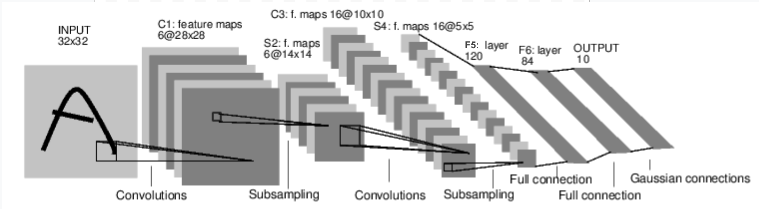
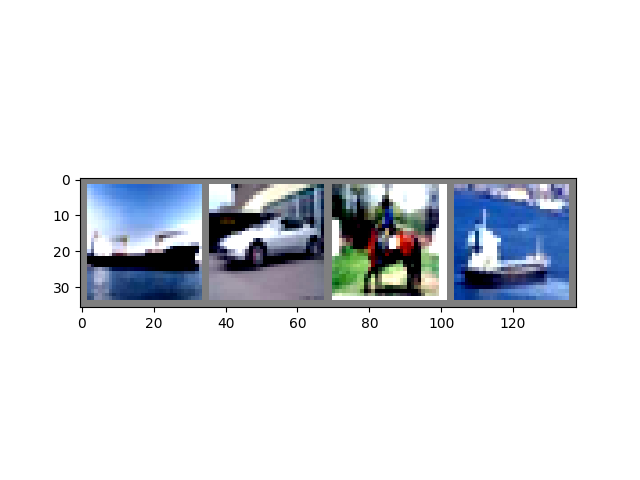
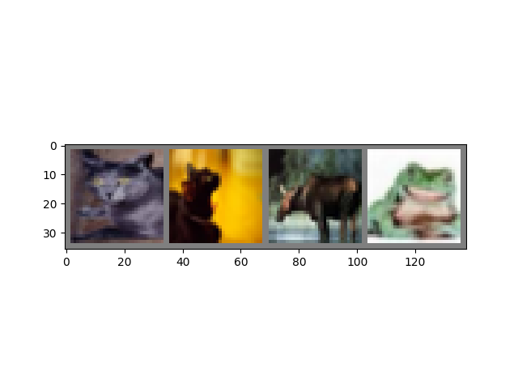

Note
Go to the end to download the full example code.
Introduction || Tensors || Autograd || Building Models || TensorBoard Support || Training Models || Model Understanding
Introduction to PyTorch#
Created On: Nov 30, 2021 | Last Updated: Jun 05, 2025 | Last Verified: Nov 05, 2024
Follow along with the video below or on youtube.
PyTorch Tensors#
Follow along with the video beginning at 03:50.
First, we’ll import pytorch.
import torch
Let’s see a few basic tensor manipulations. First, just a few of the ways to create tensors:
z = torch.zeros(5, 3)
print(z)
print(z.dtype)
tensor([[0., 0., 0.],
[0., 0., 0.],
[0., 0., 0.],
[0., 0., 0.],
[0., 0., 0.]])
torch.float32
Above, we create a 5x3 matrix filled with zeros, and query its datatype to find out that the zeros are 32-bit floating point numbers, which is the default PyTorch.
What if you wanted integers instead? You can always override the default:
i = torch.ones((5, 3), dtype=torch.int16)
print(i)
tensor([[1, 1, 1],
[1, 1, 1],
[1, 1, 1],
[1, 1, 1],
[1, 1, 1]], dtype=torch.int16)
You can see that when we do change the default, the tensor helpfully reports this when printed.
It’s common to initialize learning weights randomly, often with a specific seed for the PRNG for reproducibility of results:
torch.manual_seed(1729)
r1 = torch.rand(2, 2)
print('A random tensor:')
print(r1)
r2 = torch.rand(2, 2)
print('\nA different random tensor:')
print(r2) # new values
torch.manual_seed(1729)
r3 = torch.rand(2, 2)
print('\nShould match r1:')
print(r3) # repeats values of r1 because of re-seed
A random tensor:
tensor([[0.3126, 0.3791],
[0.3087, 0.0736]])
A different random tensor:
tensor([[0.4216, 0.0691],
[0.2332, 0.4047]])
Should match r1:
tensor([[0.3126, 0.3791],
[0.3087, 0.0736]])
PyTorch tensors perform arithmetic operations intuitively. Tensors of similar shapes may be added, multiplied, etc. Operations with scalars are distributed over the tensor:
ones = torch.ones(2, 3)
print(ones)
twos = torch.ones(2, 3) * 2 # every element is multiplied by 2
print(twos)
threes = ones + twos # addition allowed because shapes are similar
print(threes) # tensors are added element-wise
print(threes.shape) # this has the same dimensions as input tensors
r1 = torch.rand(2, 3)
r2 = torch.rand(3, 2)
# uncomment this line to get a runtime error
# r3 = r1 + r2
tensor([[1., 1., 1.],
[1., 1., 1.]])
tensor([[2., 2., 2.],
[2., 2., 2.]])
tensor([[3., 3., 3.],
[3., 3., 3.]])
torch.Size([2, 3])
Here’s a small sample of the mathematical operations available:
r = (torch.rand(2, 2) - 0.5) * 2 # values between -1 and 1
print('A random matrix, r:')
print(r)
# Common mathematical operations are supported:
print('\nAbsolute value of r:')
print(torch.abs(r))
# ...as are trigonometric functions:
print('\nInverse sine of r:')
print(torch.asin(r))
# ...and linear algebra operations like determinant and singular value decomposition
print('\nDeterminant of r:')
print(torch.det(r))
print('\nSingular value decomposition of r:')
print(torch.svd(r))
# ...and statistical and aggregate operations:
print('\nAverage and standard deviation of r:')
print(torch.std_mean(r))
print('\nMaximum value of r:')
print(torch.max(r))
A random matrix, r:
tensor([[ 0.9956, -0.2232],
[ 0.3858, -0.6593]])
Absolute value of r:
tensor([[0.9956, 0.2232],
[0.3858, 0.6593]])
Inverse sine of r:
tensor([[ 1.4775, -0.2251],
[ 0.3961, -0.7199]])
Determinant of r:
tensor(-0.5703)
Singular value decomposition of r:
torch.return_types.svd(
U=tensor([[-0.8353, -0.5497],
[-0.5497, 0.8353]]),
S=tensor([1.1793, 0.4836]),
V=tensor([[-0.8851, -0.4654],
[ 0.4654, -0.8851]]))
Average and standard deviation of r:
(tensor(0.7217), tensor(0.1247))
Maximum value of r:
tensor(0.9956)
There’s a good deal more to know about the power of PyTorch tensors, including how to set them up for parallel computations on GPU - we’ll be going into more depth in another video.
PyTorch Models#
Follow along with the video beginning at 10:00.
Let’s talk about how we can express models in PyTorch
import torch # for all things PyTorch
import torch.nn as nn # for torch.nn.Module, the parent object for PyTorch models
import torch.nn.functional as F # for the activation function

Figure: LeNet-5
Above is a diagram of LeNet-5, one of the earliest convolutional neural nets, and one of the drivers of the explosion in Deep Learning. It was built to read small images of handwritten numbers (the MNIST dataset), and correctly classify which digit was represented in the image.
Here’s the abridged version of how it works:
Layer C1 is a convolutional layer, meaning that it scans the input image for features it learned during training. It outputs a map of where it saw each of its learned features in the image. This “activation map” is downsampled in layer S2.
Layer C3 is another convolutional layer, this time scanning C1’s activation map for combinations of features. It also puts out an activation map describing the spatial locations of these feature combinations, which is downsampled in layer S4.
Finally, the fully-connected layers at the end, F5, F6, and OUTPUT, are a classifier that takes the final activation map, and classifies it into one of ten bins representing the 10 digits.
How do we express this simple neural network in code?
class LeNet(nn.Module):
def __init__(self):
super(LeNet, self).__init__()
# 1 input image channel (black & white), 6 output channels, 5x5 square convolution
# kernel
self.conv1 = nn.Conv2d(1, 6, 5)
self.conv2 = nn.Conv2d(6, 16, 5)
# an affine operation: y = Wx + b
self.fc1 = nn.Linear(16 * 5 * 5, 120) # 5*5 from image dimension
self.fc2 = nn.Linear(120, 84)
self.fc3 = nn.Linear(84, 10)
def forward(self, x):
# Max pooling over a (2, 2) window
x = F.max_pool2d(F.relu(self.conv1(x)), (2, 2))
# If the size is a square you can only specify a single number
x = F.max_pool2d(F.relu(self.conv2(x)), 2)
x = x.view(-1, self.num_flat_features(x))
x = F.relu(self.fc1(x))
x = F.relu(self.fc2(x))
x = self.fc3(x)
return x
def num_flat_features(self, x):
size = x.size()[1:] # all dimensions except the batch dimension
num_features = 1
for s in size:
num_features *= s
return num_features
Looking over this code, you should be able to spot some structural similarities with the diagram above.
This demonstrates the structure of a typical PyTorch model:
It inherits from
torch.nn.Module- modules may be nested - in fact, even theConv2dandLinearlayer classes inherit fromtorch.nn.Module.A model will have an
__init__()function, where it instantiates its layers, and loads any data artifacts it might need (e.g., an NLP model might load a vocabulary).A model will have a
forward()function. This is where the actual computation happens: An input is passed through the network layers and various functions to generate an output.Other than that, you can build out your model class like any other Python class, adding whatever properties and methods you need to support your model’s computation.
Let’s instantiate this object and run a sample input through it.
net = LeNet()
print(net) # what does the object tell us about itself?
input = torch.rand(1, 1, 32, 32) # stand-in for a 32x32 black & white image
print('\nImage batch shape:')
print(input.shape)
output = net(input) # we don't call forward() directly
print('\nRaw output:')
print(output)
print(output.shape)
LeNet(
(conv1): Conv2d(1, 6, kernel_size=(5, 5), stride=(1, 1))
(conv2): Conv2d(6, 16, kernel_size=(5, 5), stride=(1, 1))
(fc1): Linear(in_features=400, out_features=120, bias=True)
(fc2): Linear(in_features=120, out_features=84, bias=True)
(fc3): Linear(in_features=84, out_features=10, bias=True)
)
Image batch shape:
torch.Size([1, 1, 32, 32])
Raw output:
tensor([[ 0.0898, 0.0318, 0.1485, 0.0301, -0.0085, -0.1135, -0.0296, 0.0164,
0.0039, 0.0616]], grad_fn=<AddmmBackward0>)
torch.Size([1, 10])
There are a few important things happening above:
First, we instantiate the LeNet class, and we print the net
object. A subclass of torch.nn.Module will report the layers it has
created and their shapes and parameters. This can provide a handy
overview of a model if you want to get the gist of its processing.
Below that, we create a dummy input representing a 32x32 image with 1 color channel. Normally, you would load an image tile and convert it to a tensor of this shape.
You may have noticed an extra dimension to our tensor - the batch
dimension. PyTorch models assume they are working on batches of data
- for example, a batch of 16 of our image tiles would have the shape
(16, 1, 32, 32). Since we’re only using one image, we create a batch
of 1 with shape (1, 1, 32, 32).
We ask the model for an inference by calling it like a function:
net(input). The output of this call represents the model’s
confidence that the input represents a particular digit. (Since this
instance of the model hasn’t learned anything yet, we shouldn’t expect
to see any signal in the output.) Looking at the shape of output, we
can see that it also has a batch dimension, the size of which should
always match the input batch dimension. If we had passed in an input
batch of 16 instances, output would have a shape of (16, 10).
Datasets and Dataloaders#
Follow along with the video beginning at 14:00.
Below, we’re going to demonstrate using one of the ready-to-download, open-access datasets from TorchVision, how to transform the images for consumption by your model, and how to use the DataLoader to feed batches of data to your model.
The first thing we need to do is transform our incoming images into a PyTorch tensor.
#%matplotlib inline
import torch
import torchvision
import torchvision.transforms as transforms
transform = transforms.Compose(
[transforms.ToTensor(),
transforms.Normalize((0.4914, 0.4822, 0.4465), (0.2470, 0.2435, 0.2616))])
Here, we specify two transformations for our input:
transforms.ToTensor()converts images loaded by Pillow into PyTorch tensors.transforms.Normalize()adjusts the values of the tensor so that their average is zero and their standard deviation is 1.0. Most activation functions have their strongest gradients around x = 0, so centering our data there can speed learning. The values passed to the transform are the means (first tuple) and the standard deviations (second tuple) of the rgb values of the images in the dataset. You can calculate these values yourself by running these few lines of code:from torch.utils.data import ConcatDataset transform = transforms.Compose([transforms.ToTensor()]) trainset = torchvision.datasets.CIFAR10(root='./data', train=True, download=True, transform=transform) # stack all train images together into a tensor of shape # (50000, 3, 32, 32) x = torch.stack([sample[0] for sample in ConcatDataset([trainset])]) # get the mean of each channel mean = torch.mean(x, dim=(0,2,3)) # tensor([0.4914, 0.4822, 0.4465]) std = torch.std(x, dim=(0,2,3)) # tensor([0.2470, 0.2435, 0.2616])
There are many more transforms available, including cropping, centering, rotation, and reflection.
Next, we’ll create an instance of the CIFAR10 dataset. This is a set of 32x32 color image tiles representing 10 classes of objects: 6 of animals (bird, cat, deer, dog, frog, horse) and 4 of vehicles (airplane, automobile, ship, truck):
trainset = torchvision.datasets.CIFAR10(root='./data', train=True,
download=True, transform=transform)
0%| | 0.00/170M [00:00<?, ?B/s]
0%| | 32.8k/170M [00:00<14:39, 194kB/s]
0%| | 65.5k/170M [00:00<14:50, 191kB/s]
0%| | 98.3k/170M [00:00<14:56, 190kB/s]
0%| | 131k/170M [00:00<14:57, 190kB/s]
0%| | 164k/170M [00:00<14:56, 190kB/s]
0%| | 197k/170M [00:01<14:58, 190kB/s]
0%| | 229k/170M [00:01<14:57, 190kB/s]
0%| | 262k/170M [00:01<14:56, 190kB/s]
0%| | 295k/170M [00:01<14:53, 190kB/s]
0%| | 328k/170M [00:01<14:55, 190kB/s]
0%| | 360k/170M [00:01<16:04, 176kB/s]
0%| | 393k/170M [00:02<15:44, 180kB/s]
0%| | 426k/170M [00:02<15:30, 183kB/s]
0%| | 459k/170M [00:02<15:22, 184kB/s]
0%| | 492k/170M [00:02<15:21, 184kB/s]
0%| | 524k/170M [00:02<15:14, 186kB/s]
0%| | 557k/170M [00:02<15:13, 186kB/s]
0%| | 590k/170M [00:03<15:10, 187kB/s]
0%| | 623k/170M [00:03<15:05, 188kB/s]
0%| | 655k/170M [00:03<15:05, 188kB/s]
0%| | 688k/170M [00:03<16:13, 174kB/s]
0%| | 721k/170M [00:03<15:49, 179kB/s]
0%| | 754k/170M [00:04<15:34, 182kB/s]
0%| | 786k/170M [00:04<15:28, 183kB/s]
0%| | 819k/170M [00:04<15:18, 185kB/s]
0%| | 852k/170M [00:04<15:14, 185kB/s]
1%| | 885k/170M [00:04<15:10, 186kB/s]
1%| | 918k/170M [00:04<15:10, 186kB/s]
1%| | 950k/170M [00:05<15:09, 186kB/s]
1%| | 983k/170M [00:05<15:07, 187kB/s]
1%| | 1.02M/170M [00:05<15:06, 187kB/s]
1%| | 1.05M/170M [00:05<16:11, 174kB/s]
1%| | 1.08M/170M [00:05<15:49, 178kB/s]
1%| | 1.11M/170M [00:06<15:34, 181kB/s]
1%| | 1.15M/170M [00:06<15:23, 183kB/s]
1%| | 1.18M/170M [00:06<15:20, 184kB/s]
1%| | 1.21M/170M [00:06<15:11, 186kB/s]
1%| | 1.25M/170M [00:06<15:09, 186kB/s]
1%| | 1.28M/170M [00:06<15:06, 187kB/s]
1%| | 1.31M/170M [00:07<15:07, 186kB/s]
1%| | 1.34M/170M [00:07<15:03, 187kB/s]
1%| | 1.38M/170M [00:07<16:13, 174kB/s]
1%| | 1.41M/170M [00:07<15:52, 178kB/s]
1%| | 1.44M/170M [00:07<15:36, 181kB/s]
1%| | 1.47M/170M [00:08<15:28, 182kB/s]
1%| | 1.51M/170M [00:08<15:17, 184kB/s]
1%| | 1.54M/170M [00:08<15:19, 184kB/s]
1%| | 1.57M/170M [00:08<15:15, 185kB/s]
1%| | 1.61M/170M [00:08<15:14, 185kB/s]
1%| | 1.64M/170M [00:08<15:09, 186kB/s]
1%| | 1.67M/170M [00:09<15:09, 186kB/s]
1%| | 1.70M/170M [00:09<15:09, 186kB/s]
1%| | 1.74M/170M [00:09<16:13, 173kB/s]
1%| | 1.77M/170M [00:09<15:59, 176kB/s]
1%| | 1.80M/170M [00:09<15:45, 178kB/s]
1%| | 1.84M/170M [00:09<15:35, 180kB/s]
1%| | 1.87M/170M [00:10<15:30, 181kB/s]
1%| | 1.90M/170M [00:10<15:23, 183kB/s]
1%| | 1.93M/170M [00:10<15:22, 183kB/s]
1%| | 1.97M/170M [00:10<15:20, 183kB/s]
1%| | 2.00M/170M [00:10<15:17, 184kB/s]
1%| | 2.03M/170M [00:11<15:20, 183kB/s]
1%| | 2.06M/170M [00:11<16:28, 170kB/s]
1%| | 2.10M/170M [00:11<16:03, 175kB/s]
1%| | 2.13M/170M [00:11<15:48, 178kB/s]
1%|▏ | 2.16M/170M [00:11<15:35, 180kB/s]
1%|▏ | 2.20M/170M [00:11<15:31, 181kB/s]
1%|▏ | 2.23M/170M [00:12<15:25, 182kB/s]
1%|▏ | 2.26M/170M [00:12<15:21, 183kB/s]
1%|▏ | 2.29M/170M [00:12<15:17, 183kB/s]
1%|▏ | 2.33M/170M [00:12<15:12, 184kB/s]
1%|▏ | 2.36M/170M [00:12<15:12, 184kB/s]
1%|▏ | 2.39M/170M [00:13<16:19, 172kB/s]
1%|▏ | 2.42M/170M [00:13<15:56, 176kB/s]
1%|▏ | 2.46M/170M [00:13<15:44, 178kB/s]
1%|▏ | 2.49M/170M [00:13<15:34, 180kB/s]
1%|▏ | 2.52M/170M [00:13<15:28, 181kB/s]
1%|▏ | 2.56M/170M [00:13<15:22, 182kB/s]
2%|▏ | 2.59M/170M [00:14<15:17, 183kB/s]
2%|▏ | 2.62M/170M [00:14<15:19, 182kB/s]
2%|▏ | 2.65M/170M [00:14<15:15, 183kB/s]
2%|▏ | 2.69M/170M [00:14<15:13, 184kB/s]
2%|▏ | 2.72M/170M [00:14<15:11, 184kB/s]
2%|▏ | 2.75M/170M [00:15<16:19, 171kB/s]
2%|▏ | 2.79M/170M [00:15<15:57, 175kB/s]
2%|▏ | 2.82M/170M [00:15<15:42, 178kB/s]
2%|▏ | 2.85M/170M [00:15<15:29, 180kB/s]
2%|▏ | 2.88M/170M [00:15<15:22, 182kB/s]
2%|▏ | 2.92M/170M [00:15<15:14, 183kB/s]
2%|▏ | 2.95M/170M [00:16<15:08, 184kB/s]
2%|▏ | 2.98M/170M [00:16<15:06, 185kB/s]
2%|▏ | 3.01M/170M [00:16<15:02, 186kB/s]
2%|▏ | 3.05M/170M [00:16<15:02, 185kB/s]
2%|▏ | 3.08M/170M [00:16<16:09, 173kB/s]
2%|▏ | 3.11M/170M [00:17<15:48, 176kB/s]
2%|▏ | 3.15M/170M [00:17<15:32, 179kB/s]
2%|▏ | 3.18M/170M [00:17<15:22, 181kB/s]
2%|▏ | 3.21M/170M [00:17<17:02, 164kB/s]
2%|▏ | 3.24M/170M [00:17<14:46, 189kB/s]
2%|▏ | 3.28M/170M [00:17<14:35, 191kB/s]
2%|▏ | 3.31M/170M [00:18<14:36, 191kB/s]
2%|▏ | 3.34M/170M [00:18<14:37, 190kB/s]
2%|▏ | 3.38M/170M [00:18<14:45, 189kB/s]
2%|▏ | 3.41M/170M [00:18<14:46, 189kB/s]
2%|▏ | 3.44M/170M [00:18<15:57, 174kB/s]
2%|▏ | 3.47M/170M [00:19<15:38, 178kB/s]
2%|▏ | 3.51M/170M [00:19<15:26, 180kB/s]
2%|▏ | 3.54M/170M [00:19<15:16, 182kB/s]
2%|▏ | 3.57M/170M [00:19<15:11, 183kB/s]
2%|▏ | 3.60M/170M [00:19<15:09, 183kB/s]
2%|▏ | 3.64M/170M [00:19<14:59, 185kB/s]
2%|▏ | 3.67M/170M [00:20<14:59, 186kB/s]
2%|▏ | 3.70M/170M [00:20<14:59, 186kB/s]
2%|▏ | 3.74M/170M [00:20<14:56, 186kB/s]
2%|▏ | 3.77M/170M [00:20<16:00, 174kB/s]
2%|▏ | 3.80M/170M [00:20<15:43, 177kB/s]
2%|▏ | 3.83M/170M [00:21<15:21, 181kB/s]
2%|▏ | 3.87M/170M [00:21<15:13, 182kB/s]
2%|▏ | 3.90M/170M [00:21<15:04, 184kB/s]
2%|▏ | 3.93M/170M [00:21<14:59, 185kB/s]
2%|▏ | 3.96M/170M [00:21<14:57, 185kB/s]
2%|▏ | 4.00M/170M [00:21<14:54, 186kB/s]
2%|▏ | 4.03M/170M [00:22<14:57, 186kB/s]
2%|▏ | 4.06M/170M [00:22<14:55, 186kB/s]
2%|▏ | 4.10M/170M [00:22<14:54, 186kB/s]
2%|▏ | 4.13M/170M [00:22<15:58, 173kB/s]
2%|▏ | 4.16M/170M [00:22<15:40, 177kB/s]
2%|▏ | 4.19M/170M [00:23<15:27, 179kB/s]
2%|▏ | 4.23M/170M [00:23<15:16, 181kB/s]
2%|▏ | 4.26M/170M [00:23<15:11, 182kB/s]
3%|▎ | 4.29M/170M [00:23<15:02, 184kB/s]
3%|▎ | 4.33M/170M [00:23<14:59, 185kB/s]
3%|▎ | 4.36M/170M [00:23<14:56, 185kB/s]
3%|▎ | 4.39M/170M [00:24<14:52, 186kB/s]
3%|▎ | 4.42M/170M [00:24<14:56, 185kB/s]
3%|▎ | 4.46M/170M [00:24<15:54, 174kB/s]
3%|▎ | 4.49M/170M [00:24<15:33, 178kB/s]
3%|▎ | 4.52M/170M [00:24<15:20, 180kB/s]
3%|▎ | 4.55M/170M [00:24<15:06, 183kB/s]
3%|▎ | 4.59M/170M [00:25<15:01, 184kB/s]
3%|▎ | 4.62M/170M [00:25<14:54, 185kB/s]
3%|▎ | 4.65M/170M [00:25<14:53, 186kB/s]
3%|▎ | 4.69M/170M [00:25<14:48, 187kB/s]
3%|▎ | 4.72M/170M [00:25<14:51, 186kB/s]
3%|▎ | 4.75M/170M [00:26<14:50, 186kB/s]
3%|▎ | 4.78M/170M [00:26<15:52, 174kB/s]
3%|▎ | 4.82M/170M [00:26<15:35, 177kB/s]
3%|▎ | 4.85M/170M [00:26<15:19, 180kB/s]
3%|▎ | 4.88M/170M [00:26<15:07, 183kB/s]
3%|▎ | 4.92M/170M [00:26<15:01, 184kB/s]
3%|▎ | 4.95M/170M [00:27<14:56, 185kB/s]
3%|▎ | 4.98M/170M [00:27<14:53, 185kB/s]
3%|▎ | 5.01M/170M [00:27<14:49, 186kB/s]
3%|▎ | 5.05M/170M [00:27<14:49, 186kB/s]
3%|▎ | 5.08M/170M [00:27<14:49, 186kB/s]
3%|▎ | 5.11M/170M [00:27<14:47, 186kB/s]
3%|▎ | 5.14M/170M [00:28<15:54, 173kB/s]
3%|▎ | 5.18M/170M [00:28<15:36, 176kB/s]
3%|▎ | 5.21M/170M [00:28<15:22, 179kB/s]
3%|▎ | 5.24M/170M [00:28<15:11, 181kB/s]
3%|▎ | 5.28M/170M [00:28<15:05, 182kB/s]
3%|▎ | 5.31M/170M [00:29<14:55, 185kB/s]
3%|▎ | 5.34M/170M [00:29<14:53, 185kB/s]
3%|▎ | 5.37M/170M [00:29<14:48, 186kB/s]
3%|▎ | 5.41M/170M [00:29<14:45, 186kB/s]
3%|▎ | 5.44M/170M [00:29<14:45, 186kB/s]
3%|▎ | 5.47M/170M [00:30<15:57, 172kB/s]
3%|▎ | 5.51M/170M [00:30<15:38, 176kB/s]
3%|▎ | 5.54M/170M [00:30<15:25, 178kB/s]
3%|▎ | 5.57M/170M [00:30<15:11, 181kB/s]
3%|▎ | 5.60M/170M [00:30<15:10, 181kB/s]
3%|▎ | 5.64M/170M [00:30<15:04, 182kB/s]
3%|▎ | 5.67M/170M [00:31<14:54, 184kB/s]
3%|▎ | 5.70M/170M [00:31<14:51, 185kB/s]
3%|▎ | 5.73M/170M [00:31<14:55, 184kB/s]
3%|▎ | 5.77M/170M [00:31<14:53, 184kB/s]
3%|▎ | 5.80M/170M [00:31<14:51, 185kB/s]
3%|▎ | 5.83M/170M [00:32<16:01, 171kB/s]
3%|▎ | 5.87M/170M [00:32<15:41, 175kB/s]
3%|▎ | 5.90M/170M [00:32<15:23, 178kB/s]
3%|▎ | 5.93M/170M [00:32<15:12, 180kB/s]
3%|▎ | 5.96M/170M [00:32<15:06, 181kB/s]
4%|▎ | 6.00M/170M [00:32<15:03, 182kB/s]
4%|▎ | 6.03M/170M [00:33<15:02, 182kB/s]
4%|▎ | 6.06M/170M [00:33<14:57, 183kB/s]
4%|▎ | 6.09M/170M [00:33<15:00, 183kB/s]
4%|▎ | 6.13M/170M [00:33<15:00, 183kB/s]
4%|▎ | 6.16M/170M [00:33<16:03, 170kB/s]
4%|▎ | 6.19M/170M [00:34<15:45, 174kB/s]
4%|▎ | 6.23M/170M [00:34<15:29, 177kB/s]
4%|▎ | 6.26M/170M [00:34<15:20, 178kB/s]
4%|▎ | 6.29M/170M [00:34<15:17, 179kB/s]
4%|▎ | 6.32M/170M [00:34<15:09, 180kB/s]
4%|▎ | 6.36M/170M [00:34<15:07, 181kB/s]
4%|▎ | 6.39M/170M [00:35<14:59, 182kB/s]
4%|▍ | 6.42M/170M [00:35<14:59, 182kB/s]
4%|▍ | 6.46M/170M [00:35<14:57, 183kB/s]
4%|▍ | 6.49M/170M [00:35<16:07, 170kB/s]
4%|▍ | 6.52M/170M [00:35<15:41, 174kB/s]
4%|▍ | 6.55M/170M [00:36<15:27, 177kB/s]
4%|▍ | 6.59M/170M [00:36<15:17, 179kB/s]
4%|▍ | 6.62M/170M [00:36<15:08, 180kB/s]
4%|▍ | 6.65M/170M [00:36<15:05, 181kB/s]
4%|▍ | 6.68M/170M [00:36<15:02, 182kB/s]
4%|▍ | 6.72M/170M [00:36<15:00, 182kB/s]
4%|▍ | 6.75M/170M [00:37<14:54, 183kB/s]
4%|▍ | 6.78M/170M [00:37<14:53, 183kB/s]
4%|▍ | 6.82M/170M [00:37<14:50, 184kB/s]
4%|▍ | 6.85M/170M [00:37<15:57, 171kB/s]
4%|▍ | 6.88M/170M [00:37<15:33, 175kB/s]
4%|▍ | 6.91M/170M [00:38<15:17, 178kB/s]
4%|▍ | 6.95M/170M [00:38<15:03, 181kB/s]
4%|▍ | 6.98M/170M [00:38<14:57, 182kB/s]
4%|▍ | 7.01M/170M [00:38<14:51, 183kB/s]
4%|▍ | 7.05M/170M [00:38<14:47, 184kB/s]
4%|▍ | 7.08M/170M [00:38<14:44, 185kB/s]
4%|▍ | 7.11M/170M [00:39<14:43, 185kB/s]
4%|▍ | 7.14M/170M [00:39<14:41, 185kB/s]
4%|▍ | 7.18M/170M [00:39<15:46, 173kB/s]
4%|▍ | 7.21M/170M [00:39<15:25, 177kB/s]
4%|▍ | 7.24M/170M [00:39<15:09, 179kB/s]
4%|▍ | 7.27M/170M [00:40<15:03, 181kB/s]
4%|▍ | 7.31M/170M [00:40<14:49, 183kB/s]
4%|▍ | 7.34M/170M [00:40<14:48, 184kB/s]
4%|▍ | 7.37M/170M [00:40<14:38, 186kB/s]
4%|▍ | 7.41M/170M [00:40<14:41, 185kB/s]
4%|▍ | 7.44M/170M [00:40<14:34, 186kB/s]
4%|▍ | 7.47M/170M [00:41<14:30, 187kB/s]
4%|▍ | 7.50M/170M [00:41<14:29, 187kB/s]
4%|▍ | 7.54M/170M [00:41<15:39, 173kB/s]
4%|▍ | 7.57M/170M [00:41<15:18, 177kB/s]
4%|▍ | 7.60M/170M [00:41<15:01, 181kB/s]
4%|▍ | 7.63M/170M [00:41<14:54, 182kB/s]
4%|▍ | 7.67M/170M [00:42<14:47, 184kB/s]
5%|▍ | 7.70M/170M [00:42<14:38, 185kB/s]
5%|▍ | 7.73M/170M [00:42<14:36, 186kB/s]
5%|▍ | 7.77M/170M [00:42<14:36, 186kB/s]
5%|▍ | 7.80M/170M [00:42<14:26, 188kB/s]
5%|▍ | 7.83M/170M [00:43<14:29, 187kB/s]
5%|▍ | 7.86M/170M [00:43<15:28, 175kB/s]
5%|▍ | 7.90M/170M [00:43<15:09, 179kB/s]
5%|▍ | 7.93M/170M [00:43<14:54, 182kB/s]
5%|▍ | 7.96M/170M [00:43<14:42, 184kB/s]
5%|▍ | 8.00M/170M [00:43<14:34, 186kB/s]
5%|▍ | 8.03M/170M [00:44<14:22, 188kB/s]
5%|▍ | 8.06M/170M [00:44<14:21, 188kB/s]
5%|▍ | 8.09M/170M [00:44<14:16, 190kB/s]
5%|▍ | 8.13M/170M [00:44<14:12, 190kB/s]
5%|▍ | 8.16M/170M [00:44<14:10, 191kB/s]
5%|▍ | 8.19M/170M [00:44<14:07, 191kB/s]
5%|▍ | 8.22M/170M [00:45<15:10, 178kB/s]
5%|▍ | 8.26M/170M [00:45<14:47, 183kB/s]
5%|▍ | 8.29M/170M [00:45<14:30, 186kB/s]
5%|▍ | 8.32M/170M [00:45<14:22, 188kB/s]
5%|▍ | 8.36M/170M [00:45<14:06, 192kB/s]
5%|▍ | 8.39M/170M [00:46<14:05, 192kB/s]
5%|▍ | 8.42M/170M [00:46<13:59, 193kB/s]
5%|▍ | 8.45M/170M [00:46<13:58, 193kB/s]
5%|▍ | 8.49M/170M [00:46<13:53, 194kB/s]
5%|▍ | 8.52M/170M [00:46<13:51, 195kB/s]
5%|▌ | 8.55M/170M [00:46<14:51, 182kB/s]
5%|▌ | 8.59M/170M [00:47<14:32, 186kB/s]
5%|▌ | 8.62M/170M [00:47<14:18, 189kB/s]
5%|▌ | 8.65M/170M [00:47<14:12, 190kB/s]
5%|▌ | 8.68M/170M [00:47<14:02, 192kB/s]
5%|▌ | 8.72M/170M [00:47<13:59, 193kB/s]
5%|▌ | 8.75M/170M [00:47<13:59, 193kB/s]
5%|▌ | 8.78M/170M [00:48<13:53, 194kB/s]
5%|▌ | 8.81M/170M [00:48<13:51, 194kB/s]
5%|▌ | 8.85M/170M [00:48<13:52, 194kB/s]
5%|▌ | 8.88M/170M [00:48<14:56, 180kB/s]
5%|▌ | 8.91M/170M [00:48<14:37, 184kB/s]
5%|▌ | 8.95M/170M [00:48<14:20, 188kB/s]
5%|▌ | 8.98M/170M [00:49<14:10, 190kB/s]
5%|▌ | 9.01M/170M [00:49<14:04, 191kB/s]
5%|▌ | 9.04M/170M [00:49<14:00, 192kB/s]
5%|▌ | 9.08M/170M [00:49<14:00, 192kB/s]
5%|▌ | 9.11M/170M [00:49<13:54, 193kB/s]
5%|▌ | 9.14M/170M [00:49<13:55, 193kB/s]
5%|▌ | 9.18M/170M [00:50<13:55, 193kB/s]
5%|▌ | 9.21M/170M [00:50<13:53, 193kB/s]
5%|▌ | 9.24M/170M [00:50<14:57, 180kB/s]
5%|▌ | 9.27M/170M [00:50<14:36, 184kB/s]
5%|▌ | 9.31M/170M [00:50<14:26, 186kB/s]
5%|▌ | 9.34M/170M [00:51<14:22, 187kB/s]
5%|▌ | 9.37M/170M [00:51<14:12, 189kB/s]
6%|▌ | 9.40M/170M [00:51<14:08, 190kB/s]
6%|▌ | 9.44M/170M [00:51<14:04, 191kB/s]
6%|▌ | 9.47M/170M [00:51<14:00, 192kB/s]
6%|▌ | 9.50M/170M [00:51<14:02, 191kB/s]
6%|▌ | 9.54M/170M [00:52<13:57, 192kB/s]
6%|▌ | 9.57M/170M [00:52<14:59, 179kB/s]
6%|▌ | 9.60M/170M [00:52<14:40, 183kB/s]
6%|▌ | 9.63M/170M [00:52<14:28, 185kB/s]
6%|▌ | 9.67M/170M [00:52<14:16, 188kB/s]
6%|▌ | 9.70M/170M [00:52<14:10, 189kB/s]
6%|▌ | 9.73M/170M [00:53<14:07, 190kB/s]
6%|▌ | 9.76M/170M [00:53<13:58, 192kB/s]
6%|▌ | 9.80M/170M [00:53<13:58, 192kB/s]
6%|▌ | 9.83M/170M [00:53<14:01, 191kB/s]
6%|▌ | 9.86M/170M [00:53<13:56, 192kB/s]
6%|▌ | 9.90M/170M [00:53<13:56, 192kB/s]
6%|▌ | 9.93M/170M [00:54<14:57, 179kB/s]
6%|▌ | 9.96M/170M [00:54<14:40, 182kB/s]
6%|▌ | 9.99M/170M [00:54<14:27, 185kB/s]
6%|▌ | 10.0M/170M [00:54<14:18, 187kB/s]
6%|▌ | 10.1M/170M [00:54<14:12, 188kB/s]
6%|▌ | 10.1M/170M [00:55<14:07, 189kB/s]
6%|▌ | 10.1M/170M [00:55<14:06, 189kB/s]
6%|▌ | 10.2M/170M [00:55<14:04, 190kB/s]
6%|▌ | 10.2M/170M [00:55<14:02, 190kB/s]
6%|▌ | 10.2M/170M [00:55<14:00, 191kB/s]
6%|▌ | 10.3M/170M [00:55<14:56, 179kB/s]
6%|▌ | 10.3M/170M [00:56<14:38, 182kB/s]
6%|▌ | 10.3M/170M [00:56<14:24, 185kB/s]
6%|▌ | 10.4M/170M [00:56<14:13, 188kB/s]
6%|▌ | 10.4M/170M [00:56<14:07, 189kB/s]
6%|▌ | 10.4M/170M [00:56<14:03, 190kB/s]
6%|▌ | 10.5M/170M [00:56<13:55, 192kB/s]
6%|▌ | 10.5M/170M [00:57<13:55, 191kB/s]
6%|▌ | 10.5M/170M [00:57<13:55, 191kB/s]
6%|▌ | 10.6M/170M [00:57<13:52, 192kB/s]
6%|▌ | 10.6M/170M [00:57<14:53, 179kB/s]
6%|▌ | 10.6M/170M [00:57<14:33, 183kB/s]
6%|▌ | 10.6M/170M [00:58<14:18, 186kB/s]
6%|▋ | 10.7M/170M [00:58<14:09, 188kB/s]
6%|▋ | 10.7M/170M [00:58<14:04, 189kB/s]
6%|▋ | 10.7M/170M [00:58<13:59, 190kB/s]
6%|▋ | 10.8M/170M [00:58<13:49, 192kB/s]
6%|▋ | 10.8M/170M [00:58<13:48, 193kB/s]
6%|▋ | 10.8M/170M [00:59<13:42, 194kB/s]
6%|▋ | 10.9M/170M [00:59<13:40, 195kB/s]
6%|▋ | 10.9M/170M [00:59<13:41, 194kB/s]
6%|▋ | 10.9M/170M [00:59<14:41, 181kB/s]
6%|▋ | 11.0M/170M [00:59<14:21, 185kB/s]
6%|▋ | 11.0M/170M [00:59<14:13, 187kB/s]
6%|▋ | 11.0M/170M [01:00<14:00, 190kB/s]
6%|▋ | 11.1M/170M [01:00<13:55, 191kB/s]
7%|▋ | 11.1M/170M [01:00<13:52, 192kB/s]
7%|▋ | 11.1M/170M [01:00<13:52, 192kB/s]
7%|▋ | 11.2M/170M [01:00<13:50, 192kB/s]
7%|▋ | 11.2M/170M [01:00<13:45, 193kB/s]
7%|▋ | 11.2M/170M [01:01<13:46, 193kB/s]
7%|▋ | 11.3M/170M [01:01<14:41, 181kB/s]
7%|▋ | 11.3M/170M [01:01<14:31, 183kB/s]
7%|▋ | 11.3M/170M [01:01<14:14, 186kB/s]
7%|▋ | 11.4M/170M [01:01<14:03, 189kB/s]
7%|▋ | 11.4M/170M [01:01<13:56, 190kB/s]
7%|▋ | 11.4M/170M [01:02<13:50, 191kB/s]
7%|▋ | 11.5M/170M [01:02<13:46, 193kB/s]
7%|▋ | 11.5M/170M [01:02<13:45, 193kB/s]
7%|▋ | 11.5M/170M [01:02<13:40, 194kB/s]
7%|▋ | 11.6M/170M [01:02<13:39, 194kB/s]
7%|▋ | 11.6M/170M [01:02<13:35, 195kB/s]
7%|▋ | 11.6M/170M [01:03<14:34, 182kB/s]
7%|▋ | 11.7M/170M [01:03<14:16, 185kB/s]
7%|▋ | 11.7M/170M [01:03<14:02, 188kB/s]
7%|▋ | 11.7M/170M [01:03<13:52, 191kB/s]
7%|▋ | 11.8M/170M [01:03<13:42, 193kB/s]
7%|▋ | 11.8M/170M [01:04<13:39, 194kB/s]
7%|▋ | 11.8M/170M [01:04<13:33, 195kB/s]
7%|▋ | 11.9M/170M [01:04<13:29, 196kB/s]
7%|▋ | 11.9M/170M [01:04<13:26, 197kB/s]
7%|▋ | 11.9M/170M [01:04<13:25, 197kB/s]
7%|▋ | 12.0M/170M [01:04<14:31, 182kB/s]
7%|▋ | 12.0M/170M [01:05<14:15, 185kB/s]
7%|▋ | 12.0M/170M [01:05<14:06, 187kB/s]
7%|▋ | 12.1M/170M [01:05<13:53, 190kB/s]
7%|▋ | 12.1M/170M [01:05<13:52, 190kB/s]
7%|▋ | 12.1M/170M [01:05<13:45, 192kB/s]
7%|▋ | 12.2M/170M [01:05<13:40, 193kB/s]
7%|▋ | 12.2M/170M [01:06<13:38, 193kB/s]
7%|▋ | 12.2M/170M [01:06<13:36, 194kB/s]
7%|▋ | 12.3M/170M [01:06<13:36, 194kB/s]
7%|▋ | 12.3M/170M [01:06<13:34, 194kB/s]
7%|▋ | 12.3M/170M [01:06<14:36, 181kB/s]
7%|▋ | 12.4M/170M [01:06<14:12, 186kB/s]
7%|▋ | 12.4M/170M [01:07<13:57, 189kB/s]
7%|▋ | 12.4M/170M [01:07<13:48, 191kB/s]
7%|▋ | 12.5M/170M [01:07<13:42, 192kB/s]
7%|▋ | 12.5M/170M [01:07<13:37, 193kB/s]
7%|▋ | 12.5M/170M [01:07<13:34, 194kB/s]
7%|▋ | 12.6M/170M [01:07<13:31, 195kB/s]
7%|▋ | 12.6M/170M [01:08<13:28, 195kB/s]
7%|▋ | 12.6M/170M [01:08<13:26, 196kB/s]
7%|▋ | 12.6M/170M [01:08<14:26, 182kB/s]
7%|▋ | 12.7M/170M [01:08<14:09, 186kB/s]
7%|▋ | 12.7M/170M [01:08<13:54, 189kB/s]
7%|▋ | 12.7M/170M [01:09<13:43, 191kB/s]
7%|▋ | 12.8M/170M [01:09<13:41, 192kB/s]
8%|▊ | 12.8M/170M [01:09<13:31, 194kB/s]
8%|▊ | 12.8M/170M [01:09<13:30, 195kB/s]
8%|▊ | 12.9M/170M [01:09<13:26, 195kB/s]
8%|▊ | 12.9M/170M [01:09<13:25, 196kB/s]
8%|▊ | 12.9M/170M [01:10<13:24, 196kB/s]
8%|▊ | 13.0M/170M [01:10<14:26, 182kB/s]
8%|▊ | 13.0M/170M [01:10<14:06, 186kB/s]
8%|▊ | 13.0M/170M [01:10<13:49, 190kB/s]
8%|▊ | 13.1M/170M [01:10<13:44, 191kB/s]
8%|▊ | 13.1M/170M [01:10<13:36, 193kB/s]
8%|▊ | 13.1M/170M [01:11<13:31, 194kB/s]
8%|▊ | 13.2M/170M [01:11<13:30, 194kB/s]
8%|▊ | 13.2M/170M [01:11<13:32, 194kB/s]
8%|▊ | 13.2M/170M [01:11<13:27, 195kB/s]
8%|▊ | 13.3M/170M [01:11<13:23, 196kB/s]
8%|▊ | 13.3M/170M [01:11<13:27, 195kB/s]
8%|▊ | 13.3M/170M [01:12<14:20, 183kB/s]
8%|▊ | 13.4M/170M [01:12<14:02, 187kB/s]
8%|▊ | 13.4M/170M [01:12<13:49, 189kB/s]
8%|▊ | 13.4M/170M [01:12<13:35, 193kB/s]
8%|▊ | 13.5M/170M [01:12<13:33, 193kB/s]
8%|▊ | 13.5M/170M [01:12<13:24, 195kB/s]
8%|▊ | 13.5M/170M [01:13<13:20, 196kB/s]
8%|▊ | 13.6M/170M [01:13<13:19, 196kB/s]
8%|▊ | 13.6M/170M [01:13<13:17, 197kB/s]
8%|▊ | 13.6M/170M [01:13<13:15, 197kB/s]
8%|▊ | 13.7M/170M [01:13<14:15, 183kB/s]
8%|▊ | 13.7M/170M [01:13<13:55, 188kB/s]
8%|▊ | 13.7M/170M [01:14<13:43, 190kB/s]
8%|▊ | 13.8M/170M [01:14<13:30, 193kB/s]
8%|▊ | 13.8M/170M [01:14<13:27, 194kB/s]
8%|▊ | 13.8M/170M [01:14<13:19, 196kB/s]
8%|▊ | 13.9M/170M [01:14<13:20, 196kB/s]
8%|▊ | 13.9M/170M [01:14<13:14, 197kB/s]
8%|▊ | 13.9M/170M [01:15<13:12, 198kB/s]
8%|▊ | 14.0M/170M [01:15<13:15, 197kB/s]
8%|▊ | 14.0M/170M [01:15<13:14, 197kB/s]
8%|▊ | 14.0M/170M [01:15<14:11, 184kB/s]
8%|▊ | 14.1M/170M [01:15<13:53, 188kB/s]
8%|▊ | 14.1M/170M [01:16<13:37, 191kB/s]
8%|▊ | 14.1M/170M [01:16<13:26, 194kB/s]
8%|▊ | 14.2M/170M [01:16<13:18, 196kB/s]
8%|▊ | 14.2M/170M [01:16<13:20, 195kB/s]
8%|▊ | 14.2M/170M [01:16<13:17, 196kB/s]
8%|▊ | 14.3M/170M [01:16<13:14, 197kB/s]
8%|▊ | 14.3M/170M [01:16<13:06, 199kB/s]
8%|▊ | 14.3M/170M [01:17<13:09, 198kB/s]
8%|▊ | 14.4M/170M [01:17<14:12, 183kB/s]
8%|▊ | 14.4M/170M [01:17<13:54, 187kB/s]
8%|▊ | 14.4M/170M [01:17<13:41, 190kB/s]
8%|▊ | 14.5M/170M [01:17<13:31, 192kB/s]
8%|▊ | 14.5M/170M [01:18<13:23, 194kB/s]
9%|▊ | 14.5M/170M [01:18<13:23, 194kB/s]
9%|▊ | 14.5M/170M [01:18<13:22, 194kB/s]
9%|▊ | 14.6M/170M [01:18<13:11, 197kB/s]
9%|▊ | 14.6M/170M [01:18<13:17, 195kB/s]
9%|▊ | 14.6M/170M [01:18<13:12, 197kB/s]
9%|▊ | 14.7M/170M [01:19<14:17, 182kB/s]
9%|▊ | 14.7M/170M [01:19<13:55, 186kB/s]
9%|▊ | 14.7M/170M [01:19<13:41, 190kB/s]
9%|▊ | 14.8M/170M [01:19<13:31, 192kB/s]
9%|▊ | 14.8M/170M [01:19<13:31, 192kB/s]
9%|▊ | 14.8M/170M [01:19<13:20, 194kB/s]
9%|▊ | 14.9M/170M [01:20<13:19, 195kB/s]
9%|▊ | 14.9M/170M [01:20<13:18, 195kB/s]
9%|▉ | 14.9M/170M [01:20<13:15, 196kB/s]
9%|▉ | 15.0M/170M [01:20<13:14, 196kB/s]
9%|▉ | 15.0M/170M [01:20<13:09, 197kB/s]
9%|▉ | 15.0M/170M [01:20<14:09, 183kB/s]
9%|▉ | 15.1M/170M [01:21<13:53, 186kB/s]
9%|▉ | 15.1M/170M [01:21<13:43, 189kB/s]
9%|▉ | 15.1M/170M [01:21<13:31, 191kB/s]
9%|▉ | 15.2M/170M [01:21<13:29, 192kB/s]
9%|▉ | 15.2M/170M [01:21<13:24, 193kB/s]
9%|▉ | 15.2M/170M [01:21<13:24, 193kB/s]
9%|▉ | 15.3M/170M [01:22<13:16, 195kB/s]
9%|▉ | 15.3M/170M [01:22<13:18, 194kB/s]
9%|▉ | 15.3M/170M [01:22<13:16, 195kB/s]
9%|▉ | 15.4M/170M [01:22<14:11, 182kB/s]
9%|▉ | 15.4M/170M [01:22<13:51, 187kB/s]
9%|▉ | 15.4M/170M [01:23<13:39, 189kB/s]
9%|▉ | 15.5M/170M [01:23<13:32, 191kB/s]
9%|▉ | 15.5M/170M [01:23<13:24, 193kB/s]
9%|▉ | 15.5M/170M [01:23<13:21, 193kB/s]
9%|▉ | 15.6M/170M [01:23<13:17, 194kB/s]
9%|▉ | 15.6M/170M [01:23<13:13, 195kB/s]
9%|▉ | 15.6M/170M [01:24<13:15, 195kB/s]
9%|▉ | 15.7M/170M [01:24<13:10, 196kB/s]
9%|▉ | 15.7M/170M [01:24<13:10, 196kB/s]
9%|▉ | 15.7M/170M [01:24<14:08, 182kB/s]
9%|▉ | 15.8M/170M [01:24<13:47, 187kB/s]
9%|▉ | 15.8M/170M [01:24<13:36, 190kB/s]
9%|▉ | 15.8M/170M [01:25<13:26, 192kB/s]
9%|▉ | 15.9M/170M [01:25<13:20, 193kB/s]
9%|▉ | 15.9M/170M [01:25<13:11, 195kB/s]
9%|▉ | 15.9M/170M [01:25<13:10, 196kB/s]
9%|▉ | 16.0M/170M [01:25<13:06, 196kB/s]
9%|▉ | 16.0M/170M [01:25<13:06, 196kB/s]
9%|▉ | 16.0M/170M [01:26<13:02, 198kB/s]
9%|▉ | 16.1M/170M [01:26<14:01, 183kB/s]
9%|▉ | 16.1M/170M [01:26<13:41, 188kB/s]
9%|▉ | 16.1M/170M [01:26<13:26, 191kB/s]
9%|▉ | 16.2M/170M [01:26<13:19, 193kB/s]
9%|▉ | 16.2M/170M [01:26<13:10, 195kB/s]
10%|▉ | 16.2M/170M [01:27<13:06, 196kB/s]
10%|▉ | 16.3M/170M [01:27<13:04, 197kB/s]
10%|▉ | 16.3M/170M [01:27<12:59, 198kB/s]
10%|▉ | 16.3M/170M [01:27<12:57, 198kB/s]
10%|▉ | 16.4M/170M [01:27<12:54, 199kB/s]
10%|▉ | 16.4M/170M [01:27<12:53, 199kB/s]
10%|▉ | 16.4M/170M [01:28<13:51, 185kB/s]
10%|▉ | 16.4M/170M [01:28<13:30, 190kB/s]
10%|▉ | 16.5M/170M [01:28<13:20, 192kB/s]
10%|▉ | 16.5M/170M [01:28<13:06, 196kB/s]
10%|▉ | 16.5M/170M [01:28<12:59, 198kB/s]
10%|▉ | 16.6M/170M [01:28<12:53, 199kB/s]
10%|▉ | 16.6M/170M [01:29<12:49, 200kB/s]
10%|▉ | 16.6M/170M [01:29<12:47, 201kB/s]
10%|▉ | 16.7M/170M [01:29<12:45, 201kB/s]
10%|▉ | 16.7M/170M [01:29<12:42, 202kB/s]
10%|▉ | 16.7M/170M [01:29<13:37, 188kB/s]
10%|▉ | 16.8M/170M [01:29<13:19, 192kB/s]
10%|▉ | 16.8M/170M [01:30<13:05, 196kB/s]
10%|▉ | 16.8M/170M [01:30<12:56, 198kB/s]
10%|▉ | 16.9M/170M [01:30<12:49, 200kB/s]
10%|▉ | 16.9M/170M [01:30<12:44, 201kB/s]
10%|▉ | 16.9M/170M [01:30<12:39, 202kB/s]
10%|▉ | 17.0M/170M [01:30<12:35, 203kB/s]
10%|▉ | 17.0M/170M [01:31<12:34, 203kB/s]
10%|▉ | 17.0M/170M [01:31<12:34, 204kB/s]
10%|█ | 17.1M/170M [01:31<13:29, 189kB/s]
10%|█ | 17.1M/170M [01:31<13:17, 192kB/s]
10%|█ | 17.1M/170M [01:31<12:58, 197kB/s]
10%|█ | 17.2M/170M [01:31<12:56, 197kB/s]
10%|█ | 17.2M/170M [01:32<12:49, 199kB/s]
10%|█ | 17.2M/170M [01:32<12:49, 199kB/s]
10%|█ | 17.3M/170M [01:32<12:43, 201kB/s]
10%|█ | 17.3M/170M [01:32<12:36, 202kB/s]
10%|█ | 17.3M/170M [01:32<12:40, 201kB/s]
10%|█ | 17.4M/170M [01:32<12:40, 201kB/s]
10%|█ | 17.4M/170M [01:33<12:37, 202kB/s]
10%|█ | 17.4M/170M [01:33<13:34, 188kB/s]
10%|█ | 17.5M/170M [01:33<13:18, 192kB/s]
10%|█ | 17.5M/170M [01:33<13:08, 194kB/s]
10%|█ | 17.5M/170M [01:33<13:01, 196kB/s]
10%|█ | 17.6M/170M [01:33<12:55, 197kB/s]
10%|█ | 17.6M/170M [01:34<12:50, 198kB/s]
10%|█ | 17.6M/170M [01:34<12:48, 199kB/s]
10%|█ | 17.7M/170M [01:34<12:48, 199kB/s]
10%|█ | 17.7M/170M [01:34<12:43, 200kB/s]
10%|█ | 17.7M/170M [01:34<12:41, 201kB/s]
10%|█ | 17.8M/170M [01:34<13:36, 187kB/s]
10%|█ | 17.8M/170M [01:35<13:15, 192kB/s]
10%|█ | 17.8M/170M [01:35<13:03, 195kB/s]
10%|█ | 17.9M/170M [01:35<12:55, 197kB/s]
10%|█ | 17.9M/170M [01:35<12:47, 199kB/s]
11%|█ | 17.9M/170M [01:35<12:44, 200kB/s]
11%|█ | 18.0M/170M [01:35<12:40, 200kB/s]
11%|█ | 18.0M/170M [01:36<12:38, 201kB/s]
11%|█ | 18.0M/170M [01:36<12:36, 201kB/s]
11%|█ | 18.1M/170M [01:36<12:37, 201kB/s]
11%|█ | 18.1M/170M [01:36<12:33, 202kB/s]
11%|█ | 18.1M/170M [01:36<13:30, 188kB/s]
11%|█ | 18.2M/170M [01:36<13:18, 191kB/s]
11%|█ | 18.2M/170M [01:37<13:00, 195kB/s]
11%|█ | 18.2M/170M [01:37<12:55, 196kB/s]
11%|█ | 18.3M/170M [01:37<12:47, 198kB/s]
11%|█ | 18.3M/170M [01:37<12:44, 199kB/s]
11%|█ | 18.3M/170M [01:37<12:43, 199kB/s]
11%|█ | 18.4M/170M [01:37<12:44, 199kB/s]
11%|█ | 18.4M/170M [01:38<12:40, 200kB/s]
11%|█ | 18.4M/170M [01:38<12:42, 200kB/s]
11%|█ | 18.4M/170M [01:38<13:39, 186kB/s]
11%|█ | 18.5M/170M [01:38<13:23, 189kB/s]
11%|█ | 18.5M/170M [01:38<13:11, 192kB/s]
11%|█ | 18.5M/170M [01:38<13:02, 194kB/s]
11%|█ | 18.6M/170M [01:39<13:00, 195kB/s]
11%|█ | 18.6M/170M [01:39<12:54, 196kB/s]
11%|█ | 18.6M/170M [01:39<12:51, 197kB/s]
11%|█ | 18.7M/170M [01:39<12:51, 197kB/s]
11%|█ | 18.7M/170M [01:39<12:47, 198kB/s]
11%|█ | 18.7M/170M [01:39<12:41, 199kB/s]
11%|█ | 18.8M/170M [01:40<13:42, 185kB/s]
11%|█ | 18.8M/170M [01:40<13:17, 190kB/s]
11%|█ | 18.8M/170M [01:40<13:09, 192kB/s]
11%|█ | 18.9M/170M [01:40<12:57, 195kB/s]
11%|█ | 18.9M/170M [01:40<12:52, 196kB/s]
11%|█ | 18.9M/170M [01:40<12:48, 197kB/s]
11%|█ | 19.0M/170M [01:41<12:45, 198kB/s]
11%|█ | 19.0M/170M [01:41<12:44, 198kB/s]
11%|█ | 19.0M/170M [01:41<12:43, 198kB/s]
11%|█ | 19.1M/170M [01:41<12:46, 198kB/s]
11%|█ | 19.1M/170M [01:41<12:37, 200kB/s]
11%|█ | 19.1M/170M [01:41<13:37, 185kB/s]
11%|█ | 19.2M/170M [01:42<13:22, 189kB/s]
11%|█▏ | 19.2M/170M [01:42<13:09, 192kB/s]
11%|█▏ | 19.2M/170M [01:42<12:59, 194kB/s]
11%|█▏ | 19.3M/170M [01:42<12:55, 195kB/s]
11%|█▏ | 19.3M/170M [01:42<12:46, 197kB/s]
11%|█▏ | 19.3M/170M [01:42<12:48, 197kB/s]
11%|█▏ | 19.4M/170M [01:43<12:44, 198kB/s]
11%|█▏ | 19.4M/170M [01:43<12:42, 198kB/s]
11%|█▏ | 19.4M/170M [01:43<12:46, 197kB/s]
11%|█▏ | 19.5M/170M [01:43<13:39, 184kB/s]
11%|█▏ | 19.5M/170M [01:43<13:16, 190kB/s]
11%|█▏ | 19.5M/170M [01:43<13:02, 193kB/s]
11%|█▏ | 19.6M/170M [01:44<12:51, 196kB/s]
11%|█▏ | 19.6M/170M [01:44<12:44, 197kB/s]
12%|█▏ | 19.6M/170M [01:44<12:37, 199kB/s]
12%|█▏ | 19.7M/170M [01:44<12:34, 200kB/s]
12%|█▏ | 19.7M/170M [01:44<12:32, 200kB/s]
12%|█▏ | 19.7M/170M [01:44<12:30, 201kB/s]
12%|█▏ | 19.8M/170M [01:45<12:25, 202kB/s]
12%|█▏ | 19.8M/170M [01:45<12:28, 201kB/s]
12%|█▏ | 19.8M/170M [01:45<13:22, 188kB/s]
12%|█▏ | 19.9M/170M [01:45<13:06, 192kB/s]
12%|█▏ | 19.9M/170M [01:45<12:53, 195kB/s]
12%|█▏ | 19.9M/170M [01:45<12:42, 197kB/s]
12%|█▏ | 20.0M/170M [01:46<12:36, 199kB/s]
12%|█▏ | 20.0M/170M [01:46<12:27, 201kB/s]
12%|█▏ | 20.0M/170M [01:46<12:24, 202kB/s]
12%|█▏ | 20.1M/170M [01:46<12:27, 201kB/s]
12%|█▏ | 20.1M/170M [01:46<12:20, 203kB/s]
12%|█▏ | 20.1M/170M [01:46<12:23, 202kB/s]
12%|█▏ | 20.2M/170M [01:47<13:15, 189kB/s]
12%|█▏ | 20.2M/170M [01:47<13:01, 192kB/s]
12%|█▏ | 20.2M/170M [01:47<12:44, 196kB/s]
12%|█▏ | 20.3M/170M [01:47<12:38, 198kB/s]
12%|█▏ | 20.3M/170M [01:47<12:33, 199kB/s]
12%|█▏ | 20.3M/170M [01:47<12:28, 201kB/s]
12%|█▏ | 20.3M/170M [01:48<12:25, 202kB/s]
12%|█▏ | 20.4M/170M [01:48<12:23, 202kB/s]
12%|█▏ | 20.4M/170M [01:48<12:23, 202kB/s]
12%|█▏ | 20.4M/170M [01:48<12:18, 203kB/s]
12%|█▏ | 20.5M/170M [01:48<12:21, 202kB/s]
12%|█▏ | 20.5M/170M [01:48<13:14, 189kB/s]
12%|█▏ | 20.5M/170M [01:49<12:56, 193kB/s]
12%|█▏ | 20.6M/170M [01:49<12:47, 195kB/s]
12%|█▏ | 20.6M/170M [01:49<12:36, 198kB/s]
12%|█▏ | 20.6M/170M [01:49<12:29, 200kB/s]
12%|█▏ | 20.7M/170M [01:49<12:28, 200kB/s]
12%|█▏ | 20.7M/170M [01:49<12:22, 202kB/s]
12%|█▏ | 20.7M/170M [01:50<12:20, 202kB/s]
12%|█▏ | 20.8M/170M [01:50<12:21, 202kB/s]
12%|█▏ | 20.8M/170M [01:50<12:22, 202kB/s]
12%|█▏ | 20.8M/170M [01:50<13:12, 189kB/s]
12%|█▏ | 20.9M/170M [01:50<12:56, 193kB/s]
12%|█▏ | 20.9M/170M [01:50<12:46, 195kB/s]
12%|█▏ | 20.9M/170M [01:51<12:40, 197kB/s]
12%|█▏ | 21.0M/170M [01:51<12:32, 199kB/s]
12%|█▏ | 21.0M/170M [01:51<12:28, 200kB/s]
12%|█▏ | 21.0M/170M [01:51<12:28, 200kB/s]
12%|█▏ | 21.1M/170M [01:51<12:24, 201kB/s]
12%|█▏ | 21.1M/170M [01:51<12:23, 201kB/s]
12%|█▏ | 21.1M/170M [01:52<12:25, 200kB/s]
12%|█▏ | 21.2M/170M [01:52<13:23, 186kB/s]
12%|█▏ | 21.2M/170M [01:52<13:03, 191kB/s]
12%|█▏ | 21.2M/170M [01:52<12:49, 194kB/s]
12%|█▏ | 21.3M/170M [01:52<12:42, 196kB/s]
12%|█▏ | 21.3M/170M [01:52<12:34, 198kB/s]
13%|█▎ | 21.3M/170M [01:53<12:29, 199kB/s]
13%|█▎ | 21.4M/170M [01:53<12:25, 200kB/s]
13%|█▎ | 21.4M/170M [01:53<12:19, 202kB/s]
13%|█▎ | 21.4M/170M [01:53<12:18, 202kB/s]
13%|█▎ | 21.5M/170M [01:53<12:16, 202kB/s]
13%|█▎ | 21.5M/170M [01:53<12:13, 203kB/s]
13%|█▎ | 21.5M/170M [01:54<13:09, 189kB/s]
13%|█▎ | 21.6M/170M [01:54<12:53, 193kB/s]
13%|█▎ | 21.6M/170M [01:54<12:45, 194kB/s]
13%|█▎ | 21.6M/170M [01:54<12:35, 197kB/s]
13%|█▎ | 21.7M/170M [01:54<12:31, 198kB/s]
13%|█▎ | 21.7M/170M [01:54<12:25, 200kB/s]
13%|█▎ | 21.7M/170M [01:55<12:24, 200kB/s]
13%|█▎ | 21.8M/170M [01:55<12:23, 200kB/s]
13%|█▎ | 21.8M/170M [01:55<12:22, 200kB/s]
13%|█▎ | 21.8M/170M [01:55<12:20, 201kB/s]
13%|█▎ | 21.9M/170M [01:55<13:15, 187kB/s]
13%|█▎ | 21.9M/170M [01:55<12:58, 191kB/s]
13%|█▎ | 21.9M/170M [01:56<12:44, 194kB/s]
13%|█▎ | 22.0M/170M [01:56<12:36, 196kB/s]
13%|█▎ | 22.0M/170M [01:56<12:30, 198kB/s]
13%|█▎ | 22.0M/170M [01:56<12:27, 199kB/s]
13%|█▎ | 22.1M/170M [01:56<12:24, 199kB/s]
13%|█▎ | 22.1M/170M [01:56<12:21, 200kB/s]
13%|█▎ | 22.1M/170M [01:57<12:21, 200kB/s]
13%|█▎ | 22.2M/170M [01:57<12:17, 201kB/s]
13%|█▎ | 22.2M/170M [01:57<12:15, 202kB/s]
13%|█▎ | 22.2M/170M [01:57<13:13, 187kB/s]
13%|█▎ | 22.2M/170M [01:57<12:54, 191kB/s]
13%|█▎ | 22.3M/170M [01:57<12:43, 194kB/s]
13%|█▎ | 22.3M/170M [01:58<12:34, 196kB/s]
13%|█▎ | 22.3M/170M [01:58<12:28, 198kB/s]
13%|█▎ | 22.4M/170M [01:58<12:26, 198kB/s]
13%|█▎ | 22.4M/170M [01:58<12:20, 200kB/s]
13%|█▎ | 22.4M/170M [01:58<12:19, 200kB/s]
13%|█▎ | 22.5M/170M [01:58<12:16, 201kB/s]
13%|█▎ | 22.5M/170M [01:59<12:15, 201kB/s]
13%|█▎ | 22.5M/170M [01:59<13:11, 187kB/s]
13%|█▎ | 22.6M/170M [01:59<12:54, 191kB/s]
13%|█▎ | 22.6M/170M [01:59<12:42, 194kB/s]
13%|█▎ | 22.6M/170M [01:59<12:34, 196kB/s]
13%|█▎ | 22.7M/170M [01:59<12:27, 198kB/s]
13%|█▎ | 22.7M/170M [02:00<12:21, 199kB/s]
13%|█▎ | 22.7M/170M [02:00<12:19, 200kB/s]
13%|█▎ | 22.8M/170M [02:00<12:17, 200kB/s]
13%|█▎ | 22.8M/170M [02:00<12:17, 200kB/s]
13%|█▎ | 22.8M/170M [02:00<12:14, 201kB/s]
13%|█▎ | 22.9M/170M [02:00<13:08, 187kB/s]
13%|█▎ | 22.9M/170M [02:01<12:50, 192kB/s]
13%|█▎ | 22.9M/170M [02:01<12:41, 194kB/s]
13%|█▎ | 23.0M/170M [02:01<12:32, 196kB/s]
13%|█▎ | 23.0M/170M [02:01<12:24, 198kB/s]
14%|█▎ | 23.0M/170M [02:01<12:21, 199kB/s]
14%|█▎ | 23.1M/170M [02:01<12:16, 200kB/s]
14%|█▎ | 23.1M/170M [02:02<12:18, 200kB/s]
14%|█▎ | 23.1M/170M [02:02<12:14, 201kB/s]
14%|█▎ | 23.2M/170M [02:02<12:10, 202kB/s]
14%|█▎ | 23.2M/170M [02:02<12:05, 203kB/s]
14%|█▎ | 23.2M/170M [02:02<13:00, 189kB/s]
14%|█▎ | 23.3M/170M [02:02<12:45, 192kB/s]
14%|█▎ | 23.3M/170M [02:03<12:30, 196kB/s]
14%|█▎ | 23.3M/170M [02:03<12:21, 198kB/s]
14%|█▎ | 23.4M/170M [02:03<12:19, 199kB/s]
14%|█▎ | 23.4M/170M [02:03<12:14, 200kB/s]
14%|█▎ | 23.4M/170M [02:03<12:10, 201kB/s]
14%|█▍ | 23.5M/170M [02:03<12:09, 202kB/s]
14%|█▍ | 23.5M/170M [02:04<12:09, 202kB/s]
14%|█▍ | 23.5M/170M [02:04<12:07, 202kB/s]
14%|█▍ | 23.6M/170M [02:04<12:59, 188kB/s]
14%|█▍ | 23.6M/170M [02:04<12:44, 192kB/s]
14%|█▍ | 23.6M/170M [02:04<12:28, 196kB/s]
14%|█▍ | 23.7M/170M [02:04<12:23, 198kB/s]
14%|█▍ | 23.7M/170M [02:05<12:19, 198kB/s]
14%|█▍ | 23.7M/170M [02:05<12:13, 200kB/s]
14%|█▍ | 23.8M/170M [02:05<12:14, 200kB/s]
14%|█▍ | 23.8M/170M [02:05<12:15, 199kB/s]
14%|█▍ | 23.8M/170M [02:05<12:14, 200kB/s]
14%|█▍ | 23.9M/170M [02:05<12:10, 201kB/s]
14%|█▍ | 23.9M/170M [02:05<12:13, 200kB/s]
14%|█▍ | 23.9M/170M [02:06<13:07, 186kB/s]
14%|█▍ | 24.0M/170M [02:06<12:50, 190kB/s]
14%|█▍ | 24.0M/170M [02:06<12:39, 193kB/s]
14%|█▍ | 24.0M/170M [02:06<12:31, 195kB/s]
14%|█▍ | 24.1M/170M [02:06<12:26, 196kB/s]
14%|█▍ | 24.1M/170M [02:07<12:21, 198kB/s]
14%|█▍ | 24.1M/170M [02:07<12:16, 199kB/s]
14%|█▍ | 24.2M/170M [02:07<12:14, 199kB/s]
14%|█▍ | 24.2M/170M [02:07<12:11, 200kB/s]
14%|█▍ | 24.2M/170M [02:07<12:11, 200kB/s]
14%|█▍ | 24.2M/170M [02:07<13:06, 186kB/s]
14%|█▍ | 24.3M/170M [02:08<12:51, 190kB/s]
14%|█▍ | 24.3M/170M [02:08<12:35, 193kB/s]
14%|█▍ | 24.3M/170M [02:08<12:31, 194kB/s]
14%|█▍ | 24.4M/170M [02:08<12:22, 197kB/s]
14%|█▍ | 24.4M/170M [02:08<12:22, 197kB/s]
14%|█▍ | 24.4M/170M [02:08<12:18, 198kB/s]
14%|█▍ | 24.5M/170M [02:09<12:14, 199kB/s]
14%|█▍ | 24.5M/170M [02:09<12:14, 199kB/s]
14%|█▍ | 24.5M/170M [02:09<12:08, 200kB/s]
14%|█▍ | 24.6M/170M [02:09<12:13, 199kB/s]
14%|█▍ | 24.6M/170M [02:09<13:08, 185kB/s]
14%|█▍ | 24.6M/170M [02:09<12:46, 190kB/s]
14%|█▍ | 24.7M/170M [02:10<12:37, 193kB/s]
14%|█▍ | 24.7M/170M [02:10<12:31, 194kB/s]
15%|█▍ | 24.7M/170M [02:10<12:25, 195kB/s]
15%|█▍ | 24.8M/170M [02:10<12:22, 196kB/s]
15%|█▍ | 24.8M/170M [02:10<12:22, 196kB/s]
15%|█▍ | 24.8M/170M [02:10<12:18, 197kB/s]
15%|█▍ | 24.9M/170M [02:11<12:17, 198kB/s]
15%|█▍ | 24.9M/170M [02:11<12:16, 198kB/s]
15%|█▍ | 24.9M/170M [02:11<13:12, 184kB/s]
15%|█▍ | 25.0M/170M [02:11<12:54, 188kB/s]
15%|█▍ | 25.0M/170M [02:11<12:47, 190kB/s]
15%|█▍ | 25.0M/170M [02:11<12:41, 191kB/s]
15%|█▍ | 25.1M/170M [02:12<12:37, 192kB/s]
15%|█▍ | 25.1M/170M [02:12<12:31, 194kB/s]
15%|█▍ | 25.1M/170M [02:12<12:31, 194kB/s]
15%|█▍ | 25.2M/170M [02:12<12:28, 194kB/s]
15%|█▍ | 25.2M/170M [02:12<12:26, 195kB/s]
15%|█▍ | 25.2M/170M [02:12<12:22, 196kB/s]
15%|█▍ | 25.3M/170M [02:13<13:20, 181kB/s]
15%|█▍ | 25.3M/170M [02:13<13:05, 185kB/s]
15%|█▍ | 25.3M/170M [02:13<12:55, 187kB/s]
15%|█▍ | 25.4M/170M [02:13<12:43, 190kB/s]
15%|█▍ | 25.4M/170M [02:13<12:38, 191kB/s]
15%|█▍ | 25.4M/170M [02:13<12:36, 192kB/s]
15%|█▍ | 25.5M/170M [02:14<12:32, 193kB/s]
15%|█▍ | 25.5M/170M [02:14<12:30, 193kB/s]
15%|█▍ | 25.5M/170M [02:14<12:30, 193kB/s]
15%|█▍ | 25.6M/170M [02:14<12:24, 195kB/s]
15%|█▌ | 25.6M/170M [02:14<12:26, 194kB/s]
15%|█▌ | 25.6M/170M [02:15<13:21, 181kB/s]
15%|█▌ | 25.7M/170M [02:15<13:04, 185kB/s]
15%|█▌ | 25.7M/170M [02:15<12:49, 188kB/s]
15%|█▌ | 25.7M/170M [02:15<12:44, 189kB/s]
15%|█▌ | 25.8M/170M [02:15<12:42, 190kB/s]
15%|█▌ | 25.8M/170M [02:15<12:34, 192kB/s]
15%|█▌ | 25.8M/170M [02:16<12:32, 192kB/s]
15%|█▌ | 25.9M/170M [02:16<12:29, 193kB/s]
15%|█▌ | 25.9M/170M [02:16<12:32, 192kB/s]
15%|█▌ | 25.9M/170M [02:16<12:30, 193kB/s]
15%|█▌ | 26.0M/170M [02:16<13:24, 180kB/s]
15%|█▌ | 26.0M/170M [02:16<13:02, 185kB/s]
15%|█▌ | 26.0M/170M [02:17<12:54, 186kB/s]
15%|█▌ | 26.1M/170M [02:17<12:47, 188kB/s]
15%|█▌ | 26.1M/170M [02:17<12:39, 190kB/s]
15%|█▌ | 26.1M/170M [02:17<12:34, 191kB/s]
15%|█▌ | 26.1M/170M [02:17<12:25, 194kB/s]
15%|█▌ | 26.2M/170M [02:17<12:27, 193kB/s]
15%|█▌ | 26.2M/170M [02:18<12:26, 193kB/s]
15%|█▌ | 26.2M/170M [02:18<12:23, 194kB/s]
15%|█▌ | 26.3M/170M [02:18<12:20, 195kB/s]
15%|█▌ | 26.3M/170M [02:18<13:15, 181kB/s]
15%|█▌ | 26.3M/170M [02:18<12:55, 186kB/s]
15%|█▌ | 26.4M/170M [02:18<12:48, 188kB/s]
15%|█▌ | 26.4M/170M [02:19<12:34, 191kB/s]
16%|█▌ | 26.4M/170M [02:19<12:31, 192kB/s]
16%|█▌ | 26.5M/170M [02:19<12:27, 193kB/s]
16%|█▌ | 26.5M/170M [02:19<12:19, 195kB/s]
16%|█▌ | 26.5M/170M [02:19<12:21, 194kB/s]
16%|█▌ | 26.6M/170M [02:19<12:16, 195kB/s]
16%|█▌ | 26.6M/170M [02:20<12:10, 197kB/s]
16%|█▌ | 26.6M/170M [02:20<13:02, 184kB/s]
16%|█▌ | 26.7M/170M [02:20<12:49, 187kB/s]
16%|█▌ | 26.7M/170M [02:20<12:37, 190kB/s]
16%|█▌ | 26.7M/170M [02:20<12:27, 192kB/s]
16%|█▌ | 26.8M/170M [02:21<12:16, 195kB/s]
16%|█▌ | 26.8M/170M [02:21<12:14, 196kB/s]
16%|█▌ | 26.8M/170M [02:21<12:13, 196kB/s]
16%|█▌ | 26.9M/170M [02:21<12:03, 198kB/s]
16%|█▌ | 26.9M/170M [02:21<12:07, 197kB/s]
16%|█▌ | 26.9M/170M [02:21<12:05, 198kB/s]
16%|█▌ | 27.0M/170M [02:22<12:59, 184kB/s]
16%|█▌ | 27.0M/170M [02:22<12:43, 188kB/s]
16%|█▌ | 27.0M/170M [02:22<12:31, 191kB/s]
16%|█▌ | 27.1M/170M [02:22<12:23, 193kB/s]
16%|█▌ | 27.1M/170M [02:22<12:19, 194kB/s]
16%|█▌ | 27.1M/170M [02:22<12:13, 195kB/s]
16%|█▌ | 27.2M/170M [02:23<12:10, 196kB/s]
16%|█▌ | 27.2M/170M [02:23<12:12, 196kB/s]
16%|█▌ | 27.2M/170M [02:23<12:08, 197kB/s]
16%|█▌ | 27.3M/170M [02:23<12:10, 196kB/s]
16%|█▌ | 27.3M/170M [02:23<12:09, 196kB/s]
16%|█▌ | 27.3M/170M [02:23<12:59, 184kB/s]
16%|█▌ | 27.4M/170M [02:24<12:40, 188kB/s]
16%|█▌ | 27.4M/170M [02:24<12:32, 190kB/s]
16%|█▌ | 27.4M/170M [02:24<12:18, 194kB/s]
16%|█▌ | 27.5M/170M [02:24<12:16, 194kB/s]
16%|█▌ | 27.5M/170M [02:24<12:11, 196kB/s]
16%|█▌ | 27.5M/170M [02:24<12:07, 197kB/s]
16%|█▌ | 27.6M/170M [02:25<12:06, 197kB/s]
16%|█▌ | 27.6M/170M [02:25<12:02, 198kB/s]
16%|█▌ | 27.6M/170M [02:25<11:57, 199kB/s]
16%|█▌ | 27.7M/170M [02:25<12:54, 184kB/s]
16%|█▌ | 27.7M/170M [02:25<12:42, 187kB/s]
16%|█▋ | 27.7M/170M [02:25<12:28, 191kB/s]
16%|█▋ | 27.8M/170M [02:26<12:19, 193kB/s]
16%|█▋ | 27.8M/170M [02:26<12:14, 194kB/s]
16%|█▋ | 27.8M/170M [02:26<12:10, 195kB/s]
16%|█▋ | 27.9M/170M [02:26<12:09, 195kB/s]
16%|█▋ | 27.9M/170M [02:26<12:05, 197kB/s]
16%|█▋ | 27.9M/170M [02:26<12:02, 197kB/s]
16%|█▋ | 28.0M/170M [02:27<12:06, 196kB/s]
16%|█▋ | 28.0M/170M [02:27<12:03, 197kB/s]
16%|█▋ | 28.0M/170M [02:27<12:57, 183kB/s]
16%|█▋ | 28.0M/170M [02:27<12:41, 187kB/s]
16%|█▋ | 28.1M/170M [02:27<12:26, 191kB/s]
16%|█▋ | 28.1M/170M [02:27<12:16, 193kB/s]
17%|█▋ | 28.1M/170M [02:28<12:04, 196kB/s]
17%|█▋ | 28.2M/170M [02:28<12:01, 197kB/s]
17%|█▋ | 28.2M/170M [02:28<11:56, 199kB/s]
17%|█▋ | 28.2M/170M [02:28<11:52, 200kB/s]
17%|█▋ | 28.3M/170M [02:28<11:51, 200kB/s]
17%|█▋ | 28.3M/170M [02:28<11:50, 200kB/s]
17%|█▋ | 28.3M/170M [02:29<12:42, 187kB/s]
17%|█▋ | 28.4M/170M [02:29<12:25, 191kB/s]
17%|█▋ | 28.4M/170M [02:29<12:12, 194kB/s]
17%|█▋ | 28.4M/170M [02:29<12:02, 197kB/s]
17%|█▋ | 28.5M/170M [02:29<11:59, 197kB/s]
17%|█▋ | 28.5M/170M [02:29<11:57, 198kB/s]
17%|█▋ | 28.5M/170M [02:30<11:48, 200kB/s]
17%|█▋ | 28.6M/170M [02:30<11:47, 200kB/s]
17%|█▋ | 28.6M/170M [02:30<11:44, 201kB/s]
17%|█▋ | 28.6M/170M [02:30<11:45, 201kB/s]
17%|█▋ | 28.7M/170M [02:30<11:43, 202kB/s]
17%|█▋ | 28.7M/170M [02:30<12:38, 187kB/s]
17%|█▋ | 28.7M/170M [02:31<12:24, 190kB/s]
17%|█▋ | 28.8M/170M [02:31<12:15, 193kB/s]
17%|█▋ | 28.8M/170M [02:31<12:06, 195kB/s]
17%|█▋ | 28.8M/170M [02:31<12:00, 197kB/s]
17%|█▋ | 28.9M/170M [02:31<11:58, 197kB/s]
17%|█▋ | 28.9M/170M [02:31<11:55, 198kB/s]
17%|█▋ | 28.9M/170M [02:32<11:52, 199kB/s]
17%|█▋ | 29.0M/170M [02:32<11:50, 199kB/s]
17%|█▋ | 29.0M/170M [02:32<11:51, 199kB/s]
17%|█▋ | 29.0M/170M [02:32<12:43, 185kB/s]
17%|█▋ | 29.1M/170M [02:32<12:25, 190kB/s]
17%|█▋ | 29.1M/170M [02:32<12:12, 193kB/s]
17%|█▋ | 29.1M/170M [02:33<12:05, 195kB/s]
17%|█▋ | 29.2M/170M [02:33<11:59, 197kB/s]
17%|█▋ | 29.2M/170M [02:33<11:52, 198kB/s]
17%|█▋ | 29.2M/170M [02:33<11:52, 198kB/s]
17%|█▋ | 29.3M/170M [02:33<11:47, 200kB/s]
17%|█▋ | 29.3M/170M [02:33<11:44, 201kB/s]
17%|█▋ | 29.3M/170M [02:34<11:46, 200kB/s]
17%|█▋ | 29.4M/170M [02:34<12:36, 187kB/s]
17%|█▋ | 29.4M/170M [02:34<12:21, 190kB/s]
17%|█▋ | 29.4M/170M [02:34<12:07, 194kB/s]
17%|█▋ | 29.5M/170M [02:34<11:56, 197kB/s]
17%|█▋ | 29.5M/170M [02:34<11:52, 198kB/s]
17%|█▋ | 29.5M/170M [02:35<11:46, 199kB/s]
17%|█▋ | 29.6M/170M [02:35<11:40, 201kB/s]
17%|█▋ | 29.6M/170M [02:35<11:37, 202kB/s]
17%|█▋ | 29.6M/170M [02:35<11:35, 203kB/s]
17%|█▋ | 29.7M/170M [02:35<11:33, 203kB/s]
17%|█▋ | 29.7M/170M [02:35<11:31, 204kB/s]
17%|█▋ | 29.7M/170M [02:36<12:27, 188kB/s]
17%|█▋ | 29.8M/170M [02:36<12:08, 193kB/s]
17%|█▋ | 29.8M/170M [02:36<11:59, 196kB/s]
17%|█▋ | 29.8M/170M [02:36<11:49, 198kB/s]
18%|█▊ | 29.9M/170M [02:36<11:49, 198kB/s]
18%|█▊ | 29.9M/170M [02:36<11:42, 200kB/s]
18%|█▊ | 29.9M/170M [02:37<11:44, 200kB/s]
18%|█▊ | 29.9M/170M [02:37<11:39, 201kB/s]
18%|█▊ | 30.0M/170M [02:37<11:39, 201kB/s]
18%|█▊ | 30.0M/170M [02:37<11:37, 201kB/s]
18%|█▊ | 30.0M/170M [02:37<12:34, 186kB/s]
18%|█▊ | 30.1M/170M [02:37<12:14, 191kB/s]
18%|█▊ | 30.1M/170M [02:38<12:05, 194kB/s]
18%|█▊ | 30.1M/170M [02:38<11:56, 196kB/s]
18%|█▊ | 30.2M/170M [02:38<11:53, 197kB/s]
18%|█▊ | 30.2M/170M [02:38<11:43, 199kB/s]
18%|█▊ | 30.2M/170M [02:38<11:46, 199kB/s]
18%|█▊ | 30.3M/170M [02:38<11:43, 199kB/s]
18%|█▊ | 30.3M/170M [02:39<11:40, 200kB/s]
18%|█▊ | 30.3M/170M [02:39<11:42, 200kB/s]
18%|█▊ | 30.4M/170M [02:39<11:42, 199kB/s]
18%|█▊ | 30.4M/170M [02:39<12:31, 186kB/s]
18%|█▊ | 30.4M/170M [02:39<12:14, 191kB/s]
18%|█▊ | 30.5M/170M [02:39<12:06, 193kB/s]
18%|█▊ | 30.5M/170M [02:40<12:02, 194kB/s]
18%|█▊ | 30.5M/170M [02:40<11:57, 195kB/s]
18%|█▊ | 30.6M/170M [02:40<11:50, 197kB/s]
18%|█▊ | 30.6M/170M [02:40<11:47, 198kB/s]
18%|█▊ | 30.6M/170M [02:40<11:48, 198kB/s]
18%|█▊ | 30.7M/170M [02:40<11:46, 198kB/s]
18%|█▊ | 30.7M/170M [02:41<11:43, 199kB/s]
18%|█▊ | 30.7M/170M [02:41<12:36, 185kB/s]
18%|█▊ | 30.8M/170M [02:41<12:21, 188kB/s]
18%|█▊ | 30.8M/170M [02:41<12:05, 192kB/s]
18%|█▊ | 30.8M/170M [02:41<11:58, 194kB/s]
18%|█▊ | 30.9M/170M [02:42<11:55, 195kB/s]
18%|█▊ | 30.9M/170M [02:42<11:53, 196kB/s]
18%|█▊ | 30.9M/170M [02:42<11:48, 197kB/s]
18%|█▊ | 31.0M/170M [02:42<11:43, 198kB/s]
18%|█▊ | 31.0M/170M [02:42<11:43, 198kB/s]
18%|█▊ | 31.0M/170M [02:42<11:43, 198kB/s]
18%|█▊ | 31.1M/170M [02:43<12:34, 185kB/s]
18%|█▊ | 31.1M/170M [02:43<12:20, 188kB/s]
18%|█▊ | 31.1M/170M [02:43<12:07, 192kB/s]
18%|█▊ | 31.2M/170M [02:43<12:00, 193kB/s]
18%|█▊ | 31.2M/170M [02:43<11:55, 195kB/s]
18%|█▊ | 31.2M/170M [02:43<11:49, 196kB/s]
18%|█▊ | 31.3M/170M [02:44<11:48, 197kB/s]
18%|█▊ | 31.3M/170M [02:44<11:46, 197kB/s]
18%|█▊ | 31.3M/170M [02:44<11:43, 198kB/s]
18%|█▊ | 31.4M/170M [02:44<11:41, 198kB/s]
18%|█▊ | 31.4M/170M [02:44<11:42, 198kB/s]
18%|█▊ | 31.4M/170M [02:44<12:32, 185kB/s]
18%|█▊ | 31.5M/170M [02:45<12:16, 189kB/s]
18%|█▊ | 31.5M/170M [02:45<12:01, 193kB/s]
18%|█▊ | 31.5M/170M [02:45<11:53, 195kB/s]
19%|█▊ | 31.6M/170M [02:45<11:45, 197kB/s]
19%|█▊ | 31.6M/170M [02:45<11:42, 198kB/s]
19%|█▊ | 31.6M/170M [02:45<11:37, 199kB/s]
19%|█▊ | 31.7M/170M [02:46<11:33, 200kB/s]
19%|█▊ | 31.7M/170M [02:46<11:33, 200kB/s]
19%|█▊ | 31.7M/170M [02:46<11:32, 201kB/s]
19%|█▊ | 31.8M/170M [02:46<12:23, 187kB/s]
19%|█▊ | 31.8M/170M [02:46<12:07, 191kB/s]
19%|█▊ | 31.8M/170M [02:46<11:55, 194kB/s]
19%|█▊ | 31.9M/170M [02:47<11:47, 196kB/s]
19%|█▊ | 31.9M/170M [02:47<11:42, 197kB/s]
19%|█▊ | 31.9M/170M [02:47<11:38, 198kB/s]
19%|█▊ | 31.9M/170M [02:47<11:30, 201kB/s]
19%|█▉ | 32.0M/170M [02:47<11:30, 200kB/s]
19%|█▉ | 32.0M/170M [02:47<11:27, 201kB/s]
19%|█▉ | 32.0M/170M [02:48<11:26, 202kB/s]
19%|█▉ | 32.1M/170M [02:48<11:26, 202kB/s]
19%|█▉ | 32.1M/170M [02:48<12:16, 188kB/s]
19%|█▉ | 32.1M/170M [02:48<11:57, 193kB/s]
19%|█▉ | 32.2M/170M [02:48<11:47, 195kB/s]
19%|█▉ | 32.2M/170M [02:48<11:39, 198kB/s]
19%|█▉ | 32.2M/170M [02:49<11:34, 199kB/s]
19%|█▉ | 32.3M/170M [02:49<11:30, 200kB/s]
19%|█▉ | 32.3M/170M [02:49<11:26, 201kB/s]
19%|█▉ | 32.3M/170M [02:49<11:24, 202kB/s]
19%|█▉ | 32.4M/170M [02:49<11:21, 203kB/s]
19%|█▉ | 32.4M/170M [02:49<11:20, 203kB/s]
19%|█▉ | 32.4M/170M [02:50<12:10, 189kB/s]
19%|█▉ | 32.5M/170M [02:50<11:53, 194kB/s]
19%|█▉ | 32.5M/170M [02:50<11:44, 196kB/s]
19%|█▉ | 32.5M/170M [02:50<11:34, 199kB/s]
19%|█▉ | 32.6M/170M [02:50<11:29, 200kB/s]
19%|█▉ | 32.6M/170M [02:50<11:27, 201kB/s]
19%|█▉ | 32.6M/170M [02:51<11:23, 202kB/s]
19%|█▉ | 32.7M/170M [02:51<11:21, 202kB/s]
19%|█▉ | 32.7M/170M [02:51<11:20, 203kB/s]
19%|█▉ | 32.7M/170M [02:51<11:16, 204kB/s]
19%|█▉ | 32.8M/170M [02:51<11:16, 203kB/s]
19%|█▉ | 32.8M/170M [02:51<12:05, 190kB/s]
19%|█▉ | 32.8M/170M [02:52<11:51, 194kB/s]
19%|█▉ | 32.9M/170M [02:52<11:41, 196kB/s]
19%|█▉ | 32.9M/170M [02:52<11:29, 200kB/s]
19%|█▉ | 32.9M/170M [02:52<11:26, 201kB/s]
19%|█▉ | 33.0M/170M [02:52<11:18, 203kB/s]
19%|█▉ | 33.0M/170M [02:52<11:14, 204kB/s]
19%|█▉ | 33.0M/170M [02:52<11:10, 205kB/s]
19%|█▉ | 33.1M/170M [02:53<11:10, 205kB/s]
19%|█▉ | 33.1M/170M [02:53<11:10, 205kB/s]
19%|█▉ | 33.1M/170M [02:53<11:55, 192kB/s]
19%|█▉ | 33.2M/170M [02:53<11:42, 195kB/s]
19%|█▉ | 33.2M/170M [02:53<11:30, 199kB/s]
19%|█▉ | 33.2M/170M [02:53<11:22, 201kB/s]
20%|█▉ | 33.3M/170M [02:54<11:15, 203kB/s]
20%|█▉ | 33.3M/170M [02:54<11:14, 203kB/s]
20%|█▉ | 33.3M/170M [02:54<11:09, 205kB/s]
20%|█▉ | 33.4M/170M [02:54<11:07, 206kB/s]
20%|█▉ | 33.4M/170M [02:54<11:06, 206kB/s]
20%|█▉ | 33.4M/170M [02:54<11:05, 206kB/s]
20%|█▉ | 33.5M/170M [02:55<11:51, 193kB/s]
20%|█▉ | 33.5M/170M [02:55<11:38, 196kB/s]
20%|█▉ | 33.5M/170M [02:55<11:27, 199kB/s]
20%|█▉ | 33.6M/170M [02:55<11:22, 201kB/s]
20%|█▉ | 33.6M/170M [02:55<11:19, 201kB/s]
20%|█▉ | 33.6M/170M [02:55<11:15, 203kB/s]
20%|█▉ | 33.7M/170M [02:56<11:13, 203kB/s]
20%|█▉ | 33.7M/170M [02:56<11:13, 203kB/s]
20%|█▉ | 33.7M/170M [02:56<11:11, 204kB/s]
20%|█▉ | 33.8M/170M [02:56<11:09, 204kB/s]
20%|█▉ | 33.8M/170M [02:56<11:09, 204kB/s]
20%|█▉ | 33.8M/170M [02:56<11:57, 190kB/s]
20%|█▉ | 33.8M/170M [02:57<11:42, 195kB/s]
20%|█▉ | 33.9M/170M [02:57<11:31, 197kB/s]
20%|█▉ | 33.9M/170M [02:57<11:24, 199kB/s]
20%|█▉ | 33.9M/170M [02:57<11:15, 202kB/s]
20%|█▉ | 34.0M/170M [02:57<11:10, 204kB/s]
20%|█▉ | 34.0M/170M [02:57<11:07, 205kB/s]
20%|█▉ | 34.0M/170M [02:58<11:04, 205kB/s]
20%|█▉ | 34.1M/170M [02:58<11:02, 206kB/s]
20%|██ | 34.1M/170M [02:58<11:00, 206kB/s]
20%|██ | 34.1M/170M [02:58<11:49, 192kB/s]
20%|██ | 34.2M/170M [02:58<11:33, 196kB/s]
20%|██ | 34.2M/170M [02:58<11:24, 199kB/s]
20%|██ | 34.2M/170M [02:59<11:14, 202kB/s]
20%|██ | 34.3M/170M [02:59<11:10, 203kB/s]
20%|██ | 34.3M/170M [02:59<11:06, 204kB/s]
20%|██ | 34.3M/170M [02:59<11:03, 205kB/s]
20%|██ | 34.4M/170M [02:59<11:03, 205kB/s]
20%|██ | 34.4M/170M [02:59<11:02, 205kB/s]
20%|██ | 34.4M/170M [02:59<11:02, 205kB/s]
20%|██ | 34.5M/170M [03:00<11:01, 206kB/s]
20%|██ | 34.5M/170M [03:00<11:49, 192kB/s]
20%|██ | 34.5M/170M [03:00<11:37, 195kB/s]
20%|██ | 34.6M/170M [03:00<11:23, 199kB/s]
20%|██ | 34.6M/170M [03:00<11:14, 201kB/s]
20%|██ | 34.6M/170M [03:00<11:09, 203kB/s]
20%|██ | 34.7M/170M [03:01<11:05, 204kB/s]
20%|██ | 34.7M/170M [03:01<11:02, 205kB/s]
20%|██ | 34.7M/170M [03:01<11:00, 205kB/s]
20%|██ | 34.8M/170M [03:01<10:59, 206kB/s]
20%|██ | 34.8M/170M [03:01<10:57, 206kB/s]
20%|██ | 34.8M/170M [03:01<11:45, 192kB/s]
20%|██ | 34.9M/170M [03:02<11:29, 197kB/s]
20%|██ | 34.9M/170M [03:02<11:18, 200kB/s]
20%|██ | 34.9M/170M [03:02<11:11, 202kB/s]
21%|██ | 35.0M/170M [03:02<11:04, 204kB/s]
21%|██ | 35.0M/170M [03:02<11:00, 205kB/s]
21%|██ | 35.0M/170M [03:02<10:56, 206kB/s]
21%|██ | 35.1M/170M [03:03<10:55, 207kB/s]
21%|██ | 35.1M/170M [03:03<10:52, 207kB/s]
21%|██ | 35.1M/170M [03:03<10:52, 208kB/s]
21%|██ | 35.2M/170M [03:03<11:39, 194kB/s]
21%|██ | 35.2M/170M [03:03<11:24, 198kB/s]
21%|██ | 35.2M/170M [03:03<11:11, 201kB/s]
21%|██ | 35.3M/170M [03:04<11:03, 204kB/s]
21%|██ | 35.3M/170M [03:04<10:57, 206kB/s]
21%|██ | 35.3M/170M [03:04<10:52, 207kB/s]
21%|██ | 35.4M/170M [03:04<10:49, 208kB/s]
21%|██ | 35.4M/170M [03:04<10:48, 208kB/s]
21%|██ | 35.4M/170M [03:04<10:48, 208kB/s]
21%|██ | 35.5M/170M [03:04<10:44, 209kB/s]
21%|██ | 35.5M/170M [03:05<10:44, 209kB/s]
21%|██ | 35.5M/170M [03:05<11:32, 195kB/s]
21%|██ | 35.6M/170M [03:05<11:18, 199kB/s]
21%|██ | 35.6M/170M [03:05<11:08, 202kB/s]
21%|██ | 35.6M/170M [03:05<11:01, 204kB/s]
21%|██ | 35.7M/170M [03:05<10:57, 205kB/s]
21%|██ | 35.7M/170M [03:06<10:54, 206kB/s]
21%|██ | 35.7M/170M [03:06<10:51, 207kB/s]
21%|██ | 35.7M/170M [03:06<10:50, 207kB/s]
21%|██ | 35.8M/170M [03:06<10:50, 207kB/s]
21%|██ | 35.8M/170M [03:06<10:51, 207kB/s]
21%|██ | 35.8M/170M [03:06<11:42, 192kB/s]
21%|██ | 35.9M/170M [03:07<11:29, 195kB/s]
21%|██ | 35.9M/170M [03:07<11:19, 198kB/s]
21%|██ | 35.9M/170M [03:07<11:12, 200kB/s]
21%|██ | 36.0M/170M [03:07<11:07, 202kB/s]
21%|██ | 36.0M/170M [03:07<11:06, 202kB/s]
21%|██ | 36.0M/170M [03:07<11:03, 203kB/s]
21%|██ | 36.1M/170M [03:08<10:59, 204kB/s]
21%|██ | 36.1M/170M [03:08<10:59, 204kB/s]
21%|██ | 36.1M/170M [03:08<10:55, 205kB/s]
21%|██ | 36.2M/170M [03:08<10:58, 204kB/s]
21%|██ | 36.2M/170M [03:08<11:47, 190kB/s]
21%|██▏ | 36.2M/170M [03:08<11:32, 194kB/s]
21%|██▏ | 36.3M/170M [03:09<11:25, 196kB/s]
21%|██▏ | 36.3M/170M [03:09<11:15, 199kB/s]
21%|██▏ | 36.3M/170M [03:09<11:14, 199kB/s]
21%|██▏ | 36.4M/170M [03:09<11:12, 199kB/s]
21%|██▏ | 36.4M/170M [03:09<11:07, 201kB/s]
21%|██▏ | 36.4M/170M [03:09<11:08, 200kB/s]
21%|██▏ | 36.5M/170M [03:10<11:07, 201kB/s]
21%|██▏ | 36.5M/170M [03:10<11:06, 201kB/s]
21%|██▏ | 36.5M/170M [03:10<11:58, 186kB/s]
21%|██▏ | 36.6M/170M [03:10<11:41, 191kB/s]
21%|██▏ | 36.6M/170M [03:10<11:30, 194kB/s]
21%|██▏ | 36.6M/170M [03:10<11:22, 196kB/s]
22%|██▏ | 36.7M/170M [03:11<11:19, 197kB/s]
22%|██▏ | 36.7M/170M [03:11<11:17, 198kB/s]
22%|██▏ | 36.7M/170M [03:11<11:10, 200kB/s]
22%|██▏ | 36.8M/170M [03:11<11:12, 199kB/s]
22%|██▏ | 36.8M/170M [03:11<11:06, 201kB/s]
22%|██▏ | 36.8M/170M [03:11<11:10, 199kB/s]
22%|██▏ | 36.9M/170M [03:12<11:19, 197kB/s]
22%|██▏ | 36.9M/170M [03:12<12:07, 184kB/s]
22%|██▏ | 36.9M/170M [03:12<11:48, 188kB/s]
22%|██▏ | 37.0M/170M [03:12<11:40, 191kB/s]
22%|██▏ | 37.0M/170M [03:12<11:47, 189kB/s]
22%|██▏ | 37.0M/170M [03:12<11:53, 187kB/s]
22%|██▏ | 37.1M/170M [03:13<11:52, 187kB/s]
22%|██▏ | 37.1M/170M [03:13<11:50, 188kB/s]
22%|██▏ | 37.1M/170M [03:13<11:54, 187kB/s]
22%|██▏ | 37.2M/170M [03:13<11:58, 185kB/s]
22%|██▏ | 37.2M/170M [03:13<12:04, 184kB/s]
22%|██▏ | 37.2M/170M [03:14<13:01, 170kB/s]
22%|██▏ | 37.3M/170M [03:14<12:49, 173kB/s]
22%|██▏ | 37.3M/170M [03:14<12:36, 176kB/s]
22%|██▏ | 37.3M/170M [03:14<12:31, 177kB/s]
22%|██▏ | 37.4M/170M [03:14<12:26, 178kB/s]
22%|██▏ | 37.4M/170M [03:14<12:25, 179kB/s]
22%|██▏ | 37.4M/170M [03:15<12:22, 179kB/s]
22%|██▏ | 37.5M/170M [03:15<12:20, 180kB/s]
22%|██▏ | 37.5M/170M [03:15<12:21, 179kB/s]
22%|██▏ | 37.5M/170M [03:15<12:18, 180kB/s]
22%|██▏ | 37.6M/170M [03:15<13:14, 167kB/s]
22%|██▏ | 37.6M/170M [03:16<12:56, 171kB/s]
22%|██▏ | 37.6M/170M [03:16<12:42, 174kB/s]
22%|██▏ | 37.7M/170M [03:16<12:33, 176kB/s]
22%|██▏ | 37.7M/170M [03:16<12:29, 177kB/s]
22%|██▏ | 37.7M/170M [03:16<12:22, 179kB/s]
22%|██▏ | 37.7M/170M [03:16<12:19, 179kB/s]
22%|██▏ | 37.8M/170M [03:17<12:16, 180kB/s]
22%|██▏ | 37.8M/170M [03:17<12:15, 180kB/s]
22%|██▏ | 37.8M/170M [03:17<12:12, 181kB/s]
22%|██▏ | 37.9M/170M [03:17<12:12, 181kB/s]
22%|██▏ | 37.9M/170M [03:17<13:06, 169kB/s]
22%|██▏ | 37.9M/170M [03:18<12:50, 172kB/s]
22%|██▏ | 38.0M/170M [03:18<12:40, 174kB/s]
22%|██▏ | 38.0M/170M [03:18<12:30, 177kB/s]
22%|██▏ | 38.0M/170M [03:18<12:23, 178kB/s]
22%|██▏ | 38.1M/170M [03:18<12:19, 179kB/s]
22%|██▏ | 38.1M/170M [03:19<12:16, 180kB/s]
22%|██▏ | 38.1M/170M [03:19<12:14, 180kB/s]
22%|██▏ | 38.2M/170M [03:19<12:14, 180kB/s]
22%|██▏ | 38.2M/170M [03:19<12:14, 180kB/s]
22%|██▏ | 38.2M/170M [03:19<13:06, 168kB/s]
22%|██▏ | 38.3M/170M [03:19<12:47, 172kB/s]
22%|██▏ | 38.3M/170M [03:20<12:35, 175kB/s]
22%|██▏ | 38.3M/170M [03:20<12:28, 177kB/s]
23%|██▎ | 38.4M/170M [03:20<12:21, 178kB/s]
23%|██▎ | 38.4M/170M [03:20<12:15, 180kB/s]
23%|██▎ | 38.4M/170M [03:20<12:08, 181kB/s]
23%|██▎ | 38.5M/170M [03:21<12:05, 182kB/s]
23%|██▎ | 38.5M/170M [03:21<12:02, 183kB/s]
23%|██▎ | 38.5M/170M [03:21<12:00, 183kB/s]
23%|██▎ | 38.6M/170M [03:21<11:57, 184kB/s]
23%|██▎ | 38.6M/170M [03:21<12:51, 171kB/s]
23%|██▎ | 38.6M/170M [03:21<12:37, 174kB/s]
23%|██▎ | 38.7M/170M [03:22<12:25, 177kB/s]
23%|██▎ | 38.7M/170M [03:22<12:19, 178kB/s]
23%|██▎ | 38.7M/170M [03:22<12:12, 180kB/s]
23%|██▎ | 38.8M/170M [03:22<12:09, 180kB/s]
23%|██▎ | 38.8M/170M [03:22<12:07, 181kB/s]
23%|██▎ | 38.8M/170M [03:23<12:04, 182kB/s]
23%|██▎ | 38.9M/170M [03:23<12:03, 182kB/s]
23%|██▎ | 38.9M/170M [03:23<12:02, 182kB/s]
23%|██▎ | 38.9M/170M [03:23<12:54, 170kB/s]
23%|██▎ | 39.0M/170M [03:23<12:37, 174kB/s]
23%|██▎ | 39.0M/170M [03:23<12:26, 176kB/s]
23%|██▎ | 39.0M/170M [03:24<12:17, 178kB/s]
23%|██▎ | 39.1M/170M [03:24<12:11, 180kB/s]
23%|██▎ | 39.1M/170M [03:24<12:06, 181kB/s]
23%|██▎ | 39.1M/170M [03:24<12:03, 182kB/s]
23%|██▎ | 39.2M/170M [03:24<12:02, 182kB/s]
23%|██▎ | 39.2M/170M [03:25<12:01, 182kB/s]
23%|██▎ | 39.2M/170M [03:25<12:02, 182kB/s]
23%|██▎ | 39.3M/170M [03:25<12:53, 170kB/s]
23%|██▎ | 39.3M/170M [03:25<12:38, 173kB/s]
23%|██▎ | 39.3M/170M [03:25<12:24, 176kB/s]
23%|██▎ | 39.4M/170M [03:26<12:15, 178kB/s]
23%|██▎ | 39.4M/170M [03:26<12:10, 180kB/s]
23%|██▎ | 39.4M/170M [03:26<12:05, 181kB/s]
23%|██▎ | 39.5M/170M [03:26<12:01, 182kB/s]
23%|██▎ | 39.5M/170M [03:26<12:01, 182kB/s]
23%|██▎ | 39.5M/170M [03:26<13:05, 167kB/s]
23%|██▎ | 39.6M/170M [03:27<11:53, 184kB/s]
23%|██▎ | 39.6M/170M [03:27<11:46, 185kB/s]
23%|██▎ | 39.6M/170M [03:27<12:42, 172kB/s]
23%|██▎ | 39.6M/170M [03:27<12:31, 174kB/s]
23%|██▎ | 39.7M/170M [03:27<12:29, 175kB/s]
23%|██▎ | 39.7M/170M [03:28<12:27, 175kB/s]
23%|██▎ | 39.7M/170M [03:28<12:28, 175kB/s]
23%|██▎ | 39.8M/170M [03:28<12:28, 175kB/s]
23%|██▎ | 39.8M/170M [03:28<12:28, 175kB/s]
23%|██▎ | 39.8M/170M [03:28<12:27, 175kB/s]
23%|██▎ | 39.9M/170M [03:28<12:34, 173kB/s]
23%|██▎ | 39.9M/170M [03:29<13:37, 160kB/s]
23%|██▎ | 39.9M/170M [03:29<13:28, 161kB/s]
23%|██▎ | 40.0M/170M [03:29<13:05, 166kB/s]
23%|██▎ | 40.0M/170M [03:29<13:01, 167kB/s]
23%|██▎ | 40.0M/170M [03:30<13:58, 156kB/s]
24%|██▎ | 40.1M/170M [03:30<13:11, 165kB/s]
24%|██▎ | 40.1M/170M [03:30<12:44, 171kB/s]
24%|██▎ | 40.1M/170M [03:30<12:37, 172kB/s]
24%|██▎ | 40.2M/170M [03:30<12:43, 171kB/s]
24%|██▎ | 40.2M/170M [03:31<13:48, 157kB/s]
24%|██▎ | 40.2M/170M [03:31<12:42, 171kB/s]
24%|██▎ | 40.3M/170M [03:31<12:36, 172kB/s]
24%|██▎ | 40.3M/170M [03:31<13:42, 158kB/s]
24%|██▎ | 40.3M/170M [03:31<13:27, 161kB/s]
24%|██▎ | 40.4M/170M [03:32<13:18, 163kB/s]
24%|██▎ | 40.4M/170M [03:32<13:10, 165kB/s]
24%|██▎ | 40.4M/170M [03:32<13:07, 165kB/s]
24%|██▎ | 40.5M/170M [03:32<13:14, 164kB/s]
24%|██▍ | 40.5M/170M [03:32<12:58, 167kB/s]
24%|██▍ | 40.5M/170M [03:32<12:54, 168kB/s]
24%|██▍ | 40.6M/170M [03:33<12:51, 168kB/s]
24%|██▍ | 40.6M/170M [03:33<12:49, 169kB/s]
24%|██▍ | 40.6M/170M [03:33<13:44, 158kB/s]
24%|██▍ | 40.7M/170M [03:33<13:26, 161kB/s]
24%|██▍ | 40.7M/170M [03:34<13:20, 162kB/s]
24%|██▍ | 40.7M/170M [03:34<12:59, 166kB/s]
24%|██▍ | 40.8M/170M [03:34<12:54, 168kB/s]
24%|██▍ | 40.8M/170M [03:34<12:50, 168kB/s]
24%|██▍ | 40.8M/170M [03:34<12:49, 169kB/s]
24%|██▍ | 40.9M/170M [03:35<13:53, 156kB/s]
24%|██▍ | 40.9M/170M [03:35<12:32, 172kB/s]
24%|██▍ | 40.9M/170M [03:35<12:23, 174kB/s]
24%|██▍ | 41.0M/170M [03:35<12:28, 173kB/s]
24%|██▍ | 41.0M/170M [03:35<13:27, 160kB/s]
24%|██▍ | 41.0M/170M [03:35<13:10, 164kB/s]
24%|██▍ | 41.1M/170M [03:36<12:57, 167kB/s]
24%|██▍ | 41.1M/170M [03:36<13:35, 159kB/s]
24%|██▍ | 41.1M/170M [03:36<12:35, 171kB/s]
24%|██▍ | 41.2M/170M [03:36<12:22, 174kB/s]
24%|██▍ | 41.2M/170M [03:36<12:24, 174kB/s]
24%|██▍ | 41.2M/170M [03:37<12:24, 174kB/s]
24%|██▍ | 41.3M/170M [03:37<12:24, 173kB/s]
24%|██▍ | 41.3M/170M [03:37<12:29, 172kB/s]
24%|██▍ | 41.3M/170M [03:37<13:23, 161kB/s]
24%|██▍ | 41.4M/170M [03:37<13:38, 158kB/s]
24%|██▍ | 41.4M/170M [03:38<12:48, 168kB/s]
24%|██▍ | 41.4M/170M [03:38<12:39, 170kB/s]
24%|██▍ | 41.5M/170M [03:38<12:35, 171kB/s]
24%|██▍ | 41.5M/170M [03:38<12:34, 171kB/s]
24%|██▍ | 41.5M/170M [03:38<12:31, 172kB/s]
24%|██▍ | 41.5M/170M [03:39<12:28, 172kB/s]
24%|██▍ | 41.6M/170M [03:39<12:26, 173kB/s]
24%|██▍ | 41.6M/170M [03:39<12:24, 173kB/s]
24%|██▍ | 41.6M/170M [03:39<13:18, 161kB/s]
24%|██▍ | 41.7M/170M [03:39<13:00, 165kB/s]
24%|██▍ | 41.7M/170M [03:40<12:47, 168kB/s]
24%|██▍ | 41.7M/170M [03:40<12:37, 170kB/s]
25%|██▍ | 41.8M/170M [03:40<12:30, 172kB/s]
25%|██▍ | 41.8M/170M [03:40<12:25, 173kB/s]
25%|██▍ | 41.8M/170M [03:40<12:22, 173kB/s]
25%|██▍ | 41.9M/170M [03:40<12:19, 174kB/s]
25%|██▍ | 41.9M/170M [03:41<12:20, 174kB/s]
25%|██▍ | 41.9M/170M [03:41<12:19, 174kB/s]
25%|██▍ | 42.0M/170M [03:41<12:19, 174kB/s]
25%|██▍ | 42.0M/170M [03:41<13:16, 161kB/s]
25%|██▍ | 42.0M/170M [03:41<12:57, 165kB/s]
25%|██▍ | 42.1M/170M [03:42<12:45, 168kB/s]
25%|██▍ | 42.1M/170M [03:42<12:35, 170kB/s]
25%|██▍ | 42.1M/170M [03:42<12:29, 171kB/s]
25%|██▍ | 42.2M/170M [03:42<12:22, 173kB/s]
25%|██▍ | 42.2M/170M [03:42<12:18, 174kB/s]
25%|██▍ | 42.2M/170M [03:43<12:16, 174kB/s]
25%|██▍ | 42.3M/170M [03:43<12:14, 175kB/s]
25%|██▍ | 42.3M/170M [03:43<12:11, 175kB/s]
25%|██▍ | 42.3M/170M [03:43<13:01, 164kB/s]
25%|██▍ | 42.4M/170M [03:43<12:43, 168kB/s]
25%|██▍ | 42.4M/170M [03:44<12:32, 170kB/s]
25%|██▍ | 42.4M/170M [03:44<12:25, 172kB/s]
25%|██▍ | 42.5M/170M [03:44<12:18, 173kB/s]
25%|██▍ | 42.5M/170M [03:44<12:14, 174kB/s]
25%|██▍ | 42.5M/170M [03:44<12:10, 175kB/s]
25%|██▍ | 42.6M/170M [03:44<12:08, 176kB/s]
25%|██▍ | 42.6M/170M [03:45<12:08, 176kB/s]
25%|██▌ | 42.6M/170M [03:45<12:08, 175kB/s]
25%|██▌ | 42.7M/170M [03:45<12:10, 175kB/s]
25%|██▌ | 42.7M/170M [03:45<13:06, 162kB/s]
25%|██▌ | 42.7M/170M [03:45<12:49, 166kB/s]
25%|██▌ | 42.8M/170M [03:46<12:39, 168kB/s]
25%|██▌ | 42.8M/170M [03:46<12:32, 170kB/s]
25%|██▌ | 42.8M/170M [03:46<12:24, 171kB/s]
25%|██▌ | 42.9M/170M [03:46<12:20, 172kB/s]
25%|██▌ | 42.9M/170M [03:46<12:18, 173kB/s]
25%|██▌ | 42.9M/170M [03:47<12:14, 174kB/s]
25%|██▌ | 43.0M/170M [03:47<12:16, 173kB/s]
25%|██▌ | 43.0M/170M [03:47<12:16, 173kB/s]
25%|██▌ | 43.0M/170M [03:47<13:20, 159kB/s]
25%|██▌ | 43.1M/170M [03:47<12:52, 165kB/s]
25%|██▌ | 43.1M/170M [03:48<12:41, 167kB/s]
25%|██▌ | 43.1M/170M [03:48<12:32, 169kB/s]
25%|██▌ | 43.2M/170M [03:48<12:30, 170kB/s]
25%|██▌ | 43.2M/170M [03:48<12:28, 170kB/s]
25%|██▌ | 43.2M/170M [03:48<12:26, 171kB/s]
25%|██▌ | 43.3M/170M [03:49<12:24, 171kB/s]
25%|██▌ | 43.3M/170M [03:49<12:22, 171kB/s]
25%|██▌ | 43.3M/170M [03:49<12:21, 172kB/s]
25%|██▌ | 43.4M/170M [03:49<13:13, 160kB/s]
25%|██▌ | 43.4M/170M [03:49<12:54, 164kB/s]
25%|██▌ | 43.4M/170M [03:50<12:41, 167kB/s]
25%|██▌ | 43.5M/170M [03:50<12:32, 169kB/s]
26%|██▌ | 43.5M/170M [03:50<12:25, 170kB/s]
26%|██▌ | 43.5M/170M [03:50<12:20, 171kB/s]
26%|██▌ | 43.5M/170M [03:50<12:18, 172kB/s]
26%|██▌ | 43.6M/170M [03:50<12:15, 173kB/s]
26%|██▌ | 43.6M/170M [03:51<12:29, 169kB/s]
26%|██▌ | 43.6M/170M [03:51<12:17, 172kB/s]
26%|██▌ | 43.7M/170M [03:51<12:06, 174kB/s]
26%|██▌ | 43.7M/170M [03:51<13:02, 162kB/s]
26%|██▌ | 43.7M/170M [03:51<12:47, 165kB/s]
26%|██▌ | 43.8M/170M [03:52<12:36, 168kB/s]
26%|██▌ | 43.8M/170M [03:52<12:29, 169kB/s]
26%|██▌ | 43.8M/170M [03:52<12:18, 171kB/s]
26%|██▌ | 43.9M/170M [03:52<12:12, 173kB/s]
26%|██▌ | 43.9M/170M [03:52<12:06, 174kB/s]
26%|██▌ | 43.9M/170M [03:53<12:24, 170kB/s]
26%|██▌ | 44.0M/170M [03:53<12:02, 175kB/s]
26%|██▌ | 44.0M/170M [03:53<12:00, 176kB/s]
26%|██▌ | 44.0M/170M [03:53<12:45, 165kB/s]
26%|██▌ | 44.1M/170M [03:53<12:28, 169kB/s]
26%|██▌ | 44.1M/170M [03:54<12:20, 171kB/s]
26%|██▌ | 44.1M/170M [03:54<12:12, 173kB/s]
26%|██▌ | 44.2M/170M [03:54<12:06, 174kB/s]
26%|██▌ | 44.2M/170M [03:54<12:07, 174kB/s]
26%|██▌ | 44.2M/170M [03:54<12:00, 175kB/s]
26%|██▌ | 44.3M/170M [03:54<11:58, 176kB/s]
26%|██▌ | 44.3M/170M [03:55<12:17, 171kB/s]
26%|██▌ | 44.3M/170M [03:55<11:51, 177kB/s]
26%|██▌ | 44.4M/170M [03:55<11:52, 177kB/s]
26%|██▌ | 44.4M/170M [03:55<12:45, 165kB/s]
26%|██▌ | 44.4M/170M [03:55<12:29, 168kB/s]
26%|██▌ | 44.5M/170M [03:56<13:05, 161kB/s]
26%|██▌ | 44.5M/170M [03:56<12:05, 174kB/s]
26%|██▌ | 44.5M/170M [03:56<12:48, 164kB/s]
26%|██▌ | 44.6M/170M [03:56<11:55, 176kB/s]
26%|██▌ | 44.6M/170M [03:56<11:37, 180kB/s]
26%|██▌ | 44.6M/170M [03:57<13:54, 151kB/s]
26%|██▌ | 44.7M/170M [03:57<13:08, 160kB/s]
26%|██▌ | 44.7M/170M [03:57<11:43, 179kB/s]
26%|██▋ | 44.8M/170M [03:57<11:46, 178kB/s]
26%|██▋ | 44.8M/170M [03:58<11:49, 177kB/s]
26%|██▋ | 44.8M/170M [03:58<13:49, 151kB/s]
26%|██▋ | 44.9M/170M [03:58<12:00, 174kB/s]
26%|██▋ | 44.9M/170M [03:58<13:19, 157kB/s]
26%|██▋ | 44.9M/170M [03:58<12:43, 164kB/s]
26%|██▋ | 45.0M/170M [03:59<10:58, 191kB/s]
26%|██▋ | 45.0M/170M [03:59<11:29, 182kB/s]
26%|██▋ | 45.1M/170M [03:59<11:22, 184kB/s]
26%|██▋ | 45.1M/170M [03:59<12:31, 167kB/s]
26%|██▋ | 45.1M/170M [03:59<12:13, 171kB/s]
26%|██▋ | 45.2M/170M [04:00<12:10, 172kB/s]
27%|██▋ | 45.2M/170M [04:00<12:07, 172kB/s]
27%|██▋ | 45.2M/170M [04:00<12:04, 173kB/s]
27%|██▋ | 45.3M/170M [04:00<13:00, 160kB/s]
27%|██▋ | 45.3M/170M [04:00<11:46, 177kB/s]
27%|██▋ | 45.3M/170M [04:01<11:52, 176kB/s]
27%|██▋ | 45.4M/170M [04:01<11:54, 175kB/s]
27%|██▋ | 45.4M/170M [04:01<11:57, 174kB/s]
27%|██▋ | 45.4M/170M [04:01<12:50, 162kB/s]
27%|██▋ | 45.4M/170M [04:01<13:40, 152kB/s]
27%|██▋ | 45.5M/170M [04:02<12:51, 162kB/s]
27%|██▋ | 45.5M/170M [04:02<11:50, 176kB/s]
27%|██▋ | 45.5M/170M [04:02<11:50, 176kB/s]
27%|██▋ | 45.6M/170M [04:02<11:52, 175kB/s]
27%|██▋ | 45.6M/170M [04:02<12:13, 170kB/s]
27%|██▋ | 45.6M/170M [04:03<11:46, 177kB/s]
27%|██▋ | 45.7M/170M [04:03<11:47, 176kB/s]
27%|██▋ | 45.7M/170M [04:03<11:48, 176kB/s]
27%|██▋ | 45.7M/170M [04:03<12:42, 164kB/s]
27%|██▋ | 45.8M/170M [04:03<12:23, 168kB/s]
27%|██▋ | 45.8M/170M [04:04<13:08, 158kB/s]
27%|██▋ | 45.8M/170M [04:04<11:57, 174kB/s]
27%|██▋ | 45.9M/170M [04:04<11:41, 178kB/s]
27%|██▋ | 45.9M/170M [04:04<11:42, 177kB/s]
27%|██▋ | 45.9M/170M [04:04<11:41, 178kB/s]
27%|██▋ | 46.0M/170M [04:04<11:42, 177kB/s]
27%|██▋ | 46.0M/170M [04:05<11:40, 178kB/s]
27%|██▋ | 46.0M/170M [04:05<11:43, 177kB/s]
27%|██▋ | 46.1M/170M [04:05<11:42, 177kB/s]
27%|██▋ | 46.1M/170M [04:05<12:34, 165kB/s]
27%|██▋ | 46.1M/170M [04:05<12:20, 168kB/s]
27%|██▋ | 46.2M/170M [04:06<12:10, 170kB/s]
27%|██▋ | 46.2M/170M [04:06<12:00, 172kB/s]
27%|██▋ | 46.2M/170M [04:06<11:57, 173kB/s]
27%|██▋ | 46.3M/170M [04:06<11:53, 174kB/s]
27%|██▋ | 46.3M/170M [04:06<11:53, 174kB/s]
27%|██▋ | 46.3M/170M [04:07<11:55, 174kB/s]
27%|██▋ | 46.4M/170M [04:07<11:55, 174kB/s]
27%|██▋ | 46.4M/170M [04:07<11:53, 174kB/s]
27%|██▋ | 46.4M/170M [04:07<13:43, 151kB/s]
27%|██▋ | 46.5M/170M [04:07<12:23, 167kB/s]
27%|██▋ | 46.5M/170M [04:08<12:04, 171kB/s]
27%|██▋ | 46.5M/170M [04:08<11:57, 173kB/s]
27%|██▋ | 46.6M/170M [04:08<11:54, 173kB/s]
27%|██▋ | 46.6M/170M [04:08<11:52, 174kB/s]
27%|██▋ | 46.6M/170M [04:08<11:50, 174kB/s]
27%|██▋ | 46.7M/170M [04:08<11:49, 175kB/s]
27%|██▋ | 46.7M/170M [04:09<11:49, 175kB/s]
27%|██▋ | 46.7M/170M [04:09<11:49, 175kB/s]
27%|██▋ | 46.8M/170M [04:09<12:51, 160kB/s]
27%|██▋ | 46.8M/170M [04:09<12:32, 164kB/s]
27%|██▋ | 46.8M/170M [04:09<12:05, 171kB/s]
27%|██▋ | 46.9M/170M [04:10<11:56, 173kB/s]
28%|██▊ | 46.9M/170M [04:10<11:53, 173kB/s]
28%|██▊ | 46.9M/170M [04:10<11:48, 174kB/s]
28%|██▊ | 47.0M/170M [04:10<11:45, 175kB/s]
28%|██▊ | 47.0M/170M [04:10<11:44, 175kB/s]
28%|██▊ | 47.0M/170M [04:11<13:59, 147kB/s]
28%|██▊ | 47.1M/170M [04:11<12:17, 167kB/s]
28%|██▊ | 47.1M/170M [04:11<12:51, 160kB/s]
28%|██▊ | 47.1M/170M [04:11<12:33, 164kB/s]
28%|██▊ | 47.2M/170M [04:11<11:01, 186kB/s]
28%|██▊ | 47.2M/170M [04:12<11:12, 183kB/s]
28%|██▊ | 47.2M/170M [04:12<13:36, 151kB/s]
28%|██▊ | 47.3M/170M [04:12<11:59, 171kB/s]
28%|██▊ | 47.3M/170M [04:12<10:38, 193kB/s]
28%|██▊ | 47.3M/170M [04:12<10:54, 188kB/s]
28%|██▊ | 47.3M/170M [04:12<11:07, 185kB/s]
28%|██▊ | 47.4M/170M [04:13<11:15, 182kB/s]
28%|██▊ | 47.4M/170M [04:13<11:21, 181kB/s]
28%|██▊ | 47.4M/170M [04:13<12:17, 167kB/s]
28%|██▊ | 47.5M/170M [04:13<12:02, 170kB/s]
28%|██▊ | 47.5M/170M [04:13<11:54, 172kB/s]
28%|██▊ | 47.5M/170M [04:14<11:48, 174kB/s]
28%|██▊ | 47.6M/170M [04:14<11:43, 175kB/s]
28%|██▊ | 47.6M/170M [04:14<12:11, 168kB/s]
28%|██▊ | 47.6M/170M [04:14<11:30, 178kB/s]
28%|██▊ | 47.7M/170M [04:14<11:32, 177kB/s]
28%|██▊ | 47.7M/170M [04:15<11:32, 177kB/s]
28%|██▊ | 47.7M/170M [04:15<11:32, 177kB/s]
28%|██▊ | 47.8M/170M [04:15<11:52, 172kB/s]
28%|██▊ | 47.8M/170M [04:15<13:41, 149kB/s]
28%|██▊ | 47.8M/170M [04:15<11:51, 172kB/s]
28%|██▊ | 47.9M/170M [04:16<11:33, 177kB/s]
28%|██▊ | 47.9M/170M [04:16<11:35, 176kB/s]
28%|██▊ | 47.9M/170M [04:16<11:54, 172kB/s]
28%|██▊ | 48.0M/170M [04:16<11:37, 176kB/s]
28%|██▊ | 48.0M/170M [04:16<11:26, 178kB/s]
28%|██▊ | 48.0M/170M [04:16<11:28, 178kB/s]
28%|██▊ | 48.1M/170M [04:17<12:34, 162kB/s]
28%|██▊ | 48.1M/170M [04:17<11:19, 180kB/s]
28%|██▊ | 48.1M/170M [04:17<12:03, 169kB/s]
28%|██▊ | 48.2M/170M [04:17<11:52, 172kB/s]
28%|██▊ | 48.2M/170M [04:17<12:03, 169kB/s]
28%|██▊ | 48.2M/170M [04:18<11:35, 176kB/s]
28%|██▊ | 48.3M/170M [04:18<11:29, 177kB/s]
28%|██▊ | 48.3M/170M [04:18<11:29, 177kB/s]
28%|██▊ | 48.3M/170M [04:18<11:25, 178kB/s]
28%|██▊ | 48.4M/170M [04:18<11:26, 178kB/s]
28%|██▊ | 48.4M/170M [04:19<11:25, 178kB/s]
28%|██▊ | 48.4M/170M [04:19<11:43, 174kB/s]
28%|██▊ | 48.5M/170M [04:19<11:15, 181kB/s]
28%|██▊ | 48.5M/170M [04:19<12:36, 161kB/s]
28%|██▊ | 48.5M/170M [04:19<11:43, 173kB/s]
28%|██▊ | 48.6M/170M [04:19<11:47, 172kB/s]
29%|██▊ | 48.6M/170M [04:20<11:28, 177kB/s]
29%|██▊ | 48.6M/170M [04:20<11:27, 177kB/s]
29%|██▊ | 48.7M/170M [04:20<11:25, 178kB/s]
29%|██▊ | 48.7M/170M [04:20<11:24, 178kB/s]
29%|██▊ | 48.7M/170M [04:20<11:21, 179kB/s]
29%|██▊ | 48.8M/170M [04:21<11:21, 179kB/s]
29%|██▊ | 48.8M/170M [04:21<11:21, 179kB/s]
29%|██▊ | 48.8M/170M [04:21<12:13, 166kB/s]
29%|██▊ | 48.9M/170M [04:21<11:57, 169kB/s]
29%|██▊ | 48.9M/170M [04:21<13:56, 145kB/s]
29%|██▊ | 48.9M/170M [04:22<11:50, 171kB/s]
29%|██▊ | 49.0M/170M [04:22<10:51, 187kB/s]
29%|██▊ | 49.0M/170M [04:22<11:55, 170kB/s]
29%|██▉ | 49.0M/170M [04:22<11:01, 184kB/s]
29%|██▉ | 49.1M/170M [04:22<10:56, 185kB/s]
29%|██▉ | 49.1M/170M [04:22<11:03, 183kB/s]
29%|██▉ | 49.1M/170M [04:23<11:08, 182kB/s]
29%|██▉ | 49.2M/170M [04:23<11:12, 181kB/s]
29%|██▉ | 49.2M/170M [04:23<12:05, 167kB/s]
29%|██▉ | 49.2M/170M [04:23<11:52, 170kB/s]
29%|██▉ | 49.3M/170M [04:23<12:25, 163kB/s]
29%|██▉ | 49.3M/170M [04:24<11:31, 175kB/s]
29%|██▉ | 49.3M/170M [04:24<11:18, 179kB/s]
29%|██▉ | 49.3M/170M [04:24<11:18, 178kB/s]
29%|██▉ | 49.4M/170M [04:24<11:19, 178kB/s]
29%|██▉ | 49.4M/170M [04:24<11:17, 179kB/s]
29%|██▉ | 49.4M/170M [04:25<11:17, 179kB/s]
29%|██▉ | 49.5M/170M [04:25<11:19, 178kB/s]
29%|██▉ | 49.5M/170M [04:25<12:11, 165kB/s]
29%|██▉ | 49.5M/170M [04:25<11:58, 168kB/s]
29%|██▉ | 49.6M/170M [04:25<11:46, 171kB/s]
29%|██▉ | 49.6M/170M [04:26<11:39, 173kB/s]
29%|██▉ | 49.6M/170M [04:26<11:34, 174kB/s]
29%|██▉ | 49.7M/170M [04:26<11:31, 175kB/s]
29%|██▉ | 49.7M/170M [04:26<11:28, 175kB/s]
29%|██▉ | 49.7M/170M [04:26<11:26, 176kB/s]
29%|██▉ | 49.8M/170M [04:26<12:27, 162kB/s]
29%|██▉ | 49.8M/170M [04:27<11:41, 172kB/s]
29%|██▉ | 49.8M/170M [04:27<12:00, 167kB/s]
29%|██▉ | 49.9M/170M [04:27<11:36, 173kB/s]
29%|██▉ | 49.9M/170M [04:27<11:30, 175kB/s]
29%|██▉ | 49.9M/170M [04:27<11:56, 168kB/s]
29%|██▉ | 50.0M/170M [04:28<11:15, 178kB/s]
29%|██▉ | 50.0M/170M [04:28<11:14, 179kB/s]
29%|██▉ | 50.0M/170M [04:28<11:14, 179kB/s]
29%|██▉ | 50.1M/170M [04:28<11:12, 179kB/s]
29%|██▉ | 50.1M/170M [04:28<11:12, 179kB/s]
29%|██▉ | 50.1M/170M [04:29<11:12, 179kB/s]
29%|██▉ | 50.2M/170M [04:29<11:11, 179kB/s]
29%|██▉ | 50.2M/170M [04:29<11:57, 168kB/s]
29%|██▉ | 50.2M/170M [04:29<11:37, 172kB/s]
29%|██▉ | 50.3M/170M [04:29<11:26, 175kB/s]
30%|██▉ | 50.3M/170M [04:29<11:17, 177kB/s]
30%|██▉ | 50.3M/170M [04:30<11:11, 179kB/s]
30%|██▉ | 50.4M/170M [04:30<11:06, 180kB/s]
30%|██▉ | 50.4M/170M [04:30<11:01, 181kB/s]
30%|██▉ | 50.4M/170M [04:30<11:54, 168kB/s]
30%|██▉ | 50.5M/170M [04:30<10:46, 186kB/s]
30%|██▉ | 50.5M/170M [04:31<10:35, 189kB/s]
30%|██▉ | 50.5M/170M [04:31<11:39, 171kB/s]
30%|██▉ | 50.6M/170M [04:31<11:13, 178kB/s]
30%|██▉ | 50.6M/170M [04:31<11:04, 180kB/s]
30%|██▉ | 50.6M/170M [04:31<11:01, 181kB/s]
30%|██▉ | 50.7M/170M [04:31<11:24, 175kB/s]
30%|██▉ | 50.7M/170M [04:32<10:45, 186kB/s]
30%|██▉ | 50.7M/170M [04:32<10:46, 185kB/s]
30%|██▉ | 50.8M/170M [04:32<10:43, 186kB/s]
30%|██▉ | 50.8M/170M [04:32<10:44, 186kB/s]
30%|██▉ | 50.8M/170M [04:32<10:44, 186kB/s]
30%|██▉ | 50.9M/170M [04:32<10:42, 186kB/s]
30%|██▉ | 50.9M/170M [04:33<11:27, 174kB/s]
30%|██▉ | 50.9M/170M [04:33<11:11, 178kB/s]
30%|██▉ | 51.0M/170M [04:33<11:06, 179kB/s]
30%|██▉ | 51.0M/170M [04:33<10:52, 183kB/s]
30%|██▉ | 51.0M/170M [04:33<10:48, 184kB/s]
30%|██▉ | 51.1M/170M [04:34<10:48, 184kB/s]
30%|██▉ | 51.1M/170M [04:34<10:44, 185kB/s]
30%|██▉ | 51.1M/170M [04:34<10:41, 186kB/s]
30%|███ | 51.2M/170M [04:34<10:41, 186kB/s]
30%|███ | 51.2M/170M [04:34<10:42, 186kB/s]
30%|███ | 51.2M/170M [04:35<11:30, 173kB/s]
30%|███ | 51.2M/170M [04:35<11:14, 177kB/s]
30%|███ | 51.3M/170M [04:35<11:04, 179kB/s]
30%|███ | 51.3M/170M [04:35<10:59, 181kB/s]
30%|███ | 51.3M/170M [04:35<10:55, 182kB/s]
30%|███ | 51.4M/170M [04:35<10:53, 182kB/s]
30%|███ | 51.4M/170M [04:36<10:49, 183kB/s]
30%|███ | 51.4M/170M [04:36<10:49, 183kB/s]
30%|███ | 51.5M/170M [04:36<10:47, 184kB/s]
30%|███ | 51.5M/170M [04:36<10:47, 184kB/s]
30%|███ | 51.5M/170M [04:36<11:36, 171kB/s]
30%|███ | 51.6M/170M [04:37<11:19, 175kB/s]
30%|███ | 51.6M/170M [04:37<11:09, 177kB/s]
30%|███ | 51.6M/170M [04:37<11:03, 179kB/s]
30%|███ | 51.7M/170M [04:37<10:56, 181kB/s]
30%|███ | 51.7M/170M [04:37<10:49, 183kB/s]
30%|███ | 51.7M/170M [04:37<10:43, 185kB/s]
30%|███ | 51.8M/170M [04:38<10:42, 185kB/s]
30%|███ | 51.8M/170M [04:38<10:39, 186kB/s]
30%|███ | 51.8M/170M [04:38<11:25, 173kB/s]
30%|███ | 51.9M/170M [04:38<10:41, 185kB/s]
30%|███ | 51.9M/170M [04:38<11:07, 178kB/s]
30%|███ | 51.9M/170M [04:38<10:58, 180kB/s]
30%|███ | 52.0M/170M [04:39<10:51, 182kB/s]
31%|███ | 52.0M/170M [04:39<10:47, 183kB/s]
31%|███ | 52.0M/170M [04:39<10:45, 184kB/s]
31%|███ | 52.1M/170M [04:39<10:39, 185kB/s]
31%|███ | 52.1M/170M [04:39<10:36, 186kB/s]
31%|███ | 52.1M/170M [04:40<10:34, 186kB/s]
31%|███ | 52.2M/170M [04:40<10:35, 186kB/s]
31%|███ | 52.2M/170M [04:40<12:50, 154kB/s]
31%|███ | 52.2M/170M [04:40<11:21, 174kB/s]
31%|███ | 52.3M/170M [04:40<11:23, 173kB/s]
31%|███ | 52.3M/170M [04:40<10:41, 184kB/s]
31%|███ | 52.3M/170M [04:41<10:14, 192kB/s]
31%|███ | 52.4M/170M [04:41<12:24, 159kB/s]
31%|███ | 52.4M/170M [04:41<11:01, 179kB/s]
31%|███ | 52.5M/170M [04:41<11:25, 172kB/s]
31%|███ | 52.5M/170M [04:42<10:30, 187kB/s]
31%|███ | 52.6M/170M [04:42<09:30, 207kB/s]
31%|███ | 52.6M/170M [04:42<12:04, 163kB/s]
31%|███ | 52.6M/170M [04:42<10:46, 182kB/s]
31%|███ | 52.7M/170M [04:42<09:40, 203kB/s]
31%|███ | 52.7M/170M [04:43<09:52, 199kB/s]
31%|███ | 52.7M/170M [04:43<10:01, 196kB/s]
31%|███ | 52.8M/170M [04:43<10:08, 193kB/s]
31%|███ | 52.8M/170M [04:43<12:14, 160kB/s]
31%|███ | 52.8M/170M [04:43<11:39, 168kB/s]
31%|███ | 52.9M/170M [04:44<10:02, 195kB/s]
31%|███ | 52.9M/170M [04:44<09:26, 208kB/s]
31%|███ | 52.9M/170M [04:44<10:34, 185kB/s]
31%|███ | 53.0M/170M [04:44<10:31, 186kB/s]
31%|███ | 53.0M/170M [04:44<10:30, 186kB/s]
31%|███ | 53.0M/170M [04:44<10:27, 187kB/s]
31%|███ | 53.1M/170M [04:45<10:27, 187kB/s]
31%|███ | 53.1M/170M [04:45<10:25, 188kB/s]
31%|███ | 53.1M/170M [04:45<10:34, 185kB/s]
31%|███ | 53.1M/170M [04:45<10:20, 189kB/s]
31%|███ | 53.2M/170M [04:45<10:21, 189kB/s]
31%|███ | 53.2M/170M [04:45<10:21, 189kB/s]
31%|███ | 53.2M/170M [04:46<10:25, 187kB/s]
31%|███▏ | 53.3M/170M [04:46<11:13, 174kB/s]
31%|███▏ | 53.3M/170M [04:46<10:59, 178kB/s]
31%|███▏ | 53.3M/170M [04:46<10:49, 180kB/s]
31%|███▏ | 53.4M/170M [04:46<10:43, 182kB/s]
31%|███▏ | 53.4M/170M [04:47<10:39, 183kB/s]
31%|███▏ | 53.4M/170M [04:47<10:36, 184kB/s]
31%|███▏ | 53.5M/170M [04:47<10:33, 185kB/s]
31%|███▏ | 53.5M/170M [04:47<10:34, 184kB/s]
31%|███▏ | 53.5M/170M [04:47<10:32, 185kB/s]
31%|███▏ | 53.6M/170M [04:47<10:29, 186kB/s]
31%|███▏ | 53.6M/170M [04:48<11:18, 172kB/s]
31%|███▏ | 53.6M/170M [04:48<11:02, 176kB/s]
31%|███▏ | 53.7M/170M [04:48<10:54, 179kB/s]
31%|███▏ | 53.7M/170M [04:48<10:45, 181kB/s]
32%|███▏ | 53.7M/170M [04:48<10:40, 182kB/s]
32%|███▏ | 53.8M/170M [04:49<10:36, 183kB/s]
32%|███▏ | 53.8M/170M [04:49<10:34, 184kB/s]
32%|███▏ | 53.8M/170M [04:49<10:32, 184kB/s]
32%|███▏ | 53.9M/170M [04:49<10:31, 185kB/s]
32%|███▏ | 53.9M/170M [04:49<10:29, 185kB/s]
32%|███▏ | 53.9M/170M [04:49<11:14, 173kB/s]
32%|███▏ | 54.0M/170M [04:50<10:59, 177kB/s]
32%|███▏ | 54.0M/170M [04:50<10:49, 179kB/s]
32%|███▏ | 54.0M/170M [04:50<10:43, 181kB/s]
32%|███▏ | 54.1M/170M [04:50<10:36, 183kB/s]
32%|███▏ | 54.1M/170M [04:50<10:33, 184kB/s]
32%|███▏ | 54.1M/170M [04:51<10:30, 185kB/s]
32%|███▏ | 54.2M/170M [04:51<10:30, 185kB/s]
32%|███▏ | 54.2M/170M [04:51<10:29, 185kB/s]
32%|███▏ | 54.2M/170M [04:51<10:30, 184kB/s]
32%|███▏ | 54.3M/170M [04:51<10:28, 185kB/s]
32%|███▏ | 54.3M/170M [04:51<11:14, 172kB/s]
32%|███▏ | 54.3M/170M [04:52<11:00, 176kB/s]
32%|███▏ | 54.4M/170M [04:52<10:50, 178kB/s]
32%|███▏ | 54.4M/170M [04:52<10:43, 180kB/s]
32%|███▏ | 54.4M/170M [04:52<10:38, 182kB/s]
32%|███▏ | 54.5M/170M [04:52<10:36, 182kB/s]
32%|███▏ | 54.5M/170M [04:53<10:31, 184kB/s]
32%|███▏ | 54.5M/170M [04:53<10:29, 184kB/s]
32%|███▏ | 54.6M/170M [04:53<10:27, 185kB/s]
32%|███▏ | 54.6M/170M [04:53<10:25, 185kB/s]
32%|███▏ | 54.6M/170M [04:53<11:11, 172kB/s]
32%|███▏ | 54.7M/170M [04:54<13:12, 146kB/s]
32%|███▏ | 54.7M/170M [04:54<11:31, 168kB/s]
32%|███▏ | 54.8M/170M [04:54<09:57, 194kB/s]
32%|███▏ | 54.8M/170M [04:54<10:03, 192kB/s]
32%|███▏ | 54.8M/170M [04:54<12:06, 159kB/s]
32%|███▏ | 54.9M/170M [04:55<10:52, 177kB/s]
32%|███▏ | 54.9M/170M [04:55<09:40, 199kB/s]
32%|███▏ | 55.0M/170M [04:55<11:35, 166kB/s]
32%|███▏ | 55.0M/170M [04:55<10:39, 181kB/s]
32%|███▏ | 55.0M/170M [04:55<10:02, 192kB/s]
32%|███▏ | 55.1M/170M [04:56<10:08, 190kB/s]
32%|███▏ | 55.1M/170M [04:56<10:22, 186kB/s]
32%|███▏ | 55.1M/170M [04:56<10:13, 188kB/s]
32%|███▏ | 55.1M/170M [04:56<10:18, 186kB/s]
32%|███▏ | 55.2M/170M [04:56<10:19, 186kB/s]
32%|███▏ | 55.2M/170M [04:57<11:15, 171kB/s]
32%|███▏ | 55.2M/170M [04:57<10:20, 186kB/s]
32%|███▏ | 55.3M/170M [04:57<10:13, 188kB/s]
32%|███▏ | 55.3M/170M [04:57<13:52, 138kB/s]
32%|███▏ | 55.3M/170M [04:57<12:23, 155kB/s]
32%|███▏ | 55.4M/170M [04:58<09:50, 195kB/s]
33%|███▎ | 55.4M/170M [04:58<10:10, 188kB/s]
33%|███▎ | 55.5M/170M [04:58<10:11, 188kB/s]
33%|███▎ | 55.5M/170M [04:58<10:19, 186kB/s]
33%|███▎ | 55.5M/170M [04:58<10:26, 184kB/s]
33%|███▎ | 55.6M/170M [04:59<10:31, 182kB/s]
33%|███▎ | 55.6M/170M [04:59<10:34, 181kB/s]
33%|███▎ | 55.6M/170M [04:59<11:25, 168kB/s]
33%|███▎ | 55.7M/170M [04:59<11:12, 171kB/s]
33%|███▎ | 55.7M/170M [04:59<11:05, 173kB/s]
33%|███▎ | 55.7M/170M [05:00<11:01, 174kB/s]
33%|███▎ | 55.8M/170M [05:00<10:59, 174kB/s]
33%|███▎ | 55.8M/170M [05:00<10:59, 174kB/s]
33%|███▎ | 55.8M/170M [05:00<10:57, 174kB/s]
33%|███▎ | 55.9M/170M [05:00<10:56, 175kB/s]
33%|███▎ | 55.9M/170M [05:00<10:57, 174kB/s]
33%|███▎ | 55.9M/170M [05:01<10:54, 175kB/s]
33%|███▎ | 56.0M/170M [05:01<10:51, 176kB/s]
33%|███▎ | 56.0M/170M [05:01<11:39, 164kB/s]
33%|███▎ | 56.0M/170M [05:01<11:23, 168kB/s]
33%|███▎ | 56.1M/170M [05:01<11:13, 170kB/s]
33%|███▎ | 56.1M/170M [05:02<11:02, 173kB/s]
33%|███▎ | 56.1M/170M [05:02<10:54, 175kB/s]
33%|███▎ | 56.2M/170M [05:02<10:48, 176kB/s]
33%|███▎ | 56.2M/170M [05:02<10:44, 177kB/s]
33%|███▎ | 56.2M/170M [05:02<10:41, 178kB/s]
33%|███▎ | 56.3M/170M [05:03<10:39, 179kB/s]
33%|███▎ | 56.3M/170M [05:03<10:36, 179kB/s]
33%|███▎ | 56.3M/170M [05:03<11:39, 163kB/s]
33%|███▎ | 56.4M/170M [05:03<11:59, 159kB/s]
33%|███▎ | 56.4M/170M [05:03<10:44, 177kB/s]
33%|███▎ | 56.4M/170M [05:03<10:30, 181kB/s]
33%|███▎ | 56.5M/170M [05:04<10:30, 181kB/s]
33%|███▎ | 56.5M/170M [05:04<10:28, 182kB/s]
33%|███▎ | 56.5M/170M [05:04<10:29, 181kB/s]
33%|███▎ | 56.6M/170M [05:04<11:12, 169kB/s]
33%|███▎ | 56.6M/170M [05:04<10:25, 182kB/s]
33%|███▎ | 56.6M/170M [05:05<10:15, 185kB/s]
33%|███▎ | 56.7M/170M [05:05<11:14, 169kB/s]
33%|███▎ | 56.7M/170M [05:05<11:46, 161kB/s]
33%|███▎ | 56.7M/170M [05:05<11:11, 170kB/s]
33%|███▎ | 56.8M/170M [05:05<11:03, 171kB/s]
33%|███▎ | 56.8M/170M [05:06<10:09, 186kB/s]
33%|███▎ | 56.8M/170M [05:06<10:05, 188kB/s]
33%|███▎ | 56.9M/170M [05:06<10:12, 186kB/s]
33%|███▎ | 56.9M/170M [05:06<10:14, 185kB/s]
33%|███▎ | 56.9M/170M [05:06<11:13, 169kB/s]
33%|███▎ | 57.0M/170M [05:06<10:12, 185kB/s]
33%|███▎ | 57.0M/170M [05:07<10:06, 187kB/s]
33%|███▎ | 57.0M/170M [05:07<11:49, 160kB/s]
33%|███▎ | 57.0M/170M [05:07<10:56, 173kB/s]
33%|███▎ | 57.1M/170M [05:07<10:24, 182kB/s]
33%|███▎ | 57.1M/170M [05:07<10:33, 179kB/s]
34%|███▎ | 57.1M/170M [05:08<10:30, 180kB/s]
34%|███▎ | 57.2M/170M [05:08<10:18, 183kB/s]
34%|███▎ | 57.2M/170M [05:08<11:18, 167kB/s]
34%|███▎ | 57.2M/170M [05:08<10:15, 184kB/s]
34%|███▎ | 57.3M/170M [05:08<10:07, 186kB/s]
34%|███▎ | 57.3M/170M [05:08<10:14, 184kB/s]
34%|███▎ | 57.3M/170M [05:09<11:13, 168kB/s]
34%|███▎ | 57.4M/170M [05:09<11:07, 169kB/s]
34%|███▎ | 57.4M/170M [05:09<10:37, 177kB/s]
34%|███▎ | 57.4M/170M [05:09<10:53, 173kB/s]
34%|███▎ | 57.5M/170M [05:09<10:25, 181kB/s]
34%|███▎ | 57.5M/170M [05:10<10:25, 181kB/s]
34%|███▎ | 57.5M/170M [05:10<10:24, 181kB/s]
34%|███▍ | 57.6M/170M [05:10<10:28, 180kB/s]
34%|███▍ | 57.6M/170M [05:10<10:28, 180kB/s]
34%|███▍ | 57.6M/170M [05:10<11:19, 166kB/s]
34%|███▍ | 57.7M/170M [05:11<10:48, 174kB/s]
34%|███▍ | 57.7M/170M [05:11<11:05, 169kB/s]
34%|███▍ | 57.7M/170M [05:11<11:27, 164kB/s]
34%|███▍ | 57.8M/170M [05:11<10:33, 178kB/s]
34%|███▍ | 57.8M/170M [05:11<10:20, 182kB/s]
34%|███▍ | 57.8M/170M [05:11<10:40, 176kB/s]
34%|███▍ | 57.9M/170M [05:12<11:46, 159kB/s]
34%|███▍ | 57.9M/170M [05:12<09:57, 188kB/s]
34%|███▍ | 58.0M/170M [05:12<10:36, 177kB/s]
34%|███▍ | 58.0M/170M [05:12<10:02, 187kB/s]
34%|███▍ | 58.0M/170M [05:13<11:30, 163kB/s]
34%|███▍ | 58.1M/170M [05:13<10:26, 180kB/s]
34%|███▍ | 58.1M/170M [05:13<10:22, 181kB/s]
34%|███▍ | 58.1M/170M [05:13<10:12, 184kB/s]
34%|███▍ | 58.2M/170M [05:13<10:15, 183kB/s]
34%|███▍ | 58.2M/170M [05:13<10:15, 182kB/s]
34%|███▍ | 58.2M/170M [05:14<10:15, 182kB/s]
34%|███▍ | 58.3M/170M [05:14<10:15, 182kB/s]
34%|███▍ | 58.3M/170M [05:14<10:19, 181kB/s]
34%|███▍ | 58.3M/170M [05:14<10:20, 181kB/s]
34%|███▍ | 58.4M/170M [05:14<10:20, 181kB/s]
34%|███▍ | 58.4M/170M [05:15<12:03, 155kB/s]
34%|███▍ | 58.4M/170M [05:15<10:46, 173kB/s]
34%|███▍ | 58.5M/170M [05:15<10:31, 177kB/s]
34%|███▍ | 58.5M/170M [05:15<10:30, 178kB/s]
34%|███▍ | 58.5M/170M [05:15<10:29, 178kB/s]
34%|███▍ | 58.6M/170M [05:16<10:28, 178kB/s]
34%|███▍ | 58.6M/170M [05:16<10:26, 179kB/s]
34%|███▍ | 58.6M/170M [05:16<10:26, 179kB/s]
34%|███▍ | 58.7M/170M [05:16<10:23, 179kB/s]
34%|███▍ | 58.7M/170M [05:16<10:21, 180kB/s]
34%|███▍ | 58.7M/170M [05:16<11:15, 165kB/s]
34%|███▍ | 58.8M/170M [05:17<11:30, 162kB/s]
34%|███▍ | 58.8M/170M [05:17<10:36, 175kB/s]
34%|███▍ | 58.8M/170M [05:17<10:19, 180kB/s]
35%|███▍ | 58.9M/170M [05:17<10:19, 180kB/s]
35%|███▍ | 58.9M/170M [05:17<10:16, 181kB/s]
35%|███▍ | 58.9M/170M [05:18<10:15, 181kB/s]
35%|███▍ | 58.9M/170M [05:18<10:15, 181kB/s]
35%|███▍ | 59.0M/170M [05:18<10:13, 182kB/s]
35%|███▍ | 59.0M/170M [05:18<10:13, 182kB/s]
35%|███▍ | 59.0M/170M [05:18<10:13, 182kB/s]
35%|███▍ | 59.1M/170M [05:18<11:01, 169kB/s]
35%|███▍ | 59.1M/170M [05:19<11:05, 167kB/s]
35%|███▍ | 59.1M/170M [05:19<10:29, 177kB/s]
35%|███▍ | 59.2M/170M [05:19<10:25, 178kB/s]
35%|███▍ | 59.2M/170M [05:19<10:22, 179kB/s]
35%|███▍ | 59.2M/170M [05:19<10:17, 180kB/s]
35%|███▍ | 59.3M/170M [05:20<10:15, 181kB/s]
35%|███▍ | 59.3M/170M [05:20<10:14, 181kB/s]
35%|███▍ | 59.3M/170M [05:20<10:27, 177kB/s]
35%|███▍ | 59.4M/170M [05:20<10:15, 181kB/s]
35%|███▍ | 59.4M/170M [05:20<10:46, 172kB/s]
35%|███▍ | 59.4M/170M [05:21<10:34, 175kB/s]
35%|███▍ | 59.5M/170M [05:21<10:27, 177kB/s]
35%|███▍ | 59.5M/170M [05:21<10:23, 178kB/s]
35%|███▍ | 59.5M/170M [05:21<10:17, 180kB/s]
35%|███▍ | 59.6M/170M [05:21<10:07, 183kB/s]
35%|███▍ | 59.6M/170M [05:21<09:59, 185kB/s]
35%|███▍ | 59.6M/170M [05:22<11:49, 156kB/s]
35%|███▍ | 59.7M/170M [05:22<11:04, 167kB/s]
35%|███▌ | 59.7M/170M [05:22<09:37, 192kB/s]
35%|███▌ | 59.8M/170M [05:22<09:35, 193kB/s]
35%|███▌ | 59.8M/170M [05:22<09:35, 192kB/s]
35%|███▌ | 59.8M/170M [05:23<09:33, 193kB/s]
35%|███▌ | 59.9M/170M [05:23<09:32, 193kB/s]
35%|███▌ | 59.9M/170M [05:23<09:32, 193kB/s]
35%|███▌ | 59.9M/170M [05:23<09:31, 193kB/s]
35%|███▌ | 60.0M/170M [05:23<09:31, 194kB/s]
35%|███▌ | 60.0M/170M [05:23<09:32, 193kB/s]
35%|███▌ | 60.0M/170M [05:24<09:30, 194kB/s]
35%|███▌ | 60.1M/170M [05:24<09:29, 194kB/s]
35%|███▌ | 60.1M/170M [05:24<10:11, 181kB/s]
35%|███▌ | 60.1M/170M [05:24<10:00, 184kB/s]
35%|███▌ | 60.2M/170M [05:24<09:54, 186kB/s]
35%|███▌ | 60.2M/170M [05:25<09:51, 186kB/s]
35%|███▌ | 60.2M/170M [05:25<09:45, 188kB/s]
35%|███▌ | 60.3M/170M [05:25<09:41, 190kB/s]
35%|███▌ | 60.3M/170M [05:25<09:38, 191kB/s]
35%|███▌ | 60.3M/170M [05:25<09:41, 190kB/s]
35%|███▌ | 60.4M/170M [05:25<09:40, 190kB/s]
35%|███▌ | 60.4M/170M [05:26<09:38, 190kB/s]
35%|███▌ | 60.4M/170M [05:26<10:21, 177kB/s]
35%|███▌ | 60.5M/170M [05:26<10:08, 181kB/s]
35%|███▌ | 60.5M/170M [05:26<09:58, 184kB/s]
35%|███▌ | 60.5M/170M [05:26<09:51, 186kB/s]
36%|███▌ | 60.6M/170M [05:26<09:44, 188kB/s]
36%|███▌ | 60.6M/170M [05:27<09:41, 189kB/s]
36%|███▌ | 60.6M/170M [05:27<09:40, 189kB/s]
36%|███▌ | 60.7M/170M [05:27<09:36, 191kB/s]
36%|███▌ | 60.7M/170M [05:27<09:35, 191kB/s]
36%|███▌ | 60.7M/170M [05:27<09:34, 191kB/s]
36%|███▌ | 60.8M/170M [05:28<09:32, 192kB/s]
36%|███▌ | 60.8M/170M [05:28<10:14, 178kB/s]
36%|███▌ | 60.8M/170M [05:28<10:00, 183kB/s]
36%|███▌ | 60.9M/170M [05:28<09:52, 185kB/s]
36%|███▌ | 60.9M/170M [05:28<09:46, 187kB/s]
36%|███▌ | 60.9M/170M [05:28<09:41, 188kB/s]
36%|███▌ | 60.9M/170M [05:29<09:39, 189kB/s]
36%|███▌ | 61.0M/170M [05:29<09:36, 190kB/s]
36%|███▌ | 61.0M/170M [05:29<09:35, 190kB/s]
36%|███▌ | 61.0M/170M [05:29<09:33, 191kB/s]
36%|███▌ | 61.1M/170M [05:29<09:31, 192kB/s]
36%|███▌ | 61.1M/170M [05:29<10:12, 178kB/s]
36%|███▌ | 61.1M/170M [05:30<09:57, 183kB/s]
36%|███▌ | 61.2M/170M [05:30<09:46, 186kB/s]
36%|███▌ | 61.2M/170M [05:30<09:40, 188kB/s]
36%|███▌ | 61.2M/170M [05:30<09:34, 190kB/s]
36%|███▌ | 61.3M/170M [05:30<11:38, 156kB/s]
36%|███▌ | 61.3M/170M [05:31<10:20, 176kB/s]
36%|███▌ | 61.4M/170M [05:31<08:42, 209kB/s]
36%|███▌ | 61.4M/170M [05:31<08:50, 206kB/s]
36%|███▌ | 61.4M/170M [05:31<08:58, 202kB/s]
36%|███▌ | 61.5M/170M [05:31<09:43, 187kB/s]
36%|███▌ | 61.5M/170M [05:32<09:39, 188kB/s]
36%|███▌ | 61.5M/170M [05:32<09:32, 190kB/s]
36%|███▌ | 61.6M/170M [05:32<09:31, 191kB/s]
36%|███▌ | 61.6M/170M [05:32<09:26, 192kB/s]
36%|███▌ | 61.6M/170M [05:32<09:26, 192kB/s]
36%|███▌ | 61.7M/170M [05:32<09:26, 192kB/s]
36%|███▌ | 61.7M/170M [05:33<09:24, 193kB/s]
36%|███▌ | 61.7M/170M [05:33<09:23, 193kB/s]
36%|███▌ | 61.8M/170M [05:33<09:23, 193kB/s]
36%|███▌ | 61.8M/170M [05:33<12:00, 151kB/s]
36%|███▋ | 61.8M/170M [05:33<10:57, 165kB/s]
36%|███▋ | 61.9M/170M [05:34<08:57, 202kB/s]
36%|███▋ | 61.9M/170M [05:34<09:03, 200kB/s]
36%|███▋ | 62.0M/170M [05:34<09:09, 198kB/s]
36%|███▋ | 62.0M/170M [05:34<09:12, 196kB/s]
36%|███▋ | 62.0M/170M [05:34<10:55, 165kB/s]
36%|███▋ | 62.1M/170M [05:35<10:25, 173kB/s]
36%|███▋ | 62.1M/170M [05:35<09:08, 198kB/s]
36%|███▋ | 62.2M/170M [05:35<09:10, 197kB/s]
36%|███▋ | 62.2M/170M [05:35<09:12, 196kB/s]
36%|███▋ | 62.2M/170M [05:35<10:58, 164kB/s]
37%|███▋ | 62.3M/170M [05:36<10:16, 175kB/s]
37%|███▋ | 62.3M/170M [05:36<09:57, 181kB/s]
37%|███▋ | 62.4M/170M [05:36<09:49, 183kB/s]
37%|███▋ | 62.4M/170M [05:36<08:17, 217kB/s]
37%|███▋ | 62.5M/170M [05:37<10:05, 178kB/s]
37%|███▋ | 62.5M/170M [05:37<09:34, 188kB/s]
37%|███▋ | 62.5M/170M [05:37<08:40, 208kB/s]
37%|███▋ | 62.6M/170M [05:37<08:50, 203kB/s]
37%|███▋ | 62.6M/170M [05:37<08:58, 200kB/s]
37%|███▋ | 62.6M/170M [05:37<09:03, 199kB/s]
37%|███▋ | 62.7M/170M [05:38<09:08, 197kB/s]
37%|███▋ | 62.7M/170M [05:38<09:11, 196kB/s]
37%|███▋ | 62.7M/170M [05:38<10:56, 164kB/s]
37%|███▋ | 62.8M/170M [05:38<10:11, 176kB/s]
37%|███▋ | 62.8M/170M [05:38<09:10, 196kB/s]
37%|███▋ | 62.8M/170M [05:39<09:11, 195kB/s]
37%|███▋ | 62.9M/170M [05:39<09:11, 195kB/s]
37%|███▋ | 62.9M/170M [05:39<09:11, 195kB/s]
37%|███▋ | 62.9M/170M [05:39<09:11, 195kB/s]
37%|███▋ | 63.0M/170M [05:39<09:11, 195kB/s]
37%|███▋ | 63.0M/170M [05:39<09:13, 194kB/s]
37%|███▋ | 63.0M/170M [05:40<09:13, 194kB/s]
37%|███▋ | 63.1M/170M [05:40<09:14, 194kB/s]
37%|███▋ | 63.1M/170M [05:40<09:15, 193kB/s]
37%|███▋ | 63.1M/170M [05:40<09:14, 193kB/s]
37%|███▋ | 63.2M/170M [05:40<09:56, 180kB/s]
37%|███▋ | 63.2M/170M [05:41<11:41, 153kB/s]
37%|███▋ | 63.2M/170M [05:41<11:05, 161kB/s]
37%|███▋ | 63.3M/170M [05:41<08:40, 206kB/s]
37%|███▋ | 63.3M/170M [05:41<08:48, 203kB/s]
37%|███▋ | 63.4M/170M [05:41<08:55, 200kB/s]
37%|███▋ | 63.4M/170M [05:42<09:00, 198kB/s]
37%|███▋ | 63.4M/170M [05:42<10:47, 165kB/s]
37%|███▋ | 63.5M/170M [05:42<10:16, 174kB/s]
37%|███▋ | 63.5M/170M [05:42<08:54, 200kB/s]
37%|███▋ | 63.5M/170M [05:42<08:58, 199kB/s]
37%|███▋ | 63.6M/170M [05:42<09:03, 197kB/s]
37%|███▋ | 63.6M/170M [05:43<09:59, 178kB/s]
37%|███▋ | 63.6M/170M [05:43<08:51, 201kB/s]
37%|███▋ | 63.7M/170M [05:43<10:49, 165kB/s]
37%|███▋ | 63.7M/170M [05:43<10:18, 173kB/s]
37%|███▋ | 63.8M/170M [05:43<08:21, 213kB/s]
37%|███▋ | 63.8M/170M [05:44<08:35, 207kB/s]
37%|███▋ | 63.8M/170M [05:44<11:01, 161kB/s]
37%|███▋ | 63.9M/170M [05:44<09:36, 185kB/s]
37%|███▋ | 63.9M/170M [05:44<08:52, 200kB/s]
38%|███▊ | 64.0M/170M [05:45<08:41, 204kB/s]
38%|███▊ | 64.0M/170M [05:45<08:48, 202kB/s]
38%|███▊ | 64.0M/170M [05:45<08:55, 199kB/s]
38%|███▊ | 64.1M/170M [05:45<08:59, 197kB/s]
38%|███▊ | 64.1M/170M [05:45<09:02, 196kB/s]
38%|███▊ | 64.1M/170M [05:45<09:04, 196kB/s]
38%|███▊ | 64.2M/170M [05:46<09:04, 195kB/s]
38%|███▊ | 64.2M/170M [05:46<11:32, 154kB/s]
38%|███▊ | 64.2M/170M [05:46<10:50, 163kB/s]
38%|███▊ | 64.3M/170M [05:46<09:21, 189kB/s]
38%|███▊ | 64.3M/170M [05:46<08:36, 206kB/s]
38%|███▊ | 64.4M/170M [05:47<10:36, 167kB/s]
38%|███▊ | 64.4M/170M [05:47<09:21, 189kB/s]
38%|███▊ | 64.4M/170M [05:47<10:00, 177kB/s]
38%|███▊ | 64.5M/170M [05:47<09:46, 181kB/s]
38%|███▊ | 64.5M/170M [05:48<10:09, 174kB/s]
38%|███▊ | 64.6M/170M [05:48<09:08, 193kB/s]
38%|███▊ | 64.6M/170M [05:48<08:12, 215kB/s]
38%|███▊ | 64.6M/170M [05:48<10:07, 174kB/s]
38%|███▊ | 64.7M/170M [05:48<10:39, 166kB/s]
38%|███▊ | 64.7M/170M [05:48<09:24, 187kB/s]
38%|███▊ | 64.7M/170M [05:49<08:01, 220kB/s]
38%|███▊ | 64.8M/170M [05:49<08:17, 212kB/s]
38%|███▊ | 64.8M/170M [05:49<08:33, 206kB/s]
38%|███▊ | 64.8M/170M [05:49<08:44, 202kB/s]
38%|███▊ | 64.9M/170M [05:50<11:15, 156kB/s]
38%|███▊ | 64.9M/170M [05:50<10:40, 165kB/s]
38%|███▊ | 65.0M/170M [05:50<09:41, 182kB/s]
38%|███▊ | 65.0M/170M [05:50<08:54, 197kB/s]
38%|███▊ | 65.0M/170M [05:50<08:30, 207kB/s]
38%|███▊ | 65.1M/170M [05:51<10:25, 169kB/s]
38%|███▊ | 65.1M/170M [05:51<10:06, 174kB/s]
38%|███▊ | 65.2M/170M [05:51<08:16, 212kB/s]
38%|███▊ | 65.2M/170M [05:51<10:22, 169kB/s]
38%|███▊ | 65.3M/170M [05:52<08:44, 201kB/s]
38%|███▊ | 65.3M/170M [05:52<10:14, 171kB/s]
38%|███▊ | 65.3M/170M [05:52<09:59, 175kB/s]
38%|███▊ | 65.4M/170M [05:52<08:18, 211kB/s]
38%|███▊ | 65.4M/170M [05:52<09:11, 190kB/s]
38%|███▊ | 65.5M/170M [05:53<08:23, 209kB/s]
38%|███▊ | 65.5M/170M [05:53<08:34, 204kB/s]
38%|███▊ | 65.5M/170M [05:53<08:41, 201kB/s]
38%|███▊ | 65.6M/170M [05:53<09:28, 185kB/s]
38%|███▊ | 65.6M/170M [05:53<11:14, 155kB/s]
38%|███▊ | 65.6M/170M [05:54<09:57, 176kB/s]
39%|███▊ | 65.7M/170M [05:54<08:34, 204kB/s]
39%|███▊ | 65.7M/170M [05:54<08:41, 201kB/s]
39%|███▊ | 65.8M/170M [05:54<08:47, 199kB/s]
39%|███▊ | 65.8M/170M [05:54<10:33, 165kB/s]
39%|███▊ | 65.8M/170M [05:55<10:04, 173kB/s]
39%|███▊ | 65.9M/170M [05:55<08:47, 198kB/s]
39%|███▊ | 65.9M/170M [05:55<08:50, 197kB/s]
39%|███▊ | 66.0M/170M [05:55<08:53, 196kB/s]
39%|███▊ | 66.0M/170M [05:55<09:37, 181kB/s]
39%|███▊ | 66.0M/170M [05:56<08:54, 196kB/s]
39%|███▊ | 66.1M/170M [05:56<08:43, 199kB/s]
39%|███▉ | 66.1M/170M [05:56<08:48, 198kB/s]
39%|███▉ | 66.1M/170M [05:56<08:49, 197kB/s]
39%|███▉ | 66.2M/170M [05:56<08:52, 196kB/s]
39%|███▉ | 66.2M/170M [05:56<08:50, 197kB/s]
39%|███▉ | 66.2M/170M [05:57<09:32, 182kB/s]
39%|███▉ | 66.3M/170M [05:57<09:21, 186kB/s]
39%|███▉ | 66.3M/170M [05:57<09:12, 189kB/s]
39%|███▉ | 66.3M/170M [05:57<09:07, 190kB/s]
39%|███▉ | 66.4M/170M [05:57<09:02, 192kB/s]
39%|███▉ | 66.4M/170M [05:57<09:00, 193kB/s]
39%|███▉ | 66.4M/170M [05:58<08:58, 193kB/s]
39%|███▉ | 66.5M/170M [05:58<08:55, 194kB/s]
39%|███▉ | 66.5M/170M [05:58<08:56, 194kB/s]
39%|███▉ | 66.5M/170M [05:58<08:54, 194kB/s]
39%|███▉ | 66.6M/170M [05:58<09:40, 179kB/s]
39%|███▉ | 66.6M/170M [05:58<09:17, 186kB/s]
39%|███▉ | 66.6M/170M [05:59<09:09, 189kB/s]
39%|███▉ | 66.7M/170M [05:59<09:02, 192kB/s]
39%|███▉ | 66.7M/170M [05:59<09:43, 178kB/s]
39%|███▉ | 66.7M/170M [05:59<08:53, 195kB/s]
39%|███▉ | 66.7M/170M [05:59<08:41, 199kB/s]
39%|███▉ | 66.8M/170M [05:59<08:45, 198kB/s]
39%|███▉ | 66.8M/170M [06:00<09:07, 189kB/s]
39%|███▉ | 66.8M/170M [06:00<10:21, 167kB/s]
39%|███▉ | 66.9M/170M [06:00<08:51, 195kB/s]
39%|███▉ | 66.9M/170M [06:00<08:53, 194kB/s]
39%|███▉ | 66.9M/170M [06:00<08:52, 194kB/s]
39%|███▉ | 67.0M/170M [06:01<08:52, 194kB/s]
39%|███▉ | 67.0M/170M [06:01<09:46, 176kB/s]
39%|███▉ | 67.0M/170M [06:01<09:49, 176kB/s]
39%|███▉ | 67.1M/170M [06:01<08:38, 200kB/s]
39%|███▉ | 67.1M/170M [06:01<08:22, 206kB/s]
39%|███▉ | 67.1M/170M [06:01<08:29, 203kB/s]
39%|███▉ | 67.2M/170M [06:02<09:23, 183kB/s]
39%|███▉ | 67.2M/170M [06:02<08:32, 201kB/s]
39%|███▉ | 67.2M/170M [06:02<08:28, 203kB/s]
39%|███▉ | 67.3M/170M [06:02<09:16, 186kB/s]
39%|███▉ | 67.3M/170M [06:02<09:09, 188kB/s]
39%|███▉ | 67.3M/170M [06:02<09:04, 189kB/s]
40%|███▉ | 67.4M/170M [06:03<09:00, 191kB/s]
40%|███▉ | 67.4M/170M [06:03<08:57, 192kB/s]
40%|███▉ | 67.4M/170M [06:03<08:54, 193kB/s]
40%|███▉ | 67.5M/170M [06:03<08:56, 192kB/s]
40%|███▉ | 67.5M/170M [06:03<08:58, 191kB/s]
40%|███▉ | 67.5M/170M [06:03<08:57, 191kB/s]
40%|███▉ | 67.6M/170M [06:04<09:00, 190kB/s]
40%|███▉ | 67.6M/170M [06:04<09:42, 177kB/s]
40%|███▉ | 67.6M/170M [06:04<09:30, 180kB/s]
40%|███▉ | 67.7M/170M [06:04<09:23, 182kB/s]
40%|███▉ | 67.7M/170M [06:04<09:19, 184kB/s]
40%|███▉ | 67.7M/170M [06:05<09:17, 184kB/s]
40%|███▉ | 67.8M/170M [06:05<09:13, 186kB/s]
40%|███▉ | 67.8M/170M [06:05<09:12, 186kB/s]
40%|███▉ | 67.8M/170M [06:05<09:13, 185kB/s]
40%|███▉ | 67.9M/170M [06:05<10:00, 171kB/s]
40%|███▉ | 67.9M/170M [06:05<09:09, 187kB/s]
40%|███▉ | 67.9M/170M [06:06<10:11, 168kB/s]
40%|███▉ | 68.0M/170M [06:06<09:42, 176kB/s]
40%|███▉ | 68.0M/170M [06:06<09:21, 182kB/s]
40%|███▉ | 68.0M/170M [06:06<09:20, 183kB/s]
40%|███▉ | 68.1M/170M [06:06<09:19, 183kB/s]
40%|███▉ | 68.1M/170M [06:07<09:33, 178kB/s]
40%|███▉ | 68.1M/170M [06:07<09:11, 186kB/s]
40%|███▉ | 68.2M/170M [06:07<09:11, 186kB/s]
40%|███▉ | 68.2M/170M [06:07<09:10, 186kB/s]
40%|████ | 68.2M/170M [06:07<09:11, 186kB/s]
40%|████ | 68.3M/170M [06:07<09:10, 186kB/s]
40%|████ | 68.3M/170M [06:08<09:50, 173kB/s]
40%|████ | 68.3M/170M [06:08<10:29, 162kB/s]
40%|████ | 68.4M/170M [06:08<09:25, 181kB/s]
40%|████ | 68.4M/170M [06:08<09:10, 185kB/s]
40%|████ | 68.4M/170M [06:08<09:11, 185kB/s]
40%|████ | 68.5M/170M [06:09<10:04, 169kB/s]
40%|████ | 68.5M/170M [06:09<09:06, 187kB/s]
40%|████ | 68.5M/170M [06:09<09:01, 188kB/s]
40%|████ | 68.6M/170M [06:09<09:05, 187kB/s]
40%|████ | 68.6M/170M [06:09<09:07, 186kB/s]
40%|████ | 68.6M/170M [06:09<09:46, 174kB/s]
40%|████ | 68.6M/170M [06:10<09:33, 178kB/s]
40%|████ | 68.7M/170M [06:10<11:21, 150kB/s]
40%|████ | 68.7M/170M [06:10<09:55, 171kB/s]
40%|████ | 68.8M/170M [06:10<08:35, 197kB/s]
40%|████ | 68.8M/170M [06:11<08:40, 195kB/s]
40%|████ | 68.8M/170M [06:11<08:46, 193kB/s]
40%|████ | 68.9M/170M [06:11<08:48, 192kB/s]
40%|████ | 68.9M/170M [06:11<08:51, 191kB/s]
40%|████ | 68.9M/170M [06:11<08:55, 190kB/s]
40%|████ | 69.0M/170M [06:11<09:35, 176kB/s]
40%|████ | 69.0M/170M [06:12<09:23, 180kB/s]
40%|████ | 69.0M/170M [06:12<09:17, 182kB/s]
41%|████ | 69.1M/170M [06:12<09:13, 183kB/s]
41%|████ | 69.1M/170M [06:12<09:08, 185kB/s]
41%|████ | 69.1M/170M [06:12<09:02, 187kB/s]
41%|████ | 69.2M/170M [06:12<09:03, 187kB/s]
41%|████ | 69.2M/170M [06:13<08:59, 188kB/s]
41%|████ | 69.2M/170M [06:13<08:57, 188kB/s]
41%|████ | 69.3M/170M [06:13<10:37, 159kB/s]
41%|████ | 69.3M/170M [06:13<10:07, 166kB/s]
41%|████ | 69.3M/170M [06:13<08:47, 192kB/s]
41%|████ | 69.4M/170M [06:14<08:50, 191kB/s]
41%|████ | 69.4M/170M [06:14<08:53, 190kB/s]
41%|████ | 69.4M/170M [06:14<08:53, 189kB/s]
41%|████ | 69.5M/170M [06:14<08:54, 189kB/s]
41%|████ | 69.5M/170M [06:14<09:38, 175kB/s]
41%|████ | 69.5M/170M [06:14<09:02, 186kB/s]
41%|████ | 69.6M/170M [06:15<08:38, 195kB/s]
41%|████ | 69.6M/170M [06:15<08:42, 193kB/s]
41%|████ | 69.6M/170M [06:15<08:44, 192kB/s]
41%|████ | 69.7M/170M [06:15<09:27, 178kB/s]
41%|████ | 69.7M/170M [06:15<09:14, 182kB/s]
41%|████ | 69.7M/170M [06:16<09:07, 184kB/s]
41%|████ | 69.8M/170M [06:16<09:01, 186kB/s]
41%|████ | 69.8M/170M [06:16<08:58, 187kB/s]
41%|████ | 69.8M/170M [06:16<08:54, 188kB/s]
41%|████ | 69.9M/170M [06:16<10:36, 158kB/s]
41%|████ | 69.9M/170M [06:16<09:57, 168kB/s]
41%|████ | 70.0M/170M [06:17<08:13, 204kB/s]
41%|████ | 70.0M/170M [06:17<08:55, 188kB/s]
41%|████ | 70.0M/170M [06:17<08:54, 188kB/s]
41%|████ | 70.1M/170M [06:17<08:53, 188kB/s]
41%|████ | 70.1M/170M [06:17<08:53, 188kB/s]
41%|████ | 70.1M/170M [06:18<08:53, 188kB/s]
41%|████ | 70.2M/170M [06:18<08:52, 189kB/s]
41%|████ | 70.2M/170M [06:18<09:39, 173kB/s]
41%|████ | 70.2M/170M [06:18<08:45, 191kB/s]
41%|████ | 70.3M/170M [06:18<08:38, 193kB/s]
41%|████ | 70.3M/170M [06:18<08:41, 192kB/s]
41%|████ | 70.3M/170M [06:19<09:23, 178kB/s]
41%|████▏ | 70.4M/170M [06:19<09:14, 181kB/s]
41%|████▏ | 70.4M/170M [06:19<09:06, 183kB/s]
41%|████▏ | 70.4M/170M [06:19<09:01, 185kB/s]
41%|████▏ | 70.5M/170M [06:20<10:35, 157kB/s]
41%|████▏ | 70.5M/170M [06:20<10:34, 158kB/s]
41%|████▏ | 70.5M/170M [06:20<09:05, 183kB/s]
41%|████▏ | 70.6M/170M [06:20<08:02, 207kB/s]
41%|████▏ | 70.6M/170M [06:20<08:12, 203kB/s]
41%|████▏ | 70.6M/170M [06:20<08:22, 199kB/s]
41%|████▏ | 70.7M/170M [06:21<09:11, 181kB/s]
41%|████▏ | 70.7M/170M [06:21<08:56, 186kB/s]
41%|████▏ | 70.7M/170M [06:21<08:54, 187kB/s]
42%|████▏ | 70.8M/170M [06:21<09:37, 173kB/s]
42%|████▏ | 70.8M/170M [06:21<08:45, 190kB/s]
42%|████▏ | 70.8M/170M [06:22<08:36, 193kB/s]
42%|████▏ | 70.9M/170M [06:22<08:37, 192kB/s]
42%|████▏ | 70.9M/170M [06:22<08:40, 191kB/s]
42%|████▏ | 70.9M/170M [06:22<08:40, 191kB/s]
42%|████▏ | 71.0M/170M [06:22<08:40, 191kB/s]
42%|████▏ | 71.0M/170M [06:22<09:20, 178kB/s]
42%|████▏ | 71.0M/170M [06:23<09:08, 181kB/s]
42%|████▏ | 71.1M/170M [06:23<09:02, 183kB/s]
42%|████▏ | 71.1M/170M [06:23<08:55, 186kB/s]
42%|████▏ | 71.1M/170M [06:23<08:51, 187kB/s]
42%|████▏ | 71.2M/170M [06:23<08:49, 188kB/s]
42%|████▏ | 71.2M/170M [06:23<08:47, 188kB/s]
42%|████▏ | 71.2M/170M [06:24<08:46, 189kB/s]
42%|████▏ | 71.3M/170M [06:24<08:44, 189kB/s]
42%|████▏ | 71.3M/170M [06:24<08:44, 189kB/s]
42%|████▏ | 71.3M/170M [06:24<08:42, 190kB/s]
42%|████▏ | 71.4M/170M [06:24<09:21, 177kB/s]
42%|████▏ | 71.4M/170M [06:25<09:08, 181kB/s]
42%|████▏ | 71.4M/170M [06:25<09:04, 182kB/s]
42%|████▏ | 71.5M/170M [06:25<08:58, 184kB/s]
42%|████▏ | 71.5M/170M [06:25<08:56, 184kB/s]
42%|████▏ | 71.5M/170M [06:25<08:54, 185kB/s]
42%|████▏ | 71.6M/170M [06:25<08:52, 186kB/s]
42%|████▏ | 71.6M/170M [06:26<08:51, 186kB/s]
42%|████▏ | 71.6M/170M [06:26<08:48, 187kB/s]
42%|████▏ | 71.7M/170M [06:26<08:46, 188kB/s]
42%|████▏ | 71.7M/170M [06:26<09:24, 175kB/s]
42%|████▏ | 71.7M/170M [06:26<09:28, 174kB/s]
42%|████▏ | 71.8M/170M [06:27<09:06, 181kB/s]
42%|████▏ | 71.8M/170M [06:27<08:50, 186kB/s]
42%|████▏ | 71.8M/170M [06:27<08:48, 187kB/s]
42%|████▏ | 71.9M/170M [06:27<08:45, 188kB/s]
42%|████▏ | 71.9M/170M [06:27<08:45, 188kB/s]
42%|████▏ | 71.9M/170M [06:27<08:45, 188kB/s]
42%|████▏ | 72.0M/170M [06:28<08:44, 188kB/s]
42%|████▏ | 72.0M/170M [06:28<08:43, 188kB/s]
42%|████▏ | 72.0M/170M [06:28<09:21, 175kB/s]
42%|████▏ | 72.1M/170M [06:28<09:08, 179kB/s]
42%|████▏ | 72.1M/170M [06:28<09:01, 182kB/s]
42%|████▏ | 72.1M/170M [06:28<08:53, 184kB/s]
42%|████▏ | 72.2M/170M [06:29<08:50, 185kB/s]
42%|████▏ | 72.2M/170M [06:29<08:51, 185kB/s]
42%|████▏ | 72.2M/170M [06:29<08:52, 185kB/s]
42%|████▏ | 72.3M/170M [06:29<08:51, 185kB/s]
42%|████▏ | 72.3M/170M [06:29<08:53, 184kB/s]
42%|████▏ | 72.3M/170M [06:30<08:52, 184kB/s]
42%|████▏ | 72.4M/170M [06:30<08:54, 184kB/s]
42%|████▏ | 72.4M/170M [06:30<09:35, 170kB/s]
42%|████▏ | 72.4M/170M [06:30<09:23, 174kB/s]
42%|████▏ | 72.5M/170M [06:30<09:14, 177kB/s]
43%|████▎ | 72.5M/170M [06:30<09:08, 179kB/s]
43%|████▎ | 72.5M/170M [06:31<09:05, 180kB/s]
43%|████▎ | 72.5M/170M [06:31<09:04, 180kB/s]
43%|████▎ | 72.6M/170M [06:31<09:01, 181kB/s]
43%|████▎ | 72.6M/170M [06:31<09:01, 181kB/s]
43%|████▎ | 72.6M/170M [06:31<09:38, 169kB/s]
43%|████▎ | 72.7M/170M [06:32<08:56, 182kB/s]
43%|████▎ | 72.7M/170M [06:32<09:29, 172kB/s]
43%|████▎ | 72.7M/170M [06:32<09:21, 174kB/s]
43%|████▎ | 72.8M/170M [06:32<09:15, 176kB/s]
43%|████▎ | 72.8M/170M [06:32<09:10, 177kB/s]
43%|████▎ | 72.8M/170M [06:33<09:08, 178kB/s]
43%|████▎ | 72.9M/170M [06:33<09:49, 166kB/s]
43%|████▎ | 72.9M/170M [06:33<08:54, 183kB/s]
43%|████▎ | 72.9M/170M [06:33<08:58, 181kB/s]
43%|████▎ | 73.0M/170M [06:33<08:59, 181kB/s]
43%|████▎ | 73.0M/170M [06:33<09:02, 180kB/s]
43%|████▎ | 73.0M/170M [06:34<09:02, 180kB/s]
43%|████▎ | 73.1M/170M [06:34<09:44, 167kB/s]
43%|████▎ | 73.1M/170M [06:34<09:30, 171kB/s]
43%|████▎ | 73.1M/170M [06:34<09:23, 173kB/s]
43%|████▎ | 73.2M/170M [06:34<09:17, 174kB/s]
43%|████▎ | 73.2M/170M [06:35<09:13, 176kB/s]
43%|████▎ | 73.2M/170M [06:35<09:10, 177kB/s]
43%|████▎ | 73.3M/170M [06:35<09:07, 178kB/s]
43%|████▎ | 73.3M/170M [06:35<09:05, 178kB/s]
43%|████▎ | 73.3M/170M [06:35<09:03, 179kB/s]
43%|████▎ | 73.4M/170M [06:35<09:03, 179kB/s]
43%|████▎ | 73.4M/170M [06:36<10:35, 153kB/s]
43%|████▎ | 73.4M/170M [06:36<09:24, 172kB/s]
43%|████▎ | 73.5M/170M [06:36<10:00, 162kB/s]
43%|████▎ | 73.5M/170M [06:36<09:03, 179kB/s]
43%|████▎ | 73.5M/170M [06:36<08:54, 181kB/s]
43%|████▎ | 73.6M/170M [06:37<08:57, 180kB/s]
43%|████▎ | 73.6M/170M [06:37<09:51, 164kB/s]
43%|████▎ | 73.6M/170M [06:37<08:57, 180kB/s]
43%|████▎ | 73.7M/170M [06:37<08:52, 182kB/s]
43%|████▎ | 73.7M/170M [06:37<08:58, 180kB/s]
43%|████▎ | 73.7M/170M [06:38<09:01, 179kB/s]
43%|████▎ | 73.8M/170M [06:38<09:45, 165kB/s]
43%|████▎ | 73.8M/170M [06:38<09:35, 168kB/s]
43%|████▎ | 73.8M/170M [06:38<09:26, 171kB/s]
43%|████▎ | 73.9M/170M [06:38<09:21, 172kB/s]
43%|████▎ | 73.9M/170M [06:39<09:19, 173kB/s]
43%|████▎ | 73.9M/170M [06:39<09:15, 174kB/s]
43%|████▎ | 74.0M/170M [06:39<09:11, 175kB/s]
43%|████▎ | 74.0M/170M [06:39<09:09, 176kB/s]
43%|████▎ | 74.0M/170M [06:39<09:08, 176kB/s]
43%|████▎ | 74.1M/170M [06:39<09:22, 172kB/s]
43%|████▎ | 74.1M/170M [06:40<09:42, 165kB/s]
43%|████▎ | 74.1M/170M [06:40<09:44, 165kB/s]
43%|████▎ | 74.2M/170M [06:40<09:17, 173kB/s]
44%|████▎ | 74.2M/170M [06:40<09:13, 174kB/s]
44%|████▎ | 74.2M/170M [06:40<09:11, 175kB/s]
44%|████▎ | 74.3M/170M [06:41<09:07, 176kB/s]
44%|████▎ | 74.3M/170M [06:41<09:07, 176kB/s]
44%|████▎ | 74.3M/170M [06:41<09:04, 177kB/s]
44%|████▎ | 74.4M/170M [06:41<10:44, 149kB/s]
44%|████▎ | 74.4M/170M [06:41<10:05, 159kB/s]
44%|████▎ | 74.4M/170M [06:42<08:53, 180kB/s]
44%|████▎ | 74.4M/170M [06:42<10:29, 153kB/s]
44%|████▎ | 74.5M/170M [06:42<08:53, 180kB/s]
44%|████▎ | 74.5M/170M [06:42<08:29, 188kB/s]
44%|████▎ | 74.5M/170M [06:42<08:39, 185kB/s]
44%|████▎ | 74.6M/170M [06:43<08:46, 182kB/s]
44%|████▍ | 74.6M/170M [06:43<08:50, 181kB/s]
44%|████▍ | 74.6M/170M [06:43<08:51, 180kB/s]
44%|████▍ | 74.7M/170M [06:43<08:54, 179kB/s]
44%|████▍ | 74.7M/170M [06:43<08:55, 179kB/s]
44%|████▍ | 74.7M/170M [06:43<08:55, 179kB/s]
44%|████▍ | 74.8M/170M [06:44<09:39, 165kB/s]
44%|████▍ | 74.8M/170M [06:44<09:25, 169kB/s]
44%|████▍ | 74.8M/170M [06:44<11:03, 144kB/s]
44%|████▍ | 74.9M/170M [06:44<09:39, 165kB/s]
44%|████▍ | 74.9M/170M [06:44<08:24, 190kB/s]
44%|████▍ | 74.9M/170M [06:45<08:31, 187kB/s]
44%|████▍ | 75.0M/170M [06:45<10:18, 154kB/s]
44%|████▍ | 75.0M/170M [06:45<09:43, 164kB/s]
44%|████▍ | 75.1M/170M [06:45<08:13, 193kB/s]
44%|████▍ | 75.1M/170M [06:46<08:56, 178kB/s]
44%|████▍ | 75.1M/170M [06:46<08:56, 178kB/s]
44%|████▍ | 75.2M/170M [06:46<08:56, 178kB/s]
44%|████▍ | 75.2M/170M [06:46<08:57, 177kB/s]
44%|████▍ | 75.2M/170M [06:46<08:55, 178kB/s]
44%|████▍ | 75.3M/170M [06:46<08:55, 178kB/s]
44%|████▍ | 75.3M/170M [06:47<08:54, 178kB/s]
44%|████▍ | 75.3M/170M [06:47<08:55, 178kB/s]
44%|████▍ | 75.4M/170M [06:47<08:54, 178kB/s]
44%|████▍ | 75.4M/170M [06:47<08:51, 179kB/s]
44%|████▍ | 75.4M/170M [06:47<08:47, 180kB/s]
44%|████▍ | 75.5M/170M [06:48<09:26, 168kB/s]
44%|████▍ | 75.5M/170M [06:48<09:13, 172kB/s]
44%|████▍ | 75.5M/170M [06:48<09:04, 174kB/s]
44%|████▍ | 75.6M/170M [06:48<08:57, 177kB/s]
44%|████▍ | 75.6M/170M [06:48<08:51, 179kB/s]
44%|████▍ | 75.6M/170M [06:49<08:45, 180kB/s]
44%|████▍ | 75.7M/170M [06:49<08:42, 182kB/s]
44%|████▍ | 75.7M/170M [06:49<08:41, 182kB/s]
44%|████▍ | 75.7M/170M [06:49<08:39, 183kB/s]
44%|████▍ | 75.8M/170M [06:49<08:38, 183kB/s]
44%|████▍ | 75.8M/170M [06:49<09:17, 170kB/s]
44%|████▍ | 75.8M/170M [06:50<09:04, 174kB/s]
44%|████▍ | 75.9M/170M [06:50<08:56, 177kB/s]
45%|████▍ | 75.9M/170M [06:50<08:51, 178kB/s]
45%|████▍ | 75.9M/170M [06:50<08:45, 180kB/s]
45%|████▍ | 76.0M/170M [06:50<08:44, 180kB/s]
45%|████▍ | 76.0M/170M [06:51<08:40, 181kB/s]
45%|████▍ | 76.0M/170M [06:51<08:38, 182kB/s]
45%|████▍ | 76.1M/170M [06:51<08:38, 182kB/s]
45%|████▍ | 76.1M/170M [06:51<08:38, 182kB/s]
45%|████▍ | 76.1M/170M [06:51<09:18, 169kB/s]
45%|████▍ | 76.2M/170M [06:51<09:06, 173kB/s]
45%|████▍ | 76.2M/170M [06:52<08:58, 175kB/s]
45%|████▍ | 76.2M/170M [06:52<08:52, 177kB/s]
45%|████▍ | 76.3M/170M [06:52<08:50, 178kB/s]
45%|████▍ | 76.3M/170M [06:52<08:47, 179kB/s]
45%|████▍ | 76.3M/170M [06:52<10:21, 152kB/s]
45%|████▍ | 76.3M/170M [06:53<09:28, 166kB/s]
45%|████▍ | 76.4M/170M [06:53<08:26, 186kB/s]
45%|████▍ | 76.4M/170M [06:53<08:04, 194kB/s]
45%|████▍ | 76.4M/170M [06:53<09:54, 158kB/s]
45%|████▍ | 76.5M/170M [06:53<08:48, 178kB/s]
45%|████▍ | 76.5M/170M [06:54<10:00, 157kB/s]
45%|████▍ | 76.5M/170M [06:54<09:25, 166kB/s]
45%|████▍ | 76.6M/170M [06:54<07:59, 196kB/s]
45%|████▍ | 76.6M/170M [06:54<08:07, 192kB/s]
45%|████▍ | 76.7M/170M [06:54<08:15, 189kB/s]
45%|████▍ | 76.7M/170M [06:55<08:21, 187kB/s]
45%|████▌ | 76.7M/170M [06:55<09:57, 157kB/s]
45%|████▌ | 76.8M/170M [06:55<08:37, 181kB/s]
45%|████▌ | 76.8M/170M [06:55<08:36, 181kB/s]
45%|████▌ | 76.8M/170M [06:55<08:37, 181kB/s]
45%|████▌ | 76.9M/170M [06:56<08:36, 181kB/s]
45%|████▌ | 76.9M/170M [06:56<10:07, 154kB/s]
45%|████▌ | 76.9M/170M [06:56<09:30, 164kB/s]
45%|████▌ | 77.0M/170M [06:56<08:35, 181kB/s]
45%|████▌ | 77.0M/170M [06:56<08:03, 193kB/s]
45%|████▌ | 77.1M/170M [06:57<08:05, 193kB/s]
45%|████▌ | 77.1M/170M [06:57<08:13, 189kB/s]
45%|████▌ | 77.1M/170M [06:57<09:47, 159kB/s]
45%|████▌ | 77.2M/170M [06:57<09:31, 163kB/s]
45%|████▌ | 77.2M/170M [06:57<08:43, 178kB/s]
45%|████▌ | 77.2M/170M [06:58<08:23, 185kB/s]
45%|████▌ | 77.3M/170M [06:58<08:18, 187kB/s]
45%|████▌ | 77.3M/170M [06:58<08:24, 185kB/s]
45%|████▌ | 77.3M/170M [06:58<08:28, 183kB/s]
45%|████▌ | 77.4M/170M [06:58<08:29, 183kB/s]
45%|████▌ | 77.4M/170M [06:59<10:15, 151kB/s]
45%|████▌ | 77.4M/170M [06:59<09:37, 161kB/s]
45%|████▌ | 77.5M/170M [06:59<08:25, 184kB/s]
45%|████▌ | 77.5M/170M [06:59<08:27, 183kB/s]
45%|████▌ | 77.6M/170M [06:59<08:29, 182kB/s]
46%|████▌ | 77.6M/170M [07:00<08:56, 173kB/s]
46%|████▌ | 77.6M/170M [07:00<09:53, 156kB/s]
46%|████▌ | 77.7M/170M [07:00<08:31, 182kB/s]
46%|████▌ | 77.7M/170M [07:00<08:31, 181kB/s]
46%|████▌ | 77.8M/170M [07:01<08:03, 192kB/s]
46%|████▌ | 77.8M/170M [07:01<08:12, 188kB/s]
46%|████▌ | 77.8M/170M [07:01<08:18, 186kB/s]
46%|████▌ | 77.9M/170M [07:01<08:58, 172kB/s]
46%|████▌ | 77.9M/170M [07:01<10:26, 148kB/s]
46%|████▌ | 77.9M/170M [07:02<09:48, 157kB/s]
46%|████▌ | 78.0M/170M [07:02<08:00, 192kB/s]
46%|████▌ | 78.0M/170M [07:02<08:44, 176kB/s]
46%|████▌ | 78.1M/170M [07:02<08:07, 190kB/s]
46%|████▌ | 78.1M/170M [07:02<08:05, 190kB/s]
46%|████▌ | 78.1M/170M [07:03<08:13, 187kB/s]
46%|████▌ | 78.2M/170M [07:03<08:19, 185kB/s]
46%|████▌ | 78.2M/170M [07:03<08:58, 171kB/s]
46%|████▌ | 78.2M/170M [07:03<08:52, 173kB/s]
46%|████▌ | 78.2M/170M [07:03<08:45, 175kB/s]
46%|████▌ | 78.3M/170M [07:04<08:43, 176kB/s]
46%|████▌ | 78.3M/170M [07:04<08:42, 177kB/s]
46%|████▌ | 78.3M/170M [07:04<08:40, 177kB/s]
46%|████▌ | 78.4M/170M [07:04<08:35, 179kB/s]
46%|████▌ | 78.4M/170M [07:04<08:37, 178kB/s]
46%|████▌ | 78.4M/170M [07:04<08:40, 177kB/s]
46%|████▌ | 78.5M/170M [07:05<08:45, 175kB/s]
46%|████▌ | 78.5M/170M [07:05<09:26, 163kB/s]
46%|████▌ | 78.5M/170M [07:05<09:16, 165kB/s]
46%|████▌ | 78.6M/170M [07:05<09:09, 167kB/s]
46%|████▌ | 78.6M/170M [07:05<09:06, 168kB/s]
46%|████▌ | 78.6M/170M [07:06<10:41, 143kB/s]
46%|████▌ | 78.7M/170M [07:06<09:18, 165kB/s]
46%|████▌ | 78.7M/170M [07:06<08:30, 180kB/s]
46%|████▌ | 78.7M/170M [07:06<08:53, 172kB/s]
46%|████▌ | 78.8M/170M [07:06<08:41, 176kB/s]
46%|████▌ | 78.8M/170M [07:07<08:49, 173kB/s]
46%|████▌ | 78.8M/170M [07:07<08:51, 172kB/s]
46%|████▋ | 78.9M/170M [07:07<09:33, 160kB/s]
46%|████▋ | 78.9M/170M [07:07<09:23, 162kB/s]
46%|████▋ | 78.9M/170M [07:07<09:14, 165kB/s]
46%|████▋ | 79.0M/170M [07:08<09:11, 166kB/s]
46%|████▋ | 79.0M/170M [07:08<10:43, 142kB/s]
46%|████▋ | 79.0M/170M [07:08<09:53, 154kB/s]
46%|████▋ | 79.1M/170M [07:08<08:25, 181kB/s]
46%|████▋ | 79.1M/170M [07:09<09:52, 154kB/s]
46%|████▋ | 79.2M/170M [07:09<08:50, 172kB/s]
46%|████▋ | 79.2M/170M [07:09<08:53, 171kB/s]
46%|████▋ | 79.3M/170M [07:09<08:52, 171kB/s]
47%|████▋ | 79.3M/170M [07:10<08:53, 171kB/s]
47%|████▋ | 79.3M/170M [07:10<10:21, 147kB/s]
47%|████▋ | 79.4M/170M [07:10<10:27, 145kB/s]
47%|████▋ | 79.4M/170M [07:10<09:17, 163kB/s]
47%|████▋ | 79.5M/170M [07:11<08:05, 188kB/s]
47%|████▋ | 79.5M/170M [07:11<09:30, 160kB/s]
47%|████▋ | 79.5M/170M [07:11<09:02, 168kB/s]
47%|████▋ | 79.6M/170M [07:11<08:36, 176kB/s]
47%|████▋ | 79.6M/170M [07:11<08:41, 174kB/s]
47%|████▋ | 79.6M/170M [07:12<08:45, 173kB/s]
47%|████▋ | 79.7M/170M [07:12<10:13, 148kB/s]
47%|████▋ | 79.7M/170M [07:12<09:15, 163kB/s]
47%|████▋ | 79.7M/170M [07:12<08:13, 184kB/s]
47%|████▋ | 79.8M/170M [07:12<08:24, 180kB/s]
47%|████▋ | 79.8M/170M [07:13<08:32, 177kB/s]
47%|████▋ | 79.8M/170M [07:13<10:15, 147kB/s]
47%|████▋ | 79.9M/170M [07:13<09:37, 157kB/s]
47%|████▋ | 79.9M/170M [07:13<08:43, 173kB/s]
47%|████▋ | 79.9M/170M [07:13<08:46, 172kB/s]
47%|████▋ | 80.0M/170M [07:14<08:50, 171kB/s]
47%|████▋ | 80.0M/170M [07:14<08:50, 171kB/s]
47%|████▋ | 80.0M/170M [07:14<08:52, 170kB/s]
47%|████▋ | 80.1M/170M [07:14<08:54, 169kB/s]
47%|████▋ | 80.1M/170M [07:14<10:23, 145kB/s]
47%|████▋ | 80.1M/170M [07:15<10:28, 144kB/s]
47%|████▋ | 80.2M/170M [07:15<08:56, 168kB/s]
47%|████▋ | 80.2M/170M [07:15<07:59, 188kB/s]
47%|████▋ | 80.2M/170M [07:15<08:58, 168kB/s]
47%|████▋ | 80.2M/170M [07:15<08:56, 168kB/s]
47%|████▋ | 80.3M/170M [07:16<08:57, 168kB/s]
47%|████▋ | 80.3M/170M [07:16<08:56, 168kB/s]
47%|████▋ | 80.3M/170M [07:16<08:56, 168kB/s]
47%|████▋ | 80.4M/170M [07:16<08:55, 168kB/s]
47%|████▋ | 80.4M/170M [07:16<08:57, 167kB/s]
47%|████▋ | 80.4M/170M [07:17<08:55, 168kB/s]
47%|████▋ | 80.5M/170M [07:17<08:55, 168kB/s]
47%|████▋ | 80.5M/170M [07:17<10:26, 144kB/s]
47%|████▋ | 80.5M/170M [07:17<09:24, 159kB/s]
47%|████▋ | 80.6M/170M [07:17<09:05, 165kB/s]
47%|████▋ | 80.6M/170M [07:18<08:55, 168kB/s]
47%|████▋ | 80.6M/170M [07:18<08:55, 168kB/s]
47%|████▋ | 80.7M/170M [07:18<10:26, 143kB/s]
47%|████▋ | 80.7M/170M [07:18<08:35, 174kB/s]
47%|████▋ | 80.8M/170M [07:19<09:11, 163kB/s]
47%|████▋ | 80.8M/170M [07:19<08:32, 175kB/s]
47%|████▋ | 80.8M/170M [07:19<08:37, 173kB/s]
47%|████▋ | 80.9M/170M [07:19<10:12, 146kB/s]
47%|████▋ | 80.9M/170M [07:19<09:47, 153kB/s]
47%|████▋ | 80.9M/170M [07:20<08:37, 173kB/s]
47%|████▋ | 81.0M/170M [07:20<10:08, 147kB/s]
48%|████▊ | 81.0M/170M [07:20<09:10, 162kB/s]
48%|████▊ | 81.0M/170M [07:20<08:08, 183kB/s]
48%|████▊ | 81.1M/170M [07:20<09:49, 152kB/s]
48%|████▊ | 81.1M/170M [07:21<09:12, 162kB/s]
48%|████▊ | 81.1M/170M [07:21<08:15, 180kB/s]
48%|████▊ | 81.2M/170M [07:21<09:39, 154kB/s]
48%|████▊ | 81.2M/170M [07:21<09:08, 163kB/s]
48%|████▊ | 81.3M/170M [07:22<09:36, 155kB/s]
48%|████▊ | 81.3M/170M [07:22<08:43, 170kB/s]
48%|████▊ | 81.3M/170M [07:22<09:18, 160kB/s]
48%|████▊ | 81.4M/170M [07:22<08:26, 176kB/s]
48%|████▊ | 81.4M/170M [07:22<08:01, 185kB/s]
48%|████▊ | 81.4M/170M [07:23<09:35, 155kB/s]
48%|████▊ | 81.5M/170M [07:23<08:49, 168kB/s]
48%|████▊ | 81.5M/170M [07:23<08:37, 172kB/s]
48%|████▊ | 81.5M/170M [07:23<08:03, 184kB/s]
48%|████▊ | 81.6M/170M [07:23<08:10, 181kB/s]
48%|████▊ | 81.6M/170M [07:24<10:17, 144kB/s]
48%|████▊ | 81.7M/170M [07:24<09:42, 153kB/s]
48%|████▊ | 81.7M/170M [07:24<09:13, 161kB/s]
48%|████▊ | 81.7M/170M [07:24<08:09, 181kB/s]
48%|████▊ | 81.8M/170M [07:25<09:02, 164kB/s]
48%|████▊ | 81.8M/170M [07:25<08:06, 182kB/s]
48%|████▊ | 81.8M/170M [07:25<09:40, 153kB/s]
48%|████▊ | 81.9M/170M [07:25<08:20, 177kB/s]
48%|████▊ | 81.9M/170M [07:25<09:27, 156kB/s]
48%|████▊ | 81.9M/170M [07:25<08:41, 170kB/s]
48%|████▊ | 82.0M/170M [07:26<09:50, 150kB/s]
48%|████▊ | 82.0M/170M [07:26<09:11, 161kB/s]
48%|████▊ | 82.0M/170M [07:26<07:47, 189kB/s]
48%|████▊ | 82.1M/170M [07:26<08:00, 184kB/s]
48%|████▊ | 82.1M/170M [07:27<09:41, 152kB/s]
48%|████▊ | 82.1M/170M [07:27<08:18, 177kB/s]
48%|████▊ | 82.1M/170M [07:27<07:54, 186kB/s]
48%|████▊ | 82.2M/170M [07:27<09:37, 153kB/s]
48%|████▊ | 82.2M/170M [07:27<08:59, 164kB/s]
48%|████▊ | 82.3M/170M [07:28<09:28, 155kB/s]
48%|████▊ | 82.3M/170M [07:28<08:23, 175kB/s]
48%|████▊ | 82.3M/170M [07:28<09:15, 159kB/s]
48%|████▊ | 82.4M/170M [07:28<08:35, 171kB/s]
48%|████▊ | 82.4M/170M [07:28<07:42, 190kB/s]
48%|████▊ | 82.4M/170M [07:29<07:57, 184kB/s]
48%|████▊ | 82.5M/170M [07:29<08:07, 181kB/s]
48%|████▊ | 82.5M/170M [07:29<09:41, 151kB/s]
48%|████▊ | 82.5M/170M [07:29<09:03, 162kB/s]
48%|████▊ | 82.6M/170M [07:29<07:42, 190kB/s]
48%|████▊ | 82.6M/170M [07:30<08:32, 171kB/s]
48%|████▊ | 82.6M/170M [07:30<08:32, 172kB/s]
48%|████▊ | 82.7M/170M [07:30<08:32, 172kB/s]
49%|████▊ | 82.7M/170M [07:30<08:31, 172kB/s]
49%|████▊ | 82.7M/170M [07:30<08:29, 172kB/s]
49%|████▊ | 82.8M/170M [07:31<08:28, 172kB/s]
49%|████▊ | 82.8M/170M [07:31<10:00, 146kB/s]
49%|████▊ | 82.8M/170M [07:31<09:17, 157kB/s]
49%|████▊ | 82.9M/170M [07:31<08:16, 177kB/s]
49%|████▊ | 82.9M/170M [07:31<07:52, 185kB/s]
49%|████▊ | 82.9M/170M [07:31<08:14, 177kB/s]
49%|████▊ | 83.0M/170M [07:32<08:35, 170kB/s]
49%|████▊ | 83.0M/170M [07:32<08:30, 171kB/s]
49%|████▊ | 83.0M/170M [07:32<10:00, 146kB/s]
49%|████▊ | 83.1M/170M [07:32<08:45, 166kB/s]
49%|████▊ | 83.1M/170M [07:32<07:48, 186kB/s]
49%|████▉ | 83.1M/170M [07:33<09:30, 153kB/s]
49%|████▉ | 83.2M/170M [07:33<09:28, 154kB/s]
49%|████▉ | 83.2M/170M [07:33<08:10, 178kB/s]
49%|████▉ | 83.2M/170M [07:33<07:19, 199kB/s]
49%|████▉ | 83.3M/170M [07:33<09:05, 160kB/s]
49%|████▉ | 83.3M/170M [07:34<09:54, 147kB/s]
49%|████▉ | 83.3M/170M [07:34<08:29, 171kB/s]
49%|████▉ | 83.4M/170M [07:34<09:02, 161kB/s]
49%|████▉ | 83.4M/170M [07:34<08:40, 167kB/s]
49%|████▉ | 83.5M/170M [07:35<07:22, 197kB/s]
49%|████▉ | 83.5M/170M [07:35<07:34, 191kB/s]
49%|████▉ | 83.5M/170M [07:35<07:44, 187kB/s]
49%|████▉ | 83.6M/170M [07:35<07:51, 185kB/s]
49%|████▉ | 83.6M/170M [07:35<07:55, 183kB/s]
49%|████▉ | 83.6M/170M [07:36<09:22, 154kB/s]
49%|████▉ | 83.7M/170M [07:36<09:56, 146kB/s]
49%|████▉ | 83.7M/170M [07:36<07:43, 187kB/s]
49%|████▉ | 83.8M/170M [07:36<07:48, 185kB/s]
49%|████▉ | 83.8M/170M [07:36<07:53, 183kB/s]
49%|████▉ | 83.8M/170M [07:37<07:55, 182kB/s]
49%|████▉ | 83.9M/170M [07:37<07:59, 181kB/s]
49%|████▉ | 83.9M/170M [07:37<09:28, 152kB/s]
49%|████▉ | 83.9M/170M [07:37<08:27, 171kB/s]
49%|████▉ | 84.0M/170M [07:37<07:30, 192kB/s]
49%|████▉ | 84.0M/170M [07:38<09:39, 149kB/s]
49%|████▉ | 84.0M/170M [07:38<09:04, 159kB/s]
49%|████▉ | 84.1M/170M [07:38<08:15, 174kB/s]
49%|████▉ | 84.1M/170M [07:38<07:26, 193kB/s]
49%|████▉ | 84.1M/170M [07:39<08:56, 161kB/s]
49%|████▉ | 84.2M/170M [07:39<08:30, 169kB/s]
49%|████▉ | 84.2M/170M [07:39<07:22, 195kB/s]
49%|████▉ | 84.3M/170M [07:39<08:46, 164kB/s]
49%|████▉ | 84.3M/170M [07:40<08:53, 162kB/s]
49%|████▉ | 84.4M/170M [07:40<07:44, 185kB/s]
50%|████▉ | 84.4M/170M [07:40<07:37, 188kB/s]
50%|████▉ | 84.4M/170M [07:40<07:41, 186kB/s]
50%|████▉ | 84.5M/170M [07:40<07:47, 184kB/s]
50%|████▉ | 84.5M/170M [07:41<07:51, 183kB/s]
50%|████▉ | 84.5M/170M [07:41<07:54, 181kB/s]
50%|████▉ | 84.6M/170M [07:41<09:23, 153kB/s]
50%|████▉ | 84.6M/170M [07:41<08:20, 172kB/s]
50%|████▉ | 84.6M/170M [07:41<08:04, 177kB/s]
50%|████▉ | 84.7M/170M [07:42<08:08, 176kB/s]
50%|████▉ | 84.7M/170M [07:42<09:01, 158kB/s]
50%|████▉ | 84.8M/170M [07:42<08:45, 163kB/s]
50%|████▉ | 84.8M/170M [07:42<07:47, 183kB/s]
50%|████▉ | 84.8M/170M [07:42<07:25, 192kB/s]
50%|████▉ | 84.9M/170M [07:43<08:58, 159kB/s]
50%|████▉ | 84.9M/170M [07:43<08:02, 177kB/s]
50%|████▉ | 84.9M/170M [07:43<08:35, 166kB/s]
50%|████▉ | 85.0M/170M [07:43<08:44, 163kB/s]
50%|████▉ | 85.0M/170M [07:43<07:32, 189kB/s]
50%|████▉ | 85.0M/170M [07:44<07:31, 189kB/s]
50%|████▉ | 85.1M/170M [07:44<09:02, 157kB/s]
50%|████▉ | 85.1M/170M [07:44<08:28, 168kB/s]
50%|████▉ | 85.2M/170M [07:44<08:33, 166kB/s]
50%|████▉ | 85.2M/170M [07:45<07:51, 181kB/s]
50%|████▉ | 85.2M/170M [07:45<07:10, 198kB/s]
50%|█████ | 85.3M/170M [07:45<07:24, 192kB/s]
50%|█████ | 85.3M/170M [07:45<09:01, 157kB/s]
50%|█████ | 85.3M/170M [07:45<07:50, 181kB/s]
50%|█████ | 85.4M/170M [07:45<07:51, 180kB/s]
50%|█████ | 85.4M/170M [07:46<07:53, 180kB/s]
50%|█████ | 85.4M/170M [07:46<07:52, 180kB/s]
50%|█████ | 85.5M/170M [07:46<07:54, 179kB/s]
50%|█████ | 85.5M/170M [07:46<07:54, 179kB/s]
50%|█████ | 85.5M/170M [07:46<07:56, 178kB/s]
50%|█████ | 85.6M/170M [07:47<09:23, 151kB/s]
50%|█████ | 85.6M/170M [07:47<08:03, 175kB/s]
50%|█████ | 85.6M/170M [07:47<07:29, 189kB/s]
50%|█████ | 85.7M/170M [07:47<09:09, 154kB/s]
50%|█████ | 85.7M/170M [07:47<08:22, 169kB/s]
50%|█████ | 85.7M/170M [07:48<09:12, 153kB/s]
50%|█████ | 85.8M/170M [07:48<08:40, 163kB/s]
50%|█████ | 85.8M/170M [07:48<08:44, 162kB/s]
50%|█████ | 85.9M/170M [07:48<08:21, 169kB/s]
50%|█████ | 85.9M/170M [07:49<07:44, 182kB/s]
50%|█████ | 86.0M/170M [07:49<07:55, 178kB/s]
50%|█████ | 86.0M/170M [07:49<08:21, 168kB/s]
50%|█████ | 86.0M/170M [07:49<08:20, 169kB/s]
50%|█████ | 86.0M/170M [07:49<07:25, 190kB/s]
50%|█████ | 86.1M/170M [07:50<07:00, 201kB/s]
51%|█████ | 86.1M/170M [07:50<08:18, 169kB/s]
51%|█████ | 86.1M/170M [07:50<07:09, 196kB/s]
51%|█████ | 86.2M/170M [07:50<06:58, 201kB/s]
51%|█████ | 86.2M/170M [07:50<07:28, 188kB/s]
51%|█████ | 86.2M/170M [07:51<08:22, 168kB/s]
51%|█████ | 86.3M/170M [07:51<07:16, 193kB/s]
51%|█████ | 86.3M/170M [07:51<07:16, 193kB/s]
51%|█████ | 86.3M/170M [07:51<08:47, 159kB/s]
51%|█████ | 86.4M/170M [07:51<08:32, 164kB/s]
51%|█████ | 86.4M/170M [07:51<07:27, 188kB/s]
51%|█████ | 86.4M/170M [07:52<07:33, 185kB/s]
51%|█████ | 86.5M/170M [07:52<07:38, 183kB/s]
51%|█████ | 86.5M/170M [07:52<07:41, 182kB/s]
51%|█████ | 86.5M/170M [07:52<09:07, 153kB/s]
51%|█████ | 86.6M/170M [07:52<08:30, 164kB/s]
51%|█████ | 86.6M/170M [07:53<08:18, 168kB/s]
51%|█████ | 86.7M/170M [07:53<07:54, 177kB/s]
51%|█████ | 86.7M/170M [07:53<07:25, 188kB/s]
51%|█████ | 86.7M/170M [07:53<07:28, 187kB/s]
51%|█████ | 86.8M/170M [07:54<07:33, 185kB/s]
51%|█████ | 86.8M/170M [07:54<09:06, 153kB/s]
51%|█████ | 86.8M/170M [07:54<07:54, 176kB/s]
51%|█████ | 86.9M/170M [07:54<07:05, 197kB/s]
51%|█████ | 86.9M/170M [07:54<07:16, 192kB/s]
51%|█████ | 86.9M/170M [07:55<08:48, 158kB/s]
51%|█████ | 87.0M/170M [07:55<07:36, 183kB/s]
51%|█████ | 87.0M/170M [07:55<07:17, 191kB/s]
51%|█████ | 87.0M/170M [07:55<07:12, 193kB/s]
51%|█████ | 87.1M/170M [07:55<09:21, 149kB/s]
51%|█████ | 87.1M/170M [07:55<08:00, 174kB/s]
51%|█████ | 87.1M/170M [07:56<08:45, 159kB/s]
51%|█████ | 87.2M/170M [07:56<08:49, 157kB/s]
51%|█████ | 87.2M/170M [07:56<07:56, 175kB/s]
51%|█████ | 87.2M/170M [07:56<06:52, 202kB/s]
51%|█████ | 87.3M/170M [07:56<07:43, 179kB/s]
51%|█████ | 87.3M/170M [07:57<08:20, 166kB/s]
51%|█████ | 87.4M/170M [07:57<08:07, 170kB/s]
51%|█████▏ | 87.4M/170M [07:57<08:47, 158kB/s]
51%|█████▏ | 87.5M/170M [07:58<08:04, 171kB/s]
51%|█████▏ | 87.5M/170M [07:58<07:52, 176kB/s]
51%|█████▏ | 87.6M/170M [07:58<07:59, 173kB/s]
51%|█████▏ | 87.6M/170M [07:58<07:50, 176kB/s]
51%|█████▏ | 87.7M/170M [07:59<07:16, 190kB/s]
51%|█████▏ | 87.7M/170M [07:59<06:58, 198kB/s]
51%|█████▏ | 87.7M/170M [07:59<07:11, 192kB/s]
51%|█████▏ | 87.8M/170M [07:59<09:02, 152kB/s]
51%|█████▏ | 87.8M/170M [07:59<08:34, 161kB/s]
52%|█████▏ | 87.9M/170M [08:00<08:22, 164kB/s]
52%|█████▏ | 87.9M/170M [08:00<07:44, 178kB/s]
52%|█████▏ | 87.9M/170M [08:00<08:13, 167kB/s]
52%|█████▏ | 87.9M/170M [08:00<07:55, 174kB/s]
52%|█████▏ | 88.0M/170M [08:01<07:02, 195kB/s]
52%|█████▏ | 88.0M/170M [08:01<08:22, 164kB/s]
52%|█████▏ | 88.1M/170M [08:01<07:53, 174kB/s]
52%|█████▏ | 88.1M/170M [08:01<07:25, 185kB/s]
52%|█████▏ | 88.1M/170M [08:01<07:32, 182kB/s]
52%|█████▏ | 88.2M/170M [08:02<07:35, 181kB/s]
52%|█████▏ | 88.2M/170M [08:02<07:39, 179kB/s]
52%|█████▏ | 88.2M/170M [08:02<09:00, 152kB/s]
52%|█████▏ | 88.3M/170M [08:02<08:24, 163kB/s]
52%|█████▏ | 88.3M/170M [08:03<07:15, 189kB/s]
52%|█████▏ | 88.4M/170M [08:03<07:23, 185kB/s]
52%|█████▏ | 88.4M/170M [08:03<07:58, 171kB/s]
52%|█████▏ | 88.4M/170M [08:03<09:10, 149kB/s]
52%|█████▏ | 88.5M/170M [08:03<07:55, 173kB/s]
52%|█████▏ | 88.5M/170M [08:03<07:23, 185kB/s]
52%|█████▏ | 88.5M/170M [08:04<07:30, 182kB/s]
52%|█████▏ | 88.6M/170M [08:04<08:59, 152kB/s]
52%|█████▏ | 88.6M/170M [08:04<07:55, 172kB/s]
52%|█████▏ | 88.6M/170M [08:04<07:03, 193kB/s]
52%|█████▏ | 88.7M/170M [08:05<08:38, 158kB/s]
52%|█████▏ | 88.7M/170M [08:05<07:06, 192kB/s]
52%|█████▏ | 88.8M/170M [08:05<07:42, 177kB/s]
52%|█████▏ | 88.8M/170M [08:05<09:25, 145kB/s]
52%|█████▏ | 88.8M/170M [08:06<08:59, 151kB/s]
52%|█████▏ | 88.9M/170M [08:06<07:53, 172kB/s]
52%|█████▏ | 88.9M/170M [08:06<06:49, 199kB/s]
52%|█████▏ | 89.0M/170M [08:06<07:23, 184kB/s]
52%|█████▏ | 89.0M/170M [08:06<07:05, 192kB/s]
52%|█████▏ | 89.0M/170M [08:06<07:06, 191kB/s]
52%|█████▏ | 89.1M/170M [08:07<08:33, 159kB/s]
52%|█████▏ | 89.1M/170M [08:07<08:21, 162kB/s]
52%|█████▏ | 89.1M/170M [08:07<07:18, 186kB/s]
52%|█████▏ | 89.2M/170M [08:07<07:24, 183kB/s]
52%|█████▏ | 89.2M/170M [08:08<08:48, 154kB/s]
52%|█████▏ | 89.2M/170M [08:08<08:16, 164kB/s]
52%|█████▏ | 89.3M/170M [08:08<07:07, 190kB/s]
52%|█████▏ | 89.3M/170M [08:08<07:15, 186kB/s]
52%|█████▏ | 89.4M/170M [08:08<07:21, 184kB/s]
52%|█████▏ | 89.4M/170M [08:09<07:25, 182kB/s]
52%|█████▏ | 89.4M/170M [08:09<07:30, 180kB/s]
52%|█████▏ | 89.5M/170M [08:09<08:04, 167kB/s]
52%|█████▏ | 89.5M/170M [08:09<07:56, 170kB/s]
53%|█████▎ | 89.5M/170M [08:09<07:49, 172kB/s]
53%|█████▎ | 89.6M/170M [08:10<07:45, 174kB/s]
53%|█████▎ | 89.6M/170M [08:10<07:42, 175kB/s]
53%|█████▎ | 89.6M/170M [08:10<07:40, 176kB/s]
53%|█████▎ | 89.7M/170M [08:10<07:44, 174kB/s]
53%|█████▎ | 89.7M/170M [08:10<07:36, 177kB/s]
53%|█████▎ | 89.7M/170M [08:10<07:36, 177kB/s]
53%|█████▎ | 89.8M/170M [08:11<07:35, 177kB/s]
53%|█████▎ | 89.8M/170M [08:11<08:09, 165kB/s]
53%|█████▎ | 89.8M/170M [08:11<07:59, 168kB/s]
53%|█████▎ | 89.8M/170M [08:11<07:51, 171kB/s]
53%|█████▎ | 89.9M/170M [08:11<08:27, 159kB/s]
53%|█████▎ | 89.9M/170M [08:12<07:37, 176kB/s]
53%|█████▎ | 89.9M/170M [08:12<07:30, 179kB/s]
53%|█████▎ | 90.0M/170M [08:12<07:30, 179kB/s]
53%|█████▎ | 90.0M/170M [08:12<07:30, 179kB/s]
53%|█████▎ | 90.0M/170M [08:12<07:28, 179kB/s]
53%|█████▎ | 90.1M/170M [08:13<07:28, 179kB/s]
53%|█████▎ | 90.1M/170M [08:13<07:28, 179kB/s]
53%|█████▎ | 90.1M/170M [08:13<08:15, 162kB/s]
53%|█████▎ | 90.2M/170M [08:13<07:51, 171kB/s]
53%|█████▎ | 90.2M/170M [08:13<07:46, 172kB/s]
53%|█████▎ | 90.2M/170M [08:14<07:42, 173kB/s]
53%|█████▎ | 90.3M/170M [08:14<07:40, 174kB/s]
53%|█████▎ | 90.3M/170M [08:14<07:38, 175kB/s]
53%|█████▎ | 90.3M/170M [08:14<07:37, 175kB/s]
53%|█████▎ | 90.4M/170M [08:14<07:36, 176kB/s]
53%|█████▎ | 90.4M/170M [08:14<07:36, 176kB/s]
53%|█████▎ | 90.4M/170M [08:15<07:36, 176kB/s]
53%|█████▎ | 90.5M/170M [08:15<08:49, 151kB/s]
53%|█████▎ | 90.5M/170M [08:15<07:51, 170kB/s]
53%|█████▎ | 90.5M/170M [08:15<07:46, 172kB/s]
53%|█████▎ | 90.6M/170M [08:15<07:35, 176kB/s]
53%|█████▎ | 90.6M/170M [08:16<07:44, 172kB/s]
53%|█████▎ | 90.6M/170M [08:16<07:28, 178kB/s]
53%|█████▎ | 90.7M/170M [08:16<07:28, 178kB/s]
53%|█████▎ | 90.7M/170M [08:16<08:08, 163kB/s]
53%|█████▎ | 90.7M/170M [08:16<07:22, 180kB/s]
53%|█████▎ | 90.8M/170M [08:17<07:59, 166kB/s]
53%|█████▎ | 90.8M/170M [08:17<07:50, 169kB/s]
53%|█████▎ | 90.8M/170M [08:17<07:38, 174kB/s]
53%|█████▎ | 90.9M/170M [08:17<07:35, 175kB/s]
53%|█████▎ | 90.9M/170M [08:17<07:35, 175kB/s]
53%|█████▎ | 90.9M/170M [08:17<07:33, 176kB/s]
53%|█████▎ | 91.0M/170M [08:18<08:06, 164kB/s]
53%|█████▎ | 91.0M/170M [08:18<08:09, 162kB/s]
53%|█████▎ | 91.0M/170M [08:18<07:09, 185kB/s]
53%|█████▎ | 91.1M/170M [08:18<07:49, 169kB/s]
53%|█████▎ | 91.1M/170M [08:19<08:19, 159kB/s]
53%|█████▎ | 91.2M/170M [08:19<07:57, 166kB/s]
53%|█████▎ | 91.2M/170M [08:19<07:23, 179kB/s]
54%|█████▎ | 91.2M/170M [08:19<07:28, 177kB/s]
54%|█████▎ | 91.3M/170M [08:19<07:15, 182kB/s]
54%|█████▎ | 91.3M/170M [08:20<07:54, 167kB/s]
54%|█████▎ | 91.3M/170M [08:20<07:36, 174kB/s]
54%|█████▎ | 91.4M/170M [08:20<07:03, 187kB/s]
54%|█████▎ | 91.4M/170M [08:20<07:48, 169kB/s]
54%|█████▎ | 91.4M/170M [08:20<07:08, 185kB/s]
54%|█████▎ | 91.5M/170M [08:21<07:13, 182kB/s]
54%|█████▎ | 91.5M/170M [08:21<07:41, 171kB/s]
54%|█████▎ | 91.5M/170M [08:21<07:37, 173kB/s]
54%|█████▎ | 91.6M/170M [08:21<08:54, 148kB/s]
54%|█████▎ | 91.6M/170M [08:21<07:41, 171kB/s]
54%|█████▎ | 91.6M/170M [08:21<07:04, 186kB/s]
54%|█████▍ | 91.7M/170M [08:22<07:12, 182kB/s]
54%|█████▍ | 91.7M/170M [08:22<07:52, 167kB/s]
54%|█████▍ | 91.7M/170M [08:22<07:48, 168kB/s]
54%|█████▍ | 91.8M/170M [08:22<07:13, 182kB/s]
54%|█████▍ | 91.8M/170M [08:22<07:13, 182kB/s]
54%|█████▍ | 91.8M/170M [08:23<07:46, 169kB/s]
54%|█████▍ | 91.8M/170M [08:23<07:44, 169kB/s]
54%|█████▍ | 91.9M/170M [08:23<07:56, 165kB/s]
54%|█████▍ | 91.9M/170M [08:23<07:30, 175kB/s]
54%|█████▍ | 91.9M/170M [08:23<08:02, 163kB/s]
54%|█████▍ | 92.0M/170M [08:24<07:17, 179kB/s]
54%|█████▍ | 92.0M/170M [08:24<07:24, 177kB/s]
54%|█████▍ | 92.0M/170M [08:24<07:37, 171kB/s]
54%|█████▍ | 92.1M/170M [08:24<07:15, 180kB/s]
54%|█████▍ | 92.1M/170M [08:24<07:31, 174kB/s]
54%|█████▍ | 92.1M/170M [08:24<07:10, 182kB/s]
54%|█████▍ | 92.2M/170M [08:25<07:47, 168kB/s]
54%|█████▍ | 92.2M/170M [08:25<08:18, 157kB/s]
54%|█████▍ | 92.2M/170M [08:25<08:19, 157kB/s]
54%|█████▍ | 92.3M/170M [08:25<07:11, 181kB/s]
54%|█████▍ | 92.3M/170M [08:25<07:25, 175kB/s]
54%|█████▍ | 92.3M/170M [08:26<07:15, 179kB/s]
54%|█████▍ | 92.4M/170M [08:26<07:13, 180kB/s]
54%|█████▍ | 92.4M/170M [08:26<07:09, 182kB/s]
54%|█████▍ | 92.4M/170M [08:26<07:12, 180kB/s]
54%|█████▍ | 92.5M/170M [08:26<07:12, 180kB/s]
54%|█████▍ | 92.5M/170M [08:27<07:43, 168kB/s]
54%|█████▍ | 92.5M/170M [08:27<07:35, 171kB/s]
54%|█████▍ | 92.6M/170M [08:27<07:27, 174kB/s]
54%|█████▍ | 92.6M/170M [08:27<08:00, 162kB/s]
54%|█████▍ | 92.6M/170M [08:27<07:17, 178kB/s]
54%|█████▍ | 92.7M/170M [08:28<07:16, 178kB/s]
54%|█████▍ | 92.7M/170M [08:28<07:11, 180kB/s]
54%|█████▍ | 92.7M/170M [08:28<07:06, 182kB/s]
54%|█████▍ | 92.8M/170M [08:28<07:07, 182kB/s]
54%|█████▍ | 92.8M/170M [08:28<07:10, 181kB/s]
54%|█████▍ | 92.8M/170M [08:28<07:09, 181kB/s]
54%|█████▍ | 92.9M/170M [08:29<07:42, 168kB/s]
54%|█████▍ | 92.9M/170M [08:29<07:32, 172kB/s]
55%|█████▍ | 92.9M/170M [08:29<07:25, 174kB/s]
55%|█████▍ | 93.0M/170M [08:29<07:59, 162kB/s]
55%|█████▍ | 93.0M/170M [08:29<07:54, 163kB/s]
55%|█████▍ | 93.0M/170M [08:30<07:38, 169kB/s]
55%|█████▍ | 93.1M/170M [08:30<06:44, 192kB/s]
55%|█████▍ | 93.1M/170M [08:30<06:52, 188kB/s]
55%|█████▍ | 93.1M/170M [08:30<06:58, 185kB/s]
55%|█████▍ | 93.2M/170M [08:30<07:02, 183kB/s]
55%|█████▍ | 93.2M/170M [08:31<08:54, 145kB/s]
55%|█████▍ | 93.2M/170M [08:31<08:04, 160kB/s]
55%|█████▍ | 93.3M/170M [08:31<06:50, 188kB/s]
55%|█████▍ | 93.3M/170M [08:31<06:55, 186kB/s]
55%|█████▍ | 93.3M/170M [08:31<07:01, 183kB/s]
55%|█████▍ | 93.4M/170M [08:31<07:03, 182kB/s]
55%|█████▍ | 93.4M/170M [08:32<07:06, 181kB/s]
55%|█████▍ | 93.4M/170M [08:32<07:07, 180kB/s]
55%|█████▍ | 93.5M/170M [08:32<07:41, 167kB/s]
55%|█████▍ | 93.5M/170M [08:32<07:58, 161kB/s]
55%|█████▍ | 93.5M/170M [08:32<07:17, 176kB/s]
55%|█████▍ | 93.6M/170M [08:33<07:13, 177kB/s]
55%|█████▍ | 93.6M/170M [08:33<07:25, 172kB/s]
55%|█████▍ | 93.6M/170M [08:33<07:09, 179kB/s]
55%|█████▍ | 93.7M/170M [08:33<07:09, 179kB/s]
55%|█████▍ | 93.7M/170M [08:33<07:09, 179kB/s]
55%|█████▍ | 93.7M/170M [08:34<07:09, 179kB/s]
55%|█████▍ | 93.7M/170M [08:34<07:11, 178kB/s]
55%|█████▌ | 93.8M/170M [08:34<07:12, 177kB/s]
55%|█████▌ | 93.8M/170M [08:34<07:11, 178kB/s]
55%|█████▌ | 93.8M/170M [08:34<08:33, 149kB/s]
55%|█████▌ | 93.9M/170M [08:35<08:22, 152kB/s]
55%|█████▌ | 93.9M/170M [08:35<08:01, 159kB/s]
55%|█████▌ | 94.0M/170M [08:35<07:38, 167kB/s]
55%|█████▌ | 94.0M/170M [08:35<06:42, 190kB/s]
55%|█████▌ | 94.1M/170M [08:36<06:58, 183kB/s]
55%|█████▌ | 94.1M/170M [08:36<07:19, 174kB/s]
55%|█████▌ | 94.1M/170M [08:36<06:57, 183kB/s]
55%|█████▌ | 94.2M/170M [08:36<07:20, 173kB/s]
55%|█████▌ | 94.2M/170M [08:36<07:19, 173kB/s]
55%|█████▌ | 94.2M/170M [08:37<07:15, 175kB/s]
55%|█████▌ | 94.3M/170M [08:37<07:14, 175kB/s]
55%|█████▌ | 94.3M/170M [08:37<07:14, 175kB/s]
55%|█████▌ | 94.3M/170M [08:37<07:13, 176kB/s]
55%|█████▌ | 94.4M/170M [08:37<07:45, 164kB/s]
55%|█████▌ | 94.4M/170M [08:38<07:07, 178kB/s]
55%|█████▌ | 94.4M/170M [08:38<07:38, 166kB/s]
55%|█████▌ | 94.5M/170M [08:38<07:03, 180kB/s]
55%|█████▌ | 94.5M/170M [08:38<07:00, 181kB/s]
55%|█████▌ | 94.5M/170M [08:38<07:32, 168kB/s]
55%|█████▌ | 94.6M/170M [08:38<07:39, 165kB/s]
55%|█████▌ | 94.6M/170M [08:39<08:05, 156kB/s]
56%|█████▌ | 94.6M/170M [08:39<07:19, 173kB/s]
56%|█████▌ | 94.7M/170M [08:39<07:50, 161kB/s]
56%|█████▌ | 94.7M/170M [08:39<07:01, 180kB/s]
56%|█████▌ | 94.7M/170M [08:39<07:07, 177kB/s]
56%|█████▌ | 94.8M/170M [08:40<07:08, 177kB/s]
56%|█████▌ | 94.8M/170M [08:40<07:16, 173kB/s]
56%|█████▌ | 94.8M/170M [08:40<07:10, 176kB/s]
56%|█████▌ | 94.9M/170M [08:40<07:10, 176kB/s]
56%|█████▌ | 94.9M/170M [08:40<07:43, 163kB/s]
56%|█████▌ | 94.9M/170M [08:41<07:34, 166kB/s]
56%|█████▌ | 95.0M/170M [08:41<08:01, 157kB/s]
56%|█████▌ | 95.0M/170M [08:41<07:54, 159kB/s]
56%|█████▌ | 95.0M/170M [08:41<07:26, 169kB/s]
56%|█████▌ | 95.1M/170M [08:41<07:24, 170kB/s]
56%|█████▌ | 95.1M/170M [08:42<07:05, 177kB/s]
56%|█████▌ | 95.1M/170M [08:42<07:09, 175kB/s]
56%|█████▌ | 95.2M/170M [08:42<07:13, 174kB/s]
56%|█████▌ | 95.2M/170M [08:42<07:16, 172kB/s]
56%|█████▌ | 95.2M/170M [08:42<07:51, 160kB/s]
56%|█████▌ | 95.3M/170M [08:43<07:58, 157kB/s]
56%|█████▌ | 95.3M/170M [08:43<07:45, 162kB/s]
56%|█████▌ | 95.3M/170M [08:43<07:37, 164kB/s]
56%|█████▌ | 95.4M/170M [08:43<07:15, 172kB/s]
56%|█████▌ | 95.4M/170M [08:43<07:49, 160kB/s]
56%|█████▌ | 95.4M/170M [08:44<07:06, 176kB/s]
56%|█████▌ | 95.5M/170M [08:44<07:25, 169kB/s]
56%|█████▌ | 95.5M/170M [08:44<07:07, 175kB/s]
56%|█████▌ | 95.5M/170M [08:44<07:09, 174kB/s]
56%|█████▌ | 95.6M/170M [08:44<07:12, 173kB/s]
56%|█████▌ | 95.6M/170M [08:45<07:58, 157kB/s]
56%|█████▌ | 95.6M/170M [08:45<07:36, 164kB/s]
56%|█████▌ | 95.6M/170M [08:45<07:28, 167kB/s]
56%|█████▌ | 95.7M/170M [08:45<07:22, 169kB/s]
56%|█████▌ | 95.7M/170M [08:45<07:45, 161kB/s]
56%|█████▌ | 95.7M/170M [08:46<07:21, 169kB/s]
56%|█████▌ | 95.8M/170M [08:46<07:07, 175kB/s]
56%|█████▌ | 95.8M/170M [08:46<07:02, 177kB/s]
56%|█████▌ | 95.8M/170M [08:46<07:28, 166kB/s]
56%|█████▌ | 95.9M/170M [08:46<07:19, 170kB/s]
56%|█████▋ | 95.9M/170M [08:47<08:01, 155kB/s]
56%|█████▋ | 95.9M/170M [08:47<08:34, 145kB/s]
56%|█████▋ | 96.0M/170M [08:47<07:16, 171kB/s]
56%|█████▋ | 96.0M/170M [08:47<07:06, 175kB/s]
56%|█████▋ | 96.0M/170M [08:47<06:47, 183kB/s]
56%|█████▋ | 96.1M/170M [08:47<07:05, 175kB/s]
56%|█████▋ | 96.1M/170M [08:48<07:31, 165kB/s]
56%|█████▋ | 96.1M/170M [08:48<07:01, 177kB/s]
56%|█████▋ | 96.2M/170M [08:48<07:31, 165kB/s]
56%|█████▋ | 96.2M/170M [08:48<06:49, 181kB/s]
56%|█████▋ | 96.2M/170M [08:48<06:54, 179kB/s]
56%|█████▋ | 96.3M/170M [08:49<07:35, 163kB/s]
56%|█████▋ | 96.3M/170M [08:49<07:39, 161kB/s]
57%|█████▋ | 96.3M/170M [08:49<07:15, 170kB/s]
57%|█████▋ | 96.4M/170M [08:49<07:07, 173kB/s]
57%|█████▋ | 96.4M/170M [08:49<07:35, 163kB/s]
57%|█████▋ | 96.4M/170M [08:50<07:17, 169kB/s]
57%|█████▋ | 96.5M/170M [08:50<07:04, 174kB/s]
57%|█████▋ | 96.5M/170M [08:50<07:05, 174kB/s]
57%|█████▋ | 96.5M/170M [08:50<07:00, 176kB/s]
57%|█████▋ | 96.6M/170M [08:50<07:40, 160kB/s]
57%|█████▋ | 96.6M/170M [08:51<07:31, 164kB/s]
57%|█████▋ | 96.6M/170M [08:51<07:55, 155kB/s]
57%|█████▋ | 96.7M/170M [08:51<07:09, 172kB/s]
57%|█████▋ | 96.7M/170M [08:51<07:11, 171kB/s]
57%|█████▋ | 96.7M/170M [08:51<07:07, 172kB/s]
57%|█████▋ | 96.8M/170M [08:52<07:05, 173kB/s]
57%|█████▋ | 96.8M/170M [08:52<07:05, 173kB/s]
57%|█████▋ | 96.8M/170M [08:52<07:27, 164kB/s]
57%|█████▋ | 96.9M/170M [08:52<07:52, 156kB/s]
57%|█████▋ | 96.9M/170M [08:52<06:51, 179kB/s]
57%|█████▋ | 96.9M/170M [08:52<07:18, 168kB/s]
57%|█████▋ | 97.0M/170M [08:53<07:14, 169kB/s]
57%|█████▋ | 97.0M/170M [08:53<07:11, 170kB/s]
57%|█████▋ | 97.0M/170M [08:53<07:10, 171kB/s]
57%|█████▋ | 97.1M/170M [08:53<07:10, 171kB/s]
57%|█████▋ | 97.1M/170M [08:53<07:09, 171kB/s]
57%|█████▋ | 97.1M/170M [08:54<07:13, 169kB/s]
57%|█████▋ | 97.2M/170M [08:54<07:07, 172kB/s]
57%|█████▋ | 97.2M/170M [08:54<07:02, 173kB/s]
57%|█████▋ | 97.2M/170M [08:54<07:10, 170kB/s]
57%|█████▋ | 97.3M/170M [08:54<07:14, 169kB/s]
57%|█████▋ | 97.3M/170M [08:55<07:57, 153kB/s]
57%|█████▋ | 97.3M/170M [08:55<07:28, 163kB/s]
57%|█████▋ | 97.4M/170M [08:55<07:23, 165kB/s]
57%|█████▋ | 97.4M/170M [08:55<07:19, 166kB/s]
57%|█████▋ | 97.4M/170M [08:55<07:17, 167kB/s]
57%|█████▋ | 97.5M/170M [08:56<07:18, 166kB/s]
57%|█████▋ | 97.5M/170M [08:56<07:13, 168kB/s]
57%|█████▋ | 97.5M/170M [08:56<07:36, 160kB/s]
57%|█████▋ | 97.6M/170M [08:56<07:51, 155kB/s]
57%|█████▋ | 97.6M/170M [08:56<06:48, 179kB/s]
57%|█████▋ | 97.6M/170M [08:57<07:14, 168kB/s]
57%|█████▋ | 97.6M/170M [08:57<07:34, 160kB/s]
57%|█████▋ | 97.7M/170M [08:57<07:26, 163kB/s]
57%|█████▋ | 97.7M/170M [08:57<07:15, 167kB/s]
57%|█████▋ | 97.7M/170M [08:57<07:18, 166kB/s]
57%|█████▋ | 97.8M/170M [08:58<07:47, 155kB/s]
57%|█████▋ | 97.8M/170M [08:58<07:12, 168kB/s]
57%|█████▋ | 97.8M/170M [08:58<07:02, 172kB/s]
57%|█████▋ | 97.9M/170M [08:58<06:58, 174kB/s]
57%|█████▋ | 97.9M/170M [08:58<07:40, 158kB/s]
57%|█████▋ | 97.9M/170M [08:59<06:56, 174kB/s]
57%|█████▋ | 98.0M/170M [08:59<08:27, 143kB/s]
57%|█████▋ | 98.0M/170M [08:59<08:13, 147kB/s]
58%|█████▊ | 98.1M/170M [08:59<06:49, 177kB/s]
58%|█████▊ | 98.1M/170M [09:00<07:11, 168kB/s]
58%|█████▊ | 98.1M/170M [09:00<06:57, 173kB/s]
58%|█████▊ | 98.2M/170M [09:00<07:04, 170kB/s]
58%|█████▊ | 98.2M/170M [09:00<06:59, 172kB/s]
58%|█████▊ | 98.2M/170M [09:00<07:00, 172kB/s]
58%|█████▊ | 98.3M/170M [09:01<07:12, 167kB/s]
58%|█████▊ | 98.3M/170M [09:01<06:59, 172kB/s]
58%|█████▊ | 98.3M/170M [09:01<07:31, 160kB/s]
58%|█████▊ | 98.4M/170M [09:01<07:19, 164kB/s]
58%|█████▊ | 98.4M/170M [09:01<07:54, 152kB/s]
58%|█████▊ | 98.4M/170M [09:02<07:07, 168kB/s]
58%|█████▊ | 98.5M/170M [09:02<07:40, 157kB/s]
58%|█████▊ | 98.5M/170M [09:02<07:14, 166kB/s]
58%|█████▊ | 98.5M/170M [09:02<07:11, 167kB/s]
58%|█████▊ | 98.6M/170M [09:02<07:08, 168kB/s]
58%|█████▊ | 98.6M/170M [09:03<07:07, 168kB/s]
58%|█████▊ | 98.6M/170M [09:03<06:51, 175kB/s]
58%|█████▊ | 98.7M/170M [09:03<07:26, 161kB/s]
58%|█████▊ | 98.7M/170M [09:03<07:23, 162kB/s]
58%|█████▊ | 98.7M/170M [09:03<07:12, 166kB/s]
58%|█████▊ | 98.8M/170M [09:04<07:02, 170kB/s]
58%|█████▊ | 98.8M/170M [09:04<07:40, 156kB/s]
58%|█████▊ | 98.8M/170M [09:04<06:55, 173kB/s]
58%|█████▊ | 98.9M/170M [09:04<07:22, 162kB/s]
58%|█████▊ | 98.9M/170M [09:04<06:49, 175kB/s]
58%|█████▊ | 98.9M/170M [09:05<06:56, 172kB/s]
58%|█████▊ | 99.0M/170M [09:05<06:52, 173kB/s]
58%|█████▊ | 99.0M/170M [09:05<07:19, 163kB/s]
58%|█████▊ | 99.0M/170M [09:05<07:33, 158kB/s]
58%|█████▊ | 99.1M/170M [09:05<07:41, 155kB/s]
58%|█████▊ | 99.1M/170M [09:06<06:57, 171kB/s]
58%|█████▊ | 99.1M/170M [09:06<06:51, 173kB/s]
58%|█████▊ | 99.2M/170M [09:06<06:54, 172kB/s]
58%|█████▊ | 99.2M/170M [09:06<06:55, 172kB/s]
58%|█████▊ | 99.2M/170M [09:06<06:56, 171kB/s]
58%|█████▊ | 99.3M/170M [09:07<07:34, 157kB/s]
58%|█████▊ | 99.3M/170M [09:07<06:54, 172kB/s]
58%|█████▊ | 99.3M/170M [09:07<06:52, 173kB/s]
58%|█████▊ | 99.4M/170M [09:07<07:19, 162kB/s]
58%|█████▊ | 99.4M/170M [09:07<07:14, 164kB/s]
58%|█████▊ | 99.4M/170M [09:08<07:42, 154kB/s]
58%|█████▊ | 99.5M/170M [09:08<07:02, 168kB/s]
58%|█████▊ | 99.5M/170M [09:08<07:02, 168kB/s]
58%|█████▊ | 99.5M/170M [09:08<07:51, 150kB/s]
58%|█████▊ | 99.5M/170M [09:08<07:10, 165kB/s]
58%|█████▊ | 99.6M/170M [09:08<06:37, 179kB/s]
58%|█████▊ | 99.6M/170M [09:09<06:42, 176kB/s]
58%|█████▊ | 99.6M/170M [09:09<06:46, 174kB/s]
58%|█████▊ | 99.7M/170M [09:09<07:53, 150kB/s]
58%|█████▊ | 99.7M/170M [09:09<07:10, 164kB/s]
59%|█████▊ | 99.7M/170M [09:10<07:37, 155kB/s]
59%|█████▊ | 99.8M/170M [09:10<06:54, 171kB/s]
59%|█████▊ | 99.8M/170M [09:10<06:49, 173kB/s]
59%|█████▊ | 99.8M/170M [09:10<06:51, 172kB/s]
59%|█████▊ | 99.9M/170M [09:10<06:52, 171kB/s]
59%|█████▊ | 99.9M/170M [09:10<06:53, 171kB/s]
59%|█████▊ | 99.9M/170M [09:11<06:52, 171kB/s]
59%|█████▊ | 100M/170M [09:11<06:52, 171kB/s]
59%|█████▊ | 100M/170M [09:11<06:53, 171kB/s]
59%|█████▊ | 100M/170M [09:11<07:23, 159kB/s]
59%|█████▊ | 100M/170M [09:11<07:14, 162kB/s]
59%|█████▊ | 100M/170M [09:12<07:15, 162kB/s]
59%|█████▊ | 100M/170M [09:12<07:06, 165kB/s]
59%|█████▉ | 100M/170M [09:12<06:57, 169kB/s]
59%|█████▉ | 100M/170M [09:12<06:55, 169kB/s]
59%|█████▉ | 100M/170M [09:12<06:53, 170kB/s]
59%|█████▉ | 100M/170M [09:13<06:52, 170kB/s]
59%|█████▉ | 100M/170M [09:13<06:52, 170kB/s]
59%|█████▉ | 100M/170M [09:13<06:51, 171kB/s]
59%|█████▉ | 100M/170M [09:13<07:22, 158kB/s]
59%|█████▉ | 100M/170M [09:13<07:28, 156kB/s]
59%|█████▉ | 100M/170M [09:14<06:59, 167kB/s]
59%|█████▉ | 100M/170M [09:14<06:55, 168kB/s]
59%|█████▉ | 100M/170M [09:14<06:52, 170kB/s]
59%|█████▉ | 101M/170M [09:14<06:51, 170kB/s]
59%|█████▉ | 101M/170M [09:14<06:55, 168kB/s]
59%|█████▉ | 101M/170M [09:15<06:48, 171kB/s]
59%|█████▉ | 101M/170M [09:15<07:26, 157kB/s]
59%|█████▉ | 101M/170M [09:15<06:42, 173kB/s]
59%|█████▉ | 101M/170M [09:15<07:15, 160kB/s]
59%|█████▉ | 101M/170M [09:15<07:07, 163kB/s]
59%|█████▉ | 101M/170M [09:16<07:32, 154kB/s]
59%|█████▉ | 101M/170M [09:16<06:47, 171kB/s]
59%|█████▉ | 101M/170M [09:16<06:41, 174kB/s]
59%|█████▉ | 101M/170M [09:16<06:43, 173kB/s]
59%|█████▉ | 101M/170M [09:16<06:44, 172kB/s]
59%|█████▉ | 101M/170M [09:17<06:44, 172kB/s]
59%|█████▉ | 101M/170M [09:17<06:45, 171kB/s]
59%|█████▉ | 101M/170M [09:17<06:44, 172kB/s]
59%|█████▉ | 101M/170M [09:17<07:15, 159kB/s]
59%|█████▉ | 101M/170M [09:17<07:13, 160kB/s]
59%|█████▉ | 101M/170M [09:18<07:00, 165kB/s]
59%|█████▉ | 101M/170M [09:18<06:57, 166kB/s]
59%|█████▉ | 101M/170M [09:18<06:53, 168kB/s]
59%|█████▉ | 101M/170M [09:18<06:52, 168kB/s]
59%|█████▉ | 101M/170M [09:18<06:51, 169kB/s]
59%|█████▉ | 101M/170M [09:19<06:49, 169kB/s]
59%|█████▉ | 101M/170M [09:19<07:24, 156kB/s]
59%|█████▉ | 101M/170M [09:19<06:46, 170kB/s]
59%|█████▉ | 101M/170M [09:19<06:57, 166kB/s]
59%|█████▉ | 101M/170M [09:19<07:10, 161kB/s]
59%|█████▉ | 101M/170M [09:20<07:13, 159kB/s]
60%|█████▉ | 101M/170M [09:20<06:54, 167kB/s]
60%|█████▉ | 101M/170M [09:20<07:23, 156kB/s]
60%|█████▉ | 102M/170M [09:20<06:53, 167kB/s]
60%|█████▉ | 102M/170M [09:20<06:37, 173kB/s]
60%|█████▉ | 102M/170M [09:21<07:09, 160kB/s]
60%|█████▉ | 102M/170M [09:21<06:47, 169kB/s]
60%|█████▉ | 102M/170M [09:21<06:25, 179kB/s]
60%|█████▉ | 102M/170M [09:21<06:31, 176kB/s]
60%|█████▉ | 102M/170M [09:21<06:35, 174kB/s]
60%|█████▉ | 102M/170M [09:22<07:42, 149kB/s]
60%|█████▉ | 102M/170M [09:22<06:55, 165kB/s]
60%|█████▉ | 102M/170M [09:22<06:45, 169kB/s]
60%|█████▉ | 102M/170M [09:22<06:44, 170kB/s]
60%|█████▉ | 102M/170M [09:22<06:44, 170kB/s]
60%|█████▉ | 102M/170M [09:22<06:43, 170kB/s]
60%|█████▉ | 102M/170M [09:23<06:43, 170kB/s]
60%|█████▉ | 102M/170M [09:23<06:44, 170kB/s]
60%|█████▉ | 102M/170M [09:23<06:42, 170kB/s]
60%|█████▉ | 102M/170M [09:23<06:43, 169kB/s]
60%|█████▉ | 102M/170M [09:24<07:43, 148kB/s]
60%|█████▉ | 102M/170M [09:24<07:01, 162kB/s]
60%|█████▉ | 102M/170M [09:24<06:50, 166kB/s]
60%|█████▉ | 102M/170M [09:24<06:47, 168kB/s]
60%|█████▉ | 102M/170M [09:24<06:47, 168kB/s]
60%|█████▉ | 102M/170M [09:24<06:51, 166kB/s]
60%|█████▉ | 102M/170M [09:25<06:42, 169kB/s]
60%|██████ | 102M/170M [09:25<06:42, 169kB/s]
60%|██████ | 102M/170M [09:25<06:41, 170kB/s]
60%|██████ | 102M/170M [09:25<06:40, 170kB/s]
60%|██████ | 102M/170M [09:25<07:17, 156kB/s]
60%|██████ | 102M/170M [09:26<07:05, 160kB/s]
60%|██████ | 102M/170M [09:26<06:52, 165kB/s]
60%|██████ | 102M/170M [09:26<06:48, 166kB/s]
60%|██████ | 103M/170M [09:26<06:46, 167kB/s]
60%|██████ | 103M/170M [09:26<07:00, 161kB/s]
60%|██████ | 103M/170M [09:27<06:37, 171kB/s]
60%|██████ | 103M/170M [09:27<06:38, 170kB/s]
60%|██████ | 103M/170M [09:27<06:37, 171kB/s]
60%|██████ | 103M/170M [09:27<07:06, 159kB/s]
60%|██████ | 103M/170M [09:27<06:30, 173kB/s]
60%|██████ | 103M/170M [09:28<07:01, 161kB/s]
60%|██████ | 103M/170M [09:28<06:55, 163kB/s]
60%|██████ | 103M/170M [09:28<06:51, 165kB/s]
60%|██████ | 103M/170M [09:28<06:46, 166kB/s]
60%|██████ | 103M/170M [09:28<06:44, 167kB/s]
60%|██████ | 103M/170M [09:29<06:42, 168kB/s]
60%|██████ | 103M/170M [09:29<06:43, 168kB/s]
60%|██████ | 103M/170M [09:29<06:50, 165kB/s]
60%|██████ | 103M/170M [09:29<06:41, 168kB/s]
60%|██████ | 103M/170M [09:29<07:06, 158kB/s]
60%|██████ | 103M/170M [09:30<07:05, 158kB/s]
60%|██████ | 103M/170M [09:30<06:59, 161kB/s]
61%|██████ | 103M/170M [09:30<06:53, 163kB/s]
61%|██████ | 103M/170M [09:30<06:49, 164kB/s]
61%|██████ | 103M/170M [09:30<06:48, 165kB/s]
61%|██████ | 103M/170M [09:31<06:46, 166kB/s]
61%|██████ | 103M/170M [09:31<07:18, 153kB/s]
61%|██████ | 103M/170M [09:31<06:36, 169kB/s]
61%|██████ | 103M/170M [09:31<06:31, 171kB/s]
61%|██████ | 103M/170M [09:31<06:32, 171kB/s]
61%|██████ | 103M/170M [09:32<06:33, 170kB/s]
61%|██████ | 103M/170M [09:32<07:06, 157kB/s]
61%|██████ | 103M/170M [09:32<06:59, 160kB/s]
61%|██████ | 104M/170M [09:32<06:53, 162kB/s]
61%|██████ | 104M/170M [09:32<06:50, 163kB/s]
61%|██████ | 104M/170M [09:33<06:47, 164kB/s]
61%|██████ | 104M/170M [09:33<06:46, 165kB/s]
61%|██████ | 104M/170M [09:33<07:20, 152kB/s]
61%|██████ | 104M/170M [09:33<06:39, 167kB/s]
61%|██████ | 104M/170M [09:33<06:34, 169kB/s]
61%|██████ | 104M/170M [09:34<06:35, 169kB/s]
61%|██████ | 104M/170M [09:34<07:07, 156kB/s]
61%|██████ | 104M/170M [09:34<07:19, 152kB/s]
61%|██████ | 104M/170M [09:34<06:54, 161kB/s]
61%|██████ | 104M/170M [09:34<07:07, 156kB/s]
61%|██████ | 104M/170M [09:35<06:45, 164kB/s]
61%|██████ | 104M/170M [09:35<06:41, 166kB/s]
61%|██████ | 104M/170M [09:35<06:34, 169kB/s]
61%|██████ | 104M/170M [09:35<06:37, 167kB/s]
61%|██████ | 104M/170M [09:35<06:58, 159kB/s]
61%|██████ | 104M/170M [09:36<06:36, 168kB/s]
61%|██████ | 104M/170M [09:36<06:52, 161kB/s]
61%|██████ | 104M/170M [09:36<07:33, 146kB/s]
61%|██████ | 104M/170M [09:36<06:59, 158kB/s]
61%|██████ | 104M/170M [09:37<07:05, 156kB/s]
61%|██████ | 104M/170M [09:37<06:38, 166kB/s]
61%|██████ | 104M/170M [09:37<06:35, 168kB/s]
61%|██████ | 104M/170M [09:37<06:36, 167kB/s]
61%|██████ | 104M/170M [09:37<06:36, 167kB/s]
61%|██████ | 104M/170M [09:37<06:36, 167kB/s]
61%|██████ | 104M/170M [09:38<06:36, 167kB/s]
61%|██████▏ | 104M/170M [09:38<06:37, 166kB/s]
61%|██████▏ | 104M/170M [09:38<07:08, 154kB/s]
61%|██████▏ | 104M/170M [09:38<06:55, 159kB/s]
61%|██████▏ | 105M/170M [09:38<06:50, 161kB/s]
61%|██████▏ | 105M/170M [09:39<07:07, 154kB/s]
61%|██████▏ | 105M/170M [09:39<06:42, 164kB/s]
61%|██████▏ | 105M/170M [09:39<06:34, 167kB/s]
61%|██████▏ | 105M/170M [09:39<06:34, 167kB/s]
61%|██████▏ | 105M/170M [09:40<07:08, 153kB/s]
61%|██████▏ | 105M/170M [09:40<06:33, 167kB/s]
61%|██████▏ | 105M/170M [09:40<06:29, 169kB/s]
61%|██████▏ | 105M/170M [09:40<07:00, 156kB/s]
61%|██████▏ | 105M/170M [09:40<06:47, 161kB/s]
62%|██████▏ | 105M/170M [09:41<07:05, 154kB/s]
62%|██████▏ | 105M/170M [09:41<06:54, 158kB/s]
62%|██████▏ | 105M/170M [09:41<06:35, 166kB/s]
62%|██████▏ | 105M/170M [09:41<07:05, 154kB/s]
62%|██████▏ | 105M/170M [09:41<06:26, 169kB/s]
62%|██████▏ | 105M/170M [09:42<06:25, 170kB/s]
62%|██████▏ | 105M/170M [09:42<06:43, 162kB/s]
62%|██████▏ | 105M/170M [09:42<06:30, 167kB/s]
62%|██████▏ | 105M/170M [09:42<06:26, 169kB/s]
62%|██████▏ | 105M/170M [09:42<06:57, 157kB/s]
62%|██████▏ | 105M/170M [09:43<06:49, 160kB/s]
62%|██████▏ | 105M/170M [09:43<07:15, 150kB/s]
62%|██████▏ | 105M/170M [09:43<06:35, 165kB/s]
62%|██████▏ | 105M/170M [09:43<07:02, 154kB/s]
62%|██████▏ | 105M/170M [09:43<06:23, 170kB/s]
62%|██████▏ | 105M/170M [09:44<06:20, 171kB/s]
62%|██████▏ | 105M/170M [09:44<06:56, 156kB/s]
62%|██████▏ | 105M/170M [09:44<06:18, 172kB/s]
62%|██████▏ | 105M/170M [09:44<06:16, 173kB/s]
62%|██████▏ | 105M/170M [09:44<06:53, 157kB/s]
62%|██████▏ | 106M/170M [09:45<06:41, 162kB/s]
62%|██████▏ | 106M/170M [09:45<06:44, 161kB/s]
62%|██████▏ | 106M/170M [09:45<06:35, 164kB/s]
62%|██████▏ | 106M/170M [09:45<06:56, 156kB/s]
62%|██████▏ | 106M/170M [09:45<06:22, 169kB/s]
62%|██████▏ | 106M/170M [09:46<06:22, 169kB/s]
62%|██████▏ | 106M/170M [09:46<06:23, 169kB/s]
62%|██████▏ | 106M/170M [09:46<06:18, 171kB/s]
62%|██████▏ | 106M/170M [09:46<06:51, 157kB/s]
62%|██████▏ | 106M/170M [09:46<06:16, 172kB/s]
62%|██████▏ | 106M/170M [09:47<06:47, 159kB/s]
62%|██████▏ | 106M/170M [09:47<06:42, 160kB/s]
62%|██████▏ | 106M/170M [09:47<06:48, 158kB/s]
62%|██████▏ | 106M/170M [09:47<06:27, 167kB/s]
62%|██████▏ | 106M/170M [09:47<06:37, 163kB/s]
62%|██████▏ | 106M/170M [09:48<06:18, 170kB/s]
62%|██████▏ | 106M/170M [09:48<06:24, 167kB/s]
62%|██████▏ | 106M/170M [09:48<06:24, 167kB/s]
62%|██████▏ | 106M/170M [09:48<06:52, 156kB/s]
62%|██████▏ | 106M/170M [09:48<06:13, 172kB/s]
62%|██████▏ | 106M/170M [09:49<06:44, 159kB/s]
62%|██████▏ | 106M/170M [09:49<07:01, 152kB/s]
62%|██████▏ | 106M/170M [09:49<06:25, 167kB/s]
62%|██████▏ | 106M/170M [09:49<06:18, 170kB/s]
62%|██████▏ | 106M/170M [09:49<06:48, 157kB/s]
62%|██████▏ | 106M/170M [09:50<06:25, 166kB/s]
62%|██████▏ | 106M/170M [09:50<06:14, 171kB/s]
62%|██████▏ | 106M/170M [09:50<06:16, 170kB/s]
62%|██████▏ | 106M/170M [09:50<06:33, 163kB/s]
62%|██████▏ | 106M/170M [09:50<06:14, 171kB/s]
62%|██████▏ | 106M/170M [09:51<06:26, 166kB/s]
62%|██████▏ | 107M/170M [09:51<06:38, 160kB/s]
63%|██████▎ | 107M/170M [09:51<06:32, 163kB/s]
63%|██████▎ | 107M/170M [09:51<06:56, 154kB/s]
63%|██████▎ | 107M/170M [09:51<06:16, 170kB/s]
63%|██████▎ | 107M/170M [09:51<06:11, 172kB/s]
63%|██████▎ | 107M/170M [09:52<06:18, 168kB/s]
63%|██████▎ | 107M/170M [09:52<06:18, 169kB/s]
63%|██████▎ | 107M/170M [09:52<06:18, 168kB/s]
63%|██████▎ | 107M/170M [09:52<06:18, 169kB/s]
63%|██████▎ | 107M/170M [09:52<06:13, 170kB/s]
63%|██████▎ | 107M/170M [09:53<07:10, 148kB/s]
63%|██████▎ | 107M/170M [09:53<06:32, 162kB/s]
63%|██████▎ | 107M/170M [09:53<06:39, 159kB/s]
63%|██████▎ | 107M/170M [09:53<06:49, 155kB/s]
63%|██████▎ | 107M/170M [09:54<06:48, 156kB/s]
63%|██████▎ | 107M/170M [09:54<06:12, 170kB/s]
63%|██████▎ | 107M/170M [09:54<05:58, 177kB/s]
63%|██████▎ | 107M/170M [09:54<06:32, 162kB/s]
63%|██████▎ | 107M/170M [09:54<06:04, 174kB/s]
63%|██████▎ | 107M/170M [09:54<06:05, 174kB/s]
63%|██████▎ | 107M/170M [09:55<06:42, 157kB/s]
63%|██████▎ | 107M/170M [09:55<07:03, 149kB/s]
63%|██████▎ | 107M/170M [09:55<06:21, 166kB/s]
63%|██████▎ | 107M/170M [09:55<06:39, 158kB/s]
63%|██████▎ | 107M/170M [09:56<06:12, 170kB/s]
63%|██████▎ | 107M/170M [09:56<06:14, 169kB/s]
63%|██████▎ | 107M/170M [09:56<06:49, 154kB/s]
63%|██████▎ | 107M/170M [09:56<06:15, 168kB/s]
63%|██████▎ | 107M/170M [09:56<06:13, 169kB/s]
63%|██████▎ | 107M/170M [09:57<06:39, 158kB/s]
63%|██████▎ | 108M/170M [09:57<06:10, 170kB/s]
63%|██████▎ | 108M/170M [09:57<06:36, 159kB/s]
63%|██████▎ | 108M/170M [09:57<06:31, 161kB/s]
63%|██████▎ | 108M/170M [09:57<06:28, 162kB/s]
63%|██████▎ | 108M/170M [09:58<06:30, 161kB/s]
63%|██████▎ | 108M/170M [09:58<06:27, 162kB/s]
63%|██████▎ | 108M/170M [09:58<06:25, 163kB/s]
63%|██████▎ | 108M/170M [09:58<06:46, 154kB/s]
63%|██████▎ | 108M/170M [09:58<06:27, 162kB/s]
63%|██████▎ | 108M/170M [09:59<06:11, 169kB/s]
63%|██████▎ | 108M/170M [09:59<06:08, 170kB/s]
63%|██████▎ | 108M/170M [09:59<06:44, 155kB/s]
63%|██████▎ | 108M/170M [09:59<06:30, 160kB/s]
63%|██████▎ | 108M/170M [09:59<06:34, 159kB/s]
63%|██████▎ | 108M/170M [10:00<06:26, 162kB/s]
63%|██████▎ | 108M/170M [10:00<06:19, 165kB/s]
63%|██████▎ | 108M/170M [10:00<06:18, 165kB/s]
63%|██████▎ | 108M/170M [10:00<06:17, 165kB/s]
63%|██████▎ | 108M/170M [10:00<06:45, 154kB/s]
63%|██████▎ | 108M/170M [10:01<06:07, 170kB/s]
63%|██████▎ | 108M/170M [10:01<06:09, 168kB/s]
63%|██████▎ | 108M/170M [10:01<06:10, 168kB/s]
63%|██████▎ | 108M/170M [10:01<06:44, 154kB/s]
63%|██████▎ | 108M/170M [10:01<06:30, 160kB/s]
64%|██████▎ | 108M/170M [10:02<06:24, 162kB/s]
64%|██████▎ | 108M/170M [10:02<06:20, 163kB/s]
64%|██████▎ | 108M/170M [10:02<06:18, 164kB/s]
64%|██████▎ | 108M/170M [10:02<06:16, 165kB/s]
64%|██████▎ | 108M/170M [10:02<06:15, 165kB/s]
64%|██████▎ | 108M/170M [10:03<06:15, 165kB/s]
64%|██████▎ | 108M/170M [10:03<06:15, 165kB/s]
64%|██████▎ | 109M/170M [10:03<06:15, 165kB/s]
64%|██████▎ | 109M/170M [10:03<06:47, 152kB/s]
64%|██████▎ | 109M/170M [10:03<07:05, 146kB/s]
64%|██████▎ | 109M/170M [10:04<06:34, 157kB/s]
64%|██████▎ | 109M/170M [10:04<06:10, 167kB/s]
64%|██████▎ | 109M/170M [10:04<06:10, 167kB/s]
64%|██████▍ | 109M/170M [10:04<06:12, 166kB/s]
64%|██████▍ | 109M/170M [10:04<06:12, 166kB/s]
64%|██████▍ | 109M/170M [10:05<06:14, 165kB/s]
64%|██████▍ | 109M/170M [10:05<06:29, 158kB/s]
64%|██████▍ | 109M/170M [10:05<06:10, 166kB/s]
64%|██████▍ | 109M/170M [10:05<06:45, 152kB/s]
64%|██████▍ | 109M/170M [10:05<06:30, 158kB/s]
64%|██████▍ | 109M/170M [10:06<06:28, 159kB/s]
64%|██████▍ | 109M/170M [10:06<06:18, 163kB/s]
64%|██████▍ | 109M/170M [10:06<06:15, 164kB/s]
64%|██████▍ | 109M/170M [10:06<06:17, 163kB/s]
64%|██████▍ | 109M/170M [10:06<06:10, 166kB/s]
64%|██████▍ | 109M/170M [10:07<06:09, 166kB/s]
64%|██████▍ | 109M/170M [10:07<06:08, 166kB/s]
64%|██████▍ | 109M/170M [10:07<06:09, 166kB/s]
64%|██████▍ | 109M/170M [10:07<06:08, 166kB/s]
64%|██████▍ | 109M/170M [10:07<06:35, 155kB/s]
64%|██████▍ | 109M/170M [10:08<06:27, 158kB/s]
64%|██████▍ | 109M/170M [10:08<06:25, 159kB/s]
64%|██████▍ | 109M/170M [10:08<06:16, 163kB/s]
64%|██████▍ | 109M/170M [10:08<06:12, 164kB/s]
64%|██████▍ | 109M/170M [10:08<06:12, 164kB/s]
64%|██████▍ | 109M/170M [10:09<06:11, 164kB/s]
64%|██████▍ | 109M/170M [10:09<06:11, 164kB/s]
64%|██████▍ | 110M/170M [10:09<06:43, 151kB/s]
64%|██████▍ | 110M/170M [10:09<06:06, 166kB/s]
64%|██████▍ | 110M/170M [10:10<06:29, 156kB/s]
64%|██████▍ | 110M/170M [10:10<06:21, 159kB/s]
64%|██████▍ | 110M/170M [10:10<06:18, 161kB/s]
64%|██████▍ | 110M/170M [10:10<06:19, 160kB/s]
64%|██████▍ | 110M/170M [10:10<06:43, 151kB/s]
64%|██████▍ | 110M/170M [10:10<06:04, 167kB/s]
64%|██████▍ | 110M/170M [10:11<05:59, 169kB/s]
64%|██████▍ | 110M/170M [10:11<06:00, 168kB/s]
64%|██████▍ | 110M/170M [10:11<06:01, 168kB/s]
64%|██████▍ | 110M/170M [10:11<06:34, 154kB/s]
64%|██████▍ | 110M/170M [10:12<06:11, 163kB/s]
64%|██████▍ | 110M/170M [10:12<06:17, 160kB/s]
64%|██████▍ | 110M/170M [10:12<06:12, 162kB/s]
65%|██████▍ | 110M/170M [10:12<06:13, 162kB/s]
65%|██████▍ | 110M/170M [10:12<06:05, 166kB/s]
65%|██████▍ | 110M/170M [10:13<06:12, 162kB/s]
65%|██████▍ | 110M/170M [10:13<06:06, 165kB/s]
65%|██████▍ | 110M/170M [10:13<06:01, 167kB/s]
65%|██████▍ | 110M/170M [10:13<06:06, 165kB/s]
65%|██████▍ | 110M/170M [10:13<06:00, 167kB/s]
65%|██████▍ | 110M/170M [10:13<06:01, 167kB/s]
65%|██████▍ | 110M/170M [10:14<06:29, 155kB/s]
65%|██████▍ | 110M/170M [10:14<06:20, 158kB/s]
65%|██████▍ | 110M/170M [10:14<06:15, 160kB/s]
65%|██████▍ | 110M/170M [10:14<06:10, 162kB/s]
65%|██████▍ | 110M/170M [10:15<06:08, 163kB/s]
65%|██████▍ | 110M/170M [10:15<06:30, 154kB/s]
65%|██████▍ | 110M/170M [10:15<05:57, 168kB/s]
65%|██████▍ | 110M/170M [10:15<05:51, 171kB/s]
65%|██████▍ | 111M/170M [10:15<05:56, 168kB/s]
65%|██████▍ | 111M/170M [10:15<05:51, 171kB/s]
65%|██████▍ | 111M/170M [10:16<05:52, 170kB/s]
65%|██████▍ | 111M/170M [10:16<06:19, 158kB/s]
65%|██████▍ | 111M/170M [10:16<06:12, 161kB/s]
65%|██████▍ | 111M/170M [10:16<06:12, 160kB/s]
65%|██████▍ | 111M/170M [10:17<06:00, 166kB/s]
65%|██████▍ | 111M/170M [10:17<06:00, 166kB/s]
65%|██████▍ | 111M/170M [10:17<05:59, 166kB/s]
65%|██████▍ | 111M/170M [10:17<05:59, 166kB/s]
65%|██████▌ | 111M/170M [10:17<05:59, 166kB/s]
65%|██████▌ | 111M/170M [10:18<05:58, 166kB/s]
65%|██████▌ | 111M/170M [10:18<05:58, 166kB/s]
65%|██████▌ | 111M/170M [10:18<06:31, 152kB/s]
65%|██████▌ | 111M/170M [10:18<06:17, 158kB/s]
65%|██████▌ | 111M/170M [10:18<06:05, 163kB/s]
65%|██████▌ | 111M/170M [10:19<06:02, 164kB/s]
65%|██████▌ | 111M/170M [10:19<05:58, 166kB/s]
65%|██████▌ | 111M/170M [10:19<05:55, 167kB/s]
65%|██████▌ | 111M/170M [10:19<06:20, 156kB/s]
65%|██████▌ | 111M/170M [10:19<05:47, 170kB/s]
65%|██████▌ | 111M/170M [10:19<05:42, 173kB/s]
65%|██████▌ | 111M/170M [10:20<05:44, 172kB/s]
65%|██████▌ | 111M/170M [10:20<06:09, 160kB/s]
65%|██████▌ | 111M/170M [10:20<06:22, 155kB/s]
65%|██████▌ | 111M/170M [10:20<05:54, 167kB/s]
65%|██████▌ | 111M/170M [10:20<05:46, 171kB/s]
65%|██████▌ | 111M/170M [10:21<05:44, 171kB/s]
65%|██████▌ | 111M/170M [10:21<05:45, 171kB/s]
65%|██████▌ | 111M/170M [10:21<05:46, 170kB/s]
65%|██████▌ | 112M/170M [10:21<05:46, 170kB/s]
65%|██████▌ | 112M/170M [10:21<05:45, 170kB/s]
65%|██████▌ | 112M/170M [10:22<05:46, 170kB/s]
65%|██████▌ | 112M/170M [10:22<05:46, 170kB/s]
65%|██████▌ | 112M/170M [10:22<06:11, 158kB/s]
65%|██████▌ | 112M/170M [10:22<06:02, 162kB/s]
66%|██████▌ | 112M/170M [10:22<05:57, 165kB/s]
66%|██████▌ | 112M/170M [10:23<05:53, 166kB/s]
66%|██████▌ | 112M/170M [10:23<05:50, 168kB/s]
66%|██████▌ | 112M/170M [10:23<05:49, 168kB/s]
66%|██████▌ | 112M/170M [10:23<05:48, 168kB/s]
66%|██████▌ | 112M/170M [10:23<05:46, 169kB/s]
66%|██████▌ | 112M/170M [10:24<05:46, 169kB/s]
66%|██████▌ | 112M/170M [10:24<05:45, 169kB/s]
66%|██████▌ | 112M/170M [10:24<06:11, 157kB/s]
66%|██████▌ | 112M/170M [10:24<06:03, 161kB/s]
66%|██████▌ | 112M/170M [10:24<05:58, 163kB/s]
66%|██████▌ | 112M/170M [10:25<05:54, 165kB/s]
66%|██████▌ | 112M/170M [10:25<05:52, 166kB/s]
66%|██████▌ | 112M/170M [10:25<05:49, 167kB/s]
66%|██████▌ | 112M/170M [10:25<05:47, 168kB/s]
66%|██████▌ | 112M/170M [10:25<05:46, 168kB/s]
66%|██████▌ | 112M/170M [10:26<05:44, 169kB/s]
66%|██████▌ | 112M/170M [10:26<05:43, 170kB/s]
66%|██████▌ | 112M/170M [10:26<05:44, 169kB/s]
66%|██████▌ | 112M/170M [10:26<06:10, 157kB/s]
66%|██████▌ | 112M/170M [10:26<06:02, 161kB/s]
66%|██████▌ | 112M/170M [10:27<05:56, 163kB/s]
66%|██████▌ | 112M/170M [10:27<05:53, 164kB/s]
66%|██████▌ | 112M/170M [10:27<05:51, 165kB/s]
66%|██████▌ | 112M/170M [10:27<05:48, 166kB/s]
66%|██████▌ | 113M/170M [10:27<05:47, 167kB/s]
66%|██████▌ | 113M/170M [10:28<05:47, 167kB/s]
66%|██████▌ | 113M/170M [10:28<05:46, 167kB/s]
66%|██████▌ | 113M/170M [10:28<05:46, 167kB/s]
66%|██████▌ | 113M/170M [10:28<06:11, 156kB/s]
66%|██████▌ | 113M/170M [10:28<06:04, 159kB/s]
66%|██████▌ | 113M/170M [10:29<05:58, 161kB/s]
66%|██████▌ | 113M/170M [10:29<05:54, 163kB/s]
66%|██████▌ | 113M/170M [10:29<05:51, 164kB/s]
66%|██████▌ | 113M/170M [10:29<05:48, 165kB/s]
66%|██████▌ | 113M/170M [10:29<05:48, 165kB/s]
66%|██████▌ | 113M/170M [10:30<05:46, 166kB/s]
66%|██████▌ | 113M/170M [10:30<05:46, 166kB/s]
66%|██████▌ | 113M/170M [10:30<05:44, 167kB/s]
66%|██████▋ | 113M/170M [10:30<06:11, 155kB/s]
66%|██████▋ | 113M/170M [10:30<06:03, 158kB/s]
66%|██████▋ | 113M/170M [10:31<05:57, 161kB/s]
66%|██████▋ | 113M/170M [10:31<05:53, 163kB/s]
66%|██████▋ | 113M/170M [10:31<05:50, 164kB/s]
66%|██████▋ | 113M/170M [10:31<05:49, 164kB/s]
66%|██████▋ | 113M/170M [10:31<05:45, 166kB/s]
66%|██████▋ | 113M/170M [10:32<05:44, 166kB/s]
66%|██████▋ | 113M/170M [10:32<05:45, 166kB/s]
66%|██████▋ | 113M/170M [10:32<05:44, 166kB/s]
66%|██████▋ | 113M/170M [10:32<05:43, 167kB/s]
66%|██████▋ | 113M/170M [10:32<06:07, 155kB/s]
66%|██████▋ | 113M/170M [10:33<05:59, 159kB/s]
67%|██████▋ | 113M/170M [10:33<05:54, 161kB/s]
67%|██████▋ | 113M/170M [10:33<05:49, 163kB/s]
67%|██████▋ | 113M/170M [10:33<05:46, 165kB/s]
67%|██████▋ | 114M/170M [10:33<05:44, 165kB/s]
67%|██████▋ | 114M/170M [10:34<05:43, 166kB/s]
67%|██████▋ | 114M/170M [10:34<05:42, 166kB/s]
67%|██████▋ | 114M/170M [10:34<05:41, 167kB/s]
67%|██████▋ | 114M/170M [10:34<05:41, 167kB/s]
67%|██████▋ | 114M/170M [10:34<06:06, 155kB/s]
67%|██████▋ | 114M/170M [10:35<05:57, 159kB/s]
67%|██████▋ | 114M/170M [10:35<05:52, 161kB/s]
67%|██████▋ | 114M/170M [10:35<05:48, 163kB/s]
67%|██████▋ | 114M/170M [10:35<05:45, 164kB/s]
67%|██████▋ | 114M/170M [10:35<05:42, 165kB/s]
67%|██████▋ | 114M/170M [10:36<05:41, 166kB/s]
67%|██████▋ | 114M/170M [10:36<05:40, 166kB/s]
67%|██████▋ | 114M/170M [10:36<05:39, 167kB/s]
67%|██████▋ | 114M/170M [10:36<05:39, 167kB/s]
67%|██████▋ | 114M/170M [10:36<05:37, 167kB/s]
67%|██████▋ | 114M/170M [10:37<06:03, 155kB/s]
67%|██████▋ | 114M/170M [10:37<05:55, 159kB/s]
67%|██████▋ | 114M/170M [10:37<05:50, 161kB/s]
67%|██████▋ | 114M/170M [10:37<05:46, 163kB/s]
67%|██████▋ | 114M/170M [10:37<05:44, 164kB/s]
67%|██████▋ | 114M/170M [10:38<05:43, 164kB/s]
67%|██████▋ | 114M/170M [10:38<05:43, 164kB/s]
67%|██████▋ | 114M/170M [10:38<05:43, 164kB/s]
67%|██████▋ | 114M/170M [10:38<05:41, 165kB/s]
67%|██████▋ | 114M/170M [10:38<05:40, 165kB/s]
67%|██████▋ | 114M/170M [10:39<06:04, 154kB/s]
67%|██████▋ | 114M/170M [10:39<05:55, 158kB/s]
67%|██████▋ | 114M/170M [10:39<05:50, 160kB/s]
67%|██████▋ | 114M/170M [10:39<05:46, 162kB/s]
67%|██████▋ | 114M/170M [10:39<05:43, 163kB/s]
67%|██████▋ | 115M/170M [10:40<05:41, 164kB/s]
67%|██████▋ | 115M/170M [10:40<05:40, 164kB/s]
67%|██████▋ | 115M/170M [10:40<05:37, 165kB/s]
67%|██████▋ | 115M/170M [10:40<05:38, 165kB/s]
67%|██████▋ | 115M/170M [10:40<05:38, 165kB/s]
67%|██████▋ | 115M/170M [10:41<05:38, 165kB/s]
67%|██████▋ | 115M/170M [10:41<06:04, 153kB/s]
67%|██████▋ | 115M/170M [10:41<05:56, 156kB/s]
67%|██████▋ | 115M/170M [10:41<05:50, 159kB/s]
67%|██████▋ | 115M/170M [10:42<05:44, 161kB/s]
67%|██████▋ | 115M/170M [10:42<05:42, 163kB/s]
67%|██████▋ | 115M/170M [10:42<05:40, 163kB/s]
67%|██████▋ | 115M/170M [10:42<05:39, 164kB/s]
67%|██████▋ | 115M/170M [10:42<05:38, 164kB/s]
67%|██████▋ | 115M/170M [10:43<05:38, 164kB/s]
67%|██████▋ | 115M/170M [10:43<05:37, 164kB/s]
67%|██████▋ | 115M/170M [10:43<06:02, 153kB/s]
67%|██████▋ | 115M/170M [10:43<05:54, 156kB/s]
68%|██████▊ | 115M/170M [10:43<05:49, 158kB/s]
68%|██████▊ | 115M/170M [10:44<05:46, 160kB/s]
68%|██████▊ | 115M/170M [10:44<05:43, 161kB/s]
68%|██████▊ | 115M/170M [10:44<05:40, 162kB/s]
68%|██████▊ | 115M/170M [10:44<05:39, 163kB/s]
68%|██████▊ | 115M/170M [10:44<05:36, 164kB/s]
68%|██████▊ | 115M/170M [10:45<05:35, 164kB/s]
68%|██████▊ | 115M/170M [10:45<05:35, 165kB/s]
68%|██████▊ | 115M/170M [10:45<05:59, 153kB/s]
68%|██████▊ | 115M/170M [10:45<05:50, 157kB/s]
68%|██████▊ | 115M/170M [10:45<05:45, 159kB/s]
68%|██████▊ | 115M/170M [10:46<05:41, 161kB/s]
68%|██████▊ | 116M/170M [10:46<05:37, 163kB/s]
68%|██████▊ | 116M/170M [10:46<05:36, 163kB/s]
68%|██████▊ | 116M/170M [10:46<05:34, 164kB/s]
68%|██████▊ | 116M/170M [10:46<05:31, 165kB/s]
68%|██████▊ | 116M/170M [10:47<05:31, 165kB/s]
68%|██████▊ | 116M/170M [10:47<05:32, 165kB/s]
68%|██████▊ | 116M/170M [10:47<05:31, 165kB/s]
68%|██████▊ | 116M/170M [10:47<05:55, 154kB/s]
68%|██████▊ | 116M/170M [10:47<05:48, 157kB/s]
68%|██████▊ | 116M/170M [10:48<05:42, 159kB/s]
68%|██████▊ | 116M/170M [10:48<05:40, 161kB/s]
68%|██████▊ | 116M/170M [10:48<05:35, 163kB/s]
68%|██████▊ | 116M/170M [10:48<05:34, 163kB/s]
68%|██████▊ | 116M/170M [10:48<05:32, 164kB/s]
68%|██████▊ | 116M/170M [10:49<05:31, 165kB/s]
68%|██████▊ | 116M/170M [10:49<05:32, 164kB/s]
68%|██████▊ | 116M/170M [10:49<05:32, 164kB/s]
68%|██████▊ | 116M/170M [10:49<05:56, 153kB/s]
68%|██████▊ | 116M/170M [10:49<05:47, 156kB/s]
68%|██████▊ | 116M/170M [10:50<05:42, 159kB/s]
68%|██████▊ | 116M/170M [10:50<05:39, 160kB/s]
68%|██████▊ | 116M/170M [10:50<05:37, 161kB/s]
68%|██████▊ | 116M/170M [10:50<05:33, 163kB/s]
68%|██████▊ | 116M/170M [10:50<05:33, 162kB/s]
68%|██████▊ | 116M/170M [10:51<05:30, 164kB/s]
68%|██████▊ | 116M/170M [10:51<05:30, 164kB/s]
68%|██████▊ | 116M/170M [10:51<05:29, 164kB/s]
68%|██████▊ | 116M/170M [10:51<05:31, 163kB/s]
68%|██████▊ | 116M/170M [10:51<05:57, 151kB/s]
68%|██████▊ | 116M/170M [10:52<05:46, 156kB/s]
68%|██████▊ | 116M/170M [10:52<05:40, 158kB/s]
68%|██████▊ | 117M/170M [10:52<05:36, 160kB/s]
68%|██████▊ | 117M/170M [10:52<05:34, 161kB/s]
68%|██████▊ | 117M/170M [10:52<05:31, 163kB/s]
68%|██████▊ | 117M/170M [10:53<05:30, 163kB/s]
68%|██████▊ | 117M/170M [10:53<05:29, 163kB/s]
68%|██████▊ | 117M/170M [10:53<05:27, 164kB/s]
68%|██████▊ | 117M/170M [10:53<05:25, 165kB/s]
68%|██████▊ | 117M/170M [10:54<05:52, 153kB/s]
68%|██████▊ | 117M/170M [10:54<05:43, 157kB/s]
69%|██████▊ | 117M/170M [10:54<05:36, 159kB/s]
69%|██████▊ | 117M/170M [10:54<05:34, 161kB/s]
69%|██████▊ | 117M/170M [10:54<05:30, 162kB/s]
69%|██████▊ | 117M/170M [10:55<05:29, 163kB/s]
69%|██████▊ | 117M/170M [10:55<05:28, 163kB/s]
69%|██████▊ | 117M/170M [10:55<05:27, 163kB/s]
69%|██████▊ | 117M/170M [10:55<05:26, 164kB/s]
69%|██████▊ | 117M/170M [10:55<05:26, 164kB/s]
69%|██████▊ | 117M/170M [10:56<05:50, 153kB/s]
69%|██████▊ | 117M/170M [10:56<05:44, 155kB/s]
69%|██████▊ | 117M/170M [10:56<05:35, 159kB/s]
69%|██████▊ | 117M/170M [10:56<05:31, 161kB/s]
69%|██████▊ | 117M/170M [10:56<05:30, 161kB/s]
69%|██████▉ | 117M/170M [10:57<05:26, 163kB/s]
69%|██████▉ | 117M/170M [10:57<05:23, 164kB/s]
69%|██████▉ | 117M/170M [10:57<05:22, 165kB/s]
69%|██████▉ | 117M/170M [10:57<05:23, 164kB/s]
69%|██████▉ | 117M/170M [10:57<05:22, 164kB/s]
69%|██████▉ | 117M/170M [10:58<05:22, 165kB/s]
69%|██████▉ | 117M/170M [10:58<05:45, 153kB/s]
69%|██████▉ | 117M/170M [10:58<05:38, 157kB/s]
69%|██████▉ | 118M/170M [10:58<05:33, 159kB/s]
69%|██████▉ | 118M/170M [10:58<05:28, 161kB/s]
69%|██████▉ | 118M/170M [10:59<05:27, 162kB/s]
69%|██████▉ | 118M/170M [10:59<05:24, 163kB/s]
69%|██████▉ | 118M/170M [10:59<05:23, 163kB/s]
69%|██████▉ | 118M/170M [10:59<05:23, 164kB/s]
69%|██████▉ | 118M/170M [10:59<05:21, 164kB/s]
69%|██████▉ | 118M/170M [11:00<05:19, 165kB/s]
69%|██████▉ | 118M/170M [11:00<05:44, 153kB/s]
69%|██████▉ | 118M/170M [11:00<05:35, 157kB/s]
69%|██████▉ | 118M/170M [11:00<05:29, 160kB/s]
69%|██████▉ | 118M/170M [11:00<05:24, 162kB/s]
69%|██████▉ | 118M/170M [11:01<05:24, 162kB/s]
69%|██████▉ | 118M/170M [11:01<05:22, 163kB/s]
69%|██████▉ | 118M/170M [11:01<05:20, 164kB/s]
69%|██████▉ | 118M/170M [11:01<05:20, 164kB/s]
69%|██████▉ | 118M/170M [11:01<05:19, 164kB/s]
69%|██████▉ | 118M/170M [11:02<05:19, 164kB/s]
69%|██████▉ | 118M/170M [11:02<05:17, 165kB/s]
69%|██████▉ | 118M/170M [11:02<05:43, 153kB/s]
69%|██████▉ | 118M/170M [11:02<05:34, 157kB/s]
69%|██████▉ | 118M/170M [11:02<05:28, 159kB/s]
69%|██████▉ | 118M/170M [11:03<05:25, 161kB/s]
69%|██████▉ | 118M/170M [11:03<05:24, 161kB/s]
69%|██████▉ | 118M/170M [11:03<05:22, 162kB/s]
69%|██████▉ | 118M/170M [11:03<05:20, 163kB/s]
69%|██████▉ | 118M/170M [11:03<05:20, 163kB/s]
69%|██████▉ | 118M/170M [11:04<05:19, 163kB/s]
69%|██████▉ | 118M/170M [11:04<05:18, 163kB/s]
69%|██████▉ | 118M/170M [11:04<05:41, 152kB/s]
69%|██████▉ | 118M/170M [11:04<05:34, 155kB/s]
70%|██████▉ | 119M/170M [11:05<05:28, 158kB/s]
70%|██████▉ | 119M/170M [11:05<05:25, 159kB/s]
70%|██████▉ | 119M/170M [11:05<05:22, 161kB/s]
70%|██████▉ | 119M/170M [11:05<05:20, 162kB/s]
70%|██████▉ | 119M/170M [11:05<05:17, 163kB/s]
70%|██████▉ | 119M/170M [11:06<05:15, 164kB/s]
70%|██████▉ | 119M/170M [11:06<05:15, 164kB/s]
70%|██████▉ | 119M/170M [11:06<05:14, 165kB/s]
70%|██████▉ | 119M/170M [11:06<05:11, 166kB/s]
70%|██████▉ | 119M/170M [11:06<05:35, 154kB/s]
70%|██████▉ | 119M/170M [11:07<05:27, 157kB/s]
70%|██████▉ | 119M/170M [11:07<05:21, 161kB/s]
70%|██████▉ | 119M/170M [11:07<05:17, 162kB/s]
70%|██████▉ | 119M/170M [11:07<05:14, 164kB/s]
70%|██████▉ | 119M/170M [11:07<05:13, 164kB/s]
70%|██████▉ | 119M/170M [11:08<05:11, 165kB/s]
70%|██████▉ | 119M/170M [11:08<05:09, 166kB/s]
70%|██████▉ | 119M/170M [11:08<05:09, 166kB/s]
70%|██████▉ | 119M/170M [11:08<05:07, 167kB/s]
70%|██████▉ | 119M/170M [11:08<05:30, 155kB/s]
70%|██████▉ | 119M/170M [11:09<05:22, 159kB/s]
70%|██████▉ | 119M/170M [11:09<05:17, 161kB/s]
70%|██████▉ | 119M/170M [11:09<05:12, 164kB/s]
70%|██████▉ | 119M/170M [11:09<05:11, 164kB/s]
70%|██████▉ | 119M/170M [11:09<05:09, 166kB/s]
70%|██████▉ | 119M/170M [11:10<05:07, 167kB/s]
70%|███████ | 119M/170M [11:10<05:06, 167kB/s]
70%|███████ | 119M/170M [11:10<05:06, 167kB/s]
70%|███████ | 119M/170M [11:10<05:05, 167kB/s]
70%|███████ | 119M/170M [11:10<05:29, 155kB/s]
70%|███████ | 120M/170M [11:11<05:22, 158kB/s]
70%|███████ | 120M/170M [11:11<05:17, 160kB/s]
70%|███████ | 120M/170M [11:11<05:14, 162kB/s]
70%|███████ | 120M/170M [11:11<05:09, 164kB/s]
70%|███████ | 120M/170M [11:11<05:06, 166kB/s]
70%|███████ | 120M/170M [11:12<05:06, 166kB/s]
70%|███████ | 120M/170M [11:12<05:03, 167kB/s]
70%|███████ | 120M/170M [11:12<05:02, 168kB/s]
70%|███████ | 120M/170M [11:12<05:01, 168kB/s]
70%|███████ | 120M/170M [11:12<05:00, 169kB/s]
70%|███████ | 120M/170M [11:13<05:22, 157kB/s]
70%|███████ | 120M/170M [11:13<05:15, 160kB/s]
70%|███████ | 120M/170M [11:13<05:10, 163kB/s]
70%|███████ | 120M/170M [11:13<05:06, 165kB/s]
70%|███████ | 120M/170M [11:13<05:05, 165kB/s]
70%|███████ | 120M/170M [11:14<05:02, 167kB/s]
70%|███████ | 120M/170M [11:14<05:00, 168kB/s]
70%|███████ | 120M/170M [11:14<05:00, 168kB/s]
70%|███████ | 120M/170M [11:14<04:59, 168kB/s]
70%|███████ | 120M/170M [11:14<04:58, 169kB/s]
70%|███████ | 120M/170M [11:15<05:18, 158kB/s]
70%|███████ | 120M/170M [11:15<05:10, 162kB/s]
71%|███████ | 120M/170M [11:15<05:04, 165kB/s]
71%|███████ | 120M/170M [11:15<05:02, 166kB/s]
71%|███████ | 120M/170M [11:15<04:59, 168kB/s]
71%|███████ | 120M/170M [11:15<04:57, 169kB/s]
71%|███████ | 120M/170M [11:16<04:56, 169kB/s]
71%|███████ | 120M/170M [11:16<04:55, 170kB/s]
71%|███████ | 120M/170M [11:16<04:53, 170kB/s]
71%|███████ | 120M/170M [11:16<04:54, 170kB/s]
71%|███████ | 120M/170M [11:16<04:54, 170kB/s]
71%|███████ | 121M/170M [11:17<05:15, 158kB/s]
71%|███████ | 121M/170M [11:17<05:09, 162kB/s]
71%|███████ | 121M/170M [11:17<05:04, 164kB/s]
71%|███████ | 121M/170M [11:17<05:00, 166kB/s]
71%|███████ | 121M/170M [11:17<04:58, 167kB/s]
71%|███████ | 121M/170M [11:18<04:56, 168kB/s]
71%|███████ | 121M/170M [11:18<04:55, 168kB/s]
71%|███████ | 121M/170M [11:18<04:53, 169kB/s]
71%|███████ | 121M/170M [11:18<04:54, 169kB/s]
71%|███████ | 121M/170M [11:18<04:53, 170kB/s]
71%|███████ | 121M/170M [11:19<05:14, 158kB/s]
71%|███████ | 121M/170M [11:19<05:06, 162kB/s]
71%|███████ | 121M/170M [11:19<05:01, 165kB/s]
71%|███████ | 121M/170M [11:19<04:57, 166kB/s]
71%|███████ | 121M/170M [11:19<04:54, 168kB/s]
71%|███████ | 121M/170M [11:20<04:52, 169kB/s]
71%|███████ | 121M/170M [11:20<04:52, 169kB/s]
71%|███████ | 121M/170M [11:20<04:51, 170kB/s]
71%|███████ | 121M/170M [11:20<04:50, 170kB/s]
71%|███████ | 121M/170M [11:20<04:47, 172kB/s]
71%|███████ | 121M/170M [11:21<05:08, 160kB/s]
71%|███████ | 121M/170M [11:21<05:00, 164kB/s]
71%|███████ | 121M/170M [11:21<04:55, 166kB/s]
71%|███████ | 121M/170M [11:21<04:52, 168kB/s]
71%|███████ | 121M/170M [11:21<04:49, 170kB/s]
71%|███████ | 121M/170M [11:22<04:47, 171kB/s]
71%|███████ | 121M/170M [11:22<04:46, 172kB/s]
71%|███████ | 121M/170M [11:22<04:45, 172kB/s]
71%|███████ | 121M/170M [11:22<04:44, 173kB/s]
71%|███████ | 121M/170M [11:22<04:43, 173kB/s]
71%|███████▏ | 122M/170M [11:23<04:42, 173kB/s]
71%|███████▏ | 122M/170M [11:23<05:02, 162kB/s]
71%|███████▏ | 122M/170M [11:23<04:55, 165kB/s]
71%|███████▏ | 122M/170M [11:23<04:50, 168kB/s]
71%|███████▏ | 122M/170M [11:23<04:47, 170kB/s]
71%|███████▏ | 122M/170M [11:24<05:07, 159kB/s]
71%|███████▏ | 122M/170M [11:24<04:37, 176kB/s]
71%|███████▏ | 122M/170M [11:24<04:31, 180kB/s]
71%|███████▏ | 122M/170M [11:24<04:31, 179kB/s]
71%|███████▏ | 122M/170M [11:24<04:32, 179kB/s]
71%|███████▏ | 122M/170M [11:24<04:32, 179kB/s]
71%|███████▏ | 122M/170M [11:25<04:54, 165kB/s]
71%|███████▏ | 122M/170M [11:25<04:47, 169kB/s]
72%|███████▏ | 122M/170M [11:25<04:42, 172kB/s]
72%|███████▏ | 122M/170M [11:25<04:39, 173kB/s]
72%|███████▏ | 122M/170M [11:25<04:37, 175kB/s]
72%|███████▏ | 122M/170M [11:26<04:35, 176kB/s]
72%|███████▏ | 122M/170M [11:26<04:35, 176kB/s]
72%|███████▏ | 122M/170M [11:26<04:34, 176kB/s]
72%|███████▏ | 122M/170M [11:26<04:34, 176kB/s]
72%|███████▏ | 122M/170M [11:26<04:34, 176kB/s]
72%|███████▏ | 122M/170M [11:26<04:33, 177kB/s]
72%|███████▏ | 122M/170M [11:27<04:54, 164kB/s]
72%|███████▏ | 122M/170M [11:27<04:48, 167kB/s]
72%|███████▏ | 122M/170M [11:27<04:43, 170kB/s]
72%|███████▏ | 122M/170M [11:27<04:40, 172kB/s]
72%|███████▏ | 122M/170M [11:27<04:38, 173kB/s]
72%|███████▏ | 122M/170M [11:28<04:46, 168kB/s]
72%|███████▏ | 122M/170M [11:28<04:34, 175kB/s]
72%|███████▏ | 122M/170M [11:28<04:31, 177kB/s]
72%|███████▏ | 122M/170M [11:28<04:30, 177kB/s]
72%|███████▏ | 123M/170M [11:28<04:31, 177kB/s]
72%|███████▏ | 123M/170M [11:29<04:51, 164kB/s]
72%|███████▏ | 123M/170M [11:29<04:45, 168kB/s]
72%|███████▏ | 123M/170M [11:29<04:41, 170kB/s]
72%|███████▏ | 123M/170M [11:29<04:38, 172kB/s]
72%|███████▏ | 123M/170M [11:29<04:35, 174kB/s]
72%|███████▏ | 123M/170M [11:30<04:34, 174kB/s]
72%|███████▏ | 123M/170M [11:30<04:33, 174kB/s]
72%|███████▏ | 123M/170M [11:30<04:32, 175kB/s]
72%|███████▏ | 123M/170M [11:30<04:32, 175kB/s]
72%|███████▏ | 123M/170M [11:30<04:32, 175kB/s]
72%|███████▏ | 123M/170M [11:30<04:31, 175kB/s]
72%|███████▏ | 123M/170M [11:31<04:51, 163kB/s]
72%|███████▏ | 123M/170M [11:31<04:44, 167kB/s]
72%|███████▏ | 123M/170M [11:31<04:40, 170kB/s]
72%|███████▏ | 123M/170M [11:31<04:36, 172kB/s]
72%|███████▏ | 123M/170M [11:31<04:35, 172kB/s]
72%|███████▏ | 123M/170M [11:32<04:33, 173kB/s]
72%|███████▏ | 123M/170M [11:32<04:33, 173kB/s]
72%|███████▏ | 123M/170M [11:32<04:33, 173kB/s]
72%|███████▏ | 123M/170M [11:32<04:32, 174kB/s]
72%|███████▏ | 123M/170M [11:32<04:31, 174kB/s]
72%|███████▏ | 123M/170M [11:33<04:50, 163kB/s]
72%|███████▏ | 123M/170M [11:33<04:44, 166kB/s]
72%|███████▏ | 123M/170M [11:33<04:38, 170kB/s]
72%|███████▏ | 123M/170M [11:33<04:33, 172kB/s]
72%|███████▏ | 123M/170M [11:33<04:31, 174kB/s]
72%|███████▏ | 123M/170M [11:34<04:29, 174kB/s]
72%|███████▏ | 123M/170M [11:34<04:28, 175kB/s]
72%|███████▏ | 123M/170M [11:34<04:27, 176kB/s]
72%|███████▏ | 124M/170M [11:34<04:26, 176kB/s]
72%|███████▏ | 124M/170M [11:34<04:26, 176kB/s]
72%|███████▏ | 124M/170M [11:35<04:46, 164kB/s]
72%|███████▏ | 124M/170M [11:35<04:39, 168kB/s]
73%|███████▎ | 124M/170M [11:35<04:33, 172kB/s]
73%|███████▎ | 124M/170M [11:35<04:29, 174kB/s]
73%|███████▎ | 124M/170M [11:35<04:27, 175kB/s]
73%|███████▎ | 124M/170M [11:35<04:25, 176kB/s]
73%|███████▎ | 124M/170M [11:36<04:24, 177kB/s]
73%|███████▎ | 124M/170M [11:36<04:23, 177kB/s]
73%|███████▎ | 124M/170M [11:36<04:24, 177kB/s]
73%|███████▎ | 124M/170M [11:36<04:23, 177kB/s]
73%|███████▎ | 124M/170M [11:36<04:23, 177kB/s]
73%|███████▎ | 124M/170M [11:37<04:42, 165kB/s]
73%|███████▎ | 124M/170M [11:37<04:36, 168kB/s]
73%|███████▎ | 124M/170M [11:37<04:31, 171kB/s]
73%|███████▎ | 124M/170M [11:37<04:28, 173kB/s]
73%|███████▎ | 124M/170M [11:37<04:26, 174kB/s]
73%|███████▎ | 124M/170M [11:38<04:25, 175kB/s]
73%|███████▎ | 124M/170M [11:38<04:24, 175kB/s]
73%|███████▎ | 124M/170M [11:38<04:23, 176kB/s]
73%|███████▎ | 124M/170M [11:38<04:22, 176kB/s]
73%|███████▎ | 124M/170M [11:38<04:23, 176kB/s]
73%|███████▎ | 124M/170M [11:39<04:41, 164kB/s]
73%|███████▎ | 124M/170M [11:39<04:36, 167kB/s]
73%|███████▎ | 124M/170M [11:39<04:32, 169kB/s]
73%|███████▎ | 124M/170M [11:39<04:29, 171kB/s]
73%|███████▎ | 124M/170M [11:39<04:27, 172kB/s]
73%|███████▎ | 124M/170M [11:39<04:25, 173kB/s]
73%|███████▎ | 124M/170M [11:40<04:24, 174kB/s]
73%|███████▎ | 124M/170M [11:40<04:23, 175kB/s]
73%|███████▎ | 125M/170M [11:40<04:21, 176kB/s]
73%|███████▎ | 125M/170M [11:40<04:20, 176kB/s]
73%|███████▎ | 125M/170M [11:40<04:20, 176kB/s]
73%|███████▎ | 125M/170M [11:41<04:38, 165kB/s]
73%|███████▎ | 125M/170M [11:41<04:32, 168kB/s]
73%|███████▎ | 125M/170M [11:41<04:26, 172kB/s]
73%|███████▎ | 125M/170M [11:41<04:23, 174kB/s]
73%|███████▎ | 125M/170M [11:41<04:20, 175kB/s]
73%|███████▎ | 125M/170M [11:42<04:20, 176kB/s]
73%|███████▎ | 125M/170M [11:42<04:19, 176kB/s]
73%|███████▎ | 125M/170M [11:42<04:18, 177kB/s]
73%|███████▎ | 125M/170M [11:42<04:17, 177kB/s]
73%|███████▎ | 125M/170M [11:42<04:16, 178kB/s]
73%|███████▎ | 125M/170M [11:42<04:36, 165kB/s]
73%|███████▎ | 125M/170M [11:43<04:29, 169kB/s]
73%|███████▎ | 125M/170M [11:43<04:25, 172kB/s]
73%|███████▎ | 125M/170M [11:43<04:22, 173kB/s]
73%|███████▎ | 125M/170M [11:43<04:19, 175kB/s]
73%|███████▎ | 125M/170M [11:43<04:18, 176kB/s]
73%|███████▎ | 125M/170M [11:44<04:17, 176kB/s]
73%|███████▎ | 125M/170M [11:44<04:15, 178kB/s]
73%|███████▎ | 125M/170M [11:44<04:15, 177kB/s]
73%|███████▎ | 125M/170M [11:44<04:14, 178kB/s]
73%|███████▎ | 125M/170M [11:44<04:33, 166kB/s]
73%|███████▎ | 125M/170M [11:45<04:26, 170kB/s]
74%|███████▎ | 125M/170M [11:45<04:21, 172kB/s]
74%|███████▎ | 125M/170M [11:45<04:18, 174kB/s]
74%|███████▎ | 125M/170M [11:45<04:16, 176kB/s]
74%|███████▎ | 125M/170M [11:45<04:14, 177kB/s]
74%|███████▎ | 125M/170M [11:45<04:12, 178kB/s]
74%|███████▎ | 126M/170M [11:46<04:10, 180kB/s]
74%|███████▎ | 126M/170M [11:46<04:10, 179kB/s]
74%|███████▎ | 126M/170M [11:46<04:09, 180kB/s]
74%|███████▎ | 126M/170M [11:46<04:07, 181kB/s]
74%|███████▎ | 126M/170M [11:46<04:25, 169kB/s]
74%|███████▎ | 126M/170M [11:47<04:19, 173kB/s]
74%|███████▎ | 126M/170M [11:47<04:15, 175kB/s]
74%|███████▎ | 126M/170M [11:47<04:14, 176kB/s]
74%|███████▍ | 126M/170M [11:47<04:11, 178kB/s]
74%|███████▍ | 126M/170M [11:47<04:09, 179kB/s]
74%|███████▍ | 126M/170M [11:47<04:07, 181kB/s]
74%|███████▍ | 126M/170M [11:48<04:07, 180kB/s]
74%|███████▍ | 126M/170M [11:48<04:06, 181kB/s]
74%|███████▍ | 126M/170M [11:48<04:06, 181kB/s]
74%|███████▍ | 126M/170M [11:48<04:23, 169kB/s]
74%|███████▍ | 126M/170M [11:48<04:18, 172kB/s]
74%|███████▍ | 126M/170M [11:49<04:14, 175kB/s]
74%|███████▍ | 126M/170M [11:49<04:11, 177kB/s]
74%|███████▍ | 126M/170M [11:49<04:09, 178kB/s]
74%|███████▍ | 126M/170M [11:49<04:07, 180kB/s]
74%|███████▍ | 126M/170M [11:49<04:07, 179kB/s]
74%|███████▍ | 126M/170M [11:50<04:05, 181kB/s]
74%|███████▍ | 126M/170M [11:50<04:05, 181kB/s]
74%|███████▍ | 126M/170M [11:50<04:04, 181kB/s]
74%|███████▍ | 126M/170M [11:50<04:03, 181kB/s]
74%|███████▍ | 126M/170M [11:50<04:23, 168kB/s]
74%|███████▍ | 126M/170M [11:50<04:15, 173kB/s]
74%|███████▍ | 126M/170M [11:51<04:12, 174kB/s]
74%|███████▍ | 126M/170M [11:51<04:08, 177kB/s]
74%|███████▍ | 126M/170M [11:51<04:06, 178kB/s]
74%|███████▍ | 126M/170M [11:51<04:04, 180kB/s]
74%|███████▍ | 127M/170M [11:51<04:03, 181kB/s]
74%|███████▍ | 127M/170M [11:52<04:01, 182kB/s]
74%|███████▍ | 127M/170M [11:52<04:01, 182kB/s]
74%|███████▍ | 127M/170M [11:52<03:59, 183kB/s]
74%|███████▍ | 127M/170M [11:52<04:16, 171kB/s]
74%|███████▍ | 127M/170M [11:52<04:12, 174kB/s]
74%|███████▍ | 127M/170M [11:52<04:08, 177kB/s]
74%|███████▍ | 127M/170M [11:53<04:04, 179kB/s]
74%|███████▍ | 127M/170M [11:53<04:02, 180kB/s]
74%|███████▍ | 127M/170M [11:53<04:00, 181kB/s]
74%|███████▍ | 127M/170M [11:53<03:59, 182kB/s]
74%|███████▍ | 127M/170M [11:53<03:58, 183kB/s]
74%|███████▍ | 127M/170M [11:54<03:59, 182kB/s]
74%|███████▍ | 127M/170M [11:54<03:56, 184kB/s]
74%|███████▍ | 127M/170M [11:54<03:56, 184kB/s]
74%|███████▍ | 127M/170M [11:54<04:14, 171kB/s]
75%|███████▍ | 127M/170M [11:54<04:09, 174kB/s]
75%|███████▍ | 127M/170M [11:54<04:05, 177kB/s]
75%|███████▍ | 127M/170M [11:55<04:03, 178kB/s]
75%|███████▍ | 127M/170M [11:55<04:01, 180kB/s]
75%|███████▍ | 127M/170M [11:55<03:59, 181kB/s]
75%|███████▍ | 127M/170M [11:55<03:59, 181kB/s]
75%|███████▍ | 127M/170M [11:55<03:57, 182kB/s]
75%|███████▍ | 127M/170M [11:56<03:57, 182kB/s]
75%|███████▍ | 127M/170M [11:56<03:56, 182kB/s]
75%|███████▍ | 127M/170M [11:56<04:14, 170kB/s]
75%|███████▍ | 127M/170M [11:56<04:08, 173kB/s]
75%|███████▍ | 127M/170M [11:56<04:04, 176kB/s]
75%|███████▍ | 127M/170M [11:57<04:01, 178kB/s]
75%|███████▍ | 127M/170M [11:57<04:00, 179kB/s]
75%|███████▍ | 128M/170M [11:57<03:58, 180kB/s]
75%|███████▍ | 128M/170M [11:57<03:57, 181kB/s]
75%|███████▍ | 128M/170M [11:57<03:57, 181kB/s]
75%|███████▍ | 128M/170M [11:57<03:56, 181kB/s]
75%|███████▍ | 128M/170M [11:58<03:56, 182kB/s]
75%|███████▍ | 128M/170M [11:58<04:13, 169kB/s]
75%|███████▍ | 128M/170M [11:58<04:08, 172kB/s]
75%|███████▍ | 128M/170M [11:58<04:03, 175kB/s]
75%|███████▍ | 128M/170M [11:58<04:00, 178kB/s]
75%|███████▍ | 128M/170M [11:59<03:58, 179kB/s]
75%|███████▍ | 128M/170M [11:59<03:56, 180kB/s]
75%|███████▍ | 128M/170M [11:59<03:55, 181kB/s]
75%|███████▌ | 128M/170M [11:59<03:54, 182kB/s]
75%|███████▌ | 128M/170M [11:59<03:54, 182kB/s]
75%|███████▌ | 128M/170M [11:59<03:53, 182kB/s]
75%|███████▌ | 128M/170M [12:00<03:53, 182kB/s]
75%|███████▌ | 128M/170M [12:00<04:11, 169kB/s]
75%|███████▌ | 128M/170M [12:00<04:05, 173kB/s]
75%|███████▌ | 128M/170M [12:00<04:01, 175kB/s]
75%|███████▌ | 128M/170M [12:00<03:59, 177kB/s]
75%|███████▌ | 128M/170M [12:01<03:57, 178kB/s]
75%|███████▌ | 128M/170M [12:01<03:56, 179kB/s]
75%|███████▌ | 128M/170M [12:01<03:55, 179kB/s]
75%|███████▌ | 128M/170M [12:01<03:55, 179kB/s]
75%|███████▌ | 128M/170M [12:01<03:54, 180kB/s]
75%|███████▌ | 128M/170M [12:01<03:55, 179kB/s]
75%|███████▌ | 128M/170M [12:02<04:12, 167kB/s]
75%|███████▌ | 128M/170M [12:02<04:07, 170kB/s]
75%|███████▌ | 128M/170M [12:02<04:03, 173kB/s]
75%|███████▌ | 128M/170M [12:02<04:00, 174kB/s]
75%|███████▌ | 128M/170M [12:02<03:59, 175kB/s]
75%|███████▌ | 129M/170M [12:03<03:58, 176kB/s]
75%|███████▌ | 129M/170M [12:03<03:57, 177kB/s]
75%|███████▌ | 129M/170M [12:03<03:57, 176kB/s]
75%|███████▌ | 129M/170M [12:03<03:56, 177kB/s]
75%|███████▌ | 129M/170M [12:03<03:56, 177kB/s]
75%|███████▌ | 129M/170M [12:04<03:55, 178kB/s]
75%|███████▌ | 129M/170M [12:04<04:12, 165kB/s]
76%|███████▌ | 129M/170M [12:04<04:07, 169kB/s]
76%|███████▌ | 129M/170M [12:04<04:03, 172kB/s]
76%|███████▌ | 129M/170M [12:04<03:59, 174kB/s]
76%|███████▌ | 129M/170M [12:05<03:57, 175kB/s]
76%|███████▌ | 129M/170M [12:05<03:55, 176kB/s]
76%|███████▌ | 129M/170M [12:05<03:54, 177kB/s]
76%|███████▌ | 129M/170M [12:05<03:53, 178kB/s]
76%|███████▌ | 129M/170M [12:05<03:52, 178kB/s]
76%|███████▌ | 129M/170M [12:05<03:52, 178kB/s]
76%|███████▌ | 129M/170M [12:06<04:09, 166kB/s]
76%|███████▌ | 129M/170M [12:06<04:03, 170kB/s]
76%|███████▌ | 129M/170M [12:06<03:59, 173kB/s]
76%|███████▌ | 129M/170M [12:06<03:57, 174kB/s]
76%|███████▌ | 129M/170M [12:06<03:55, 176kB/s]
76%|███████▌ | 129M/170M [12:07<03:54, 176kB/s]
76%|███████▌ | 129M/170M [12:07<03:53, 177kB/s]
76%|███████▌ | 129M/170M [12:07<03:52, 177kB/s]
76%|███████▌ | 129M/170M [12:07<03:52, 177kB/s]
76%|███████▌ | 129M/170M [12:07<03:51, 178kB/s]
76%|███████▌ | 129M/170M [12:08<04:09, 165kB/s]
76%|███████▌ | 129M/170M [12:08<04:04, 168kB/s]
76%|███████▌ | 129M/170M [12:08<04:00, 171kB/s]
76%|███████▌ | 129M/170M [12:08<03:57, 173kB/s]
76%|███████▌ | 129M/170M [12:08<03:55, 174kB/s]
76%|███████▌ | 130M/170M [12:08<03:54, 175kB/s]
76%|███████▌ | 130M/170M [12:09<03:53, 175kB/s]
76%|███████▌ | 130M/170M [12:09<03:52, 176kB/s]
76%|███████▌ | 130M/170M [12:09<03:51, 177kB/s]
76%|███████▌ | 130M/170M [12:09<03:51, 177kB/s]
76%|███████▌ | 130M/170M [12:09<03:50, 177kB/s]
76%|███████▌ | 130M/170M [12:10<04:06, 165kB/s]
76%|███████▌ | 130M/170M [12:10<04:01, 169kB/s]
76%|███████▌ | 130M/170M [12:10<03:57, 172kB/s]
76%|███████▌ | 130M/170M [12:10<03:54, 174kB/s]
76%|███████▌ | 130M/170M [12:10<03:52, 175kB/s]
76%|███████▌ | 130M/170M [12:11<03:50, 176kB/s]
76%|███████▌ | 130M/170M [12:11<03:49, 177kB/s]
76%|███████▌ | 130M/170M [12:11<03:47, 178kB/s]
76%|███████▌ | 130M/170M [12:11<03:46, 179kB/s]
76%|███████▋ | 130M/170M [12:11<03:46, 178kB/s]
76%|███████▋ | 130M/170M [12:11<04:03, 166kB/s]
76%|███████▋ | 130M/170M [12:12<03:57, 170kB/s]
76%|███████▋ | 130M/170M [12:12<03:53, 173kB/s]
76%|███████▋ | 130M/170M [12:12<03:50, 175kB/s]
76%|███████▋ | 130M/170M [12:12<03:48, 176kB/s]
76%|███████▋ | 130M/170M [12:12<03:46, 178kB/s]
76%|███████▋ | 130M/170M [12:13<03:46, 178kB/s]
76%|███████▋ | 130M/170M [12:13<03:45, 179kB/s]
76%|███████▋ | 130M/170M [12:13<03:44, 179kB/s]
76%|███████▋ | 130M/170M [12:13<03:44, 179kB/s]
76%|███████▋ | 130M/170M [12:13<03:43, 180kB/s]
76%|███████▋ | 130M/170M [12:14<04:00, 167kB/s]
77%|███████▋ | 130M/170M [12:14<03:55, 170kB/s]
77%|███████▋ | 130M/170M [12:14<03:52, 172kB/s]
77%|███████▋ | 131M/170M [12:14<03:50, 174kB/s]
77%|███████▋ | 131M/170M [12:14<03:48, 175kB/s]
77%|███████▋ | 131M/170M [12:14<03:46, 176kB/s]
77%|███████▋ | 131M/170M [12:15<03:45, 177kB/s]
77%|███████▋ | 131M/170M [12:15<03:44, 177kB/s]
77%|███████▋ | 131M/170M [12:15<03:44, 177kB/s]
77%|███████▋ | 131M/170M [12:15<03:43, 178kB/s]
77%|███████▋ | 131M/170M [12:15<03:58, 167kB/s]
77%|███████▋ | 131M/170M [12:16<03:53, 170kB/s]
77%|███████▋ | 131M/170M [12:16<03:48, 174kB/s]
77%|███████▋ | 131M/170M [12:16<03:46, 175kB/s]
77%|███████▋ | 131M/170M [12:16<03:44, 177kB/s]
77%|███████▋ | 131M/170M [12:16<03:42, 178kB/s]
77%|███████▋ | 131M/170M [12:17<03:41, 179kB/s]
77%|███████▋ | 131M/170M [12:17<03:40, 180kB/s]
77%|███████▋ | 131M/170M [12:17<03:39, 180kB/s]
77%|███████▋ | 131M/170M [12:17<03:38, 181kB/s]
77%|███████▋ | 131M/170M [12:17<03:37, 181kB/s]
77%|███████▋ | 131M/170M [12:17<03:54, 168kB/s]
77%|███████▋ | 131M/170M [12:18<03:49, 172kB/s]
77%|███████▋ | 131M/170M [12:18<03:44, 175kB/s]
77%|███████▋ | 131M/170M [12:18<03:43, 176kB/s]
77%|███████▋ | 131M/170M [12:18<03:40, 178kB/s]
77%|███████▋ | 131M/170M [12:18<03:39, 179kB/s]
77%|███████▋ | 131M/170M [12:19<03:37, 180kB/s]
77%|███████▋ | 131M/170M [12:19<03:37, 180kB/s]
77%|███████▋ | 131M/170M [12:19<03:36, 181kB/s]
77%|███████▋ | 131M/170M [12:19<03:36, 181kB/s]
77%|███████▋ | 131M/170M [12:19<03:52, 168kB/s]
77%|███████▋ | 131M/170M [12:19<03:47, 172kB/s]
77%|███████▋ | 131M/170M [12:20<03:42, 175kB/s]
77%|███████▋ | 132M/170M [12:20<03:40, 176kB/s]
77%|███████▋ | 132M/170M [12:20<03:38, 178kB/s]
77%|███████▋ | 132M/170M [12:20<03:37, 179kB/s]
77%|███████▋ | 132M/170M [12:20<03:38, 178kB/s]
77%|███████▋ | 132M/170M [12:21<03:35, 181kB/s]
77%|███████▋ | 132M/170M [12:21<03:34, 181kB/s]
77%|███████▋ | 132M/170M [12:21<03:33, 181kB/s]
77%|███████▋ | 132M/170M [12:21<03:49, 169kB/s]
77%|███████▋ | 132M/170M [12:21<03:43, 173kB/s]
77%|███████▋ | 132M/170M [12:22<03:40, 176kB/s]
77%|███████▋ | 132M/170M [12:22<03:37, 178kB/s]
77%|███████▋ | 132M/170M [12:22<03:36, 178kB/s]
77%|███████▋ | 132M/170M [12:22<03:34, 179kB/s]
77%|███████▋ | 132M/170M [12:22<03:34, 180kB/s]
77%|███████▋ | 132M/170M [12:22<03:33, 181kB/s]
77%|███████▋ | 132M/170M [12:23<03:33, 180kB/s]
77%|███████▋ | 132M/170M [12:23<03:33, 180kB/s]
77%|███████▋ | 132M/170M [12:23<03:33, 180kB/s]
77%|███████▋ | 132M/170M [12:23<03:49, 167kB/s]
78%|███████▊ | 132M/170M [12:23<03:43, 171kB/s]
78%|███████▊ | 132M/170M [12:24<03:40, 174kB/s]
78%|███████▊ | 132M/170M [12:24<03:37, 176kB/s]
78%|███████▊ | 132M/170M [12:24<03:35, 177kB/s]
78%|███████▊ | 132M/170M [12:24<03:34, 178kB/s]
78%|███████▊ | 132M/170M [12:24<03:33, 179kB/s]
78%|███████▊ | 132M/170M [12:24<03:32, 180kB/s]
78%|███████▊ | 132M/170M [12:25<03:31, 180kB/s]
78%|███████▊ | 132M/170M [12:25<03:30, 181kB/s]
78%|███████▊ | 132M/170M [12:25<03:46, 168kB/s]
78%|███████▊ | 132M/170M [12:25<03:40, 172kB/s]
78%|███████▊ | 133M/170M [12:25<03:37, 175kB/s]
78%|███████▊ | 133M/170M [12:26<03:34, 177kB/s]
78%|███████▊ | 133M/170M [12:26<03:32, 179kB/s]
78%|███████▊ | 133M/170M [12:26<03:31, 179kB/s]
78%|███████▊ | 133M/170M [12:26<03:30, 180kB/s]
78%|███████▊ | 133M/170M [12:26<03:30, 180kB/s]
78%|███████▊ | 133M/170M [12:26<03:29, 180kB/s]
78%|███████▊ | 133M/170M [12:27<03:29, 180kB/s]
78%|███████▊ | 133M/170M [12:27<03:29, 180kB/s]
78%|███████▊ | 133M/170M [12:27<03:44, 168kB/s]
78%|███████▊ | 133M/170M [12:27<03:39, 172kB/s]
78%|███████▊ | 133M/170M [12:27<03:35, 175kB/s]
78%|███████▊ | 133M/170M [12:28<03:33, 176kB/s]
78%|███████▊ | 133M/170M [12:28<03:31, 178kB/s]
78%|███████▊ | 133M/170M [12:28<03:28, 180kB/s]
78%|███████▊ | 133M/170M [12:28<03:27, 180kB/s]
78%|███████▊ | 133M/170M [12:28<03:26, 181kB/s]
78%|███████▊ | 133M/170M [12:29<03:26, 181kB/s]
78%|███████▊ | 133M/170M [12:29<03:25, 182kB/s]
78%|███████▊ | 133M/170M [12:29<03:40, 170kB/s]
78%|███████▊ | 133M/170M [12:29<03:35, 173kB/s]
78%|███████▊ | 133M/170M [12:29<03:31, 176kB/s]
78%|███████▊ | 133M/170M [12:29<03:28, 178kB/s]
78%|███████▊ | 133M/170M [12:30<03:26, 180kB/s]
78%|███████▊ | 133M/170M [12:30<03:25, 181kB/s]
78%|███████▊ | 133M/170M [12:30<03:24, 181kB/s]
78%|███████▊ | 133M/170M [12:30<03:23, 183kB/s]
78%|███████▊ | 133M/170M [12:30<03:22, 183kB/s]
78%|███████▊ | 133M/170M [12:31<03:22, 183kB/s]
78%|███████▊ | 133M/170M [12:31<03:37, 170kB/s]
78%|███████▊ | 133M/170M [12:31<03:32, 174kB/s]
78%|███████▊ | 134M/170M [12:31<03:28, 177kB/s]
78%|███████▊ | 134M/170M [12:31<03:26, 179kB/s]
78%|███████▊ | 134M/170M [12:31<03:23, 181kB/s]
78%|███████▊ | 134M/170M [12:32<03:22, 182kB/s]
78%|███████▊ | 134M/170M [12:32<03:21, 183kB/s]
78%|███████▊ | 134M/170M [12:32<03:21, 183kB/s]
78%|███████▊ | 134M/170M [12:32<03:20, 183kB/s]
78%|███████▊ | 134M/170M [12:32<03:20, 184kB/s]
78%|███████▊ | 134M/170M [12:33<03:20, 183kB/s]
78%|███████▊ | 134M/170M [12:33<03:34, 171kB/s]
79%|███████▊ | 134M/170M [12:33<03:29, 175kB/s]
79%|███████▊ | 134M/170M [12:33<03:25, 178kB/s]
79%|███████▊ | 134M/170M [12:33<03:24, 179kB/s]
79%|███████▊ | 134M/170M [12:33<03:22, 181kB/s]
79%|███████▊ | 134M/170M [12:34<03:20, 182kB/s]
79%|███████▊ | 134M/170M [12:34<03:19, 183kB/s]
79%|███████▊ | 134M/170M [12:34<03:19, 183kB/s]
79%|███████▊ | 134M/170M [12:34<03:19, 183kB/s]
79%|███████▊ | 134M/170M [12:34<03:18, 183kB/s]
79%|███████▊ | 134M/170M [12:35<03:33, 170kB/s]
79%|███████▊ | 134M/170M [12:35<03:28, 174kB/s]
79%|███████▊ | 134M/170M [12:35<03:24, 177kB/s]
79%|███████▊ | 134M/170M [12:35<03:23, 179kB/s]
79%|███████▉ | 134M/170M [12:35<03:21, 180kB/s]
79%|███████▉ | 134M/170M [12:35<03:21, 180kB/s]
79%|███████▉ | 134M/170M [12:36<03:20, 181kB/s]
79%|███████▉ | 134M/170M [12:36<03:19, 181kB/s]
79%|███████▉ | 134M/170M [12:36<03:19, 181kB/s]
79%|███████▉ | 134M/170M [12:36<03:18, 181kB/s]
79%|███████▉ | 134M/170M [12:36<03:18, 181kB/s]
79%|███████▉ | 135M/170M [12:37<03:32, 169kB/s]
79%|███████▉ | 135M/170M [12:37<03:28, 172kB/s]
79%|███████▉ | 135M/170M [12:37<03:23, 176kB/s]
79%|███████▉ | 135M/170M [12:37<03:21, 178kB/s]
79%|███████▉ | 135M/170M [12:37<03:19, 180kB/s]
79%|███████▉ | 135M/170M [12:38<03:18, 181kB/s]
79%|███████▉ | 135M/170M [12:38<03:17, 181kB/s]
79%|███████▉ | 135M/170M [12:38<03:17, 181kB/s]
79%|███████▉ | 135M/170M [12:38<03:17, 181kB/s]
79%|███████▉ | 135M/170M [12:38<03:16, 181kB/s]
79%|███████▉ | 135M/170M [12:38<03:30, 169kB/s]
79%|███████▉ | 135M/170M [12:39<03:25, 173kB/s]
79%|███████▉ | 135M/170M [12:39<03:21, 176kB/s]
79%|███████▉ | 135M/170M [12:39<03:19, 178kB/s]
79%|███████▉ | 135M/170M [12:39<03:17, 179kB/s]
79%|███████▉ | 135M/170M [12:39<03:16, 180kB/s]
79%|███████▉ | 135M/170M [12:40<03:15, 181kB/s]
79%|███████▉ | 135M/170M [12:40<03:15, 182kB/s]
79%|███████▉ | 135M/170M [12:40<03:14, 182kB/s]
79%|███████▉ | 135M/170M [12:40<03:13, 183kB/s]
79%|███████▉ | 135M/170M [12:40<03:12, 183kB/s]
79%|███████▉ | 135M/170M [12:40<03:27, 170kB/s]
79%|███████▉ | 135M/170M [12:41<03:22, 174kB/s]
79%|███████▉ | 135M/170M [12:41<03:18, 177kB/s]
79%|███████▉ | 135M/170M [12:41<03:16, 179kB/s]
79%|███████▉ | 135M/170M [12:41<03:14, 180kB/s]
79%|███████▉ | 135M/170M [12:41<03:13, 182kB/s]
79%|███████▉ | 135M/170M [12:42<03:12, 183kB/s]
79%|███████▉ | 135M/170M [12:42<03:11, 183kB/s]
79%|███████▉ | 135M/170M [12:42<03:10, 184kB/s]
79%|███████▉ | 135M/170M [12:42<03:10, 184kB/s]
79%|███████▉ | 136M/170M [12:42<03:23, 172kB/s]
80%|███████▉ | 136M/170M [12:42<03:18, 176kB/s]
80%|███████▉ | 136M/170M [12:43<03:14, 179kB/s]
80%|███████▉ | 136M/170M [12:43<03:12, 181kB/s]
80%|███████▉ | 136M/170M [12:43<03:10, 183kB/s]
80%|███████▉ | 136M/170M [12:43<03:09, 184kB/s]
80%|███████▉ | 136M/170M [12:43<03:08, 185kB/s]
80%|███████▉ | 136M/170M [12:44<03:07, 185kB/s]
80%|███████▉ | 136M/170M [12:44<03:07, 185kB/s]
80%|███████▉ | 136M/170M [12:44<03:07, 185kB/s]
80%|███████▉ | 136M/170M [12:44<03:20, 173kB/s]
80%|███████▉ | 136M/170M [12:44<03:16, 176kB/s]
80%|███████▉ | 136M/170M [12:44<03:13, 179kB/s]
80%|███████▉ | 136M/170M [12:45<03:10, 181kB/s]
80%|███████▉ | 136M/170M [12:45<03:09, 183kB/s]
80%|███████▉ | 136M/170M [12:45<03:08, 183kB/s]
80%|███████▉ | 136M/170M [12:45<03:07, 184kB/s]
80%|███████▉ | 136M/170M [12:45<03:06, 184kB/s]
80%|███████▉ | 136M/170M [12:45<03:05, 185kB/s]
80%|███████▉ | 136M/170M [12:46<03:04, 186kB/s]
80%|███████▉ | 136M/170M [12:46<03:03, 187kB/s]
80%|███████▉ | 136M/170M [12:46<03:16, 174kB/s]
80%|███████▉ | 136M/170M [12:46<03:12, 178kB/s]
80%|███████▉ | 136M/170M [12:46<03:09, 181kB/s]
80%|███████▉ | 136M/170M [12:47<03:07, 182kB/s]
80%|███████▉ | 136M/170M [12:47<03:05, 184kB/s]
80%|███████▉ | 136M/170M [12:47<03:05, 184kB/s]
80%|████████ | 136M/170M [12:47<03:05, 184kB/s]
80%|████████ | 136M/170M [12:47<03:03, 185kB/s]
80%|████████ | 136M/170M [12:47<03:03, 186kB/s]
80%|████████ | 137M/170M [12:48<03:03, 185kB/s]
80%|████████ | 137M/170M [12:48<03:16, 173kB/s]
80%|████████ | 137M/170M [12:48<03:11, 177kB/s]
80%|████████ | 137M/170M [12:48<03:08, 180kB/s]
80%|████████ | 137M/170M [12:48<03:06, 182kB/s]
80%|████████ | 137M/170M [12:49<03:04, 183kB/s]
80%|████████ | 137M/170M [12:49<03:03, 184kB/s]
80%|████████ | 137M/170M [12:49<03:01, 186kB/s]
80%|████████ | 137M/170M [12:49<03:01, 186kB/s]
80%|████████ | 137M/170M [12:49<03:00, 186kB/s]
80%|████████ | 137M/170M [12:49<02:59, 187kB/s]
80%|████████ | 137M/170M [12:50<03:00, 187kB/s]
80%|████████ | 137M/170M [12:50<03:14, 173kB/s]
80%|████████ | 137M/170M [12:50<03:08, 178kB/s]
80%|████████ | 137M/170M [12:50<03:06, 180kB/s]
80%|████████ | 137M/170M [12:50<03:04, 182kB/s]
80%|████████ | 137M/170M [12:51<03:03, 183kB/s]
80%|████████ | 137M/170M [12:51<03:02, 184kB/s]
80%|████████ | 137M/170M [12:51<03:01, 184kB/s]
80%|████████ | 137M/170M [12:51<03:00, 184kB/s]
80%|████████ | 137M/170M [12:51<03:00, 185kB/s]
80%|████████ | 137M/170M [12:51<03:00, 185kB/s]
80%|████████ | 137M/170M [12:52<03:13, 172kB/s]
81%|████████ | 137M/170M [12:52<03:09, 176kB/s]
81%|████████ | 137M/170M [12:52<03:06, 178kB/s]
81%|████████ | 137M/170M [12:52<03:04, 180kB/s]
81%|████████ | 137M/170M [12:52<03:02, 181kB/s]
81%|████████ | 137M/170M [12:53<03:01, 183kB/s]
81%|████████ | 137M/170M [12:53<02:59, 184kB/s]
81%|████████ | 137M/170M [12:53<02:58, 185kB/s]
81%|████████ | 137M/170M [12:53<02:57, 186kB/s]
81%|████████ | 138M/170M [12:53<02:57, 186kB/s]
81%|████████ | 138M/170M [12:53<03:10, 173kB/s]
81%|████████ | 138M/170M [12:54<03:05, 178kB/s]
81%|████████ | 138M/170M [12:54<03:01, 181kB/s]
81%|████████ | 138M/170M [12:54<02:58, 184kB/s]
81%|████████ | 138M/170M [12:54<02:56, 185kB/s]
81%|████████ | 138M/170M [12:54<02:55, 186kB/s]
81%|████████ | 138M/170M [12:54<02:54, 187kB/s]
81%|████████ | 138M/170M [12:55<02:54, 188kB/s]
81%|████████ | 138M/170M [12:55<02:53, 188kB/s]
81%|████████ | 138M/170M [12:55<02:53, 188kB/s]
81%|████████ | 138M/170M [12:55<02:53, 188kB/s]
81%|████████ | 138M/170M [12:55<03:06, 175kB/s]
81%|████████ | 138M/170M [12:56<03:02, 179kB/s]
81%|████████ | 138M/170M [12:56<02:59, 182kB/s]
81%|████████ | 138M/170M [12:56<02:57, 183kB/s]
81%|████████ | 138M/170M [12:56<02:55, 185kB/s]
81%|████████ | 138M/170M [12:56<02:54, 185kB/s]
81%|████████ | 138M/170M [12:56<02:54, 186kB/s]
81%|████████ | 138M/170M [12:57<02:53, 186kB/s]
81%|████████ | 138M/170M [12:57<02:53, 187kB/s]
81%|████████ | 138M/170M [12:57<02:52, 187kB/s]
81%|████████ | 138M/170M [12:57<03:04, 174kB/s]
81%|████████ | 138M/170M [12:57<03:00, 178kB/s]
81%|████████ | 138M/170M [12:58<02:57, 181kB/s]
81%|████████ | 138M/170M [12:58<02:55, 183kB/s]
81%|████████ | 138M/170M [12:58<02:53, 185kB/s]
81%|████████ | 138M/170M [12:58<02:52, 186kB/s]
81%|████████ | 138M/170M [12:58<02:51, 187kB/s]
81%|████████ | 138M/170M [12:58<02:50, 187kB/s]
81%|████████ | 139M/170M [12:59<02:50, 188kB/s]
81%|████████▏ | 139M/170M [12:59<02:50, 188kB/s]
81%|████████▏ | 139M/170M [12:59<02:49, 188kB/s]
81%|████████▏ | 139M/170M [12:59<03:02, 175kB/s]
81%|████████▏ | 139M/170M [12:59<02:58, 179kB/s]
81%|████████▏ | 139M/170M [13:00<02:55, 181kB/s]
81%|████████▏ | 139M/170M [13:00<02:53, 183kB/s]
81%|████████▏ | 139M/170M [13:00<02:51, 185kB/s]
81%|████████▏ | 139M/170M [13:00<02:50, 186kB/s]
81%|████████▏ | 139M/170M [13:00<02:49, 187kB/s]
81%|████████▏ | 139M/170M [13:00<02:48, 188kB/s]
81%|████████▏ | 139M/170M [13:01<02:48, 188kB/s]
81%|████████▏ | 139M/170M [13:01<02:47, 188kB/s]
81%|████████▏ | 139M/170M [13:01<02:59, 176kB/s]
82%|████████▏ | 139M/170M [13:01<02:55, 180kB/s]
82%|████████▏ | 139M/170M [13:01<02:51, 184kB/s]
82%|████████▏ | 139M/170M [13:01<02:50, 185kB/s]
82%|████████▏ | 139M/170M [13:02<02:47, 187kB/s]
82%|████████▏ | 139M/170M [13:02<02:46, 189kB/s]
82%|████████▏ | 139M/170M [13:02<02:45, 189kB/s]
82%|████████▏ | 139M/170M [13:02<02:45, 190kB/s]
82%|████████▏ | 139M/170M [13:02<02:44, 190kB/s]
82%|████████▏ | 139M/170M [13:02<02:44, 190kB/s]
82%|████████▏ | 139M/170M [13:03<02:44, 190kB/s]
82%|████████▏ | 139M/170M [13:03<02:56, 177kB/s]
82%|████████▏ | 139M/170M [13:03<02:52, 180kB/s]
82%|████████▏ | 139M/170M [13:03<02:49, 184kB/s]
82%|████████▏ | 139M/170M [13:03<02:46, 186kB/s]
82%|████████▏ | 139M/170M [13:04<02:45, 188kB/s]
82%|████████▏ | 139M/170M [13:04<02:44, 189kB/s]
82%|████████▏ | 139M/170M [13:04<02:44, 189kB/s]
82%|████████▏ | 140M/170M [13:04<02:43, 190kB/s]
82%|████████▏ | 140M/170M [13:04<02:43, 190kB/s]
82%|████████▏ | 140M/170M [13:04<02:42, 190kB/s]
82%|████████▏ | 140M/170M [13:05<02:54, 177kB/s]
82%|████████▏ | 140M/170M [13:05<02:50, 181kB/s]
82%|████████▏ | 140M/170M [13:05<02:47, 184kB/s]
82%|████████▏ | 140M/170M [13:05<02:46, 185kB/s]
82%|████████▏ | 140M/170M [13:05<02:44, 187kB/s]
82%|████████▏ | 140M/170M [13:05<02:43, 188kB/s]
82%|████████▏ | 140M/170M [13:06<02:42, 189kB/s]
82%|████████▏ | 140M/170M [13:06<02:42, 189kB/s]
82%|████████▏ | 140M/170M [13:06<02:41, 190kB/s]
82%|████████▏ | 140M/170M [13:06<02:40, 190kB/s]
82%|████████▏ | 140M/170M [13:06<02:52, 178kB/s]
82%|████████▏ | 140M/170M [13:07<02:47, 182kB/s]
82%|████████▏ | 140M/170M [13:07<02:45, 184kB/s]
82%|████████▏ | 140M/170M [13:07<02:43, 187kB/s]
82%|████████▏ | 140M/170M [13:07<02:41, 188kB/s]
82%|████████▏ | 140M/170M [13:07<02:40, 189kB/s]
82%|████████▏ | 140M/170M [13:07<02:39, 190kB/s]
82%|████████▏ | 140M/170M [13:08<02:39, 190kB/s]
82%|████████▏ | 140M/170M [13:08<02:38, 191kB/s]
82%|████████▏ | 140M/170M [13:08<02:38, 191kB/s]
82%|████████▏ | 140M/170M [13:08<02:38, 191kB/s]
82%|████████▏ | 140M/170M [13:08<02:50, 177kB/s]
82%|████████▏ | 140M/170M [13:08<02:46, 181kB/s]
82%|████████▏ | 140M/170M [13:09<02:43, 184kB/s]
82%|████████▏ | 140M/170M [13:09<02:41, 186kB/s]
82%|████████▏ | 140M/170M [13:09<02:40, 187kB/s]
82%|████████▏ | 140M/170M [13:09<02:40, 188kB/s]
82%|████████▏ | 141M/170M [13:09<02:39, 188kB/s]
82%|████████▏ | 141M/170M [13:10<02:39, 188kB/s]
82%|████████▏ | 141M/170M [13:10<02:38, 188kB/s]
82%|████████▏ | 141M/170M [13:10<02:38, 189kB/s]
82%|████████▏ | 141M/170M [13:10<02:49, 176kB/s]
83%|████████▎ | 141M/170M [13:10<02:45, 180kB/s]
83%|████████▎ | 141M/170M [13:10<02:42, 183kB/s]
83%|████████▎ | 141M/170M [13:11<02:40, 185kB/s]
83%|████████▎ | 141M/170M [13:11<02:39, 187kB/s]
83%|████████▎ | 141M/170M [13:11<02:38, 188kB/s]
83%|████████▎ | 141M/170M [13:11<02:36, 189kB/s]
83%|████████▎ | 141M/170M [13:11<02:36, 190kB/s]
83%|████████▎ | 141M/170M [13:11<02:35, 190kB/s]
83%|████████▎ | 141M/170M [13:12<02:35, 191kB/s]
83%|████████▎ | 141M/170M [13:12<02:34, 191kB/s]
83%|████████▎ | 141M/170M [13:12<02:46, 178kB/s]
83%|████████▎ | 141M/170M [13:12<02:42, 182kB/s]
83%|████████▎ | 141M/170M [13:12<02:39, 184kB/s]
83%|████████▎ | 141M/170M [13:13<02:37, 186kB/s]
83%|████████▎ | 141M/170M [13:13<02:36, 188kB/s]
83%|████████▎ | 141M/170M [13:13<02:35, 189kB/s]
83%|████████▎ | 141M/170M [13:13<02:34, 189kB/s]
83%|████████▎ | 141M/170M [13:13<02:34, 190kB/s]
83%|████████▎ | 141M/170M [13:13<02:34, 190kB/s]
83%|████████▎ | 141M/170M [13:14<02:33, 190kB/s]
83%|████████▎ | 141M/170M [13:14<02:45, 177kB/s]
83%|████████▎ | 141M/170M [13:14<02:41, 181kB/s]
83%|████████▎ | 141M/170M [13:14<02:38, 183kB/s]
83%|████████▎ | 141M/170M [13:14<02:36, 185kB/s]
83%|████████▎ | 141M/170M [13:14<02:35, 187kB/s]
83%|████████▎ | 141M/170M [13:15<02:34, 188kB/s]
83%|████████▎ | 142M/170M [13:15<02:33, 189kB/s]
83%|████████▎ | 142M/170M [13:15<02:32, 189kB/s]
83%|████████▎ | 142M/170M [13:15<02:32, 190kB/s]
83%|████████▎ | 142M/170M [13:15<02:31, 191kB/s]
83%|████████▎ | 142M/170M [13:16<02:42, 178kB/s]
83%|████████▎ | 142M/170M [13:16<02:38, 182kB/s]
83%|████████▎ | 142M/170M [13:16<02:35, 185kB/s]
83%|████████▎ | 142M/170M [13:16<02:33, 187kB/s]
83%|████████▎ | 142M/170M [13:16<02:32, 188kB/s]
83%|████████▎ | 142M/170M [13:16<02:31, 189kB/s]
83%|████████▎ | 142M/170M [13:17<02:30, 190kB/s]
83%|████████▎ | 142M/170M [13:17<02:29, 191kB/s]
83%|████████▎ | 142M/170M [13:17<02:29, 191kB/s]
83%|████████▎ | 142M/170M [13:17<02:28, 192kB/s]
83%|████████▎ | 142M/170M [13:17<02:28, 192kB/s]
83%|████████▎ | 142M/170M [13:17<02:38, 179kB/s]
83%|████████▎ | 142M/170M [13:18<02:34, 184kB/s]
83%|████████▎ | 142M/170M [13:18<02:32, 187kB/s]
83%|████████▎ | 142M/170M [13:18<02:30, 189kB/s]
83%|████████▎ | 142M/170M [13:18<02:28, 190kB/s]
83%|████████▎ | 142M/170M [13:18<02:27, 192kB/s]
83%|████████▎ | 142M/170M [13:18<02:27, 192kB/s]
83%|████████▎ | 142M/170M [13:19<02:26, 193kB/s]
83%|████████▎ | 142M/170M [13:19<02:25, 194kB/s]
83%|████████▎ | 142M/170M [13:19<02:25, 194kB/s]
83%|████████▎ | 142M/170M [13:19<02:35, 181kB/s]
84%|████████▎ | 142M/170M [13:19<02:33, 184kB/s]
84%|████████▎ | 142M/170M [13:20<02:31, 186kB/s]
84%|████████▎ | 142M/170M [13:20<02:29, 187kB/s]
84%|████████▎ | 142M/170M [13:20<02:28, 189kB/s]
84%|████████▎ | 143M/170M [13:20<02:27, 190kB/s]
84%|████████▎ | 143M/170M [13:20<02:27, 190kB/s]
84%|████████▎ | 143M/170M [13:20<02:27, 190kB/s]
84%|████████▎ | 143M/170M [13:21<02:26, 191kB/s]
84%|████████▎ | 143M/170M [13:21<02:26, 191kB/s]
84%|████████▎ | 143M/170M [13:21<02:25, 191kB/s]
84%|████████▎ | 143M/170M [13:21<02:36, 178kB/s]
84%|████████▎ | 143M/170M [13:21<02:33, 181kB/s]
84%|████████▎ | 143M/170M [13:21<02:30, 184kB/s]
84%|████████▍ | 143M/170M [13:22<02:29, 186kB/s]
84%|████████▍ | 143M/170M [13:22<02:27, 187kB/s]
84%|████████▍ | 143M/170M [13:22<02:26, 188kB/s]
84%|████████▍ | 143M/170M [13:22<02:26, 189kB/s]
84%|████████▍ | 143M/170M [13:22<02:25, 189kB/s]
84%|████████▍ | 143M/170M [13:22<02:25, 190kB/s]
84%|████████▍ | 143M/170M [13:23<02:24, 190kB/s]
84%|████████▍ | 143M/170M [13:23<02:34, 177kB/s]
84%|████████▍ | 143M/170M [13:23<02:31, 181kB/s]
84%|████████▍ | 143M/170M [13:23<02:28, 184kB/s]
84%|████████▍ | 143M/170M [13:23<02:26, 186kB/s]
84%|████████▍ | 143M/170M [13:24<02:25, 188kB/s]
84%|████████▍ | 143M/170M [13:24<02:24, 189kB/s]
84%|████████▍ | 143M/170M [13:24<02:23, 190kB/s]
84%|████████▍ | 143M/170M [13:24<02:23, 190kB/s]
84%|████████▍ | 143M/170M [13:24<02:22, 190kB/s]
84%|████████▍ | 143M/170M [13:24<02:22, 191kB/s]
84%|████████▍ | 143M/170M [13:25<02:22, 191kB/s]
84%|████████▍ | 143M/170M [13:25<02:32, 178kB/s]
84%|████████▍ | 143M/170M [13:25<02:28, 182kB/s]
84%|████████▍ | 143M/170M [13:25<02:26, 185kB/s]
84%|████████▍ | 143M/170M [13:25<02:24, 187kB/s]
84%|████████▍ | 144M/170M [13:25<02:24, 187kB/s]
84%|████████▍ | 144M/170M [13:26<02:23, 188kB/s]
84%|████████▍ | 144M/170M [13:26<02:22, 189kB/s]
84%|████████▍ | 144M/170M [13:26<02:22, 189kB/s]
84%|████████▍ | 144M/170M [13:26<02:22, 189kB/s]
84%|████████▍ | 144M/170M [13:26<02:21, 189kB/s]
84%|████████▍ | 144M/170M [13:27<02:31, 176kB/s]
84%|████████▍ | 144M/170M [13:27<02:28, 180kB/s]
84%|████████▍ | 144M/170M [13:27<02:25, 183kB/s]
84%|████████▍ | 144M/170M [13:27<02:23, 186kB/s]
84%|████████▍ | 144M/170M [13:27<02:22, 187kB/s]
84%|████████▍ | 144M/170M [13:27<02:21, 188kB/s]
84%|████████▍ | 144M/170M [13:28<02:20, 189kB/s]
84%|████████▍ | 144M/170M [13:28<02:20, 190kB/s]
84%|████████▍ | 144M/170M [13:28<02:19, 190kB/s]
84%|████████▍ | 144M/170M [13:28<02:19, 190kB/s]
84%|████████▍ | 144M/170M [13:28<02:29, 177kB/s]
85%|████████▍ | 144M/170M [13:28<02:25, 181kB/s]
85%|████████▍ | 144M/170M [13:29<02:24, 183kB/s]
85%|████████▍ | 144M/170M [13:29<02:22, 184kB/s]
85%|████████▍ | 144M/170M [13:29<02:21, 186kB/s]
85%|████████▍ | 144M/170M [13:29<02:18, 189kB/s]
85%|████████▍ | 144M/170M [13:29<02:19, 188kB/s]
85%|████████▍ | 144M/170M [13:30<02:18, 189kB/s]
85%|████████▍ | 144M/170M [13:30<02:17, 191kB/s]
85%|████████▍ | 144M/170M [13:30<02:17, 190kB/s]
85%|████████▍ | 144M/170M [13:30<02:17, 191kB/s]
85%|████████▍ | 144M/170M [13:30<02:27, 177kB/s]
85%|████████▍ | 144M/170M [13:30<02:22, 182kB/s]
85%|████████▍ | 144M/170M [13:31<02:21, 184kB/s]
85%|████████▍ | 145M/170M [13:31<02:19, 187kB/s]
85%|████████▍ | 145M/170M [13:31<02:17, 188kB/s]
85%|████████▍ | 145M/170M [13:31<02:17, 188kB/s]
85%|████████▍ | 145M/170M [13:31<02:16, 190kB/s]
85%|████████▍ | 145M/170M [13:31<02:16, 190kB/s]
85%|████████▍ | 145M/170M [13:32<02:15, 190kB/s]
85%|████████▍ | 145M/170M [13:32<02:14, 192kB/s]
85%|████████▍ | 145M/170M [13:32<02:24, 179kB/s]
85%|████████▍ | 145M/170M [13:32<02:20, 183kB/s]
85%|████████▍ | 145M/170M [13:32<02:17, 187kB/s]
85%|████████▍ | 145M/170M [13:33<02:16, 189kB/s]
85%|████████▍ | 145M/170M [13:33<02:14, 190kB/s]
85%|████████▍ | 145M/170M [13:33<02:13, 192kB/s]
85%|████████▌ | 145M/170M [13:33<02:12, 192kB/s]
85%|████████▌ | 145M/170M [13:33<02:12, 193kB/s]
85%|████████▌ | 145M/170M [13:33<02:11, 193kB/s]
85%|████████▌ | 145M/170M [13:34<02:11, 194kB/s]
85%|████████▌ | 145M/170M [13:34<02:11, 194kB/s]
85%|████████▌ | 145M/170M [13:34<02:20, 180kB/s]
85%|████████▌ | 145M/170M [13:34<02:17, 184kB/s]
85%|████████▌ | 145M/170M [13:34<02:15, 187kB/s]
85%|████████▌ | 145M/170M [13:34<02:13, 189kB/s]
85%|████████▌ | 145M/170M [13:35<02:12, 191kB/s]
85%|████████▌ | 145M/170M [13:35<02:11, 191kB/s]
85%|████████▌ | 145M/170M [13:35<02:11, 192kB/s]
85%|████████▌ | 145M/170M [13:35<02:10, 192kB/s]
85%|████████▌ | 145M/170M [13:35<02:10, 193kB/s]
85%|████████▌ | 145M/170M [13:35<02:10, 193kB/s]
85%|████████▌ | 145M/170M [13:36<02:19, 179kB/s]
85%|████████▌ | 145M/170M [13:36<02:16, 183kB/s]
85%|████████▌ | 145M/170M [13:36<02:14, 186kB/s]
85%|████████▌ | 146M/170M [13:36<02:12, 188kB/s]
85%|████████▌ | 146M/170M [13:36<02:11, 190kB/s]
85%|████████▌ | 146M/170M [13:36<02:10, 191kB/s]
85%|████████▌ | 146M/170M [13:37<02:09, 191kB/s]
85%|████████▌ | 146M/170M [13:37<02:09, 192kB/s]
85%|████████▌ | 146M/170M [13:37<02:09, 192kB/s]
85%|████████▌ | 146M/170M [13:37<02:08, 192kB/s]
85%|████████▌ | 146M/170M [13:37<02:18, 178kB/s]
86%|████████▌ | 146M/170M [13:38<02:15, 183kB/s]
86%|████████▌ | 146M/170M [13:38<02:13, 186kB/s]
86%|████████▌ | 146M/170M [13:38<02:11, 187kB/s]
86%|████████▌ | 146M/170M [13:38<02:10, 189kB/s]
86%|████████▌ | 146M/170M [13:38<02:09, 190kB/s]
86%|████████▌ | 146M/170M [13:38<02:08, 191kB/s]
86%|████████▌ | 146M/170M [13:39<02:08, 191kB/s]
86%|████████▌ | 146M/170M [13:39<02:07, 192kB/s]
86%|████████▌ | 146M/170M [13:39<02:07, 192kB/s]
86%|████████▌ | 146M/170M [13:39<02:07, 192kB/s]
86%|████████▌ | 146M/170M [13:39<02:16, 178kB/s]
86%|████████▌ | 146M/170M [13:39<02:13, 182kB/s]
86%|████████▌ | 146M/170M [13:40<02:11, 185kB/s]
86%|████████▌ | 146M/170M [13:40<02:09, 187kB/s]
86%|████████▌ | 146M/170M [13:40<02:08, 188kB/s]
86%|████████▌ | 146M/170M [13:40<02:08, 189kB/s]
86%|████████▌ | 146M/170M [13:40<02:07, 190kB/s]
86%|████████▌ | 146M/170M [13:40<02:06, 190kB/s]
86%|████████▌ | 146M/170M [13:41<02:06, 191kB/s]
86%|████████▌ | 146M/170M [13:41<02:06, 191kB/s]
86%|████████▌ | 146M/170M [13:41<02:15, 178kB/s]
86%|████████▌ | 146M/170M [13:41<02:12, 182kB/s]
86%|████████▌ | 147M/170M [13:41<02:10, 184kB/s]
86%|████████▌ | 147M/170M [13:42<02:08, 186kB/s]
86%|████████▌ | 147M/170M [13:42<02:07, 188kB/s]
86%|████████▌ | 147M/170M [13:42<02:07, 188kB/s]
86%|████████▌ | 147M/170M [13:42<02:06, 188kB/s]
86%|████████▌ | 147M/170M [13:42<02:06, 189kB/s]
86%|████████▌ | 147M/170M [13:42<02:06, 189kB/s]
86%|████████▌ | 147M/170M [13:43<02:05, 189kB/s]
86%|████████▌ | 147M/170M [13:43<02:05, 189kB/s]
86%|████████▌ | 147M/170M [13:43<02:13, 177kB/s]
86%|████████▌ | 147M/170M [13:43<02:10, 181kB/s]
86%|████████▌ | 147M/170M [13:43<02:08, 184kB/s]
86%|████████▌ | 147M/170M [13:43<02:06, 186kB/s]
86%|████████▌ | 147M/170M [13:44<02:05, 188kB/s]
86%|████████▌ | 147M/170M [13:44<02:04, 189kB/s]
86%|████████▌ | 147M/170M [13:44<02:03, 190kB/s]
86%|████████▌ | 147M/170M [13:44<02:03, 190kB/s]
86%|████████▋ | 147M/170M [13:44<02:02, 191kB/s]
86%|████████▋ | 147M/170M [13:45<02:02, 191kB/s]
86%|████████▋ | 147M/170M [13:45<02:11, 178kB/s]
86%|████████▋ | 147M/170M [13:45<02:08, 181kB/s]
86%|████████▋ | 147M/170M [13:45<02:07, 183kB/s]
86%|████████▋ | 147M/170M [13:45<02:05, 185kB/s]
86%|████████▋ | 147M/170M [13:45<02:05, 186kB/s]
86%|████████▋ | 147M/170M [13:46<02:03, 187kB/s]
86%|████████▋ | 147M/170M [13:46<02:02, 188kB/s]
86%|████████▋ | 147M/170M [13:46<02:02, 190kB/s]
86%|████████▋ | 147M/170M [13:46<02:00, 191kB/s]
86%|████████▋ | 147M/170M [13:46<02:00, 191kB/s]
86%|████████▋ | 147M/170M [13:46<02:00, 191kB/s]
87%|████████▋ | 147M/170M [13:47<02:09, 178kB/s]
87%|████████▋ | 148M/170M [13:47<02:06, 181kB/s]
87%|████████▋ | 148M/170M [13:47<02:04, 185kB/s]
87%|████████▋ | 148M/170M [13:47<02:02, 187kB/s]
87%|████████▋ | 148M/170M [13:47<02:01, 188kB/s]
87%|████████▋ | 148M/170M [13:48<02:00, 189kB/s]
87%|████████▋ | 148M/170M [13:48<02:00, 189kB/s]
87%|████████▋ | 148M/170M [13:48<01:59, 191kB/s]
87%|████████▋ | 148M/170M [13:48<01:59, 191kB/s]
87%|████████▋ | 148M/170M [13:48<01:59, 191kB/s]
87%|████████▋ | 148M/170M [13:48<02:07, 177kB/s]
87%|████████▋ | 148M/170M [13:49<02:04, 182kB/s]
87%|████████▋ | 148M/170M [13:49<02:02, 184kB/s]
87%|████████▋ | 148M/170M [13:49<02:01, 186kB/s]
87%|████████▋ | 148M/170M [13:49<01:59, 188kB/s]
87%|████████▋ | 148M/170M [13:49<01:58, 189kB/s]
87%|████████▋ | 148M/170M [13:49<01:58, 190kB/s]
87%|████████▋ | 148M/170M [13:50<01:57, 191kB/s]
87%|████████▋ | 148M/170M [13:50<01:57, 191kB/s]
87%|████████▋ | 148M/170M [13:50<01:56, 192kB/s]
87%|████████▋ | 148M/170M [13:50<02:05, 179kB/s]
87%|████████▋ | 148M/170M [13:50<02:02, 183kB/s]
87%|████████▋ | 148M/170M [13:51<02:00, 186kB/s]
87%|████████▋ | 148M/170M [13:51<01:58, 188kB/s]
87%|████████▋ | 148M/170M [13:51<01:57, 190kB/s]
87%|████████▋ | 148M/170M [13:51<01:56, 190kB/s]
87%|████████▋ | 148M/170M [13:51<01:55, 191kB/s]
87%|████████▋ | 148M/170M [13:51<01:55, 191kB/s]
87%|████████▋ | 148M/170M [13:52<01:55, 192kB/s]
87%|████████▋ | 148M/170M [13:52<01:54, 193kB/s]
87%|████████▋ | 148M/170M [13:52<01:54, 192kB/s]
87%|████████▋ | 149M/170M [13:52<02:12, 166kB/s]
87%|████████▋ | 149M/170M [13:52<02:03, 178kB/s]
87%|████████▋ | 149M/170M [13:52<01:53, 193kB/s]
87%|████████▋ | 149M/170M [13:53<01:53, 193kB/s]
87%|████████▋ | 149M/170M [13:53<01:53, 193kB/s]
87%|████████▋ | 149M/170M [13:53<01:52, 193kB/s]
87%|████████▋ | 149M/170M [13:53<01:52, 193kB/s]
87%|████████▋ | 149M/170M [13:53<01:52, 194kB/s]
87%|████████▋ | 149M/170M [13:53<01:51, 194kB/s]
87%|████████▋ | 149M/170M [13:54<01:51, 194kB/s]
87%|████████▋ | 149M/170M [13:54<01:59, 181kB/s]
87%|████████▋ | 149M/170M [13:54<01:57, 185kB/s]
87%|████████▋ | 149M/170M [13:54<01:55, 187kB/s]
87%|████████▋ | 149M/170M [13:54<01:54, 189kB/s]
87%|████████▋ | 149M/170M [13:54<01:52, 191kB/s]
87%|████████▋ | 149M/170M [13:55<01:52, 192kB/s]
87%|████████▋ | 149M/170M [13:55<01:51, 192kB/s]
87%|████████▋ | 149M/170M [13:55<02:01, 177kB/s]
87%|████████▋ | 149M/170M [13:55<01:50, 193kB/s]
87%|████████▋ | 149M/170M [13:55<01:47, 199kB/s]
87%|████████▋ | 149M/170M [13:56<01:48, 198kB/s]
88%|████████▊ | 149M/170M [13:56<01:56, 182kB/s]
88%|████████▊ | 149M/170M [13:56<01:54, 186kB/s]
88%|████████▊ | 149M/170M [13:56<01:52, 188kB/s]
88%|████████▊ | 149M/170M [13:56<01:51, 190kB/s]
88%|████████▊ | 149M/170M [13:56<01:50, 191kB/s]
88%|████████▊ | 149M/170M [13:57<01:49, 192kB/s]
88%|████████▊ | 149M/170M [13:57<01:53, 186kB/s]
88%|████████▊ | 149M/170M [13:57<01:47, 195kB/s]
88%|████████▊ | 149M/170M [13:57<01:47, 195kB/s]
88%|████████▊ | 149M/170M [13:57<01:47, 195kB/s]
88%|████████▊ | 150M/170M [13:57<01:55, 182kB/s]
88%|████████▊ | 150M/170M [13:58<01:53, 185kB/s]
88%|████████▊ | 150M/170M [13:58<01:51, 187kB/s]
88%|████████▊ | 150M/170M [13:58<01:50, 189kB/s]
88%|████████▊ | 150M/170M [13:58<01:49, 190kB/s]
88%|████████▊ | 150M/170M [13:58<01:59, 174kB/s]
88%|████████▊ | 150M/170M [13:58<01:48, 192kB/s]
88%|████████▊ | 150M/170M [13:59<01:44, 199kB/s]
88%|████████▊ | 150M/170M [13:59<01:45, 197kB/s]
88%|████████▊ | 150M/170M [13:59<01:45, 196kB/s]
88%|████████▊ | 150M/170M [13:59<01:55, 179kB/s]
88%|████████▊ | 150M/170M [13:59<01:56, 178kB/s]
88%|████████▊ | 150M/170M [14:00<01:48, 189kB/s]
88%|████████▊ | 150M/170M [14:00<01:57, 174kB/s]
88%|████████▊ | 150M/170M [14:00<01:47, 192kB/s]
88%|████████▊ | 150M/170M [14:00<01:44, 196kB/s]
88%|████████▊ | 150M/170M [14:00<01:45, 195kB/s]
88%|████████▊ | 150M/170M [14:00<01:54, 179kB/s]
88%|████████▊ | 150M/170M [14:01<01:47, 190kB/s]
88%|████████▊ | 150M/170M [14:01<01:43, 197kB/s]
88%|████████▊ | 150M/170M [14:01<01:44, 195kB/s]
88%|████████▊ | 150M/170M [14:01<01:56, 174kB/s]
88%|████████▊ | 150M/170M [14:01<01:49, 186kB/s]
88%|████████▊ | 150M/170M [14:01<01:47, 187kB/s]
88%|████████▊ | 150M/170M [14:02<01:46, 189kB/s]
88%|████████▊ | 150M/170M [14:02<01:45, 190kB/s]
88%|████████▊ | 150M/170M [14:02<01:45, 191kB/s]
88%|████████▊ | 150M/170M [14:02<01:54, 176kB/s]
88%|████████▊ | 150M/170M [14:02<01:43, 193kB/s]
88%|████████▊ | 150M/170M [14:03<01:51, 180kB/s]
88%|████████▊ | 151M/170M [14:03<01:40, 198kB/s]
88%|████████▊ | 151M/170M [14:03<01:48, 184kB/s]
88%|████████▊ | 151M/170M [14:03<01:46, 187kB/s]
88%|████████▊ | 151M/170M [14:03<01:47, 186kB/s]
88%|████████▊ | 151M/170M [14:03<01:44, 191kB/s]
88%|████████▊ | 151M/170M [14:04<01:51, 178kB/s]
88%|████████▊ | 151M/170M [14:04<01:42, 193kB/s]
88%|████████▊ | 151M/170M [14:04<01:48, 182kB/s]
88%|████████▊ | 151M/170M [14:04<01:40, 197kB/s]
88%|████████▊ | 151M/170M [14:04<01:39, 198kB/s]
88%|████████▊ | 151M/170M [14:04<01:39, 197kB/s]
88%|████████▊ | 151M/170M [14:05<01:40, 196kB/s]
89%|████████▊ | 151M/170M [14:05<01:48, 181kB/s]
89%|████████▊ | 151M/170M [14:05<01:46, 184kB/s]
89%|████████▊ | 151M/170M [14:05<01:44, 187kB/s]
89%|████████▊ | 151M/170M [14:05<01:43, 189kB/s]
89%|████████▊ | 151M/170M [14:05<01:42, 190kB/s]
89%|████████▊ | 151M/170M [14:06<01:41, 191kB/s]
89%|████████▊ | 151M/170M [14:06<01:41, 191kB/s]
89%|████████▊ | 151M/170M [14:06<01:41, 192kB/s]
89%|████████▊ | 151M/170M [14:06<02:01, 160kB/s]
89%|████████▊ | 151M/170M [14:06<01:55, 167kB/s]
89%|████████▊ | 151M/170M [14:07<01:39, 194kB/s]
89%|████████▊ | 151M/170M [14:07<01:36, 200kB/s]
89%|████████▊ | 151M/170M [14:07<01:36, 198kB/s]
89%|████████▉ | 151M/170M [14:07<01:37, 197kB/s]
89%|████████▉ | 151M/170M [14:07<01:59, 160kB/s]
89%|████████▉ | 151M/170M [14:08<01:32, 207kB/s]
89%|████████▉ | 151M/170M [14:08<01:33, 204kB/s]
89%|████████▉ | 151M/170M [14:08<01:53, 167kB/s]
89%|████████▉ | 152M/170M [14:08<01:30, 208kB/s]
89%|████████▉ | 152M/170M [14:08<01:37, 193kB/s]
89%|████████▉ | 152M/170M [14:09<01:37, 194kB/s]
89%|████████▉ | 152M/170M [14:09<01:36, 195kB/s]
89%|████████▉ | 152M/170M [14:09<01:36, 195kB/s]
89%|████████▉ | 152M/170M [14:09<01:36, 196kB/s]
89%|████████▉ | 152M/170M [14:09<01:35, 196kB/s]
89%|████████▉ | 152M/170M [14:09<01:35, 196kB/s]
89%|████████▉ | 152M/170M [14:10<01:35, 195kB/s]
89%|████████▉ | 152M/170M [14:10<01:35, 195kB/s]
89%|████████▉ | 152M/170M [14:10<01:35, 195kB/s]
89%|████████▉ | 152M/170M [14:10<01:42, 182kB/s]
89%|████████▉ | 152M/170M [14:10<01:39, 186kB/s]
89%|████████▉ | 152M/170M [14:10<01:38, 188kB/s]
89%|████████▉ | 152M/170M [14:11<01:37, 190kB/s]
89%|████████▉ | 152M/170M [14:11<01:36, 191kB/s]
89%|████████▉ | 152M/170M [14:11<01:35, 192kB/s]
89%|████████▉ | 152M/170M [14:11<01:43, 177kB/s]
89%|████████▉ | 152M/170M [14:11<01:41, 181kB/s]
89%|████████▉ | 152M/170M [14:11<01:30, 203kB/s]
89%|████████▉ | 152M/170M [14:12<01:31, 200kB/s]
89%|████████▉ | 152M/170M [14:12<01:39, 184kB/s]
89%|████████▉ | 152M/170M [14:12<01:37, 186kB/s]
89%|████████▉ | 152M/170M [14:12<01:36, 188kB/s]
89%|████████▉ | 152M/170M [14:12<01:35, 190kB/s]
89%|████████▉ | 152M/170M [14:13<01:34, 191kB/s]
89%|████████▉ | 152M/170M [14:13<01:34, 192kB/s]
89%|████████▉ | 152M/170M [14:13<01:33, 192kB/s]
89%|████████▉ | 152M/170M [14:13<01:33, 193kB/s]
89%|████████▉ | 153M/170M [14:13<01:40, 178kB/s]
89%|████████▉ | 153M/170M [14:13<01:31, 196kB/s]
89%|████████▉ | 153M/170M [14:14<01:30, 198kB/s]
90%|████████▉ | 153M/170M [14:14<01:39, 180kB/s]
90%|████████▉ | 153M/170M [14:14<01:36, 186kB/s]
90%|████████▉ | 153M/170M [14:14<01:34, 188kB/s]
90%|████████▉ | 153M/170M [14:14<01:34, 189kB/s]
90%|████████▉ | 153M/170M [14:14<01:33, 190kB/s]
90%|████████▉ | 153M/170M [14:15<01:33, 190kB/s]
90%|████████▉ | 153M/170M [14:15<01:32, 192kB/s]
90%|████████▉ | 153M/170M [14:15<01:32, 190kB/s]
90%|████████▉ | 153M/170M [14:15<01:32, 191kB/s]
90%|████████▉ | 153M/170M [14:15<01:32, 191kB/s]
90%|████████▉ | 153M/170M [14:16<01:38, 178kB/s]
90%|████████▉ | 153M/170M [14:16<01:36, 182kB/s]
90%|████████▉ | 153M/170M [14:16<01:34, 186kB/s]
90%|████████▉ | 153M/170M [14:16<01:33, 186kB/s]
90%|████████▉ | 153M/170M [14:16<01:32, 188kB/s]
90%|████████▉ | 153M/170M [14:16<01:31, 189kB/s]
90%|████████▉ | 153M/170M [14:17<01:31, 190kB/s]
90%|████████▉ | 153M/170M [14:17<01:30, 191kB/s]
90%|████████▉ | 153M/170M [14:17<01:30, 192kB/s]
90%|████████▉ | 153M/170M [14:17<01:29, 192kB/s]
90%|████████▉ | 153M/170M [14:17<01:38, 175kB/s]
90%|████████▉ | 153M/170M [14:17<01:33, 184kB/s]
90%|████████▉ | 153M/170M [14:18<01:31, 187kB/s]
90%|████████▉ | 153M/170M [14:18<01:31, 188kB/s]
90%|████████▉ | 153M/170M [14:18<01:30, 189kB/s]
90%|████████▉ | 153M/170M [14:18<01:29, 190kB/s]
90%|█████████ | 153M/170M [14:18<01:29, 191kB/s]
90%|█████████ | 153M/170M [14:18<01:29, 191kB/s]
90%|█████████ | 154M/170M [14:19<01:28, 191kB/s]
90%|█████████ | 154M/170M [14:19<01:45, 161kB/s]
90%|█████████ | 154M/170M [14:19<01:37, 173kB/s]
90%|█████████ | 154M/170M [14:19<01:27, 194kB/s]
90%|█████████ | 154M/170M [14:19<01:27, 193kB/s]
90%|█████████ | 154M/170M [14:20<01:27, 193kB/s]
90%|█████████ | 154M/170M [14:20<01:27, 192kB/s]
90%|█████████ | 154M/170M [14:20<01:27, 192kB/s]
90%|█████████ | 154M/170M [14:20<01:26, 193kB/s]
90%|█████████ | 154M/170M [14:20<01:26, 193kB/s]
90%|█████████ | 154M/170M [14:20<01:26, 193kB/s]
90%|█████████ | 154M/170M [14:21<01:25, 193kB/s]
90%|█████████ | 154M/170M [14:21<01:25, 193kB/s]
90%|█████████ | 154M/170M [14:21<01:31, 180kB/s]
90%|█████████ | 154M/170M [14:21<01:29, 184kB/s]
90%|█████████ | 154M/170M [14:21<01:28, 187kB/s]
90%|█████████ | 154M/170M [14:21<01:27, 189kB/s]
90%|█████████ | 154M/170M [14:22<01:26, 190kB/s]
90%|█████████ | 154M/170M [14:22<01:25, 191kB/s]
90%|█████████ | 154M/170M [14:22<01:25, 192kB/s]
90%|█████████ | 154M/170M [14:22<01:24, 192kB/s]
90%|█████████ | 154M/170M [14:22<01:24, 192kB/s]
90%|█████████ | 154M/170M [14:22<01:24, 193kB/s]
90%|█████████ | 154M/170M [14:23<01:31, 177kB/s]
91%|█████████ | 154M/170M [14:23<01:29, 182kB/s]
91%|█████████ | 154M/170M [14:23<01:26, 187kB/s]
91%|█████████ | 154M/170M [14:23<01:25, 189kB/s]
91%|█████████ | 154M/170M [14:23<01:24, 190kB/s]
91%|█████████ | 154M/170M [14:23<01:23, 191kB/s]
91%|█████████ | 154M/170M [14:24<01:23, 191kB/s]
91%|█████████ | 155M/170M [14:24<01:23, 192kB/s]
91%|█████████ | 155M/170M [14:24<01:23, 192kB/s]
91%|█████████ | 155M/170M [14:24<01:24, 189kB/s]
91%|█████████ | 155M/170M [14:24<01:22, 193kB/s]
91%|█████████ | 155M/170M [14:25<01:28, 179kB/s]
91%|█████████ | 155M/170M [14:25<01:29, 177kB/s]
91%|█████████ | 155M/170M [14:25<01:27, 180kB/s]
91%|█████████ | 155M/170M [14:25<01:22, 192kB/s]
91%|█████████ | 155M/170M [14:25<01:22, 191kB/s]
91%|█████████ | 155M/170M [14:25<01:28, 178kB/s]
91%|█████████ | 155M/170M [14:26<01:20, 194kB/s]
91%|█████████ | 155M/170M [14:26<01:19, 196kB/s]
91%|█████████ | 155M/170M [14:26<01:26, 180kB/s]
91%|█████████ | 155M/170M [14:26<01:19, 197kB/s]
91%|█████████ | 155M/170M [14:26<01:18, 198kB/s]
91%|█████████ | 155M/170M [14:27<01:31, 170kB/s]
91%|█████████ | 155M/170M [14:27<01:26, 178kB/s]
91%|█████████ | 155M/170M [14:27<01:21, 191kB/s]
91%|█████████ | 155M/170M [14:27<01:26, 178kB/s]
91%|█████████ | 155M/170M [14:27<01:19, 193kB/s]
91%|█████████ | 155M/170M [14:27<01:18, 195kB/s]
91%|█████████ | 155M/170M [14:28<01:19, 193kB/s]
91%|█████████ | 155M/170M [14:28<01:27, 175kB/s]
91%|█████████ | 155M/170M [14:28<01:18, 194kB/s]
91%|█████████ | 155M/170M [14:28<01:19, 191kB/s]
91%|█████████ | 155M/170M [14:28<01:33, 163kB/s]
91%|█████████ | 155M/170M [14:28<01:23, 182kB/s]
91%|█████████ | 155M/170M [14:29<01:22, 183kB/s]
91%|█████████ | 155M/170M [14:29<01:23, 181kB/s]
91%|█████████ | 155M/170M [14:29<01:21, 184kB/s]
91%|█████████ | 155M/170M [14:29<01:28, 169kB/s]
91%|█████████ | 156M/170M [14:29<01:20, 185kB/s]
91%|█████████ | 156M/170M [14:30<01:20, 187kB/s]
91%|█████████▏| 156M/170M [14:30<01:27, 171kB/s]
91%|█████████▏| 156M/170M [14:30<01:33, 159kB/s]
91%|█████████▏| 156M/170M [14:30<01:26, 171kB/s]
91%|█████████▏| 156M/170M [14:30<01:22, 180kB/s]
91%|█████████▏| 156M/170M [14:31<01:19, 185kB/s]
91%|█████████▏| 156M/170M [14:31<01:20, 183kB/s]
91%|█████████▏| 156M/170M [14:31<01:27, 168kB/s]
91%|█████████▏| 156M/170M [14:31<01:23, 175kB/s]
91%|█████████▏| 156M/170M [14:31<01:18, 186kB/s]
91%|█████████▏| 156M/170M [14:32<01:26, 169kB/s]
91%|█████████▏| 156M/170M [14:32<01:20, 180kB/s]
91%|█████████▏| 156M/170M [14:32<01:19, 183kB/s]
92%|█████████▏| 156M/170M [14:32<01:24, 171kB/s]
92%|█████████▏| 156M/170M [14:32<01:24, 172kB/s]
92%|█████████▏| 156M/170M [14:33<01:25, 168kB/s]
92%|█████████▏| 156M/170M [14:33<01:22, 173kB/s]
92%|█████████▏| 156M/170M [14:33<01:23, 173kB/s]
92%|█████████▏| 156M/170M [14:33<01:22, 174kB/s]
92%|█████████▏| 156M/170M [14:33<01:21, 176kB/s]
92%|█████████▏| 156M/170M [14:33<01:19, 178kB/s]
92%|█████████▏| 156M/170M [14:34<01:23, 171kB/s]
92%|█████████▏| 156M/170M [14:34<01:19, 180kB/s]
92%|█████████▏| 156M/170M [14:34<01:27, 162kB/s]
92%|█████████▏| 156M/170M [14:34<01:30, 156kB/s]
92%|█████████▏| 156M/170M [14:34<01:20, 174kB/s]
92%|█████████▏| 156M/170M [14:35<01:25, 164kB/s]
92%|█████████▏| 156M/170M [14:35<01:20, 175kB/s]
92%|█████████▏| 156M/170M [14:35<01:18, 179kB/s]
92%|█████████▏| 157M/170M [14:35<01:19, 176kB/s]
92%|█████████▏| 157M/170M [14:35<01:17, 180kB/s]
92%|█████████▏| 157M/170M [14:36<01:23, 166kB/s]
92%|█████████▏| 157M/170M [14:36<01:17, 179kB/s]
92%|█████████▏| 157M/170M [14:36<01:15, 183kB/s]
92%|█████████▏| 157M/170M [14:36<01:27, 158kB/s]
92%|█████████▏| 157M/170M [14:36<01:17, 177kB/s]
92%|█████████▏| 157M/170M [14:37<01:17, 176kB/s]
92%|█████████▏| 157M/170M [14:37<01:23, 164kB/s]
92%|█████████▏| 157M/170M [14:37<01:26, 159kB/s]
92%|█████████▏| 157M/170M [14:37<01:18, 173kB/s]
92%|█████████▏| 157M/170M [14:37<01:11, 189kB/s]
92%|█████████▏| 157M/170M [14:37<01:13, 185kB/s]
92%|█████████▏| 157M/170M [14:38<01:20, 169kB/s]
92%|█████████▏| 157M/170M [14:38<01:13, 183kB/s]
92%|█████████▏| 157M/170M [14:38<01:24, 159kB/s]
92%|█████████▏| 157M/170M [14:38<01:24, 159kB/s]
92%|█████████▏| 157M/170M [14:38<01:13, 183kB/s]
92%|█████████▏| 157M/170M [14:39<01:20, 166kB/s]
92%|█████████▏| 157M/170M [14:39<01:21, 165kB/s]
92%|█████████▏| 157M/170M [14:39<01:12, 184kB/s]
92%|█████████▏| 157M/170M [14:39<01:12, 182kB/s]
92%|█████████▏| 157M/170M [14:39<01:12, 183kB/s]
92%|█████████▏| 157M/170M [14:40<01:12, 183kB/s]
92%|█████████▏| 157M/170M [14:40<01:18, 169kB/s]
92%|█████████▏| 157M/170M [14:40<01:11, 184kB/s]
92%|█████████▏| 157M/170M [14:40<01:19, 164kB/s]
92%|█████████▏| 157M/170M [14:40<01:16, 172kB/s]
92%|█████████▏| 157M/170M [14:41<01:15, 173kB/s]
92%|█████████▏| 157M/170M [14:41<01:20, 162kB/s]
92%|█████████▏| 158M/170M [14:41<01:12, 179kB/s]
92%|█████████▏| 158M/170M [14:41<01:12, 178kB/s]
92%|█████████▏| 158M/170M [14:41<01:12, 178kB/s]
92%|█████████▏| 158M/170M [14:41<01:12, 178kB/s]
92%|█████████▏| 158M/170M [14:42<01:17, 166kB/s]
92%|█████████▏| 158M/170M [14:42<01:11, 180kB/s]
93%|█████████▎| 158M/170M [14:42<01:15, 168kB/s]
93%|█████████▎| 158M/170M [14:42<01:28, 144kB/s]
93%|█████████▎| 158M/170M [14:43<01:21, 155kB/s]
93%|█████████▎| 158M/170M [14:43<01:08, 184kB/s]
93%|█████████▎| 158M/170M [14:43<01:09, 182kB/s]
93%|█████████▎| 158M/170M [14:43<01:10, 179kB/s]
93%|█████████▎| 158M/170M [14:43<01:11, 176kB/s]
93%|█████████▎| 158M/170M [14:44<01:17, 161kB/s]
93%|█████████▎| 158M/170M [14:44<01:11, 176kB/s]
93%|█████████▎| 158M/170M [14:44<01:22, 151kB/s]
93%|█████████▎| 158M/170M [14:44<01:14, 167kB/s]
93%|█████████▎| 158M/170M [14:44<01:13, 170kB/s]
93%|█████████▎| 158M/170M [14:45<01:12, 169kB/s]
93%|█████████▎| 158M/170M [14:45<01:12, 170kB/s]
93%|█████████▎| 158M/170M [14:45<01:12, 169kB/s]
93%|█████████▎| 158M/170M [14:45<01:12, 169kB/s]
93%|█████████▎| 158M/170M [14:45<01:12, 169kB/s]
93%|█████████▎| 158M/170M [14:46<01:12, 169kB/s]
93%|█████████▎| 158M/170M [14:46<01:18, 155kB/s]
93%|█████████▎| 158M/170M [14:46<01:10, 171kB/s]
93%|█████████▎| 158M/170M [14:46<01:15, 160kB/s]
93%|█████████▎| 158M/170M [14:46<01:14, 163kB/s]
93%|█████████▎| 158M/170M [14:47<01:17, 156kB/s]
93%|█████████▎| 158M/170M [14:47<01:10, 169kB/s]
93%|█████████▎| 159M/170M [14:47<01:12, 165kB/s]
93%|█████████▎| 159M/170M [14:47<01:10, 168kB/s]
93%|█████████▎| 159M/170M [14:47<01:12, 164kB/s]
93%|█████████▎| 159M/170M [14:48<01:09, 170kB/s]
93%|█████████▎| 159M/170M [14:48<01:15, 158kB/s]
93%|█████████▎| 159M/170M [14:48<01:08, 173kB/s]
93%|█████████▎| 159M/170M [14:48<01:16, 153kB/s]
93%|█████████▎| 159M/170M [14:48<01:11, 164kB/s]
93%|█████████▎| 159M/170M [14:49<01:10, 166kB/s]
93%|█████████▎| 159M/170M [14:49<01:09, 169kB/s]
93%|█████████▎| 159M/170M [14:49<01:09, 167kB/s]
93%|█████████▎| 159M/170M [14:49<01:08, 170kB/s]
93%|█████████▎| 159M/170M [14:49<01:08, 170kB/s]
93%|█████████▎| 159M/170M [14:50<01:08, 169kB/s]
93%|█████████▎| 159M/170M [14:50<01:08, 167kB/s]
93%|█████████▎| 159M/170M [14:50<01:08, 168kB/s]
93%|█████████▎| 159M/170M [14:50<01:08, 168kB/s]
93%|█████████▎| 159M/170M [14:50<01:12, 158kB/s]
93%|█████████▎| 159M/170M [14:51<01:11, 160kB/s]
93%|█████████▎| 159M/170M [14:51<01:10, 162kB/s]
93%|█████████▎| 159M/170M [14:51<01:09, 163kB/s]
93%|█████████▎| 159M/170M [14:51<01:11, 157kB/s]
93%|█████████▎| 159M/170M [14:51<01:08, 165kB/s]
93%|█████████▎| 159M/170M [14:52<01:07, 167kB/s]
93%|█████████▎| 159M/170M [14:52<01:12, 154kB/s]
93%|█████████▎| 159M/170M [14:52<01:05, 169kB/s]
93%|█████████▎| 159M/170M [14:52<01:06, 168kB/s]
94%|█████████▎| 159M/170M [14:52<01:10, 157kB/s]
94%|█████████▎| 159M/170M [14:53<01:09, 159kB/s]
94%|█████████▎| 159M/170M [14:53<01:08, 161kB/s]
94%|█████████▎| 160M/170M [14:53<01:07, 162kB/s]
94%|█████████▎| 160M/170M [14:53<01:07, 163kB/s]
94%|█████████▎| 160M/170M [14:53<01:06, 165kB/s]
94%|█████████▎| 160M/170M [14:54<01:05, 165kB/s]
94%|█████████▎| 160M/170M [14:54<01:05, 166kB/s]
94%|█████████▎| 160M/170M [14:54<01:05, 166kB/s]
94%|█████████▎| 160M/170M [14:54<01:04, 166kB/s]
94%|█████████▎| 160M/170M [14:54<01:04, 167kB/s]
94%|█████████▎| 160M/170M [14:55<01:08, 156kB/s]
94%|█████████▎| 160M/170M [14:55<01:11, 150kB/s]
94%|█████████▍| 160M/170M [14:55<01:05, 162kB/s]
94%|█████████▍| 160M/170M [14:55<01:03, 168kB/s]
94%|█████████▍| 160M/170M [14:55<01:02, 168kB/s]
94%|█████████▍| 160M/170M [14:56<01:06, 160kB/s]
94%|█████████▍| 160M/170M [14:56<01:02, 169kB/s]
94%|█████████▍| 160M/170M [14:56<01:01, 171kB/s]
94%|█████████▍| 160M/170M [14:56<01:01, 170kB/s]
94%|█████████▍| 160M/170M [14:56<01:01, 170kB/s]
94%|█████████▍| 160M/170M [14:57<01:11, 145kB/s]
94%|█████████▍| 160M/170M [14:57<01:03, 163kB/s]
94%|█████████▍| 160M/170M [14:57<01:02, 167kB/s]
94%|█████████▍| 160M/170M [14:57<01:01, 167kB/s]
94%|█████████▍| 160M/170M [14:57<01:01, 167kB/s]
94%|█████████▍| 160M/170M [14:58<01:01, 168kB/s]
94%|█████████▍| 160M/170M [14:58<01:01, 166kB/s]
94%|█████████▍| 160M/170M [14:58<01:03, 160kB/s]
94%|█████████▍| 160M/170M [14:58<00:59, 169kB/s]
94%|█████████▍| 160M/170M [14:58<00:59, 171kB/s]
94%|█████████▍| 160M/170M [14:59<01:03, 158kB/s]
94%|█████████▍| 160M/170M [14:59<01:02, 161kB/s]
94%|█████████▍| 160M/170M [14:59<01:05, 152kB/s]
94%|█████████▍| 161M/170M [14:59<01:00, 166kB/s]
94%|█████████▍| 161M/170M [14:59<01:03, 157kB/s]
94%|█████████▍| 161M/170M [15:00<01:00, 164kB/s]
94%|█████████▍| 161M/170M [15:00<00:57, 172kB/s]
94%|█████████▍| 161M/170M [15:00<00:57, 171kB/s]
94%|█████████▍| 161M/170M [15:00<00:57, 170kB/s]
94%|█████████▍| 161M/170M [15:00<01:01, 160kB/s]
94%|█████████▍| 161M/170M [15:01<00:57, 170kB/s]
94%|█████████▍| 161M/170M [15:01<01:00, 161kB/s]
94%|█████████▍| 161M/170M [15:01<01:03, 153kB/s]
94%|█████████▍| 161M/170M [15:01<00:58, 166kB/s]
94%|█████████▍| 161M/170M [15:01<00:57, 167kB/s]
94%|█████████▍| 161M/170M [15:02<00:56, 169kB/s]
94%|█████████▍| 161M/170M [15:02<01:00, 159kB/s]
94%|█████████▍| 161M/170M [15:02<00:55, 172kB/s]
94%|█████████▍| 161M/170M [15:02<00:56, 167kB/s]
94%|█████████▍| 161M/170M [15:02<00:55, 169kB/s]
94%|█████████▍| 161M/170M [15:03<00:57, 164kB/s]
94%|█████████▍| 161M/170M [15:03<00:59, 158kB/s]
95%|█████████▍| 161M/170M [15:03<00:58, 160kB/s]
95%|█████████▍| 161M/170M [15:03<00:56, 165kB/s]
95%|█████████▍| 161M/170M [15:03<00:55, 166kB/s]
95%|█████████▍| 161M/170M [15:04<00:57, 160kB/s]
95%|█████████▍| 161M/170M [15:04<00:54, 169kB/s]
95%|█████████▍| 161M/170M [15:04<00:54, 169kB/s]
95%|█████████▍| 161M/170M [15:04<00:54, 168kB/s]
95%|█████████▍| 161M/170M [15:04<00:58, 155kB/s]
95%|█████████▍| 161M/170M [15:05<00:53, 171kB/s]
95%|█████████▍| 161M/170M [15:05<00:52, 173kB/s]
95%|█████████▍| 161M/170M [15:05<00:57, 158kB/s]
95%|█████████▍| 162M/170M [15:05<00:55, 161kB/s]
95%|█████████▍| 162M/170M [15:05<00:53, 166kB/s]
95%|█████████▍| 162M/170M [15:06<00:57, 156kB/s]
95%|█████████▍| 162M/170M [15:06<00:52, 169kB/s]
95%|█████████▍| 162M/170M [15:06<00:55, 158kB/s]
95%|█████████▍| 162M/170M [15:06<00:50, 173kB/s]
95%|█████████▍| 162M/170M [15:06<00:50, 174kB/s]
95%|█████████▍| 162M/170M [15:07<00:53, 164kB/s]
95%|█████████▍| 162M/170M [15:07<00:50, 172kB/s]
95%|█████████▍| 162M/170M [15:07<00:54, 160kB/s]
95%|█████████▍| 162M/170M [15:07<00:53, 162kB/s]
95%|█████████▍| 162M/170M [15:07<00:52, 164kB/s]
95%|█████████▍| 162M/170M [15:08<00:51, 167kB/s]
95%|█████████▍| 162M/170M [15:08<00:53, 160kB/s]
95%|█████████▍| 162M/170M [15:08<00:50, 170kB/s]
95%|█████████▌| 162M/170M [15:08<00:49, 172kB/s]
95%|█████████▌| 162M/170M [15:08<00:49, 171kB/s]
95%|█████████▌| 162M/170M [15:09<00:52, 160kB/s]
95%|█████████▌| 162M/170M [15:09<00:48, 174kB/s]
95%|█████████▌| 162M/170M [15:09<00:53, 158kB/s]
95%|█████████▌| 162M/170M [15:09<00:50, 165kB/s]
95%|█████████▌| 162M/170M [15:09<00:53, 154kB/s]
95%|█████████▌| 162M/170M [15:09<00:48, 170kB/s]
95%|█████████▌| 162M/170M [15:10<00:48, 169kB/s]
95%|█████████▌| 162M/170M [15:10<00:48, 171kB/s]
95%|█████████▌| 162M/170M [15:10<00:47, 172kB/s]
95%|█████████▌| 162M/170M [15:10<00:47, 172kB/s]
95%|█████████▌| 162M/170M [15:10<00:49, 164kB/s]
95%|█████████▌| 162M/170M [15:11<00:46, 173kB/s]
95%|█████████▌| 162M/170M [15:11<00:46, 172kB/s]
95%|█████████▌| 162M/170M [15:11<00:50, 159kB/s]
95%|█████████▌| 163M/170M [15:11<00:49, 162kB/s]
95%|█████████▌| 163M/170M [15:11<00:48, 165kB/s]
95%|█████████▌| 163M/170M [15:12<00:47, 166kB/s]
95%|█████████▌| 163M/170M [15:12<00:46, 167kB/s]
95%|█████████▌| 163M/170M [15:12<00:46, 168kB/s]
95%|█████████▌| 163M/170M [15:12<00:46, 169kB/s]
95%|█████████▌| 163M/170M [15:12<00:49, 156kB/s]
95%|█████████▌| 163M/170M [15:13<00:46, 167kB/s]
95%|█████████▌| 163M/170M [15:13<00:43, 176kB/s]
95%|█████████▌| 163M/170M [15:13<00:47, 163kB/s]
96%|█████████▌| 163M/170M [15:13<00:46, 165kB/s]
96%|█████████▌| 163M/170M [15:13<00:45, 167kB/s]
96%|█████████▌| 163M/170M [15:14<00:44, 168kB/s]
96%|█████████▌| 163M/170M [15:14<00:48, 157kB/s]
96%|█████████▌| 163M/170M [15:14<00:45, 166kB/s]
96%|█████████▌| 163M/170M [15:14<00:42, 178kB/s]
96%|█████████▌| 163M/170M [15:14<00:43, 170kB/s]
96%|█████████▌| 163M/170M [15:15<00:41, 178kB/s]
96%|█████████▌| 163M/170M [15:15<00:41, 177kB/s]
96%|█████████▌| 163M/170M [15:15<00:42, 172kB/s]
96%|█████████▌| 163M/170M [15:15<00:44, 163kB/s]
96%|█████████▌| 163M/170M [15:15<00:44, 163kB/s]
96%|█████████▌| 163M/170M [15:16<00:43, 167kB/s]
96%|█████████▌| 163M/170M [15:16<00:42, 170kB/s]
96%|█████████▌| 163M/170M [15:16<00:45, 158kB/s]
96%|█████████▌| 163M/170M [15:16<00:41, 172kB/s]
96%|█████████▌| 163M/170M [15:16<00:41, 173kB/s]
96%|█████████▌| 163M/170M [15:17<00:41, 172kB/s]
96%|█████████▌| 163M/170M [15:17<00:41, 170kB/s]
96%|█████████▌| 163M/170M [15:17<00:41, 170kB/s]
96%|█████████▌| 164M/170M [15:17<00:43, 159kB/s]
96%|█████████▌| 164M/170M [15:17<00:44, 156kB/s]
96%|█████████▌| 164M/170M [15:18<00:42, 161kB/s]
96%|█████████▌| 164M/170M [15:18<00:40, 170kB/s]
96%|█████████▌| 164M/170M [15:18<00:39, 173kB/s]
96%|█████████▌| 164M/170M [15:18<00:42, 159kB/s]
96%|█████████▌| 164M/170M [15:18<00:38, 175kB/s]
96%|█████████▌| 164M/170M [15:18<00:38, 175kB/s]
96%|█████████▌| 164M/170M [15:19<00:40, 165kB/s]
96%|█████████▌| 164M/170M [15:19<00:37, 179kB/s]
96%|█████████▌| 164M/170M [15:19<00:37, 179kB/s]
96%|█████████▌| 164M/170M [15:19<00:39, 166kB/s]
96%|█████████▌| 164M/170M [15:19<00:39, 169kB/s]
96%|█████████▌| 164M/170M [15:20<00:39, 165kB/s]
96%|█████████▌| 164M/170M [15:20<00:37, 175kB/s]
96%|█████████▌| 164M/170M [15:20<00:36, 176kB/s]
96%|█████████▌| 164M/170M [15:20<00:37, 172kB/s]
96%|█████████▌| 164M/170M [15:20<00:37, 172kB/s]
96%|█████████▌| 164M/170M [15:21<00:38, 167kB/s]
96%|█████████▋| 164M/170M [15:21<00:34, 183kB/s]
96%|█████████▋| 164M/170M [15:21<00:34, 184kB/s]
96%|█████████▋| 164M/170M [15:21<00:36, 170kB/s]
96%|█████████▋| 164M/170M [15:21<00:38, 161kB/s]
96%|█████████▋| 164M/170M [15:22<00:35, 174kB/s]
96%|█████████▋| 164M/170M [15:22<00:37, 167kB/s]
96%|█████████▋| 164M/170M [15:22<00:33, 184kB/s]
96%|█████████▋| 164M/170M [15:22<00:35, 170kB/s]
96%|█████████▋| 164M/170M [15:22<00:34, 176kB/s]
96%|█████████▋| 164M/170M [15:22<00:31, 191kB/s]
96%|█████████▋| 164M/170M [15:23<00:34, 174kB/s]
96%|█████████▋| 164M/170M [15:23<00:34, 175kB/s]
96%|█████████▋| 165M/170M [15:23<00:33, 177kB/s]
97%|█████████▋| 165M/170M [15:23<00:33, 179kB/s]
97%|█████████▋| 165M/170M [15:23<00:32, 180kB/s]
97%|█████████▋| 165M/170M [15:24<00:32, 182kB/s]
97%|█████████▋| 165M/170M [15:24<00:31, 183kB/s]
97%|█████████▋| 165M/170M [15:24<00:31, 182kB/s]
97%|█████████▋| 165M/170M [15:24<00:31, 182kB/s]
97%|█████████▋| 165M/170M [15:24<00:31, 182kB/s]
97%|█████████▋| 165M/170M [15:24<00:31, 181kB/s]
97%|█████████▋| 165M/170M [15:25<00:31, 180kB/s]
97%|█████████▋| 165M/170M [15:25<00:31, 178kB/s]
97%|█████████▋| 165M/170M [15:25<00:32, 170kB/s]
97%|█████████▋| 165M/170M [15:25<00:33, 168kB/s]
97%|█████████▋| 165M/170M [15:25<00:31, 177kB/s]
97%|█████████▋| 165M/170M [15:26<00:30, 178kB/s]
97%|█████████▋| 165M/170M [15:26<00:30, 179kB/s]
97%|█████████▋| 165M/170M [15:26<00:30, 179kB/s]
97%|█████████▋| 165M/170M [15:26<00:30, 180kB/s]
97%|█████████▋| 165M/170M [15:26<00:29, 180kB/s]
97%|█████████▋| 165M/170M [15:26<00:29, 180kB/s]
97%|█████████▋| 165M/170M [15:27<00:29, 180kB/s]
97%|█████████▋| 165M/170M [15:27<00:31, 167kB/s]
97%|█████████▋| 165M/170M [15:27<00:30, 171kB/s]
97%|█████████▋| 165M/170M [15:27<00:30, 174kB/s]
97%|█████████▋| 165M/170M [15:27<00:29, 175kB/s]
97%|█████████▋| 165M/170M [15:28<00:29, 177kB/s]
97%|█████████▋| 165M/170M [15:28<00:28, 178kB/s]
97%|█████████▋| 165M/170M [15:28<00:28, 178kB/s]
97%|█████████▋| 165M/170M [15:28<00:28, 179kB/s]
97%|█████████▋| 165M/170M [15:28<00:28, 179kB/s]
97%|█████████▋| 166M/170M [15:29<00:27, 180kB/s]
97%|█████████▋| 166M/170M [15:29<00:27, 180kB/s]
97%|█████████▋| 166M/170M [15:29<00:29, 167kB/s]
97%|█████████▋| 166M/170M [15:29<00:28, 171kB/s]
97%|█████████▋| 166M/170M [15:29<00:28, 173kB/s]
97%|█████████▋| 166M/170M [15:29<00:28, 170kB/s]
97%|█████████▋| 166M/170M [15:30<00:26, 178kB/s]
97%|█████████▋| 166M/170M [15:30<00:26, 178kB/s]
97%|█████████▋| 166M/170M [15:30<00:26, 178kB/s]
97%|█████████▋| 166M/170M [15:30<00:26, 179kB/s]
97%|█████████▋| 166M/170M [15:30<00:25, 179kB/s]
97%|█████████▋| 166M/170M [15:31<00:25, 179kB/s]
97%|█████████▋| 166M/170M [15:31<00:27, 168kB/s]
97%|█████████▋| 166M/170M [15:31<00:26, 172kB/s]
97%|█████████▋| 166M/170M [15:31<00:26, 174kB/s]
97%|█████████▋| 166M/170M [15:31<00:25, 176kB/s]
97%|█████████▋| 166M/170M [15:32<00:25, 177kB/s]
97%|█████████▋| 166M/170M [15:32<00:24, 178kB/s]
97%|█████████▋| 166M/170M [15:32<00:24, 178kB/s]
97%|█████████▋| 166M/170M [15:32<00:24, 178kB/s]
97%|█████████▋| 166M/170M [15:32<00:24, 179kB/s]
97%|█████████▋| 166M/170M [15:32<00:23, 180kB/s]
97%|█████████▋| 166M/170M [15:33<00:25, 167kB/s]
98%|█████████▊| 166M/170M [15:33<00:24, 172kB/s]
98%|█████████▊| 166M/170M [15:33<00:24, 174kB/s]
98%|█████████▊| 166M/170M [15:33<00:23, 175kB/s]
98%|█████████▊| 166M/170M [15:33<00:23, 177kB/s]
98%|█████████▊| 166M/170M [15:34<00:23, 178kB/s]
98%|█████████▊| 166M/170M [15:34<00:22, 179kB/s]
98%|█████████▊| 166M/170M [15:34<00:23, 174kB/s]
98%|█████████▊| 166M/170M [15:34<00:22, 181kB/s]
98%|█████████▊| 167M/170M [15:34<00:22, 178kB/s]
98%|█████████▊| 167M/170M [15:34<00:21, 180kB/s]
98%|█████████▊| 167M/170M [15:35<00:23, 167kB/s]
98%|█████████▊| 167M/170M [15:35<00:22, 170kB/s]
98%|█████████▊| 167M/170M [15:35<00:22, 173kB/s]
98%|█████████▊| 167M/170M [15:35<00:21, 174kB/s]
98%|█████████▊| 167M/170M [15:35<00:21, 176kB/s]
98%|█████████▊| 167M/170M [15:36<00:21, 177kB/s]
98%|█████████▊| 167M/170M [15:36<00:20, 178kB/s]
98%|█████████▊| 167M/170M [15:36<00:20, 178kB/s]
98%|█████████▊| 167M/170M [15:36<00:20, 178kB/s]
98%|█████████▊| 167M/170M [15:36<00:20, 178kB/s]
98%|█████████▊| 167M/170M [15:37<00:21, 166kB/s]
98%|█████████▊| 167M/170M [15:37<00:20, 169kB/s]
98%|█████████▊| 167M/170M [15:37<00:20, 172kB/s]
98%|█████████▊| 167M/170M [15:37<00:20, 174kB/s]
98%|█████████▊| 167M/170M [15:37<00:19, 175kB/s]
98%|█████████▊| 167M/170M [15:38<00:19, 177kB/s]
98%|█████████▊| 167M/170M [15:38<00:18, 178kB/s]
98%|█████████▊| 167M/170M [15:38<00:18, 178kB/s]
98%|█████████▊| 167M/170M [15:38<00:18, 179kB/s]
98%|█████████▊| 167M/170M [15:38<00:18, 180kB/s]
98%|█████████▊| 167M/170M [15:38<00:18, 180kB/s]
98%|█████████▊| 167M/170M [15:39<00:19, 167kB/s]
98%|█████████▊| 167M/170M [15:39<00:18, 171kB/s]
98%|█████████▊| 167M/170M [15:39<00:18, 171kB/s]
98%|█████████▊| 167M/170M [15:39<00:17, 175kB/s]
98%|█████████▊| 167M/170M [15:39<00:17, 177kB/s]
98%|█████████▊| 167M/170M [15:40<00:17, 177kB/s]
98%|█████████▊| 167M/170M [15:40<00:17, 171kB/s]
98%|█████████▊| 168M/170M [15:40<00:16, 178kB/s]
98%|█████████▊| 168M/170M [15:40<00:17, 169kB/s]
98%|█████████▊| 168M/170M [15:40<00:18, 158kB/s]
98%|█████████▊| 168M/170M [15:41<00:16, 177kB/s]
98%|█████████▊| 168M/170M [15:41<00:16, 177kB/s]
98%|█████████▊| 168M/170M [15:41<00:15, 178kB/s]
98%|█████████▊| 168M/170M [15:41<00:15, 178kB/s]
98%|█████████▊| 168M/170M [15:41<00:15, 179kB/s]
98%|█████████▊| 168M/170M [15:41<00:15, 178kB/s]
98%|█████████▊| 168M/170M [15:42<00:15, 178kB/s]
98%|█████████▊| 168M/170M [15:42<00:14, 178kB/s]
98%|█████████▊| 168M/170M [15:42<00:14, 176kB/s]
98%|█████████▊| 168M/170M [15:42<00:15, 170kB/s]
98%|█████████▊| 168M/170M [15:42<00:14, 181kB/s]
99%|█████████▊| 168M/170M [15:43<00:15, 165kB/s]
99%|█████████▊| 168M/170M [15:43<00:14, 171kB/s]
99%|█████████▊| 168M/170M [15:43<00:14, 167kB/s]
99%|█████████▊| 168M/170M [15:43<00:13, 175kB/s]
99%|█████████▊| 168M/170M [15:43<00:13, 175kB/s]
99%|█████████▊| 168M/170M [15:44<00:14, 161kB/s]
99%|█████████▊| 168M/170M [15:44<00:13, 177kB/s]
99%|█████████▊| 168M/170M [15:44<00:12, 178kB/s]
99%|█████████▊| 168M/170M [15:44<00:13, 172kB/s]
99%|█████████▊| 168M/170M [15:44<00:12, 178kB/s]
99%|█████████▊| 168M/170M [15:45<00:13, 164kB/s]
99%|█████████▊| 168M/170M [15:45<00:12, 167kB/s]
99%|█████████▊| 168M/170M [15:45<00:12, 169kB/s]
99%|█████████▉| 168M/170M [15:45<00:12, 167kB/s]
99%|█████████▉| 168M/170M [15:45<00:12, 167kB/s]
99%|█████████▉| 168M/170M [15:45<00:11, 172kB/s]
99%|█████████▉| 168M/170M [15:46<00:13, 150kB/s]
99%|█████████▉| 169M/170M [15:46<00:11, 178kB/s]
99%|█████████▉| 169M/170M [15:46<00:10, 185kB/s]
99%|█████████▉| 169M/170M [15:46<00:10, 182kB/s]
99%|█████████▉| 169M/170M [15:46<00:11, 167kB/s]
99%|█████████▉| 169M/170M [15:47<00:11, 161kB/s]
99%|█████████▉| 169M/170M [15:47<00:10, 170kB/s]
99%|█████████▉| 169M/170M [15:47<00:10, 173kB/s]
99%|█████████▉| 169M/170M [15:47<00:10, 159kB/s]
99%|█████████▉| 169M/170M [15:47<00:09, 175kB/s]
99%|█████████▉| 169M/170M [15:48<00:09, 176kB/s]
99%|█████████▉| 169M/170M [15:48<00:09, 170kB/s]
99%|█████████▉| 169M/170M [15:48<00:09, 176kB/s]
99%|█████████▉| 169M/170M [15:48<00:09, 175kB/s]
99%|█████████▉| 169M/170M [15:48<00:08, 174kB/s]
99%|█████████▉| 169M/170M [15:49<00:09, 152kB/s]
99%|█████████▉| 169M/170M [15:49<00:08, 166kB/s]
99%|█████████▉| 169M/170M [15:49<00:08, 169kB/s]
99%|█████████▉| 169M/170M [15:49<00:08, 166kB/s]
99%|█████████▉| 169M/170M [15:49<00:08, 172kB/s]
99%|█████████▉| 169M/170M [15:50<00:07, 173kB/s]
99%|█████████▉| 169M/170M [15:50<00:07, 173kB/s]
99%|█████████▉| 169M/170M [15:50<00:07, 173kB/s]
99%|█████████▉| 169M/170M [15:50<00:07, 174kB/s]
99%|█████████▉| 169M/170M [15:50<00:07, 172kB/s]
99%|█████████▉| 169M/170M [15:51<00:07, 159kB/s]
99%|█████████▉| 169M/170M [15:51<00:07, 164kB/s]
99%|█████████▉| 169M/170M [15:51<00:06, 168kB/s]
99%|█████████▉| 169M/170M [15:51<00:06, 170kB/s]
99%|█████████▉| 169M/170M [15:51<00:06, 171kB/s]
99%|█████████▉| 169M/170M [15:51<00:05, 172kB/s]
99%|█████████▉| 170M/170M [15:52<00:05, 172kB/s]
99%|█████████▉| 170M/170M [15:52<00:05, 172kB/s]
99%|█████████▉| 170M/170M [15:52<00:05, 172kB/s]
99%|█████████▉| 170M/170M [15:52<00:05, 173kB/s]
99%|█████████▉| 170M/170M [15:52<00:04, 173kB/s]
100%|█████████▉| 170M/170M [15:53<00:05, 161kB/s]
100%|█████████▉| 170M/170M [15:53<00:04, 165kB/s]
100%|█████████▉| 170M/170M [15:53<00:04, 155kB/s]
100%|█████████▉| 170M/170M [15:53<00:04, 172kB/s]
100%|█████████▉| 170M/170M [15:53<00:03, 174kB/s]
100%|█████████▉| 170M/170M [15:54<00:03, 174kB/s]
100%|█████████▉| 170M/170M [15:54<00:03, 174kB/s]
100%|█████████▉| 170M/170M [15:54<00:03, 175kB/s]
100%|█████████▉| 170M/170M [15:54<00:03, 162kB/s]
100%|█████████▉| 170M/170M [15:54<00:03, 175kB/s]
100%|█████████▉| 170M/170M [15:55<00:03, 163kB/s]
100%|█████████▉| 170M/170M [15:55<00:02, 168kB/s]
100%|█████████▉| 170M/170M [15:55<00:02, 169kB/s]
100%|█████████▉| 170M/170M [15:55<00:02, 171kB/s]
100%|█████████▉| 170M/170M [15:55<00:02, 172kB/s]
100%|█████████▉| 170M/170M [15:56<00:01, 172kB/s]
100%|█████████▉| 170M/170M [15:56<00:01, 172kB/s]
100%|█████████▉| 170M/170M [15:56<00:01, 173kB/s]
100%|█████████▉| 170M/170M [15:56<00:01, 173kB/s]
100%|█████████▉| 170M/170M [15:56<00:01, 173kB/s]
100%|█████████▉| 170M/170M [15:57<00:01, 154kB/s]
100%|█████████▉| 170M/170M [15:57<00:00, 153kB/s]
100%|█████████▉| 170M/170M [15:57<00:00, 170kB/s]
100%|█████████▉| 170M/170M [15:57<00:00, 172kB/s]
100%|█████████▉| 170M/170M [15:57<00:00, 172kB/s]
100%|█████████▉| 170M/170M [15:57<00:00, 172kB/s]
100%|██████████| 170M/170M [15:57<00:00, 178kB/s]
Note
When you run the cell above, it may take a little time for the dataset to download.
This is an example of creating a dataset object in PyTorch. Downloadable
datasets (like CIFAR-10 above) are subclasses of
torch.utils.data.Dataset. Dataset classes in PyTorch include the
downloadable datasets in TorchVision, Torchtext, and TorchAudio, as well
as utility dataset classes such as torchvision.datasets.ImageFolder,
which will read a folder of labeled images. You can also create your own
subclasses of Dataset.
When we instantiate our dataset, we need to tell it a few things:
The filesystem path to where we want the data to go.
Whether or not we are using this set for training; most datasets will be split into training and test subsets.
Whether we would like to download the dataset if we haven’t already.
The transformations we want to apply to the data.
Once your dataset is ready, you can give it to the DataLoader:
trainloader = torch.utils.data.DataLoader(trainset, batch_size=4,
shuffle=True, num_workers=2)
A Dataset subclass wraps access to the data, and is specialized to
the type of data it’s serving. The DataLoader knows nothing about
the data, but organizes the input tensors served by the Dataset into
batches with the parameters you specify.
In the example above, we’ve asked a DataLoader to give us batches of
4 images from trainset, randomizing their order (shuffle=True),
and we told it to spin up two workers to load data from disk.
It’s good practice to visualize the batches your DataLoader serves:
import matplotlib.pyplot as plt
import numpy as np
classes = ('plane', 'car', 'bird', 'cat',
'deer', 'dog', 'frog', 'horse', 'ship', 'truck')
def imshow(img):
img = img / 2 + 0.5 # unnormalize
npimg = img.numpy()
plt.imshow(np.transpose(npimg, (1, 2, 0)))
# get some random training images
dataiter = iter(trainloader)
images, labels = next(dataiter)
# show images
imshow(torchvision.utils.make_grid(images))
# print labels
print(' '.join('%5s' % classes[labels[j]] for j in range(4)))

Clipping input data to the valid range for imshow with RGB data ([0..1] for floats or [0..255] for integers). Got range [-0.49473685..1.5632443].
ship car horse ship
Running the above cell should show you a strip of four images, and the correct label for each.
Training Your PyTorch Model#
Follow along with the video beginning at 17:10.
Let’s put all the pieces together, and train a model:
#%matplotlib inline
import torch
import torch.nn as nn
import torch.nn.functional as F
import torch.optim as optim
import torchvision
import torchvision.transforms as transforms
import matplotlib
import matplotlib.pyplot as plt
import numpy as np
First, we’ll need training and test datasets. If you haven’t already, run the cell below to make sure the dataset is downloaded. (It may take a minute.)
transform = transforms.Compose(
[transforms.ToTensor(),
transforms.Normalize((0.5, 0.5, 0.5), (0.5, 0.5, 0.5))])
trainset = torchvision.datasets.CIFAR10(root='./data', train=True,
download=True, transform=transform)
trainloader = torch.utils.data.DataLoader(trainset, batch_size=4,
shuffle=True, num_workers=2)
testset = torchvision.datasets.CIFAR10(root='./data', train=False,
download=True, transform=transform)
testloader = torch.utils.data.DataLoader(testset, batch_size=4,
shuffle=False, num_workers=2)
classes = ('plane', 'car', 'bird', 'cat',
'deer', 'dog', 'frog', 'horse', 'ship', 'truck')
We’ll run our check on the output from DataLoader:
import matplotlib.pyplot as plt
import numpy as np
# functions to show an image
def imshow(img):
img = img / 2 + 0.5 # unnormalize
npimg = img.numpy()
plt.imshow(np.transpose(npimg, (1, 2, 0)))
# get some random training images
dataiter = iter(trainloader)
images, labels = next(dataiter)
# show images
imshow(torchvision.utils.make_grid(images))
# print labels
print(' '.join('%5s' % classes[labels[j]] for j in range(4)))

cat cat deer frog
This is the model we’ll train. If it looks familiar, that’s because it’s a variant of LeNet - discussed earlier in this video - adapted for 3-color images.
class Net(nn.Module):
def __init__(self):
super(Net, self).__init__()
self.conv1 = nn.Conv2d(3, 6, 5)
self.pool = nn.MaxPool2d(2, 2)
self.conv2 = nn.Conv2d(6, 16, 5)
self.fc1 = nn.Linear(16 * 5 * 5, 120)
self.fc2 = nn.Linear(120, 84)
self.fc3 = nn.Linear(84, 10)
def forward(self, x):
x = self.pool(F.relu(self.conv1(x)))
x = self.pool(F.relu(self.conv2(x)))
x = x.view(-1, 16 * 5 * 5)
x = F.relu(self.fc1(x))
x = F.relu(self.fc2(x))
x = self.fc3(x)
return x
net = Net()
The last ingredients we need are a loss function and an optimizer:
criterion = nn.CrossEntropyLoss()
optimizer = optim.SGD(net.parameters(), lr=0.001, momentum=0.9)
The loss function, as discussed earlier in this video, is a measure of how far from our ideal output the model’s prediction was. Cross-entropy loss is a typical loss function for classification models like ours.
The optimizer is what drives the learning. Here we have created an
optimizer that implements stochastic gradient descent, one of the more
straightforward optimization algorithms. Besides parameters of the
algorithm, like the learning rate (lr) and momentum, we also pass in
net.parameters(), which is a collection of all the learning weights
in the model - which is what the optimizer adjusts.
Finally, all of this is assembled into the training loop. Go ahead and run this cell, as it will likely take a few minutes to execute:
for epoch in range(2): # loop over the dataset multiple times
running_loss = 0.0
for i, data in enumerate(trainloader, 0):
# get the inputs
inputs, labels = data
# zero the parameter gradients
optimizer.zero_grad()
# forward + backward + optimize
outputs = net(inputs)
loss = criterion(outputs, labels)
loss.backward()
optimizer.step()
# print statistics
running_loss += loss.item()
if i % 2000 == 1999: # print every 2000 mini-batches
print('[%d, %5d] loss: %.3f' %
(epoch + 1, i + 1, running_loss / 2000))
running_loss = 0.0
print('Finished Training')
[1, 2000] loss: 2.195
[1, 4000] loss: 1.879
[1, 6000] loss: 1.656
[1, 8000] loss: 1.576
[1, 10000] loss: 1.517
[1, 12000] loss: 1.461
[2, 2000] loss: 1.415
[2, 4000] loss: 1.368
[2, 6000] loss: 1.334
[2, 8000] loss: 1.327
[2, 10000] loss: 1.318
[2, 12000] loss: 1.261
Finished Training
Here, we are doing only 2 training epochs (line 1) - that is, two passes over the training dataset. Each pass has an inner loop that iterates over the training data (line 4), serving batches of transformed input images and their correct labels.
Zeroing the gradients (line 9) is an important step. Gradients are accumulated over a batch; if we do not reset them for every batch, they will keep accumulating, which will provide incorrect gradient values, making learning impossible.
In line 12, we ask the model for its predictions on this batch. In
the following line (13), we compute the loss - the difference between
outputs (the model prediction) and labels (the correct output).
In line 14, we do the backward() pass, and calculate the gradients
that will direct the learning.
In line 15, the optimizer performs one learning step - it uses the
gradients from the backward() call to nudge the learning weights in
the direction it thinks will reduce the loss.
The remainder of the loop does some light reporting on the epoch number, how many training instances have been completed, and what the collected loss is over the training loop.
When you run the cell above, you should see something like this:
[1, 2000] loss: 2.235
[1, 4000] loss: 1.940
[1, 6000] loss: 1.713
[1, 8000] loss: 1.573
[1, 10000] loss: 1.507
[1, 12000] loss: 1.442
[2, 2000] loss: 1.378
[2, 4000] loss: 1.364
[2, 6000] loss: 1.349
[2, 8000] loss: 1.319
[2, 10000] loss: 1.284
[2, 12000] loss: 1.267
Finished Training
Note that the loss is monotonically descending, indicating that our model is continuing to improve its performance on the training dataset.
As a final step, we should check that the model is actually doing general learning, and not simply “memorizing” the dataset. This is called overfitting, and usually indicates that the dataset is too small (not enough examples for general learning), or that the model has more learning parameters than it needs to correctly model the dataset.
This is the reason datasets are split into training and test subsets - to test the generality of the model, we ask it to make predictions on data it hasn’t trained on:
correct = 0
total = 0
with torch.no_grad():
for data in testloader:
images, labels = data
outputs = net(images)
_, predicted = torch.max(outputs.data, 1)
total += labels.size(0)
correct += (predicted == labels).sum().item()
print('Accuracy of the network on the 10000 test images: %d %%' % (
100 * correct / total))
Accuracy of the network on the 10000 test images: 54 %
If you followed along, you should see that the model is roughly 50% accurate at this point. That’s not exactly state-of-the-art, but it’s far better than the 10% accuracy we’d expect from a random output. This demonstrates that some general learning did happen in the model.
Total running time of the script: (17 minutes 18.758 seconds)